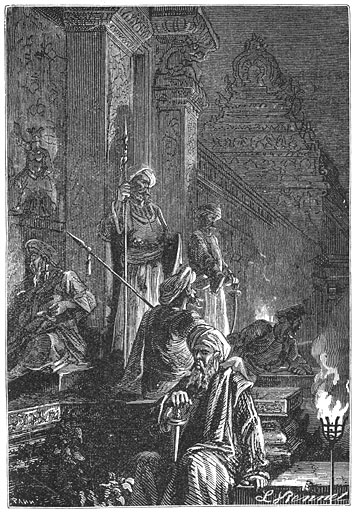

De Reis om de Wereld
in
Tachtig Dagen.
[Inhoud]
Eerste Hoofdstuk.
Waarin Phileas Fogg en Passepartout elkander wederkeerig aannemen, den een als meester, den ander als knecht.
In het jaar 1872 werd het huis no. 7 in Saville Row, Burlington Gardens, waarin Sheridan in 1814 overleed, bewoond door Phileas Fogg esq., een der zonderlingste en meest bekende leden van de Reform-club te Londen, al deed hij ook al wat in zijn vermogen was om de aandacht niet op zich te vestigen.
Een der welsprekendste redenaars, waarop Engeland zich verheffen mag, had dus tot opvolger Phileas Fogg, een raadselachtig persoon, van wien men niets wist, dan dat hij een hoogst wellevend man was en een der schoonste gentlemen uit de aanzienlijkste kringen.
Men zeide dat hij op Byron geleek—wat zijn hoofd aangaat, want zijne voeten waren onberispelijk—maar een Byron met baard en knevel, een kalme Byron die duizend jaar had kunnen leven zonder oud te worden.
Ofschoon zonder eenigen twijfel Engelschman van geboorte, was hij misschien geen Londener. Men had hem nooit aan de beurs of aan de bank gezien, noch in eenig kantoor der City. Noch de bassins, noch de dokken te Londen hadden ooit eenig schip bevat, dat Phileas Fogg tot reeder had. Hij was lid van geen enkele administratieve commissie. Zijn naam was nog nooit genoemd in een gezelschap van advocaten, noch in Temple-bar, noch in Lincolns-inn. Nooit had hij gepleit voor de Court of Chancery, of voor Queens-bench, of voor de Rekenkamer of voor het kerkelijk Hooggerechtshof. Hij was noch fabrikant, noch grossier, noch winkelier, noch landbouwer. Hij was geen lid van het Koninklijk Britsch Instituut, noch van het Londensch Instituut, noch van [2]de Maatschappij van Werklieden, noch van het Russels Instituut, noch van het Westersch Genootschap van Letterkunde, noch van de Vereeniging voor Rechtsgeleerdheid, noch van het Vereenigd Genootschap van Kunsten en Wetenschappen, dat onder rechtstreeksche bescherming staat der Koningin. Hij behoorde ook tot geen dier tallooze andere vereenigingen en genootschappen, waaraan Engelands hoofdstad zoo rijk is: van de maatschappij Armonica af tot het Entomologisch Genootschap, dat voornamelijk werd opgericht om schadelijke insecten uit te roeien.
Phileas Fogg was lid van de Reform-club en van niets anders.
Wie zich verwonderen mocht, dat zulk een geheimzinnig man onder de leden van dien aanzienlijken kring werd opgenomen, vindt daarvan de verklaring in de omstandigheid, dat hij was voorgesteld door de gebroeders Baring, bij wie hij een open crediet had. Altijd werden zijne wissels op zicht betaald en geboekt op zijn rekening-courant, waarop hij altijd als crediteur stond.
Was deze Phileas Fogg rijk? Zonder eenigen twijfel. Maar hoe had hij fortuin gemaakt? Dat wisten zelfs de best ingelichten niet, en Fogg was wel de laatste, aan wien men het zou durven vragen. In elk geval, hij was in geen opzicht verkwistend, maar ook nooit gierig; overal waar de steun werd gevraagd voor eene goede, nuttige of loffelijke zaak, droeg hij in stilte en zelfs onbekend bij.
Niemand was zoo weinig spraakzaam als deze gentleman. Hij sprak zoo min mogelijk en die stilzwijgendheid verhoogde nog het geheimzinnige, dat hem kenmerkte. Nochtans lag zijn leven voor ieder open, maar wat hij deed was zulk een mathematische herhaling van hetzelfde, dat de verbeelding, hiermede niet voldaan, er meer achter wilde zoeken.
Had hij gereisd? Dit was waarschijnlijk, want niemand had beter de wereldkaart in zijn hoofd. Zulk een afgelegen plekje was er niet, of hij kende het in alle bijzonderheden. Nu en dan, maar altijd in weinige woorden, kort en duidelijk, nam hij de dwalingen weg, die voortsproten uit de praatjes omtrent verloren geraakte reizigers; hij gaf de meest waarschijnlijke verklaring van hun lot en zijne woorden schenen vaak geïnspireerd door een visioen, wanneer later bleek dat alles zich had toegedragen gelijk hij gezegd had. Hij moest overal geweest zijn—althans in zijn geest.
Een ding intusschen was zeker: dat Phileas Fogg sedert vele jaren Londen niet had verlaten. Zij, die de eer hadden hem wat nader te kennen dan anderen, verklaarden dat, behalve op den weg, die den kortsten afstand vormde van zijn huis naar de club, niemand hem ooit elders gezien had. Hij bracht zijne dagen door met lezen en whisten. Bij dit spel, waarbij niet gesproken wordt en dat dus geheel overeenstemde met zijn karakter, won hij meest altijd, maar die winst stak hij niet op; hij bestemde ze voor liefdadige [3]doeleinden. Bovendien gaf Fogg steeds doorslaande blijken dat hij speelde om het spel maar niet om de winst. Het spel was voor hem een strijd, een worsteling tegen moeielijkheden, maar eene worsteling zonder beweging, zonder zich te verplaatsen, zonder zich te vermoeien en dat kwam volkomen met zijn inborst overeen.
Phileas Fogg had, zoover men wist, geen vrouw of kinderen—wat den besten kan gebeuren—en ook geen bloedverwanten of vrienden, wat zeker minder algemeen voorkomt. Hij leefde alleen in zijn huis in Saville Row, waar niemand ooit tot hem doordrong. Zijn huiselijk leven was dus volkomen onbekend. Aan een enkelen knecht had hij genoeg. Hij ontbeet en dineerde in zijn club op dezelfde, met chronometrische juistheid afgepaste uren, in dezelfde zaal, aan dezelfde tafel, nooit zijne collega’s onthalende of vreemde gasten noodigende. Hij ging naar zijn huis alleen om te slapen, precies te middernacht, zonder ooit gebruik te maken van de goed ingerichte slaapvertrekken, die de club ter beschikking houdt van hare leden. Van de vier en twintig uren bracht hij er tien door in zijne woning met slapen of de zorg voor zijn toilet. Als hij wandelde, was het altijd met denzelfden tred in de voorzaal met ingelegden vloer of in de galerij om het huis, waarover een glazen dak zich uitstrekte, rustende op ionische kolommen van rood porfier. Als hij ontbeet of dineerde was het steeds uit de keuken, de spijskamer, den kelder, den vischvijver en het roomhuis der club, die het beste van hun voorraad voor zijne tafel opleverden; het waren de bedienden uit de club, deftig in het zwart gekleede personen met vilten zolen onder hunne schoenen, die de spijzen opbrachten in het eigen servies der club en op het eigen fijn damast tafellaken plaatsten; de kristallen glazen, eigen model van de club, bevattende zijn sherry, zijn portwijn en zijn bordeaux, vermengd met kaneel en aromatische kruiden; eindelijk was het ijs der club, met groote kosten uit de amerikaansche meren aangevoerd, dat zijne dranken bewaarde en frisch hield.
Als op deze wijze te leven iets zonderlings heeft, die zonderlingheid heeft toch hare goede zijde.
Het huis in Saville Row was niet buitengewoon prachtig, maar onderscheidde zich door bijzonder gemakkelijke inrichting. De nooit wisselende gewoonte van den heer des huizes maakten dat de dienst zeer gemakkelijk te verrichten was. Phileas Fogg eischte slechts van zijn eenigen bediende eene stiptheid en eene regelmatigheid zonder wederga. Den dag, waarop wij hem het eerst ontmoeten, den 2den October, had hij zijn knecht James Forster uit zijn dienst ontslagen, omdat deze zich aan het misdrijf had schuldig gemaakt, dat hij hem scheerwater had gebracht van 88 graden Fahrenheit in plaats van 86 graden, en hij wachtte diens opvolger tusschen elf uur en half twaalf.
[4]Phileas Fogg zat in zijn leunstoel, de beenen tegen elkander gesloten als een soldaat op een parade, de handen rustende op zijn knieën, het bovenlichaam recht op, het hoofd stijf en starend op de pendule, een zeer samengesteld uurwerk, dat uren, minuten, seconden, dag der week, datum en jaartal aanwees. Als het half twaalf sloeg, moest Fogg, krachtens zijne dagelijksche gewoonte, zijn huis verlaten en zich naar de Reform-club begeven.
Op dit oogenblik werd aan de deur van zijn klein salon geklopt en James Forster, de ontslagen knecht, trad binnen.
“De nieuwe bediende,” zeide hij.
Een man van dertig jaar kwam binnen en groette.
“Gij zijt een Franschman en heet John?” vroeg Phileas Fogg.
“Jean, met uw welnemen,” antwoordde de binnenkomende, “Jean Passepartout, een naam, dien ik behouden heb en dien ik verwierf door mijn talent, om mij in alle omstandigheden te schikken. Ik geloof dat ik een eerlijke jongen ben, mijnheer, maar ik moet oprecht zijn en u zeggen, dat ik van alles bij de hand heb gehad. Ik ben reizend zanger geweest, oppasser in een paardenspel, ik heb op het trapèze gewerkt als Léotard en koord gedanst als Blondin; toen ben ik onderwijzer in de gymnastiek geworden, ten einde meer partij van mijne talenten te trekken en eindelijk was ik sergeant bij de pompiers te Parijs. Ik heb onder mijne papieren hoogst belangrijke brand-rapporten. Maar sedert vijf jaren heb ik Frankrijk verlaten en daar ik het huiselijk leven genieten wilde, ben ik kamerdienaar in Engeland geworden. Thans ben ik zonder betrekking en daar ik vernomen heb, dat de heer Phileas Fogg de meest stipte en minst onbestendige man uit het vereenigd koninkrijk is, ben ik zoo vrij mij bij u aan te bieden, in de hoop hier rustig te leven en zelfs mijn naam van Passepartout te vergeten.”
“Passepartout bevalt mij,” antwoordde de gentleman. “Men heeft u bij mij aanbevolen. Ik heb goede berichten omtrent u. Kent gij mijne voorwaarden?”
“Ja, mijnheer.”
“Goed. Hoe laat hebt gij ’t?”
“Twee en twintig minuten over elven,” zeide Passepartout, uit de diepte van zijn vestjeszak een ontzaglijk zilveren horloge te voorschijn halende.
“Gij gaat achter,” zeide Fogg.
“Houd mij ten goede, mijnheer, dat is onmogelijk.”
“Gij gaat vier minuten achter. Maar dat doet er niet toe. Het is genoeg, dat het verschil bekend zij. Van dit oogenblik af, elf ure negen en twintig minuten in den morgen van Woensdag 2 October 1872, zijt gij in mijn dienst.”
Phileas Fogg.
Na dit gezegd te hebben stond Phileas Fogg op, nam met zijn [5]linkerhand zijn hoed, zette dien met de beweging van een automaat op zijn hoofd en vertrok zonder een woord meer te zeggen. Passepartout hoorde de voordeur sluiten; het was zijn meester, [6]die heenging; toen hoorde hij haar nogmaals dichttrekken; het was zijn voorganger, die insgelijks heenging.
Passepartout bleef alleen in het huis no. 7 van Saville Row.
[Inhoud]
Tweede Hoofdstuk.
Waarin Passepartout de overtuiging erlangt, dat hij eindelijk zijn ideaal gevonden heeft.
“Op mijn woord van eer,” sprak Passepartout bij zich zelven, toen hij van zijne eerste verbazing een weinig bekomen was, “ik heb bij madame Tussaud poppen gekend, die net zoo levend waren als mijn nieuwe meester.”
Madame Tussaud, zooals de meeste lezers zullen weten, heeft te Londen een museum van wassenbeelden, dat door alle Engelschen en vreemdelingen wordt bezocht, en waarvan de poppen alleen de spraak missen om wezenlijke menschen te schijnen.
In de weinige oogenblikken, die hij met Phileas Fogg had doorgebracht, had Passepartout wel snel maar toch zeer zorgvuldig zijn aanstaanden meester opgenomen. Deze was een man van omstreeks veertig jaar met een edel, schoon gelaat, hooge gestalte, die door eene zekere gezetheid niet werd ontsierd, blond van haar en baard met een effen rimpelloos voorhoofd, eer bleek dan rood van kleur en met prachtige tanden. Hij scheen in de hoogste mate te bezitten wat de beoefenaars der gelaatkunde “de rust der beweging” noemen, eene uitdrukking eigen aan allen, die meer handelen dan leven maken. Kalm, flegmatiek, met een helderen blik, onbeweeglijke wenkbrauwen, was hij de volmaakte type van die koelbloedige Engelschen, die men zoo vaak in hun vaderland aantreft en waarvan Angelica Kauffman zoo treffend de schier academische figuur door haar penseel heeft weergegeven. In zijne verschillende levenstoestanden gezien, maakte die gentleman den indruk van een wezen, wiens deelen allen in volmaakt evenwicht waren, zoo volmaakt als in een chronometer van Leroy of Earnskow. Phileas Fogg was dan ook de nauwgezetheid in persoon, wat duidelijk zichtbaar was in de “uitdrukking van zijne handen en zijne voeten;” want bij den mensch zoowel als het dier zijn de onderdeelen evenzeer organen, welke de hartstochten en neigingen uitdrukken.
[7]Phileas Fogg was een van die mathematisch nauwkeurige mannen, die nooit gehaast en altijd gereed zijn en even spaarzaam met hunne schreden als met hunne bewegingen. Hij deed geen stap te veel, omdat hij altijd den kortsten weg nam. Hij veroorloofde zich zelven geen blik naar het plafond, geene enkele overtollige beweging. Men had hem nog nooit ontroerd of in verwarring gezien. Hij was de minst gejaagde man ter wereld, maar hij kwam altoos bij tijds. Men zal intusschen begrijpen, dat hij alleen leefde en, om zoo te zeggen, buiten eenige gemeenschap met de wereld. Hij wist dat men in den omgang met de maatschappij in wrijving kwam met de menschen en daar wrijving oponthoud veroorzaakt, ging hij met niemand om.
Wat Jean, bijgenaamd Passepartout, betreft, deze was een echte Parijzenaar uit Parijs; gedurende de vijf jaren, welke hij in Engeland had doorgebracht, was hij kamerdienaar geweest, en vruchteloos had hij naar een meester gezocht, aan wien hij zich hechten kon.
Passepartout was geen van die Frontins of Mascarillo’s met trotsche houding en onbeschaamden blik. Hij was een goede kerel met vriendelijk gelaat en eenigszins uitstekende lippen, altijd bereid om iets te proeven of te glimlachen, een zachtaardig en gedienstig wezen met een van die volle, bolle gezichten, die men gaarne op den hals van een vriend ziet. Hij had blauwe oogen, eene gezonde kleur, wangen zoo rond dat hij zelf ze zien kon, breede borst, krachtige gestalte, breede spieren en bezat eene herculische kracht, die door de lichaamsoefeningen in zijne jeugd bewonderenswaardig was ontwikkeld. Zijne donkere haren waren altijd een weinig in wanorde. Zoo de beeldhouwers der oudheid achttien verschillende manieren kenden, om het haar van Minerva af te beelden, hij kende er slechts eene om het zijne in orde te brengen; drie streken met de kam waren voldoende om zijn toilet te voltooien.
Het spraakzame, openhartige karakter van den knecht was niet geheel in overeenstemming met dat van Phileas Fogg; men zou de waarheid te kort doen, zoo men dit beweerde. Maar was Passepartout de man, zoo stipt en nauwgezet, als zijn meester vorderde? Dit zou uit de ondervinding blijken. Na zijne min of meer onstuimige jeugd, verlangde hij bovenal naar rust. Daar hij de stelselmatigheid van de Engelschen en hunne spreekwoordelijke kalmte had hooren roemen, was hij naar Engeland overgekomen om daar zijn fortuin te beproeven. Tot dusverre echter was het lot hem niet bijzonder gunstig geweest. Nergens had hij zijn anker voor goed kunnen neerleggen. Hij had wel tien meesters gehad. Overal was men grillig, onbestendig, jaagde men de avonturen na of ging men gedurig op reis, wat Passepartout volstrekt niet naar den zin was. Zijn laatste meester, de jonge lord Longsferry, lid [8]van het Parlement, kwam vaak, na den nacht in de oester-huizen van Haymarket te hebben doorgebracht, op de schouders van politie-agenten te huis. Daar Passepartout in de eerste plaats achting voor zijn meester wilde gevoelen, had hij eenige eerbiedige opmerkingen gewaagd, die slecht werden opgenomen; het gevolg was, dat hij heenging. Toen vernam hij dat de heer Phileas Fogg esq. een bediende zocht. Hij won inlichtingen omtrent dezen in. Een man, wiens levenswijze zoo regelmatig was, die altijd des nachts te huis sliep, die niet op reis ging, die nooit, zelfs geen dag, afwezig was, moest wel in zijn geest vallen. Hij bood zich dus aan en werd aangenomen op de wijze, als wij mededeelden.
Toen het half twaalf sloeg, was dus Passepartout alleen in het huis van Saville Row. Hij begon thans alles eens op te nemen. Hij doorliep het huis van den zolder tot den kelder. Overal was het netjes, ordelijk, puriteinsch eenvoudig en goed ingericht voor den dienst. Dit beviel hem. Het maakte op hem den indruk van een fraai slakkenhuis, maar een slakkenhuis verlicht en verwarmd door gas, want gas voorzag in alle eischen van verlichting en verwarming. Zonder moeite vond hij op de tweede verdieping de kamer, die voor hem bestemd was. Deze was volkomen naar zijn zin. Electrische klokken en spreekbuizen stelden haar in gemeenschap met de kamers van zijn meester. Op den schoorsteen stond eene pendule, die door een electrischen draad correspondeerde met de pendule in de slaapkamer van Phileas Fogg en de twee uurwerken gaven altijd dezelfde seconde aan.
“Dat bevalt me, dat bevalt me zeer goed,” sprak Passepartout bij zich zelven.
Hij merkte in die kamer ook een lijstje op dat boven de pendule hing. Dit behelsde het programma van hetgeen hij dagelijks had te doen. Het bevatte, van des morgens acht ure af, op welk uur Phileas Fogg opstond, tot half twaalf, wanneer hij zich naar de Reform-club begaf om te ontbijten, alle bijzonderheden van den dienst: thee en geroosterd brood ten acht ure drie en twintig minuten; scheerwater ten negen ure zeven en dertig, het haar in orde brengen ten negen ure vijftig enz. Van half twaalf des voormiddags tot twaalf ure ’s nachts, op welk uur de stelselmatige Engelschman zich te rust begaf, was alles bepaald, voorzien en geregeld. Passepartout had er pleizier in dit programma te bestudeeren en de verschillende punten er van in zijn geheugen te prenten.
Wat de garderobe van zijn meester betreft, deze was volmaakt in orde en bewonderenswaardig gerangschikt. Elke broek, jas of vest had een nummer, dat correspondeerde met een register, waarop de dagen waren vermeld waarop de verschillende stukken waren ingekomen of uitgingen, alsmede de tijd van het jaar, waarin zij op hunne beurt moesten worden gedragen. Hetzelfde stelsel was gevolgd voor de schoenen en laarzen. [9]
Jean Passepartout.
Kortom, dit huis in Saville Row, dat in de dagen van den beroemden maar losbandigen Sheridan de tempel der wanorde moest zijn geweest, bevatte thans de gemakkelijkste meubels, die van [10]eene onbekommerde levenswijze getuigden. Er was geen bibliotheek, er waren geene boeken, want deze zouden voor den heer Fogg volkomen nutteloos zijn geweest, daar de Reform-club twee bibliotheken tot zijne beschikking stelde, de een van werken van smaak, de andere van wetenschap. In de slaapkamer stond eene brandkast van gemiddelde grootte, die zoowel tegen de dieven als tegen de vlammen bestand was. Wapens bevatte het huis niet, geen enkel voorwerp voor den oorlog of de jacht. Alles bewees dat de bewoner zeer vredelievend was.
Na de geheele woning tot in de geringste bijzonderheden te hebben opgenomen, wreef Passepartout zich in de handen, zijn breed gelaat begon te glinsteren en vroolijk herhaalde hij bij zich zelven:
“Het bevalt me; ’t is juist een kolfje naar mijne hand. Wij zijn het volkomen eens, die mijnheer Fogg en ik. Een huiselijk en ordelijk man. Een echte automaat. Nu, ik ben er niet rouwig om een mechaniek te bedienen.”
[Inhoud]
Derde Hoofdstuk.
Een gesprek dat Phileas Fogg duur te staan kan komen.
Phileas Fogg had om half twaalf zijn huis in Saville Row verlaten, en na vijf honderd vijf en zeventig maal zijn rechtervoet vóor zijn linker en vijf honderd zes en zeventig maal zijn linker vóor zijn rechter voet gezet te hebben, kwam hij in de Reform-club, een groot gebouw in Pall Mall, dat niet minder dan drie millioen pond gekost heeft.
Phileas Fogg ging terstond naar de eetzaal, waarvan de negen ramen uitkwamen op een fraaien tuin met boomen, die reeds eene gele herfsttint kregen. Daar nam hij aan de tafel plaats, waar zijn couvert hem reeds wachtte; zijn ontbijt bestond uit een bijgerecht, gekookte visch met “reading sauce,” biefstuk met champignons, een gebak gevuld met rabarberstelen en kruisbessen met een stukje Chesterkaas, en bij dat alles voegde hij eenige kopjes thee, bepaald uit China gezonden voor de Reform-club.
Om dertien minuten voor éenen stond de gentleman op en begaf zich naar de groote zaal, eene prachtige kamer, versierd met schilderijen [11]in rijke lijsten. Een bediende legde daar de onopengesneden Times neer vóor zijne plaats, en Phileas Fogg maakte ze los met een vastheid van hand, die getuigde dat hij in dit moeielijk werk zeer ervaren was. Met deze lectuur was Phileas Fogg bezig tot kwart over drieën; de Daily Telegraph, die daarop volgde, duurde tot het diner. Dit diner was ingericht op dezelfde manier als het ontbijt, slechts met bijvoeging van de “royal british sauce.” Twintig minuten vóor zessen verscheen de gentleman weder in de groote zaal, en daar verdiepte hij zich in den Morning Chronicle.
Een half uur later kwamen de verschillende habitués van de Reform-club opdagen en namen plaats bij den haard, waarin een lekker vuur brandde. Dit waren Phileas Fogg’s gewone medespelers in het whistspel: de ingenieur Andrew Stuart, de bankiers John Sullivan en Samuel Fallentin, de brouwer Thomas Flanagan en Gauthier Ralph, een van de directeuren der engelsche bank, allen rijke en aanzienlijke personen, zelfs in die club, onder wier leden men de voornaamste industrieele en financieele beroemdheden telde.
“Wel! Ralph,” begon Thomas Flanagan, “hoe staat het met den diefstal?”
“Ja,” antwoordde Andrew Stuart, “de bank is haar geld kwijt.”
“Ik vertrouw integendeel,” zeide Gauthier Ralph, “dat wij den dief wel zullen krijgen. Men heeft zeer handige inspecteurs van politie naar Amerika en naar de voornaamste havens van Europa gezonden, zoodat het dien heer moeite zal kosten om hun te ontsnappen.”
“Men heeft dus het signalement van den dief?” vroeg Andrew Stuart.
“Het is eigenlijk geen dief,” antwoordde Gauthier Ralph ernstig.
“Hoe? Is het geen dief, die vijf en vijftig duizend pond sterling aan bankpapier gestolen heeft.”
“Neen,” zeide Ralph.
“Is het dan iemand, die zaken aan de beurs doet?”
“De Morning Chronicle verzekert dat het een gentleman is.”
Hij, die dit zeide was niemand anders dan Phileas Fogg, wiens hoofd even uitstak boven een stapel couranten welke voor hem lagen. Tegelijkertijd groette Phileas Fogg zijn collega’s, die zijn groet beantwoordden.
De zaak waarover men sprak en waarover de verschillende dagbladen van het Vereenigde Koninkrijk zoo ijverig van gedachten wisselden, was drie dagen geleden, den 29en September gebeurd. Een lias banknoten, de aanzienlijke som van vijf en vijftig duizend pond sterling vertegenwoordigende, was weggenomen van het tafeltje van den eersten boekhouder der engelsche bank.
[12]Aan hem, dien het verwonderde dat zulk een diefstal zoo gemakkelijk kon gebeuren, gaf de onder-directeur, Gauthier Ralph, eenvoudig ten antwoord, dat juist op dat oogenblik de kassier bezig was om een quitantie te registreeren en dat men niet op alles te gelijk kan letten.
Men moet niet uit het oog verliezen—iets wat de zaak duidelijker maakt—dat deze uitmuntende instelling, de engelsche bank zich zeer veel aan de waardigheid van het publiek laat gelegen liggen. Geen wacht, geen oppassers, geen traliewerk! Het goud, het zilver en de banknoten zijn aan ieders blikken blootgesteld en liggen schijnbaar ter beschikking van den eerstkomende. Men mocht toch de eerlijkheid van elken voorbijganger niet wantrouwen. Iemand, die het best de engelsche zeden heeft bestudeerd, vertelt daaromtrent zelfs het volgende. Eens was hij zeer nieuwsgierig om van nabij een gouden staaf te zien, die zes à acht pond woog en op een tafeltje van den kassier lag, in de zaal, waar hij zich bevond. Hij nam deze staaf, bekeek haar, gaf haar aan zijn buurman, deze aan een anderen, zoodat zij van hand tot hand ging, tot in de donkeren gang en niet dan na een half uur terugkwam, zonder dat zelfs de kassier maar even opgekeken had.
Den 29en September echter liep niet alles op deze wijze af. De lias banknoten kwam niet terug, en toen de prachtige pendule op den schoorsteenmantel vijf uur sloeg en de instelling gesloten werd, had de engelsche bank vijf en vijftig duizend pond op hare onkostenrekening te brengen.
Toen de diefstal goed en deugdelijk was erkend, werden politieagenten “detectives”, gekozen uit de besten, naar de voornaamste havens gezonden, naar Liverpool, Glasgow, Havre, Suez, Brindisi, New-York enz., met belofte dat, zoo zij den dief opspoorden, hun eene premie van twee duizend pond zou worden toegekend en voorts vijf percent van de som welke nog in zijn bezit werd gevonden. In afwachting van de inlichtingen, welke zouden voortspruiten uit het onderzoek, dat terstond was ingesteld, hadden die inspecteurs in last, om met de meeste nauwlettendheid alle reizigers gade te slaan, die mochten aankomen of vertrekken.
“Ja, mijnheer, om vierduizend pond!” Blz. 15.
Nu had men, zooals de Morning Chronide zeide, reden om te onderstellen, dat hij, die de bank bestolen had, geen deel uitmaakte van een der dievengenootschappen in Engeland. Op dien 29en September was een welbekend heer, die er zeer fatsoenlijk uitzag en zelfs een voornaam voorkomen had, in de zaal der uitbetalingen gezien, waar de diefstal had plaats gehad. Door de ingestelde enquête had men vrij nauwkeurig het signalement van dien heer kunnen opmaken, dat nu terstond aan alle detectives in het geheele Rijk gezonden werd. Eenige optimisten—en daaronder [13]was Gauthier Ralph—achtten het op dien grond vrij waarschijnlijk, dat de dief niet ontsnappen zou.
Zooals men denken kan, was deze gebeurtenis het onderwerp [14]van alle gesprekken in Londen en geheel Engeland. Men twistte er over en men koos zelfs met eenigen hartstocht partij voor of tegen de waarschijnlijkheid dat de politie der hoofdstad in hare pogingen zou slagen. Te verwonderen was het dus niet, dat ook de leden der Reform-club hetzelfde onderwerp behandelden, vooral niet, omdat een van de onderdirecteuren der bank zich onder hen bevond.
De heer Gauthier Ralph twijfelde niet aan den goeden uitslag van het onderzoek en was van oordeel, dat de uitgeloofde premie in hooge mate strekken moest om den ijver en het doorzicht van de politie te versterken. Diens collega Andrew Stuart daarentegen was er verre van af zijn vertrouwen te deelen. De strijd werd dan ook voortgezet aan de whisttafel tusschen de heeren Stuart, Flanagan, Fallentin en Fogg. Onder het spelen spraken de spelers niet, maar tusschen de robbers herleefde het afgebroken gesprek telkens in zijn volle kracht.
“Ik houd vol,” zeide Andrew Stuart, “dat de kansen ten gunste zijn van den dief, die zeer zeker een handig man moet zijn.”
“Kom, kom!” antwoordde Ralph, “er is geen enkel land, waar hij een schuilplaats zou kunnen vinden.”
“Nu nog mooier!”
“Waar zou hij naar toe gaan?”
“Ik weet er niets van,” antwoordde Andrew Stuart, “maar dit weet ik wel, dat de wereld groot genoeg is.”
“Dat was zij voorheen” … zeide Phileas Fogg half luid; “u moet coupeeren, mijnheer,” ging hij voort, de kaarten aan Thomas Flanagan toeschuivende.
Het gesprek werd gedurende den robber niet vervolgd. Maar al spoedig verbrak Andrew Stuart de stilte door te zeggen:
“Hoe, voorheen? Is de wereld misschien kleiner geworden?”
“Zonder twijfel,” hernam Gauthier Ralph. “Ik ben van dezelfde meening als mijnheer Fogg: de wereld is kleiner geworden, omdat men haar nu in tienmaal minder tijd omreist dan honderd jaar geleden. En dat zal in het geval, waarin wij nu verkeeren, de nasporingen zeer bespoedigen.”
“Maar voor den dief is het vluchten nu ook zooveel gemakkelijker geworden.”
“Gij moet spelen, mijnheer Stuart,” zeide Phileas Fogg.
Maar de ongeloovige Stuart was nog niet overtuigd en nauwelijks was het spel uit, of hij zeide:
“Ik moet zeggen, mijnheer Ralph, dat gij al een zeer aardige manier hebt, om te bewijzen dat de wereld kleiner is geworden. Omdat men de wereld kan omreizen in drie maanden ….”
“In tachtig dagen,” verbeterde Phileas Fogg.
“Inderdaad heeren,” voegde John Sullivan er bij, “sedert de [15]sectie Rothal-Allahabad van den Great-Indian Peninsular-spoorweg, is geopend, maakt de Morning Chronicle de volgende berekening:
| Van Londen naar Suez over den Mont-Cenis en Brindisi, spoorweg en mailbooten, | 7 | dagen |
| Van Suez naar Bombay, mailbooten, | 13 | dagen |
| Van Bombay naar Calcutta, spoorweg, | 3 | dagen |
| Van Calcutta naar Hongkong (China), mailboot, | 13 | dagen |
| Van Hongkong naar Yokohama (Japan), mailboot, | 6 | dagen |
| Van Yokohama naar San-Francisco, mailboot, | 22 | dagen |
| Van San-Francisco naar New-York, spoorweg, | 7 | dagen |
| Van New-York naar Londen, mailboot en spoorweg, | 9 | dagen |
| 80 | dagen.” |
“Juist, tachtig dagen,” zeide Andrew Stuart, die door onoplettendheid een hooge kaart troefde; “maar daaronder niet begrepen het slechte weer, tegenwind, schipbreuk, derailleeren enz.”
“Alles er onder begrepen,” antwoordde Phileas Fogg, doorspelende, want ditmaal eerbiedigde het gesprek het spel niet meer.
“Zelfs wanneer de Hindoes of de Indianen de rails opbraken,” riep Andrew Stuart; “wanneer zij den trein tegenhouden, de waggons plunderen en de reizigers scalpeeren.”
“Alles er onder begrepen,” herhaalde Phileas Fogg, die zijn spel nederlegde en nog twee troeven in zijn hand toonde.
Andrew Stuart, wiens beurt het was om te wasschen, nam de kaarten op, zeggende:
“Theoretisch hebt ge gelijk, mijnheer Fogg, maar in de practijk ….”
“In de practijk ook, mijnheer Stuart.”
“Ik zou het u wel eens willen zien doen.”
“Dit staat aan u. Laten wij samen vertrekken.”
“De hemel beware me!” riep Stuart; “maar ik wil wel wedden om vier duizend pond sterling, dat zulk een reis op zulke voorwaarden onmogelijk is.”
“Integendeel, zeer mogelijk,” antwoordde Fogg.
“Nu, maak ze dan!”
“De reis om de wereld in tachtig dagen?”
“Ja.”
“Ik wil wel.”
“Wanneer?”
“Terstond. Maar het spreekt van zelf, dat ik het op uw kosten doe.”
“Dat is krankzinnigenwerk!” riep Andrew Stuart, die zich ongerust begon te maken over de hardnekkigheid van zijn medespeler. “Kom! laten wij liever spelen.”
“Geef dan nog eens,” zeide Phileas Fogg, “want gij hebt verkeerd gegeven.”
[16]Andrew Stuart nam de kaarten met bevende hand, maar eensklaps ze op tafel nederleggende, zeide hij: “welnu, ja mijnheer Fogg, ik wed om vier duizend pond!…”
“Beste Stuart,” zeide Fallentin, “bedaar toch. Het is geen ernst.”
“Als ik zeg: ik wed,” zeide Andrew Stuart, “dan meen ik het ook.”
“Goed,” zeide Fogg. Toen, zich tot zijn collega’s wendende, ging hij voort:
“Ik heb twintig duizend pond bij de gebroeders Baring staan. Ik heb ze er gaarne voor over ….”
“Twintig duizend pond!” riep John Sullivan. “Twintig duizend pond, die gij door een onvoorzien oponthoud kunt verliezen.”
“Onvoorziene dingen bestaan niet,” hernam Fogg kalm.
“Maar, mijnheer Fogg, de tijd van tachtig dagen is het minimum van tijd, dat men er voor berekend heeft.”
“Een goed besteed minimum is voor alles voldoende.”
“Maar om het niet te overschrijden moet men met wiskunstige juistheid van den spoorweg op de mailboot en van de mailboot op den spoorweg overspringen.”
“Ik zal wiskunstig overspringen.”
“Dat is scherts!”
“Een goed Engelschman schertst nooit, wanneer er sprake is van zulk eene gewichtige zaak als eene weddenschap,” antwoordde Phileas Fogg. “Ik wed tegen ieder, die maar wil, twintig duizend pond, dat ik de wereld zal rondreizen in tachtig dagen, dat is duizend negen honderd twintig uren of honderd vijftien duizend twee honderd minuten. Neemt gij het aan?”
“Wij nemen het aan!” antwoordden de heeren Stuart, Fallentin, Sullivan, Flanagan en Ralph, na het met elkander eens te zijn geworden.
“Goed,” zeide Fogg. “De trein naar Dover vertrekt om kwart voor negenen. Daar zal ik mede op reis gaan.”
“Van avond nog?” vroeg Stuart.
“Dezen avond,” antwoordde Fogg.
“Alzoo,” ging hij voort, een zak-almanak raadplegende, “het is heden woensdag, 2 October, ik moet in Londen terug zijn, in deze zaal zelve van de Reform club, op zaterdag 21 December, kwart voor negenen, en zoo ik er niet ben, zullen de twintig duizend pond bij de gebroeders Baring gedeponeerd u rechtmatig toebehooren. Ziedaar een wissel voor die som.”
Eene arme vrouw. Blz. 20.
Er werd een proces-verbaal van de weddenschap opgemaakt en terstond door de zes belanghebbenden geteekend. Phileas Fogg was onder dit alles zeer kalm gebleven. Hij had zeker niet gewed om te winnen, en had slechts zijn twintig duizend pond—de helft van zijn vermogen—verbonden, omdat hij voorzag dat hij het andere gedeelte zou moeten uitgeven, ten einde dit moeielijke, om [17]niet te zeggen onuitvoerbare, plan te volbrengen. Wat zijne tegenpartij betreft, deze was meer onder den indruk, niet zoozeer om de waarde van den inzet, dan wel omdat zij er eenig bezwaar in [18]maakte om te wedden tegen hetgeen toch onmogelijk kon bereikt worden.
Het sloeg zeven uur. Men stelde Fogg voor om dezen robber te staken, opdat hij zijn toebereidselen voor de reis zou kunnen maken.
“Ik ben altijd klaar,” antwoordde de kalme gentleman, en gaf de kaarten. “Ruiten troef,” zeide hij. “U zit voor, mijnheer Stuart.”
[Inhoud]
Vierde Hoofdstuk.
Waarin Phileas Fogg zijn knecht Passepartout in de hoogste mate verbaast.
Ten zeven uur vijf en twintig minuten nam Phileas Fogg, na twintig guineas met het whisten gewonnen te hebben, afscheid van zijn collega’s en verliet de Reform-club. Tien minuten voor achten was hij in zijne woning terug.
Passepartout, die zijne bezigheden zeer goed kende, stond verbaasd toen hij mijnheer Fogg zich schuldig zag maken aan onnauwkeurigheid, en op dit ongewone uur thuis zag komen.
Volgens zijne gewoonte moest de bewoner van Saville Row eerst ten twaalf uur te huis komen.
Phileas Fogg was terstond naar zijn kamer gegaan en riep: Passepartout!
Passepartout gaf geen antwoord. Dat roepen kon hem niet gelden. Het was nog geen tijd.
“Passepartout,” riep Fogg, nogmaals zonder eenige stemverheffing.
Passepartout kwam boven
“Ik heb u tweemaal geroepen,” zeide Fogg.
“Maar het is nog geen twaalf uur,” antwoordde Passepartout, met de lijst van werkzaamheden, die Fogg hem gegeven had, in de hand.
“Ik weet het,” hernam Fogg, “daarom maak ik er u geen verwijt van. Binnen tien minuten vertrekken wij naar Dover en Calais.”
Een soort van grijns kwam er op het gezicht van den Franschman. Blijkbaar had hij niet goed gehoord.
“Gaat mijnheer ergens anders wonen?” vroeg hij.
[19]“Ja,” zeide zijn meester, “wij gaan een reis om de wereld maken.”
Passepartout, met de oogleden en wenkbrauwen opgetrokken, de armen slap langs het lijf en het lichaam in elkander gezonken, was het uitgedrukte beeld der stomme verbazing.
“Een reis om de wereld,” mompelde hij.
“In tachtig dagen,” antwoordde de heer Fogg. “Wij hebben dus geen oogenblik te verliezen.”
“Maar de koffers?”—zeide Passepartout, zijn hoofd schuddende.
“Geen koffers, slechts een reiszak. Doe daarin twee wollen hemden en drie paar kousen en hetzelfde voor u; onderweg koopen wij het overige. Gij haalt mijn overjas en mijn reisplaid. Trek goede schoenen aan. Intusschen wij zullen bijna niet loopen. Ga nu.”
Passepartout had willen antwoorden, maar hij kon niet. Hij verliet de kamer van Fogg, ging naar de zijne, viel op een stoel neder, en mompelde: Wel, wel, dat is me nu toch al sterk. En nu dacht ik zoo rustig hier te zullen leven!
Werktuiglijk maakte hij zijne toebereidselen voor de reis, de reis om de wereld in tachtig dagen! Had hij met een gek te doen? Neen … het was scherts! Men ging naar Dover, goed. Naar Calais, best. Dat deed den goeden jongen, die sedert vijf jaar den vaderlandschen bodem niet had gedrukt, zelfs genoegen. Men zou misschien zelfs naar Parijs gaan; welnu, hij zou deze groote hoofdstad met genoegen terug zien. Zeker zou een gentleman, die zoo weinig van loopen hield, daar blijven. Ja, ongetwijfeld, maar het was minder zeker, dat die gentleman, die tot nu toe altijd zoo huisvast was, op reis ging, dat hij zich ging verplaatsen.
Om acht uur had Passepartout het eenvoudig valies gereed gemaakt, dat zijn goed en dat van zijn meester bevatte, en verliet, nog half in verwarring zijn kamer, waarvan hij de deur zorgvuldig sloot. Hij kwam nu weder bij Fogg.
Fogg was ook klaar. Onder den arm droeg hij Bradshaw’s continental railway-steam-transit and general guide, die alle mogelijke noodige inlichtingen voor de reis bevatte. Hij nam het valies uit de handen van Passepartout, opende het en deed er een lias banknoten in, die in alle landen ter wereld worden aangenomen.
“Gij hebt dus niets vergeten?” vroeg hij.
“Niets, mijnheer.”
“Mijn jas en mijn plaid.”
“Hier zijn ze.”
“Goed zoo, neem nu het valies maar op.” Fogg gaf zijn valies aan Passepartout.
“Draag er goed zorg voor, want er zit twintig duizend pond sterling in.” [20]
Het had weinig gescheeld of het valies was uit Passepartouts handen gevallen, alsof de twintig duizend pond sterling in goud waren en daarvan het gewicht hadden.
Toen gingen Fogg en zijn bediende naar beneden en de huisdeur werd op het nachtslot gedaan.
Rijtuigen stonden aan het einde van Saville Row. Phileas Fogg en zijn bediende namen een cab en reden zoo snel mogelijk naar het station van Charing-Cross, waarop een van de takken van den Ooster-spoorweg uitloopt.
Acht uur twintig minuten hield de cab op vóor het hek van het station. Passepartout sprong er uit. Zijn meester volgde hem en betaalde den koetsier.
Op hetzelfde oogenblik naderde eene arme vrouw met een kind aan de hand. Zij liep barrevoets. Haar hoofddeksel was een verflenste hoed, waarvan een armzalige veer afhing; eene shawl in flarden bedekte hare gescheurde plunje. Zij wendde zich tot Phileas Fogg en vroeg een aalmoes.
Fogg gaf haar de twintig guinea’s, die hij aan de whisttafel gewonnen had.
“Daar, goede vrouw,” zeide hij, “ik ben blij dat ik u ontmoet heb.”
Daarop ging hij verder.
Passepartont voelde zijne oogen vochtig worden. Zijn meester steeg hooger in zijne achting.
Fogg en zijn bediende gingen terstond naar de wachtkamer. Hier liet Fogg Passepartout twee kaartjes eerste klasse voor Parijs nemen. Toen hij zich omkeerde, zag hij zijn vijf collega’s van de Reform-club.
“Mijne heeren,” zeide hij, “ik ga vertrekken, de verschillende visa zullen u in staat stellen om bij mijne terugkomst mijne reis na te gaan.”
“O, mijnheer Fogg, zeide Ralph Gauthier beleefd, “dat is onnoodig. Wij vertrouwen op uw eer van gentleman!”
“Maar zoo is het toch beter,” antwoordde Phileas Fogg.
“Gij vergeet niet, dat ge terug moet zijn?…” merkte Andrew Stuart aan.
“In tachtig dagen,” antwoordde Fogg; “zaterdag 21 December 1872, ’s avonds kwart voor negen.”
“Tot wederziens, mijne heeren!”
Om kwart voor negen namen Phileas Fogg en zijn bediende plaats in denzelfden waggon. Vijf minuten later hoorde men een schel fluitje en de trein zette zich in beweging.
Het was een stikdonkere nacht. Er viel een fijne motregen en het regende gestadig door. Phileas Fogg zat in zijn hoek gedoken en sprak geen woord. Passepartout, nog eenigszins onthutst, drukte onwillekeurig het valies met banknooten stijf tegen zich aan. [21]
Daar was-dan ook geen lezer. Blz. 22.
Maar de trein had Sydenham nog niet gepasseerd, of Passepartout uitte een kreet van wanhoop.
“Wat is er?” vroeg Fogg. [22]
“Ik heb … in mijne gejaagdheid … in mijn … iets vergeten ….”
“Wat?”
“Om de gaskraan in mijne kamer uit te draaien!”
“Zoo vriend,” antwoordde Fogg koel, “dan brandt die voor uwe rekening!”
[Inhoud]
Vijfde Hoofdstuk.
Waarin een nieuw efect aan de Londensche Beurs komt.
Toen Phileas Fogg Londen verliet, dacht hij zeker niet dat zijn vertrek zulk een opzien zou baren. Eerst bracht het verhaal der weddenschap eene ware gisting te weeg onder de leden der Reform-club; vervolgens plantte zich die beweging voort door de dagbladen en correspondentiën tot het londensche publiek en al de inwoners van het gansche Vereenigde Koninkrijk. De reis om de wereld werd besproken, betwist, ontleed, met zooveel hartstocht en ijver, alsof er sprake was van eene nieuwe Alabama-quaestie.
De een was de partij van Phileas Fogg toegedaan, de ander—en deze had weldra verreweg de meerderheid—was tegen hem. Een reis om de wereld in tachtig dagen was goed in theorie en op papier; in dat minimum van tijd, met de middelen van aansluiting, die tegenwoordig in gebruik waren, was zij niet alleen onmogelijk, maar onzinnig.
De Times, de Standard, de Eveningstar, de Morning Chronicle en twintig andere bladen, die veel gelezen werden, verklaarden zich tegen den heer Fogg. Alleen de Daily Telegraph was tot op zekere hoogte van zijne meening.
Phileas Fogg werd voor dwaas, buitensporig, ja gek verklaard, en in zijn medeleden van de Reform-club werd het zeer afgekeurd dat zij zulk eene weddenschap hadden aangenomen, die duidelijk een verzwakking van Fogg’s geestvermogens verried.
Zeer heftige, maar logische artikels verschenen over deze quaestie. Men weet dat Engeland in alles, wat met aardrijkskunde in verband staat, steeds veel belang stelt. Daar was dan ook geen lezer, tot welken stand hij behoorde, die niet de kolommen, welke over de zaak van Phileas Fogg handelden, verslond. [23]
In de eerste dagen waren eenige vermetelen, hoofdzakelijk vrouwen, op zijne hand, vooral toen de Illustrated Londen News zijn portret uitgaf naar de photografie die in de archieven van de Reform-club bewaard werd.
Eenige heeren durfden zeggen:—Wel zeker, waarom niet? Men heeft toch nog wel buitengewoner dingen gezien! Dit waren vooral de lezers van de Daily Telegraph. Maar men zag al spoedig dat dit blad zelf begon te wankelen.
En waarlijk, den 7en October verscheen er in het maandschrift van het Koninklijk Aardrijkskundig genootschap een artikel dat de quaestie uit verschillende oogpunten behandelde en zonneklaar bewees dat deze onderneming dwaasheid was. Volgens dit artikel was alles in het nadeel van den reiziger, zoowel de hinderpalen, die de menschen, als die, welke de natuur tegen de verwezenlijking van zijn plan zouden opwerpen. Om in dit plan te slagen, moest men een wonderdadigen samenloop aannemen van de uren van vertrek en aankomst, een samenloop die niet bestond en die niet bestaan kon.
Waar alles zeer nauwkeurig is ingericht als in Europa, dat men in betrekkelijk korten tijd doorreist, daar kan men rekenen op de stipte aankomst der treinen; maar wanneer men slechts drie dagen heeft, om van het eene eind van Indië naar het andere te komen en acht dagen voor de Vereenigde Staten, kon men dan staat maken op de elementen van zulk een vraagstuk? En dan nog de ongelukken, die aan de machines konden overkomen, het derailleeren, de botsingen, het slechte weder, de ophooping van sneeuw, was dat alles niet tegen den heer Fogg? Zou hij niet gedurende den winter op de mailbooten blootgesteld zijn aan stormen en zware mist? Is het dan zoo zeldzaam dat de beste Transatlantische booten dikwijls een oponthoud hebben van twee of drie dagen? Er was maar eene vertraging noodig, en de geheele keten van aansluiting was onherstelbaar verbroken. Zoo Phileas Fogg slechts eenige uren te laat kwam voor éen mailboot, zou hij immers moeten wachten tot de volgende vertrok, en zelfs door dit kleine oponthoud zou zijne reis onherroepelijk mislukt zijn. Dit artikel maakte veel opgang. Bijna alle bladen namen het over, en de acties “Phileas Fogg” daalden geducht.
Gedurende de eerste dagen na het vertrek van den gentleman, waren er groote zaken gedaan tusschen hen, die aan het welslagen van zijne onderneming geloofden of twijfelden. Men kent de buitensporigheid der Engelschen in het wedden. Op dat gebied zijn zij nog veel hartstochtelijker en standvastiger dan de spelers op het hunne. Wedden is een eigenschap van het engelsche karakter. Niet alleen gingen dan ook verschillende leden der Reform-club aanzienlijke weddenschappen aan, maar het groote publiek deed hetzelfde. [24]Phileas Fogg werd als een wedrenpaard ingeschreven in een soort van studbook. Men maakte van hem een beurs-effect, dat terstond getaxeerd werd. Men vroeg en bood “Phileas Fogg’s” aan en deed er ontzaglijke zaken in. Maar vijf dagen na zijn vertrek en na het artikel van het Maandschrift van het Aardrijkskundig Genootschap begonnen de aanbiedingen de overhand te nemen. De “Phileas Fogg’s” daalden. Men bood ze met stapels aan. Eerst werden zij genomen vijf voor een, toen tien, en nu nam men ze niet dan twintig, vijftig, en eindelijk honderd voor een.
Slechts éen aanhanger bleef hem getrouw, het was de lamme lord Albemarle. Deze achtenswaardige gentleman vastgenageld aan zijn stoel, had wel zijn geheele fortuin willen geven om een reis om de wereld te doen, al was het ook in tien jaar, en wedde vijf duizend pond sterling voor Phileas Fogg. Wanneer men hem de dwaasheid en het nuttelooze tevens van het plan onder de oogen bracht, antwoordde hij eenvoudig: Zoo de zaak uitvoerbaar is, dan is het goed dat een Engelschman haar het eerste volbrengt.
De voorstanders van Phileas Fogg verminderden hoe langer hoe meer; iedereen, en niet zonder reden, was tegen hem; men nam hem niet dan tegen honderdvijftig, à twee honderd voor één, totdat zeven dagen na zijn vertrek er iets geheel onverwachts gebeurde, hetwelk oorzaak was, dat men hem in het geheel niet meer nam.
In den loop van dien dag ten negen ure des avonds, ontving de directeur van politie in de hoofdstad een telegram van den volgenden inhoud:
“Van Suez naar Londen.
“Rowan, directeur van politie, hoofddirectie Scotlandplace.
Ik volg dief Bank, Phileas Fogg. Zend onmiddellijk bevel tot inhechtenisneming naar Bombay (Engelsch Indië).
Fix, detective.”
De detective. Blz. 28.
De uitwerking van dit telegram liet zich terstond gevoelen. De algemeen geachte gentleman verdween eensklaps om plaats te maken voor den dief der banknoten. Zijn photographisch portret, dat met die van al zijn medeleden, in het archief berustte, werd vergeleken. Trek voor trek gaf het den man weer, wiens signalement bij het ingestelde onderzoek was opgemaakt. Men herinnerde zich al het geheimzinnige van Phileas Fogg’s leven, zijne afzondering, zijn plotseling vertrek, en het was boven allen twijfel verheven, dat deze persoon, onder voorwendsel dat hij een reis om de wereld [25]ging maken, die op eene onzinnige weddenschap berustte, geen ander doel had gehad dan de engelsche politieagenten van het spoor te leiden. [26]
[Inhoud]
Zesde Hoofdstuk.
Waarin de agent Fix een rechtmatig ongeduld aan den dag legt.
Het telegram omtrent Phileas Fogg kwam onder de volgende omstandigheden in de wereld.
Woensdag den 9en October wachtte men te Suez ten elf ure de mailboot Mongolia van de P. & O. Company, eene schroefboot metende twee duizend achthonderd ton, en van vijf honderd paardenkrachten nominaal. De Mongolia deed de reis geregeld van Brindisi naar Bombay door het kanaal van Suez. Het was een der snelste schepen van de Compagnie, en de reglementaire snelheid, namelijk 10 mijlen in het uur van Brindisi naar Suez, en 9⅞ mijlen van Suez naar Bombay, had het nooit noodig gehad. Twee heeren wachtten op de aankomst der Mongolia, te midden van de inboorlingen en vreemdelingen, die in groote menigte deze stad bezoeken, nog niet lang geleden slechts een dorpje, maar waaraan thans het reuzenwerk van de Lesseps eene schoone toekomst voorspelt.
Een van deze twee heeren was de consulaire agent van het Vereenigde Koninkrijk, te Suez gevestigd, en die—ten spijt van alle ongunstige voorstellingen van het Britsche Gouvernement en van de sombere beschouwingen van den ingenieur Stephenson—iederen dag toch de schepen zag voorbijvaren, op deze wijze den ouden weg van Engeland naar Indië om de Kaap de Goede Hoop tot de helft verkortende. De ander was een klein mager man, met een slim, eenigszins zenuwachtig gelaat, die onophoudelijk zijne wenkbrauwen fronste. Onder zijne lange wimpers zag men zijne levendige oogen schitteren, maar hij bezat de kracht die te temperen. Op dit oogenblik legde hij duidelijke blijken van ongeduld aan den dag; hij liep heen en weder en kon geen minuut op dezelfde plaats blijven staan.
Die man heette Fix. Hij was een van die detectives of engelsche politie-agenten, welke naar de verschillende havens waren gezonden nadat de diefstal aan de engelsche bank was gepleegd. Aan hem was het opgedragen nauwkeurig toe te zien op al de reizigers, die den weg over Suez namen en te onderzoeken of een van hen ook verdacht mocht zijn. In dat geval moest hij diens spoor volgen, totdat hij in het bezit zou wezen van eene volmacht om hem te arresteeren. [27]
Juist twee dagen geleden had Fix van den directeur der londensche politie het signalement ontvangen van den vermoedelijken dief. Het was dat van den heer, dien men in het betaalkantoor van de engelsche bank had gezien.
De detective, die blijkbaar zeer belust was op de aanzienlijke premie, welke hem was toegezegd ingeval hij mocht slagen, wachtte dus met een licht te verklaren ongeduld de aankomst der Mongolia.
“En gij zegt, mijnheer de consul,” vroeg hij wel voor de tiende maal, “dat de boot niet lang meer weg kan blijven?”
“Neen, mijnheer Fix,” antwoordde de consul. “Zij was gisteren al lang in het gezicht bij de haven van Port-Saïd en wat zijn honderd zestig kilometers voor zulk een snelloopende boot? Ik verzeker u, dat de Mongolia altijd den prijs van vijf en twintig pond verdiend heeft, dien het Gouvernement heeft gesteld voor elke vier en twintig uren, die zij binnen den bepaalden tijd aankomt.”
“Komt deze mailboot rechtstreeks van Brindisi?” vroeg Fix.
“Ja, van Brindisi, waar zij de post naar Indië heeft opgenomen, en dat zij zaterdag ten tien uur verlaten heeft. Heb dus geduld, zij zal zoo dadelijk komen; maar ik begrijp waarlijk niet hoe gij met het signalement, dat ge nu hebt, uw man kunt herkennen, zoo hij al aan boord van de Mongolia is.”
“Mijnheer de consul,” antwoordde Fix, “die menschen ruikt men meer dan dat men ze wel herkent. Men moet ze ruiken, en de reuk is een bijzonder zintuig, dat het gehoor en het gezicht steunt. Ik heb in mijn leven verscheidene van die heeren ontmoet, en zoo de dief zich aan boord bevindt, maak er dan gerust staat op, dat hij mij ook niet ontglippen zal.”
“Ik help het u wenschen, mijnheer Fix, want het is een belangrijke diefstal.”
“Een prachtige diefstal,” antwoordde de agent opgetogen. “Vijf en vijftig duizend pond! Zulke buitenkansjes hebben wij niet dikwijls! De dieven beteekenen tegenwoordig niet veel! Het ras der Sheppards sterft uit! Men laat zich nu voor eenige shillings oppakken!”
“Mijnheer Fix,” antwoordde de consul, “gij praat er zoo zeker over, dat ik van harte wensch dat gij slagen zult; maar ik geloof, dat in de omstandigheden waarin gij verkeert, dit moeielijk gaan zal. Weet ge wel, dat volgens het signalement, dat ge gekregen hebt, deze dief zeer veel op een eerlijk man gelijkt?”
“Mijnheer de consul,” antwoordde de inspecteur van politie op beslissenden toon, “de groote dieven gelijken altijd op eerlijke lui. Gij begrijpt toch wel dat voor hen, die een schurkengezicht hebben, slechts éen weg open staat, namelijk om eerlijk te blijven, anders zouden zij ingerekend worden. De eerlijke gezichten zijn het, [28]waarop men vooral moet passen. Een moeielijk werk, ik beken het, en dat geen handwerk is, maar eene kunst.”
Men ziet dat Fix niet zonder een weinig eigenwaan was. Onderwijl kwamen er hoe langer hoe meer wandelaars op de kade. Het wemelde er van zeelieden van verschillenden landaard, kooplieden, makelaars, kruiers en fellahs. De mailboot kon blijkbaar ieder oogenblik aankomen.
Het weer was dien dag vrij mooi, doch nog al koud door den oostenwind. Eenige minaretten staken boven de stad uit en werden verlicht door de bleeke zonnestralen. Een havenhoofd van twee mijlen lengte strekte zich ten zuiden als een arm van de reede van Suez uit. Vele visschersbooten en kustvaarders zwierven op de golven der Roode Zee rond; in eenige daarvan herkende men door hun sierlijken bouw nog het model der oude galei.
Onder deze menigte rondwandelende, nam Fix, krachtens de gewoonte aan zijne betrekking eigen, iedereen in het voorbijgaan op.
Het was juist half elf.
“Maar zij komt niet!” riep hij wanhopend uit, toen hij de klok hoorde slaan.
“Zij kan niet ver meer af zijn,” antwoordde de consul.
“Hoe lang zou zij te Suez toeven?” vroeg Fix.
“Vier uren. Juist den tijd om kolen in te nemen. Van Suez naar Aden, aan het uiteinde van de Roode Zee, is de afstand dertien honderd en tien mijlen en moet men een voorraad van brandstoffen innemen.”
“En van Suez gaat deze boot rechtstreeks naar Bombay?”
“Rechtstreeks zonder ergens aan te leggen.”
“Welnu,” zeide Fix, “zoo de dief dezen weg en die boot heeft gekozen, dan moet het zijn plan zijn om te Suez aan wal te gaan, ten einde langs een anderen weg in een der hollandsche of fransche bezittingen in Azië te komen. Hij zou in Indië niet veilig zijn, want dat is engelsch grondgebied.”
“Als het ten minste geen schrander man is,” antwoordde de consul. “Een engelsch misdadiger is altijd beter te Londen verborgen dan in den vreemde.”
Na dit gezegde, dat stof tot veel nadenken gaf aan den inspecteur, ging de consul naar zijn bureau niet ver van daar. Fix bleef alleen achter, in een zeer zenuwachtigen toestand, en met het bepaald voorgevoel, dat de dief zich aan boord der Mongolia moest bevinden. En waarlijk, zoo deze schurk Engeland verlaten had met het plan om naar de Nieuwe Wereld te gaan, moest de weg over Indië wel de voorkeur hebben boven de Atlantische Zee, daar deze minder bewaakt werd of moeielijker te bewaken was dan laatstgenoemde. Fix bleef niet lang aan zijne overpeinzingen overgelaten. [29]Een schril gefluit kondigde de nadering der mailboot aan. Alle kruiers en fellahs haastten zich naar de aanlegplaats, en er ontstond een gedrang, dat de ledematen en kleederen der reizigers [30]niet weinig in gevaar bracht. Een tiental bootjes verlieten den oever om naar boord van het stoomschip te roeien.
Iemand die de fellahs van zich stootte. Blz. 30.
Weldra zag men de reusachtige Mongolia tusschen de oevers van het kanaal doorstoomen, en toen het elf uur sloeg, liet de stoomboot het anker vallen, terwijl haar stoom met een groot gedruisch uit de pijpen omhoog steeg.
Er waren tamelijk veel passagiers aan boord. Eenigen bleven op het dek om het schilderachtige stadsgezicht te genieten, maar de meesten lieten zich met de bootjes naar wal roeien.
Fix sloeg met de grootste aandacht ieder, die het schip verliet, gade.
Op dit oogenblik kwam er iemand, die op ruwe wijze de fellahs, welke hem met hunne aanbiedingen overstelpten, van zich stootte, naar hem toe en vroeg hem zeer beleefd of hij hem ook het bureel van den engelschen consulairen agent kon aanwijzen. Hij liet hem te gelijk een paspoort zien, waarop hij zonder twijfel verlangde dat men het engelsche visa zou stellen.
Fix nam werktuigelijk het paspoort en met een vluchtigen blik las hij het signalement. Een moeielijk te onderdrukken beweging maakte zich van hem meester. Het papier trilde in zijn hand; het signalement op het paspoort was volkomen hetzelfde als dat, hetwelk hij van den directeur van politie uit de hoofdstad ontvangen had.
“Dit paspoort is niet van u?” zeide hij tot den reiziger.
“Neen,” antwoordde deze, “het is van mijn meester.”
“En uw meester?”
“Hij is aan boord gebleven.”
“Maar,” hernam de agent, “men moet zich altijd in persoon bij den agent aanmelden, ten einde zijn identiteit te bewijzen.”
“Hoe zoo? is dat noodig?”
“Dat is noodzakelijk.”
“Waar is het bureel?”
“Daar op den hoek van het plein,” antwoordde de inspecteur, naar een huis wijzende, dat niet meer dan tweehonderd schreden van hem verwijderd was.
“Dan zal ik mijn meester gaan halen, die het intusschen volstrekt niet aangenaam zal vinden om zoo gestoord te worden.”
Toen groette de reiziger Fix en ging weer naar de stoomboot terug. [31]
[Inhoud]

Zevende Hoofdstuk.
Dat alweer de nutteloosheid van een paspoort in politiezaken bewijst.
De agent spoedde zich naar het consulaat. Hij werd terstond op zijn dringende vraag om den consul te spreken, tot dezen toegelaten.
“Mijnheer de consul,” zeide hij, met de deur in het huis vallende, “ik heb reden om te gelooven dat onze dief op de Mongolia is.”
En Fix vertelde wat er tusschen den bediende en hem was voorgevallen.
“Mij is het wel, mijnheer Fix,” antwoordde de consul, “en ik wil het gezicht van zoo’n schurk wel eens zien. Maar misschien zal hij niet eens aan mijn bureel komen, zoo hij ’t is voor wien gij hem houdt. Een dief is er niet op gesteld om eenigen indruk van zich achter te laten, en bovendien is de formaliteit der viseering van paspoorten niet verplichtend.”
“Mijnheer de consul,” antwoordde de inspecteur, “zoo het een schrandere kerel is, zooals men wel denken moet, dan zal hij komen!”
“Om zijn paspoort te laten viseeren?”
“Ja. De paspoorten dienen nergens anders toe dan om een fatsoenlijk man in zijne bewegingen te hinderen en een schurk in zijne vlucht behulpzaam te zijn. Ik ben overtuigd dat dit paspoort in orde zal zijn, maar ik vertrouw dat gij het niet viseeren zult.”
“Wel waarom niet? Zoo het paspoort in orde is,” antwoordde de consul, “dan heb ik het recht niet om mijn visa te weigeren.”
“In elk geval, mijnheer de consul, ben ik wel genoodzaakt om dien man hier te houden, totdat ik het bevel tot arrestatie uit Londen ontvangen heb.”
“Wat dat betreft, mijnheer Fix, dat is uwe zaak,” antwoordde de consul, “maar ik heb daartoe geen recht ….”
De consul eindigde zijn volzin niet. Er werd geklopt en de klerk kondigde twee vreemdelingen aan, waarvan een dezelfde bediende was, waarmede de detective had staan praten.
Het waren inderdaad de heer en zijn knecht. De eerste reikte zijn paspoort over en vroeg eenvoudig, of de consul er zijn visa op wilde stellen.
Deze nam het paspoort en las het zeer aandachtig, terwijl Fix, die in een hoek gezeten was, den vreemdeling gadesloeg of liever met de oogen verslond. [32]
Toen de consul het stuk gelezen had, vroeg hij: “—Gij zijt mijnheer Phileas Fogg, esquire?”
“Ja, mijnheer,” antwoordde de gentleman.
“En deze man is uw bediende?”
“Ja, een Franschman. Passepartout is zijn naam.”
“Gij komt uit Londen?”
“Ja.”
“En gij gaat naar?”
“Bombay.”
“Best, mijnheer. Gij weet dat deze formaliteit met uw paspoort onnoodig is, en dat wij ook het vertoonen van het paspoort niet meer vorderen?”
“Ik weet het, mijnheer,” antwoordde Phileas Fogg, “maar ik wensch door uw visa mijn reis naar Suez te constateeren.”
“Zooals gij wilt, mijnheer.”
Toen de consul het stuk geteekend en gedateerd had, drukte hij er zijn stempel op. Fogg betaalde het visa, en na een koelen groet verliet hij het bureel, gevolgd door zijn knecht.
“Wat zegt ge er van?” vroeg de agent.
“Wel,” zeide de consul, “hij heeft het voorkomen van een fatsoenlijk man.”
“Dat is wel mogelijk,” antwoordde Fix; “maar dat is hier de quaestie niet. Vindt gij niet, mijnheer de consul, dat deze kalme gentleman trek voor trek gelijkt op den dief, waarvan ik het signalement heb ontvangen?”
“Ik geef het u toe; maar gij weet dat alle signalementen ….”
“Ik moet er het mijne van hebben,” antwoordde Fix; “de knecht schijnt mij minder ondoordringbaar toe dan de meester; bovendien is hij een Franschman en Franschen praten graag. Tot straks, mijnheer de consul.”
Met die woorden ging de inspecteur heen om Passepartout op te zoeken.
Toen Fogg het huis van den consul verlaten had, begaf hij zich naar de aanlegplaats. Op eenigen afstand van het schip gekomen gaf hij eenige bevelen aan Passepartout en verdween zelf in zijn hut aan boord der Mongolia. Daar haalde hij zijn opschrijfboekje uit zijn zak en schreef de volgende aanteekeningen:
“Woensdag 2 October, ’s avonds 8 uur en 45 minuten Londen verlaten.
“Donderdag 3 October, ’s morgens 7 uur 20 minuten te Parijs aangekomen.
“Parijs verlaten donderdag morgen ten 8 ure en 40 minuten.
“Te Turin over den Mont-Cenis aangekomen 4 October, vrijdag ’s morgens ten 6 ure 25 minuten.
“Turin verlaten, vrijdag morgen 7 ure 20 minuten.
“Zaterdag 5 October, ’s middags 4 uur te Brindisi aangekomen. [33]
“Mijn horloge! Een familiestuk ….” Blz. 35.
“Met de Mongolia verder gereisd zaterdag avond ten 5 ure.
“Te Suez aangekomen, woensdag morgen 9 October ten 11 uur.
“Totaal der uren van de reis: 156½, en der dagen: 6½. [34]
Fogg schreef deze datums op in een reisboek in kolommen verdeeld, die aanduidden—van den 20en October tot den 21en December—de maand, den dag, de uren van aankomst volgens de lijsten, en de uren van werkelijke aankomst in de hoofdstations Parijs, Brindisi, Suez, Bombay, Calcutta, Singapore, Hong-kong, Yokohama, San-Francisco, New-York, Liverpool, Londen, en waarop men ook kon aanteekenen de gewonnen of verloren uren in elke plaats, die men passeerde. Door dit stelselmatig ingerichte reisboek kon men dus van alles rekenschap geven, en Fogg wist altijd of hij voor of achter was.
Hij schreef heden, woensdag 9 October, zijne aankomst, te Suez, die overeenstemde met de aankomst volgens het plan, en waaruit bleek, dat hij noch uren gewonnen, noch verloren had.
Vervolgens liet hij zijn ontbijt in de hut brengen. Wat de stad betrof, hij dacht er zelfs niet aan om haar te gaan zien, want hij behoorde tot die soort van Engelschen, die het land dat zij doortrekken door hunne bedienden laten bezoeken.
[Inhoud]
Achtste Hoofdstuk.
Waarin Passepartout een weinig meer spreekt dan hem misschien wel betaamt.
In weinig oogenblikken had Fix Passepartout ingehaald. Deze liep te slenteren en rond te kijken, want hij voor zich achtte zich niet verplicht om iets te zien.
“Wel, vriend,” zeide Fix, hem aansprekende, “is uw paspoort al geviseerd?”
“O, zijt gij het, mijnheer,” antwoordde de Franschman, “ik dank u nog wel. Alles is in orde.”
“En nu bekijkt gij de stad eens?”
“Ja, maar wij reizen zoo gauw, dat het mij is alsof ik droom. Alzoo zijn wij te Suez?”
“Te Suez.”
“In Egypte?”
“In Egypte, juist.”
“Dus in Afrika.”
“In Afrika?”
“In Afrika!” herhaalde Passepartout. “Ik kan het niet gelooven. [35]Verbeeld u eens mijnheer, dat ik niet verder dacht te komen dan Parijs, en die groote hoofdstad heb ik niet weer gezien dan van zeven uur ’s morgens tot acht uur veertig, van het noorderstation tot het station van Lyon en dan nog door de raampjes van een rijtuig bij een slagregen! Ja, ik heb er spijt van! Ik had zoo graag Père-Lachaise en het Cirque in de Champs-Elysées nog eens weergezien.”
“Gij hebt dus wel veel haast?” vroeg de inspecteur van politie.
“Ik niet, maar mijn meester. A propos, ik moet nog sokken en hemden koopen! Wij hebben geen koffers bij ons; niets meer dan een valies.”
“Ik zal u naar een winkel brengen, waar gij alles van dien aard kunt vinden.”
“Mijnheer,” antwoordde Passepartout, “gij zijt wezenlijk de hulpvaardigheid zelve.”
Al pratende wandelden zij samen verder.
“Maak vooral dat ik niet te laat aan de boot kom!”
“Gij hebt nog al den tijd,” antwoordde Fix; “het is eerst twaalf uur!”
Passepartout keek op zijn reusachtig horloge.
“Twaalf uur,” zeide hij. “Wel neen! het is negen uur twee en vijftig minuten.”
“Uw horloge loopt achter,” antwoordde Fix.
“Mijn horloge! Een familiestuk dat al van mijn overgrootvader afkomstig is! Het loopt geen vijf minuten in het jaar achter. Het is een echte chronometer!”
“Ik begrijp al hoe het komt,” antwoordde Fix. “Gij hebt uw horloge geregeld naar de londensche klok, die ongeveer twee uur verschilt met die van Suez. Gij moet altijd zorgen uw horloge te regelen naar de hoofdstad van het land, waarin gij u bevindt.”
“Ik! Aan mijn horloge komen!” riep Passepartout uit, “neen dat nooit!”
“Wel, dan zal het ook niet in overeenstemming blijven met de zon.”
“Des te erger voor de zon, mijnheer! Zij is aan het kortste eind!”
En de brave knecht borg met eene fiere beweging zijn horloge weer in zijn vestjeszak.
Eenige oogenblikken daarna begon Fix weer:
“Gij hebt dus Londen zeer overhaast verlaten?”
“Nu, dat geloof ik! Laatstleden woensdag avond tegen acht uur. Tegen alle gewoonten in, kwam mijnheer Fogg op dat uur van zijn club terug en om negen uur waren wij al op weg.”
“En waar gaat u meester dan naar toe?”
“Altijd maar vooruit! Hij maakt de reis om de wereld!”
[36]“De reis om de wereld?” herhaalde Fix.
“Ja, in tachtig dagen! Een weddenschap zooals hij beweert, maar onder ons gezegd, geloof ik er niets van. Dat zou toch wat al te dwaas zijn. Er steekt wat anders achter.”
“Zoo; dan is ’t een zonderling, die mijnheer Fogg.”
“Dat zou ik denken.”
“Hij is dus rijk?”
“Dat blijkt, en hij neemt een aardig duitje met zich mede, in geheel nieuwe banknoten. Hij ziet ook op geen geld onder weg. Begrijp eens! hij heeft een prachtigen prijs uitgeloofd aan den machinist der Mongolia, als wij vóór den vastgestelden tijd te Bombay aankwamen!”
“En gij zijt al lang bij uw meester?”
“Ik!” antwoordde Passepartout, “ik ben pas den dag van ons vertrek in zijn dienst getreden.”
Men kan gemakkelijk begrijpen welk een indruk deze mededeelingen te weeg brachten op den reeds overspannen geest van den inspecteur van politie.
Dat overijlde vertrek uit Londen even na dien verbazend grooten diefstal, en daarbij de haast om in verafgelegen landen te komen, dat alles onder voorwendsel van een dwaze weddenschap, paste zoo volkomen in elkaar, dat het Fix wel in zijn vermoeden moest versterken. Hij deed den Franschman nog meer vertellen en verkreeg de zekerheid, dat de knecht zijn meester volstrekt niet kende, dat Fogg zeer op zich zelf te Londen leefde, en dat men den gentleman voor rijk hield, zonder te weten waarmede hij zijn rijkdom verkregen had, dat het een raadselachtig man was enz. Maar tegelijkertijd mocht Fix de zekerheid erlangen dat Phileas Fogg niet te Suez aan land ging maar werkelijk naar Bombay reisde.
“Is Bombay nog ver af?” vroeg Passepartout.
“Vrij ver,” antwoordde de inspecteur, “nog ongeveer tien dagen zeereis.”
“En waar ligt Bombay?”
“In Indië.”
“In Azië?”
“Natuurlijk.”
“Lieve hemel! Weet ge … daar is iets dat mij geweldig hindert … mijn kraan!”
“Welke kraan?”
“Mijn gaskraan, die ik vergeten heb uit te draaien en die nu voor mijne rekening brandt. Ik heb uitgerekend dat zij in de vier en twintig uren voor twee shillings verbrandt, juist zes stuivers meer dan ik verdien, en gij begrijpt dat zoo de reis lang duurt ….”
Liep zij te Steamer-Point binnen. Blz. 43.
Begreep Fix deze mededeeling over het gas? Het is niet waarschijnlijk; [37]hij hoorde er ook al niet meer naar, want hij wist nu wat hem te doen stond. Zij waren thans aan den winkel gekomen. Fix liet zijn metgezel binnen gaan om zijne boodschappen te doen, [38]en beval hem aan vooral niet te laat aan de Mongolia te komen. Hij zelf snelde toen in allerijl naar het consulaat.
Nu zijne overtuiging vaststond, kreeg Fix weer al zijn koelbloedigheid terug.
“Mijnheer,” zeide hij tot den consul, “thans twijfel ik er niet meer aan: het is de man, dien ik hebben moet. Hij laat zich voor een zonderling doorgaan, die in tachtig dagen de reis om de wereld wil doen.”
“Dan is hij al een heel slimme vogel,” antwoordde de consul, “en hij denkt weer in Londen terug te komen na de politie van de twee werelddeelen van het spoor te hebben geleid.”
“Dat zullen we eens zien,” antwoordde Fix.
“Maar bedriegt ge u niet?” vroeg de consul nogmaals.
“Neen; ik bedrieg mij niet.”
“Waarom zou deze dief er dan op gestaan hebben, om zijne passage te Suez door een visa bewezen te hebben?”
“Ja, waarom, dat weet ik niet, mijnheer de consul,” antwoordde de detective, “maar luister.”
En in korte woorden vertelde hij den hoofdinhoud van zijn gesprek met den bediende van gemelden Fogg.
“Waarlijk,” zeide de consul, “alle vermoedens zijn tegen dien man. En wat gaat gij nu beginnen?”
“Naar Londen seinen, met het verzoek om mij een bevel tot inhechtenisneming te zenden naar Bombay; mij op de Mongolia inschepen, mijn dief tot in Indië volgen, en daar op engelsch grondgebied hem zeer beleefd aan te spreken met mijn bevelschrift in de eene hand en de andere op zijn schouder.”
Na deze woorden vertrok de inspecteur, en begaf hij zich naar het telegraafkantoor. Daar zond hij den inspecteur der hoofdstad de dépêche, die men kent.
Een kwartier later ging Fix met zijne kleine bagage en een goed gevulde beurs aan boord der Mongolia, en de snelle boot stak met volle vaart de Roode Zee over. [39]
[Inhoud]
Negende Hoofdstuk.
Waarin de Roode en de Indische Zee de plannen van Phileas Fogg schijnen te begunstigen.
De afstand tusschen Suez en Aden is, precies berekend, dertien honderd tien mijlen, en de Maatschappij staat aan elke mailboot een tijdsverloop van honderd dertig uren toe om dit traject af te leggen. De Mongolia, wier vuur zeer goed onderhouden werd, stoomde altijd met die snelheid om binnen de vastgestelde uren aan te komen.
Bijna alle passagiers waren te Brindisi ingescheept en gingen naar Indië. Sommigen begaven zich naar Bombay, anderen naar Calcutta, maar altijd over Bombay, want sedert een spoorweg de geheele breedte van het indische schiereiland doorsnijdt, is het niet meer noodig de zuidelijke punt Ceylon om te varen.
Onder de reizigers der Mongolia waren verschillende burgerlijke ambtenaren en officieren van allerlei rang. Van dezen behoorden er eenigen tot het eigenlijk gezegde engelsche leger; anderen commandeerden de inlandsche troepen, bestaande uit cipayers. Allen waren hoog bezoldigd, zelfs nu het Gouvernement de rechten en lasten van de voormalige Indische Compagnie heeft overgenomen. Tweede luitenants hadden ƒ 3,500, brigade-generaals ƒ 30,000, generaals ƒ 50,000. De traktementen der burgerlijke ambtenaren zijn nog hooger. De minste ambtenaren hebben ƒ 6,000;—rechters ƒ 30,000, presidenten van gerechtshoven ƒ 125,000, gouverneurs ƒ 150,000, de gouverneur-generaal ƒ 300,000.
Men leefde dus zeer goed aan boord der Mongolia in dezen kring van ambtenaren, waarbij zich nog eenige jonge Engelschen voegden, die een millioen te verteren hadden, en die in verre landen hunne handelskantoren gingen vestigen. De “purser,” de vertrouwde persoon der Compagnie, gelijk in rang met den kapitein, deed alles op groote schaal. Aan het ontbijt, aan den lunch, ten twee uur, aan het middagmaal te half zes, het souper ten acht ure, bogen de tafels bijna onder de schotels warm vleesch en verdere gerechten, die door de slagers en den kok der mailboot geleverd werden. Onder de vrouwelijke passagiers waren er eenige, die tweemaal daags haar toilet veranderden. Men maakte muziek, men danste zelfs, als de zee het veroorloofde. Maar de Roode Zee is grillig en dikwijls zeer onstuimig, zooals alle lange, smalle zeeën. Als de wind, hetzij van den kant van Azië kwam of van [40]Afrika, slingerde de Mongolia, het lange stoomschip, geducht, daar zij de zee dwars inkreeg. De dames verdwenen dan in hare hutten, de piano werd niet bespeeld en natuurlijk eindigde dan ook het zingen en dansen. En toch, ondanks al die rukwinden en de deining, zette de mailboot, voortgedreven door haar ontzaglijk groot stoomwerktuig, zonder vertraging de reis naar de straat van Bab-el-Mandeb voort.
Wat deed Phileas Fogg wel gedurende de reis? Men zou denken, dat hij altijd angstig en onrustig zich bezig hield met de veranderingen van den wind, die misschien nadeelig voor zijne reis konden zijn, of eene onverwachte beweging konden veroorzaken, welke de machine gevaar deed loopen onklaar te worden; in één woord met alle mogelijke gebeurtenissen, die de Mongolia konden noodzaken om in een van de havens binnen te loopen, zoodat zijne reis langer zou duren.
Volstrekt niet, of althans in zeer geringe mate. De gentleman dacht wel eens aan zulke mogelijkheden, maar hij bleef altijd de kalme onbeweeglijke man, het onverstoorbare lid der Reform-club, wien geen ongeluk of toeval kon verrassen. Hij scheen niet meer aangedaan dan de chronometer aan boord. Men zag hem zelden op het dek. Hij gaf zich volstrekt geen moeite om de Roode Zee gade te slaan, zoo rijk aan herinneringen, het tooneel van de eerste gebeurtenissen in de geschiedenis der menschheid. Hij ging niet naar boven om de fraaie steden te zien liggen, die gezaaid zijn langs hare oevers, en waarvan de schilderachtige omtrekken zich somtijds tegen den gezichteinder teekenen. Hij droomde zelfs niet van de gevaren van deze arabische golf, waarvan de oude geschiedschrijvers Strabo, Arianus, Arthemidores, Edrisi zooveel akeligheden hebben verhaald en waarop de zeelieden zich nooit waagden zonder door zoenoffers hunne reis te hebben geheiligd.
Wat deed dan toch deze zonderling, die op de Mongolia gevangen zat? Vooreerst gebruikte hij zijn vier dinés daags, zonder dat eenige slingering of schommeling eene zoo goed georganiseerde constitutie in de war kon brengen. En vervolgens whistte hij.
Ja! Hij had partners aangetroffen, die even dol op het spel waren als hij; een ambtenaar der belastingen, die zich weder naar zijn post te Goa begaf, een predikant, den eerwaarden Decimus Smith, die naar Bombay terugkeerde, en een brigade-generaal van het britsche leger, die zijn regiment te Benares opzocht. Deze drie passagiers hadden voor het whisten denzelfden hartstocht als Phileas Fogg, en zij speelden uren lang zonder een woord te spreken.
Wat Passepartout aangaat, die tot nog toe geen last had gehad van zeeziekte, hij was den geheelen dag in zijne hut op de voorplecht, en ook hij at met evenveel lust als zijn meester. Hij zou er het zijne maar van nemen. Goed gevoed, goed gehuisvest, zag [41]hij de wereld en hield zich overtuigd, dat al deze dwaasheden te Bombay wel een einde zouden nemen.
Passepartout slenterde volgens gewoonte …. Blz. 43.
Den dag van het vertrek van Suez, den 29en October, ontmoette [42]hij tot zijne blijdschap den gedienstigen heer, tot wien hij zich op den afrikaanschen bodem gericht had.
“Als ik mij niet vergis, mijnheer,” zeide hij, met zijn beminnelijksten glimlach Fix aansprekende, “zijt gij dezelfde heer die zoo vriendelijk waart mij te Suez te helpen.”
“Inderdaad,” antwoordde de detective, “ik herken u: gij zijt de bediende van dien zonderlingen Engelschman.”
“Juist …!”
“Ik heet Fix.”
“Mijnheer Fix,” zeide Passepartout. “Ik ben verheugd u hier aan boord weer te vinden. Waar gaat gij naar toe?”
“Wel, evenals gij, naar Bombay.”
“Des te beter. Hebt gij al meer die reis gemaakt?”
“Verscheidene malen,” antwoordde Fix. “Ik ben agent van de Peninsular-Company.”
“Dus zijt gij in Indië bekend?”
“Wel zeker ….” antwoordde Fix, die niet te ver wilde gaan.
“En daar is alles zeer merkwaardig?”
“Zeer merkwaardig. Moskeën, minaretten, tempels, fakirs, afgodsbeelden, tijgers, slangen, bayadères! Maar het is te hopen dat gij daar lang genoeg blijft om het land te zien.”
“Ik hoop het, mijnheer Fix. Gij begrijpt dat het toch niet te vergen is van een man met gezond verstand om zijn leven te slijten met over te springen van een boot in een spoortrein en van een spoortrein in een boot, onder voorwendsel de reis om de wereld te maken in tachtig dagen. Ik twijfel er niet aan of al die gymnastiek zal te Bombay wel eindigen.”
“Is mijnheer Fogg welvarend?” vroeg Fix op zijn natuurlijksten toon.
“Zeer welvarend, mijnheer Fix, en ik ook. Ik eet als een wolf, die in langen tijd niets gehad heeft. Het is zeker de zeelucht.”
“Uw meester zie ik nooit op het dek.”
“Neen, nooit. Hij is niet nieuwsgierig.”
“Weet ge wel, mijnheer Passepartout, dat deze beweerde reis om de wereld wel een geheime zending kon verbergen … bij voorbeeld een diplomatieke missie.”
“Op mijn woord, mijnheer Fix, daar weet ik niets van; dat moet ik u eerlijk bekennen, en het is mij ook geen halve kroon waard om het te weten.”
Na deze ontmoeting spraken Fix en Passepartout nog dikwijls samen. De inspecteur van politie scheen er prijs op te stellen, om met den bediende van den heer Fogg goede vrienden te worden. Dit kon hem bij voorkomende gelegenheid te pas komen. Hij bood hem dan ook dikwijls in de koffiekamer der Mongolia een glas whisky of pale-ale aan, dat de goede jongen altijd zonder eenigen [47]omslag aannam en dikwijls ook beantwoordde om geen verplichting te maken; hij vond dien Fix een zeer beleefd gentleman.
Onderwijl ging de mailboot snel vooruit. Den 13en had men Mokka in het gezicht, dat in een ring van verwoeste muren scheen te liggen, waarboven eenige groene dadelboomen. In de verte ontdekte men tegen de bergen de uitgestrekte koffievelden. Passepartout was in verrukking toen hij deze beroemde stad zag, en hij vond zelfs dat zij met hare ronde muren en geslechte vesting, die tot oor moest dienen, veel op een reusachtige kop koffie geleek.
Den volgenden nacht passeerde de Mongolia de straat Bab-el-Mandeb, welke arabische naam beteekent: Poort der Tranen, en den anderen morgen, den 14en liep zij te Steamer-Point ten noordwesten van de reede van Aden binnen. Hier moest zij weder brandstof opdoen.
Een ernstige en belangrijke zaak is de zorg voor de steenkolen der mailbooten, op zulke afstanden van de plaats waar zij worden gedolven. Voor de Peninsular-Company is dit eene jaarlijksche uitgave van acht honderd duizend pond sterling, want men heeft op verscheidene punten in die ver verwijderde zeeën depots moeten vestigen en daar kost het hectoliter kolen veertig gulden.
De Mongolia had nog zestien honderd vijftig mijlen af te leggen vòor zij Bombay bereikte en moest vier uur te Steamer-Point blijven, om haar voorraad in te nemen. Maar dit oponthoud kon aan het programma van Fogg volstrekt geen nadeel doen. Dit alles had men berekend. Daarenboven was de Mongolia, in plaats van in den morgen van den 15en October te Aden te komen, reeds den 14en aldaar gearriveerd. Dit was dus een winst van vijftien uren.
Fogg en zijn bediende gingen nu aan land. De gentleman wilde zijn paspoort laten viseeren. Fix volgde hem onopgemerkt. Toen deze formaliteit afgeloopen was, keerde Phileas Fogg weer naar boord terug, om daar zijn geschorst spel te hervatten.
Passepartout slenterde, volgens gewoonte, door de stad, tusschen Somanlis, Banianen, Perzen, Joden, Arabieren en Europeanen, die de 25,000 inwoners van Aden uitmaken. Hij bewonderde de versterkingen, die deze stad tot een Gibraltar der Indische Zee maken, en de prachtige waterleidingen, waaraan de engelsche ingenieurs, twee duizend jaren na die van koning Salomo, arbeidden.
“Zeer-merkwaardig! zeer merkwaardig!” mompelde Passepartout bij zich zelven, toen hij weer aan boord was. “Ik zie dat het zeer nuttig is om te reizen, wanneer men iets nieuws wil zien.”
Ten zes ure des avonds stoomde de Mongolia weder voort en was spoedig in de Indische Zee. Er waren haar nog honderd acht en zestig uren toegestaan, om den weg van Aden naar Bombay af te leggen. De Indische Zee was haar ook verder zeer gunstig. De wind bleef noord-west. De zeilen kwamen den stoom te hulp. [44]
Het schip, dat nu zwaarder belast was, slingerde minder. De passagiers kwamen in nieuwe toiletten op het dek. Het zingen en dansen nam weer een aanvang. De reis werd dus onder de gunstigste omstandigheden volbracht. Passepartout was zeer ingenomen met den aangenamen reisgenoot, dien het toeval hem in den persoon van Fix verschaft had.
Zondag 20 October, tegen 12 uur, kreeg men de indische kust in ’t gezicht. Twee uur later kwam de loods aan boord der Mongolia. Aan den horizon teekenden zich de bergen schilderachtig tegen den donkeren hemel af. Weldra zag men de palmen, die boven de stad uitstaken. De mailboot stoomde de haven binnen, welke gevormd wordt door de eilanden Salsette, Colaba, Elephanto en Butcher en ten half vijf lag zij voor de kade van Bombay.
Phileas Fogg had dien dag zijn drie en dertigsten robber gespeeld; zijn partner en hij hadden door vernuftige berekening schlem gemaakt.
De Mongolia moest eerst den 22en October te Bombay aankomen. Zij kwam er den 20en, dus had men sedert het vertrek uit Londen twee dagen gewonnen, wat Phileas Fogg niet naliet terstond in zijn register te vermelden.
[Inhoud]
Tiende Hoofdstuk.
Waarin Passepartout maar al te blij is dat hij met het verlies zijner schoenen er af komt.
Iedereen weet dat Indië, deze groote omgekeerde driehoek, wiens basis in het noorden en toppunt in het zuiden gelegen is, een oppervlakte heeft van veertien honderd duizend vierkante mijlen, en een zeer ongelijk verspreide bevolking telt van honderd tachtig millioen inwoners. Het britsche Gouvernement oefent onbepaald gezag uit over een zeker gedeelte van dit onmetelijke land, en heeft te Calcutta een gouverneur-generaal, als ook gouverneurs te Madras, Bombay en Bengalen en een luitenant-gouverneur te Agra.
Wierp hij twee tegenstanders op den grond …. Blz. 50.
Maar eigenlijk Engelsch-Indië heeft niet meer dan een oppervlakte van zeven honderd duizend vierkante mijlen, met een bevolking van honderd a honderd tien millioen inwoners. Daaruit blijkt [45]genoegzaam, dat de koningin over een aanzienlijk deel van dit grondgebied niet regeert, en inderdaad, de woeste en geduchte hindoesche rajahs in het binnenland zijn nog geheel onafhankelijk. [46]
Sedert 1576—toen de eerste engelsche kolonie gesticht werd op de plek waar het tegenwoordige Madras ligt—tot het jaar, waarin onder de Cipayers een groote opstand plaats had, was de beroemde Indische Compagnie alvermogend. Zij annexeerde langzamerhand de verschillende provinciën, die zij van de rajahs kocht tegen renten, welke zij niet of bijna niet betaalde; zij stelde haren gouverneur-generaal en alle verdere ambtenaren in burgerlijke of militaire betrekkingen aan; maar nu is zij te niet gegaan, en de engelsche bezittingen in Indië behooren rechtstreeks aan de kroon.
Het karakter des lands, de zeden, de ethnographische indeeling van dit uitgestrekte schiereiland wijzigen zich elken dag. Voorheen reisde men er met verschillende ouderwetsche vervoermiddelen, te paard, te voet, met karren, kruiwagens, draagstoelen, op den rug van bedienden, in koetsen enz. Thans zijn het stoombooten, die met groote snelheid den Indus en den Ganges bevaren, terwijl een spoorweg Indië in zijne geheele breedte doorsnijdt en zich in verschillende takken splitst, zoodat Bombay en Calcutta slechts drie dagen van elkaar verwijderd zijn.
De spoorweg doorsnijdt Indië niet in eene rechte lijn; de afstand hemelsbreed is niet meer dan duizend of elf honderd mijlen en de treinen, die slechts met een matige snelheid rijden, zouden geen drie dagen noodig hebben om het van het eene einde naar het andere einde over te steken; maar deze afstand wordt wel een derde grooter door de bocht over Allahabad, dat in het noorden van het schiereiland is gelegen.
Ziehier in het kort de richting van den Great Indian Peninsular Railway. Wanneer hij het eiland Bombay verlaat, passeert hij Salsette, komt op het vasteland juist tegenover Tannah, doorsnijdt het oostelijk gedeelte van de bergketen Ghâtes, strekt zich vervolgens naar het noorden uit tot aan Burhampore, slingert zich door het nagenoeg onafhankelijke landschap van Bundelkund, buigt zich tot Allahabad en dan naar het oosten, ontmoet daar den Ganges bij Benares, verwijdert er zich een weinig van, om vervolgens weder door het zuid-oosten over Burdivan en de fransche stad Chandernagor te Calcutta te eindigen.
Het was ’s namiddags half vijf toen de Mongolia te Bombay aankwam, en de trein naar Calcutta vertrok precies om acht uur.
Mijnheer Fogg nam dus van zijne medespelers afscheid, verliet de mailboot, gaf aan zijn bediende eenige inlichtingen omtrent boodschappen, die deze te doen had, en beval hem zeer uitdrukkelijk aan om vooral vóór acht uur aan het station te wezen; en met zijn gelijkmatigen tred, den slinger van een klok gelijk, begaf hij zich naar het bureel voor de paspoorten.
Te Bombay dacht hij er evenmin aan om iets te gaan zien [47]van de wonderen, noch het stadhuis, noch de prachtige bibliotheek, noch de vesting, noch de dokken, noch de katoenmarkt, noch de winkels, noch de moskeeën, noch de synagogen, noch de armenische kerken, noch den prachtigen afgodstempel van Malabar-hill, versierd met zijne twee veelhoekige torens. Hij bezichtigde ook niet de meesterstukken van ivoor, noch die geheimzinnige onderaardsche begraafplaatsen, welke aan de zuid-oostzijde der reede verborgen zijn, noch de kanherische grotten op het eiland Salsette, bewonderenswaardige overblijfselen der boeddhistische bouwkunde. Niets van dat alles. Toen hij van het bureel der paspoorten terugkwam, begaf Phileas Fogg zich bedaard naar het station en ging daar dineeren. Onder de verschillende gerechten prees de kastelein hem zeer aan een ragout van inheemsche konijnen, die uitstekend moest wezen.
Phileas Fogg bestelde zulk een konijnenragout, proefde dien zeer nauwkeurig, maar ondanks zijne gekruide saus, vond hij hem afschuwelijk.
Hij liet den logementhouder komen.
“Mijnheer,” zeide hij, hem strak aanziende, “is dat konijn?”
“Ja, mylord,” antwoordde deze zonder blikken of blozen.
“En het heeft niet gemauwd, toen men het doodde?”
“Gemauwd! Maar! mylord! een konijn! Ik bezweer u ….”
“Mijnheer de logementhouder,” hernam Phileas Fogg koel, “zweer niet, maar herinner u slechts dit: vroeger werden de katten in Indië als heilige dieren beschouwd. Dat was een goede tijd.”
“Voor de katten, mylord?”
“En ook voor de reizigers.”
Toen Fogg deze opmerking gemaakt had, vervolgde hij rustig zijn diner.
Eenige oogenblikken na den heer Fogg, kwam ook de inspecteur Fix, die eveneens de Mongolia verlaten had, bij den directeur van politie te Bombay. Hij maakte zich als detective bekend, alsmede de zending waarmede hij belast was, en zijn toestand tegenover den vermoedelijken dief. Toen vroeg hij of men een bevel tot inhechtenisneming ontvangen had?
Men had niets ontvangen. Ook kon dat bevel nog niet zijn aangekomen, daar het eerst na Fogg moest zijn afgezonden.
Fix was zeer teleurgesteld. Hij vorderde van den directeur een bevel tot inhechtenisneming van den heer Fogg. De directeur weigerde. De zaak betrof de politie in de hoofdstad en deze alleen kon dus ook het bevel uitvaardigen. Deze vastheid van beginselen, deze strenge inachtneming der wet is zeer verklaarbaar door de engelsche zeden, die, in zake van persoonlijke vrijheid, volstrekt geen willekeur toelaten.
Fix drong er ook niet meer op aan, en begreep dat hij het bevel [48]tot inhechtenisneming moest afwachten. Maar hij besloot toch zijn geheimzinnigen schurk niet uit het oog te verliezen, zoolang deze te Bombay vertoefde. Hij twijfelde er niet aan of Phileas Fogg zou eenige dagen te Bombay blijven,—men weet, dit was ook Passepartout’s overtuiging—zoodat het bevel van inhechtenisneming nog altijd vroeg genoeg zou aankomen.
Maar na de laatste bevelen, die zijn meester hem gegeven had, toen hij de Mongolia verliet, begreep Passepartout wel, dat het te Bombay evenzoo zou gaan als te Suez en te Parijs: dat de reis hier niet zou eindigen en zij ten minste nog tot Calcutta zou worden voortgezet en misschien nog wel verder. Hij begon zich dan ook af te vragen of die weddenschap niet ernstig was gemeend en of het noodlot hem niet medesleepte—hem die zoo rustig hoopte te leven—om een reis om de wereld te maken in tachtig dagen.
In afwachting wandelde hij na eenige hemden en sokken gekocht te hebben, de straten van Bombay eens door. Er heerschte groote drukte, en te midden van Europeanen van elken landaard, zag hij Perzen met puntige mutsen, Bunhyas met ronde tulbanden, Armeniërs met lange kleederen, Parsis met zwarte bisschopsmutsen enz. Het was juist het feest, gevierd door de Parsis of Goeboes die rechtstreeks afstamden van de volgelingen van Zoroaster, welke de meest nijvere, beschaafde, ontwikkelde en aan hun landaard getrouwe Hindoes zijn en tot welk ras de rijkste kooplieden onder de inboorlingen van Bombay behoorden. Dien dag vierden zij een soort van godsdienstig carnaval met optochten en allerlei vermakelijkheden, waarbij ook bayadères tegenwoordig waren in rooskleurige tulle gekleed, behangen met goud en zilver, en die op de tonen der viool en van den tam-tam bewonderenswaardig dansten, ofschoon zij geen oogenblik de regelen der welvoegelijkheid overschreden. Het zal wel overbodig zijn te zeggen, dat Passepartout deze merkwaardige plechtigheden beschouwde met wijd opengespalkte oogen en ooren om des te beter te zien en te hooren, en dat zijne houding en zijn gelaat volkomen geleken op die van een kind, dat pas kwam kijken.
Ongelukkig voor hem en voor zijn meester, wiens reis hij dreigde in gevaar te brengen, dreef hem zijne nieuwsgierigheid verder dan hem wel betaamde.
De rookwolken slingerden zich spiraalsgewijze. Blz. 54.
Wel begaf Passepartout, na dit carneval der Parsis nog eenigen tijd te hebben aanschouwd, zich naar het station, maar toen hij het prachtige afgodsbeeld van Malabarhill voorbij ging, rees het noodlottige plan bij hem op, om het inwendige ook eens te bezichtigen. Twee dingen waren hem evenwel geheel onbekend: ten eerste dat de toegang tot sommige hindoesche afgodstempels den christen verboden is, en ten tweede, dat de geloovigen er zelven [49]niet mogen ingaan zonder hunne schoenen aan de deur uit te doen. Men moet hierbij opmerken, dat het engelsche Gouvernement, om politieke redenen, den godsdienst van dit land eerbiedigt en [50]tot in de kleinste bijzonderheden koel doet eerbiedigen, en dat een ieder, die deze regels overtreedt, streng gestraft wordt.
Passepartout, die volstrekt geen kwaad vermoedde en als een onnoozel reiziger het inwendige van Malabar-hill met zijn verblindende brahmaansche versierselen van klatergoud bewonderde, werd plotseling op de geheiligde steenen geworpen. Drie priesters snelden in vreeselijke woede naar hem toe, trokken hem zijne schoenen en kousen uit en begonnen hem duchtig te slaan, waarbij zij onverstaanbare kreten deden hooren.
Maar de vlugge en sterke Franschman was met een sprong weder op de been, en met een stomp en een schop wierp hij twee van zijne tegenstanders op den grond, die erg in hun lange kleederen verward geraakten, waarop hij zoo gauw hij kon den tempel uitliep, zoodat hij al spoedig den anderen Hindoe vooruit was, die hem was nageloopen en het volk op hem aanhitste.
Vijf minuten voor achten, dus slechts eenige minuten voor het vertrek van den trein, kwam Passepartout, blootshoofd, barrevoets, in de verwarring zijn pakje met boodschappen verloren hebbende, aan het station van den Great Indian Peninsular Railway.
Toen Fix aan de aanlegplaats kwam, was hij Fogg gevolgd naar het station. Hij begreep dat de schurk Bombay ging verlaten. Hij had terstond zijn plan gevormd en wel om hem te volgen tot Calcutta en, zoo het noodig was, nog verder. Passepartout zag Fix niet, daar deze zich schuil hield, maar Fix hoorde Passepartout zijn lotgevallen in korte woorden aan zijn meester vertellen.
“Ik hoop dat dit u niet meer gebeuren zal,” antwoordde Fogg bedaard, en nam plaats in een der waggons.
De arme knecht volgde met bloote voeten en nog geheel verslagen, zonder een woord te spreken, zijn meester. Fix ging in een anderen waggon, toen eensklaps een gedachte hem weerhield en zijn plan van vertrek wijzigde.
“Neen,” zeide hij, “ik blijf: een vergrijp op het engelsch grondgebied …. Ik heb mijn man.”
Op dit oogenblik deed de locomotief een schel gefluit hooren en de trein verdween in de duisternis. [51]
[Inhoud]
Elfde Hoofdstuk.
Waarin Phileas Fogg voor een ongeloofelijken prijs eene reisgelegenheid aanschaft.
De trein was op het uur vertrokken, dat door het reglement was bepaald. Hij voerde een zeker aantal reizigers mede, eenige officieren, burgerlijke ambtenaren en kooplieden in opium en indigo, die zich om handelszaken naar het oostelijk gedeelte van het schiereiland begaven.
Passepartout was in denzelfden coupé gezeten als zijn meester. In een anderen hoek zat een derde reiziger. Deze was de brigade-generaal Francis Cromarty, een der whistspelers op de reis van Suez naar Bombay, die zich naar zijne troepen te Benarès begaf.
De heer Francis Cromarty was een lang, blond man van vijftig jaar ongeveer, die zich bijzonder onderscheiden had tijdens den opstand der cipayers en voor een inboorling kon doorgaan. Van zijne vroegste jeugd af had hij in Indië geleefd en slechts zelden had hij zich in het moederland vertoond. Hij was een zeer geleerd man, die volgaarne allerlei merkwaardige bijzonderheden zou hebben medegedeeld omtrent de gewoonten, de geschiedenis en het bestuur van Indië, indien Phileas Fogg de man ware geweest om hem die te vragen. Maar deze vroeg niets. Fogg reisde niet, hij beschreef slechts een omtrek. Hij was een vast lichaam, een kring beschrijvende rondom den aardbol, volgens de wetten der werktuigkunde. Op dit oogenblik berekende hij bij zichzelven hoeveel uren hij sedert zijn vertrek uit Londen had afgelegd en hij zou zich in de handen hebben gewreven, indien het in zijn aard gelegen had zulk eene nuttelooze beweging te maken.
De heer Francis Cromarty had de zonderlingheid van zijn reisgezel zeer goed opgemerkt, al had hij hem slechts kunnen bestudeeren met de whistkaarten in de hand. Hij had dus recht te vragen of er een menschelijk hart klopte onder dit koude omhulsel, of Phileas Fogg een gemoed had, vatbaar voor de schoonheden en voor zedelijke natuur. Voor hem was dit nog twijfelachtig. Van alle zonderlingen, die de generaal ontmoet had, was er geen een te vergelijken met dit voortbrengsel der wiskundige wetenschappen.
Philias Fogg had tegenover den heer Francis Cromarty geen geheim gemaakt van zijne reis om de wereld noch van de voorwaarden, waaronder hij die volbracht. De generaal zag in die [52]weddenschap slechts eene buitensporigheid zonder nut, waaraan vooral ontbrak het “rond gaan goeddoende”, dat elk redelijk man moet bezielen. Zooals deze gentleman reisde, ging hij bepaald rond zonder iets te doen, voor zich zelven zoo min als voor anderen.
Een uur nadat hij Bombay had verlaten, had de trein de viaducts gepasseerd, het eiland Salsette doorsneden en volgde hij den weg over het vasteland. Bij het station Callian liet hij rechts den tak liggen die over Kandallah en Pounah naar het zuidoosten van Indië loopt, en bereikte hij het station Pauwell. Daar drong hij het oostelijk Ghates-gebergte met zijne vele ketenen binnen, waarvan de onderste zijden van basalt zijn gevormd en de kruinen met dennenbosschen zijn begroeid.
Van tijd tot tijd wisselden Phileas Fogg en Francis Cromarty een enkel woord. Op dit punt vatte de generaal het gesprek weder op, dat telkens afgebroken was en zeide:
“Vóor eenige jaren, mijnheer Fogg, zoudt gij op deze plek een oponthoud hebben gevonden, dat uwe reis onmogelijk had gemaakt.”
“Waarom, mijnheer Francis?”
“Omdat de trein ophield aan den voet van dit gebergte, dat men in een palankijn of op een bergpaard had moeten oversteken tot het station Kandallah op de tegenover liggende helling.”
“Dit oponthoud zou volstrekt geen beletsel zijn geweest voor het nakomen van het programma mijner reis,” antwoordde Fogg; “ik heb wel degelijk op eenige hinderpalen gerekend.”
“Intusschen, mijnheer Fogg,” hervatte de generaal, “hebt gij toch gevaar geloopen u eene groote moeielijkheid op den hals te halen door dat avontuur van uw bediende.”
Passepartout, die zijne voeten onder zijn reisdeken had verborgen, sliep gerust en dacht er niet aan dat het gesprek hem gold.
“Het engelsch gouvernement,” ging sir Francis voort, “is zeer streng, en terecht, voor zulke overtredingen. Het stelt er boven alles prijs op, dat men de zeden en den godsdienst der Hindoes eerbiedigt en als men uw bediende gevangen genomen had ….”
“Welnu, als hij gevangen was genomen,” antwoordde Fogg, “zou hij veroordeeld zijn en zijne straf hebben ondergaan en daarna weder rustig naar Europa zijn teruggekeerd. Ik zie volstrekt niet in, in welk opzicht dit de reis van zijn meester had kunnen vertragen.”
Daarop hield het gesprek weder op. Gedurende den nacht trok men het Ghates-gebergte door en kwam men te Nassik aan. Den volgenden morgen, 21 October, doorsneed men een betrekkelijk vlak land, door het grondgebied van Khandeish gevormd. De welbebouwde streek was bezaaid met dorpen, waarboven de minaret der pagode de plaats innam van den kerktoren in Europa. Tallooze [53]beken, voor het meerendeel uitloopende in de Godavery, besproeiden deze vruchtbare vlakte.
Daar stonden zij tegenover een half getemden olifant. Blz. 58.
Toen Passepartout ontwaakte en om zich heen zag, kon hij zich [54]niet voorstellen dat hij in een trein van den Great-Peninsular-Railway het land der Hindoes dwars doorsneed. Het scheen hem ondenkbaar toe en toch was het maar al te waar. De locomotief door een britschen machinist bestuurd en gestookt met engelsche steenkolen stootte hare rookwolken uit, die langzaam nedersloegen op de katoen-, tabaks-, muskaat-, kruidnagel- en peper-plantages. Zij slingerden zich spiraalsgewijze om de groepen palmboomen, waartusschen men de schilderachtige bungalows ontwaarde, alsmede eenige viharis, eene soort van verlaten kloosters en prachtige tempels, bedekt met de rijke ornamenten der indische bouwkunde. Dan weder waren het vlakten, die zich tot den horizon uitstrekten, begroeide moerassen waarin slangen en tijgers huisden, welke verschrikt de vlucht namen voor het dreunen van den trein en eindelijk bosschen, die door den spoorweg waren doorsneden en waarin de olifanten met peinzenden blik de wagens gadesloegen, welke in toomelooze vaart voorbij snelden.
Na het station Mallegaum te hebben aangedaan, passeerden de reizigers die noodlottige streek wier bodem zoo vaak gedrenkt was met het bloed, door de volgelingen der godin Kali vergoten. Niet ver van daar verhieven zich Ellora en zijne bewonderenswaardige pagoden en verder het beroemde Aurengabad, de hoofdplaats van den wreeden Aurengzeba, dat thans de onbeduidende hoofdplaats is van een der afgelegen provinciën van het rijk Nizam. Hier was het, dat Feringha, het hoofd der Thugs, de koning der worgers, zijne heerschappij uitoefende. Die moordenaars vormden eene geheime vereeniging, welke ter eere van de godin van den Dood, haar menschen van elken leeftijd offerden zonder bloed te vergieten en er was een tijd, dat men geen plek vond, waaronder niet een lijk was begraven. Het Britsche Gouvernement heeft deze moorden wel in aanzienlijke mate kunnen beteugelen, maar het vreeselijk genootschap bestaat toch nog en heeft niet opgehouden te werken.
Ten half een hield de trein stil aan het station van Burhampore; daar kon zich Passepartout tegen zeer hoogen prijs een paar schoenen koopen, bezet met valsche paarlen, die hij met een onverholen gevoel van ijdelheid aantrok.
De reizigers ontbeten in allerijl en zetten de reis voort naar het station van Assurghur, na eerst een poos lang den oever te hebben gevolgd van de Tapy, eene kleine rivier, welke in de golf van Cambaye stort, in de nabijheid van Surate.
Het is hier de geschikte plaats om mede te deelen wat er in den geest van Passepartout omging. Tot aan zijne komst te Bombay had hij geloofd en had hij kunnen gelooven, dat daarmede de zaak zou zijn afgeloopen. Maar sedert hij in volle vaart Indië doorkliefde, had er eene omkeering in zijn geest plaats gehad. Zijn natuurlijke aanleg was weder geheel bovengekomen. De phantastische [55]denkbeelden zijner jeugd herleefden in hem en hij geloofde in ernst aan de plannen van zijn meester; hij geloofde aan het wezenlijk bestaan van de weddenschap en dus ook aan die reis om de wereld en aan het maximum van tijd, dat niet mocht worden overschreden. Reeds begon hij zich ongerust te maken over een mogelijk oponthoud, over ongelukken, die hun onderweg konden overkomen. Het was of hij zelf belang had in die weddenschap en hij sidderde bij de gedachte, dat hij zelf de verwezenlijking in gevaar had kunnen brengen door zijne onvergeeflijke nieuwsgierigheid. Hij was dan ook veel onrustiger dan Fogg, wiens flegmatiek karakter hem niet ten deel was gevallen. Hij telde en telde nogmaals de dagen, die waren verloopen, verwenschte de halten van den trein, die hij van traagheid beschuldigde, terwijl hij er in zijn binnenste Fogg een verwijt van maakte, dat hij geen premie aan den machinist had uitgeloofd. De goede man wist niet, dat wat mogelijk is op eene mailboot, niet mogelijk is op eene spoortrein, waarvan de snelheid door het reglement wordt bepaald.
Tegen den avond kwam men in de engte van het Sutpore gebergte dat het grondgebied van Khandeish scheidt van dat van Bundelkund. Den anderen morgen, 22 October, toen de heer Francis Cromarty vroeg hoe laat het was, raadpleegde Passepartout zijn horloge en antwoordde, dat het drie uren in den morgen was. Dat beroemde horloge, nog altijd geregeld naar den meridiaan over Greenwich, dat zeven en zestig graden westelijker ligt, liep vier uren achter en moest ook vier uren achterloopen.
Sir Francis herleidde dus het uur door Passepartout opgegeven tot den werkelijken tijd en maakte hem dezelfde opmerking als reeds vroeger Fix had gemaakt. Hij trachtte hem aan het verstand te brengen, dat hij zijn uurwerk regelen moest naar elken nieuwen meridiaan, en dat, wanneer hij altijd oostelijk voorttrok, dus met de zon mede, de dagen zooveel maal vier minuten korter waren als men graden doorliep. Maar het baatte niet. Of de koppige knecht den generaal al of niet begreep, zeker is het dat hij er bij volhardde om zijn horloge niet vooruit te zetten en het onveranderlijk op den londenschen tijd hield. Het was trouwens een onschuldige manie, waarbij niemand schade kon hebben.
Des morgens ten acht ure op vijftien mijlen van Rothal, hield de trein stil te midden van een groot bosch omringd door eenige bungalows en hutten voor arbeiders. De conducteur liep den trein langs en riep de reizigers toe:
“Uitstappen, heeren!”
Phileas Fogg zag den heer Francis Cromarty aan, die niets scheen te begrijpen van deze halt in een bosch van tamarinden en khajoers. Passepartout was niet minder verbaasd; hij sprong den waggon uit en keerde bijna even spoedig terug met de woorden: [56]
“Mijnheer, daar is geen spoorweg meer.”
“Wat meent ge?” vroeg Francis Cromarty.
“Ik meen, dat de weg niet doorloopt.”
De brigade-generaal verliet nu ook den waggon. Phileas Fogg volgde hem, zonder zich te haasten. Beiden richtten zich tot den conducteur.
“Houden wij hier stil?”
“Zeer zeker. De spoorweg is niet voltooid.”
“Hoe! Niet voltooid.”
“Neen, er is nog een eind weg, ongeveer vijftig mijlen, tusschen dit punt en Allahabad, waar de weg weder begint.”
“Maar de dagbladen hebben toch de opening van de lijn medegedeeld.”
“Wat zal ik u zeggen, generaal? de dagbladen hebben zich vergist.”
“En gij geeft plaatskaartjes van Bombay naar Calcutta,” hernam de heer Francis Cromarty, die zich begon boos te maken.
“Zeker; maar de reizigers weten wel, dat zij op eigen gelegenheid van Kholby naar Allahabad moeten reizen.”
De heer Francis Cromarty was woedend. Passepartout had den conducteur wel willen doodslaan, ofschoon het diens schuld niet was, en durfde zijn meester niet aanzien.
“Sir Francis,” zeide de heer Fogg eenvoudig, “als gij het goedvindt, zullen wij naar een middel omzien om naar Allahabad te komen.”
“Mijnheer Fogg, dit is een oponthoud dat stellig allernadeeligst moet werken op uw plan.”
“Neen, Sir Francis, het was voorzien.”
“Hoe! wist ge dan dat de weg ….”
“Volstrekt niet, maar ik wist, dat vroeg of laat een hinderpaal voor mijne reis zich zou voordoen. Niets is echter verloren. Ik ben nog twee dagen vooruit en die kan ik er aan geven. De stoomboot van Calcutta naar Hongkong vertrekt den 25en des middags. Wij hebben vandaag den 22en en wij zullen bij tijds te Calcutta zijn.”
Tegen dit antwoord met het grootste vertrouwen uitgesproken was niets aan te voeren.
Het was maar al te waar, dat de spoorweg op dit punt ophield. De dagbladen zijn als sommige horloges, die altijd vooruit loopen en zij hadden te voorbarig de voltooiing van de lijn aan het publiek medegedeeld.
Den meesten reizigers was het bekend dat de spoorweg hier eindigde en zij hadden zich meester gemaakt van alle vervoermiddelen, welke in het dorp te bekomen waren: palkigharis op vier wielen, karretjes door reboe’s, ossen met bulten, getrokken, reiswagens die op de beweegbare pagodes geleken, palankijns, paarden [57]enz. De heeren Fogg en Francis Cromarty, na het geheele gehucht te hebben afgeloopen, kwamen terug, zonder iets te hebben gevonden.
Hij lachte om zijne bokkesprongen. Blz. 60.
[62]
“Ik ga te voet,” zeide Phileas Fogg.
Op dat oogenblik kwam Passepartout bij zijn meester terug en met een veelbeteekenenden grijns zag hij naar zijn prachtige, maar zeer onvoldoende muilen. Gelukkig was hij zelf ook op ontdekking uit geweest en met zekere aarzeling, zeide hij:
“Mijnheer, ik geloof, dat ik een middel van vervoer heb gevonden.”
“En welk?”
“Een olifant! Een olifant, die toebehoort aan een Indiër op honderd schreden van hier.”
“Laat ons den olifant gaan zien,” antwoordde Fogg.
Vijf minuten later kwamen Phileas Fogg, sir Francis Cromarty en Passepartout in eene hut waarachter een perk was, dat door hooge pallissaden was afgesloten. In de hut was een inlander, in het perk een olifant. Op hun verzoek bracht de inlander den heer Fogg en zijne twee metgezellen in het perk.
Daar bevonden zij zich in tegenwoordigheid van een half getemden olifant, dien zijn meester africhtte niet om er een lastdier van te maken, maar om in den oorlog te dienen. Met dat doel had hij het aangeboren zachtaardig karakter van het dier gewijzigd; zoodat men het nu geleidelijk tot den hoogsten graad van woede, in het indoesch mutsh genoemd, kon aanhitsen. Tot dat doel had hij hem drie maanden met suiker en boter gevoerd. Die voeding moge minder doelmatig voor dit doel schijnen, het wordt er nochtans met den besten uitslag toe aangewend. Zeer gelukkig voor Fogg was de olifant in quaestie nog slechts sedert korten tijd aan deze methode onderworpen en had de mutsh zich nog niet geopenbaard.
Kiouni—zoo heette het dier—kon evenals alle olifanten langen tijd hard loopen en daar Fogg geen ander vervoermiddel bekomen kon, besloot hij dit te bezigen.
Maar de olifanten zijn duur in Indië en zij begonnen er schaarsch te worden. De mannetjes, de eenigen die in den circus gebruikt kunnen worden, zijn zeer gezocht. Deze dieren telen slechts weinig voort, wanneer zij tam zijn gemaakt, zoodat men ze slechts krijgen kan door er jacht op te maken. Zij worden dan ook met zeer veel zorg verpleegd en toen Fogg aan den inlander vroeg of hij zijn dier wilde verhuren, weigerde deze kortaf.
Fogg hield aan en bood een buitengewoon hoogen prijs, 10 pond sterling per uur. Dit werd geweigerd. 20 pond. Ook dit werd niet aangenomen. 40 pond. Evenmin. Passepartout stampvoette van woede bij elke weigering. Maar de inlander bood weerstand aan de verzoeking.
Nochtans, het was eene goede som. Aannemende, dat de olifant [59]vijftien uren noodig had om naar Allahabad te komen, zou hij zijn eigenaar 600 pond of ƒ 7200 opbrengen.
Phileas Fogg maakte zich geen oogenblik driftig. Hij sloeg den inlander voor diens olifant te verkoopen en bood hem 1000 pond sterling. De eigenaar wilde niet toeslaan. Misschien begreep hij, dat hij nog betere zaken kon maken.
Sir Francis Cromarty trok Fogg ter zijde en raadde hem aan niet verder te gaan en eerst eens te overwegen. Phileas Fogg antwoordde, dat hij niet gewoon was iets te doen zonder vooraf na te denken, maar dat het eene weddenschap gold van 20,000 pond; dat die olifant onmisbaar voor hem was en dat hij hem dus hebben moest, al zou hij er twintig maal den prijs voor betalen.
Fogg keerde daarop tot den inlander terug, wiens kleine oogen, die glinsterden van hebzucht, genoeg bewezen dat het slechts eene quaestie van geld was. Achtereenvolgens bood Fogg hem 1200, 1500, 1800, eindelijk 2000 pond. Passepartout, gewoonlijk vuurrood, werd bleek van ontroering.
Voor 2000 pond stond de inlander zijn olifant af.
“Bij mijn muilen!” riep Passepartout, “dat is een hooge prijs voor olifantenvleesch.”
Toen de koop gesloten was, kwam het er slechts op aan een gids te vinden. Dit was gemakkelijker. Een jeugdige Parsi, met een verstandig uiterlijk, bood zijne diensten aan. De heer Fogg nam hem aan en beloofde hem eene rijke belooning, wat het plichtgevoel van dezen gids in hooge mate ontwikkelde.
De olifant werd terstond voorgebracht en getuigd. De Parsi kende uitstekend het vak van makout of cornac. Hij legde een soort van kleed over het dier en hing aan beide zijden een mand, die echter niet zeer gemakkelijk waren ingericht.
Phileas Fogg betaalde den inlander met banknoten, die hij uit zijn reiszak haalde. Het was Passepartout of hij ze uit zijne ingewanden voelde scheuren. Daarop bood de heer Fogg sir Francis aan, hem naar het station van Allahabad te brengen. De generaal nam dit aan. Een reiziger meer zou het reusachtige dier niet eens voelen.
Daarop kocht men te Khalty eenige levensmiddelen. Sir Francis Cromarty nam plaats in een van de manden. Phileas Fogg in de andere. Passepartout zette zich schrijlings op het kleed tusschen zijn meester en den generaal. De Parsi heesch zich op den nek van den olifant en ten negen ure verliet deze het gehucht en bereikte langs den kortsten weg het dichte gedeelte van het palmbosch. [60]
[Inhoud]
Twaalfde Hoofdstuk.
Waarin Phileas Fogg en zijne metgezellen zich in de indische bosschen wagen, en wat het gevolg er van is.
De gids liet den in aanbouw zijnden spoorweg rechts liggen, omdat deze zeer veel kronkelingen maakte, daar hij door de Vindhias liep en alzoo niet de kortste weg was en deze juist was noodzakelijk voor Phileas Fogg. De Parsi, die goed bekend was met de wegen en paden van het land, beweerde twintig mijlen te winnen, door het bosch midden door te steken, en men vertrouwde geheel op hem.
Phileas Fogg en Sir Francis Cromarty, tot aan den hals in hunne manden verborgen, werden op de alleronaangenaamste manier geschud door den gestrekten draf van den olifant, die door zijn geleider voortdurend tot spoed werd aangezet Maar zij droegen dezen toestand met engelsche onverschilligheid, weinig sprekende en ter nauwernood van elkander notitie nemende.
Wat Passepartout aangaat, deze was op den rug van den olifant gezeten, en blootgesteld aan alle schokken en schuddingen van het dier; maar hij paste, op raad van zijn meester, wel op om zijne tong niet tusschen zijne tanden te houden, want deze zou hij dan zeer zeker hebben afgebeten. De arme knecht, nu eens op den kop dan weer op den rug van den olifant geworpen, voltigeerde als een clown op een springplank. Maar hij had er pleizier in; hij lachte om zijne bokkesprongen, en nu en dan naaide hij uit zijn zak een klontje suiker, dat de schrandere Kiouni met de punt van zijn snuit aannam, zonder een oogenblik zijn regelmatigen tred te laten varen.
Toen zij twee uur afgelegd hadden, liet de gids den olifant stil houden en gaf hem een uur rust. Het dier verslond takken en struiken, na zijn dorst in een plas gelescht te hebben. Sir Francis Cromarty vond deze halt volstrekt niet onaangenaam. Hij was als geradbraakt. Fogg was even vlug alsof hij pas uit zijn bed kwam.
“’t Is of hij van ijzer is!” zeide de majoor, hem met bewondering aanziende.
“Van gesmeed ijzer,” antwoordde Passepartout, die bezig was om een klein dejeuner gereed te maken.

De lijfwachten van den rajah bij helder flikkerende toortsen. Blz. 70.
Ten twaalf uur gaf de gids het sein om weder verder te reizen. Het land begon hoe langer hoe woester te worden. Op de groote [61]bosschen volgde kreupelhout van tamarinden en kleine palmboomen, daarop uitgestrekte dorre vlakten, begroeid met lage heesters en bezaaid met syenietblokken. Dit geheele hooge gedeelte [62]van Bundelkund wordt door reizigers zeer weinig bezocht; het is bewoond door een dweepzieken volksstam, versteende aanhangers der vreeselijkste instellingen van den hindoeschen godsdienst. De engelschen hebben hun gezag nog niet kunnen uitbreiden over dit gebied, dat geheel onder de heerschappij der rajahs staat, daar het hoogst moeielijk is de bevolking te bereiken in de ontoegankelijke schuilplaatsen der Vindhias.
Verscheidene malen zag men troepen woeste Indiërs, die hun toorn aan den dag legden bij het zien van het vlugge viervoetige dier. De Parsi ontweek hen zooveel mogelijk, daar hij hunne ontmoeting vreesde. Men bespeurde op deze reis zeer weinig dieren, slechts eenige apen, welke dan honderden sprongen en allerlei grimassen maakten en vluchtten, tot groot vermaak van Passepartout.
Slechts ééne gedachte kwelde den armen knecht onophoudelijk. Wat of toch Phileas Fogg met zijn olifant zou doen als hij aan het station van Allahabad zou zijn aangekomen? Zou hij hem meenemen? Dat was toch onmogelijk! De prijs van het vervoer, gevoegd bij den inkoopprijs, zou hem zijn fortuin kosten. Zou men hem verkoopen, of hem de vrijheid hergeven? Men mocht voor zulk een achtenswaardig dier toch wel eenige égards hebben. Zou Fogg hem misschien aan Passepartout present doen? Wat zou hij zelf er dan mee beginnen? Hij kon dit maar niet uit zijn hoofd zetten.
Ten acht uur ’s avonds had men de hoofdketen der Vindhias overgestoken, en de reizigers maakten nu eene halt aan den voet der noordelijke helling, in een bouwvallige bungalow.
Men had dien dag ongeveer vijf en twintig mijlen afgelegd en moest er juist nog evenveel afleggen vóór Allahabad bereikt was.
Het was een koude nacht. De Parsi had in den bungalow een vuur van gedroogde takken aangelegd, dat een heerlijke warmte verspreidde.
Het avondmaal bestond uit spijzen, die men te Kholby had gekocht. De reizigers aten met al den eetlust, die van reizigers in hun toestand te verwachten was.
Het gesprek, dat met eenige afgebroken zinnen begon, eindigde weldra met een luid gesnork. De gids overnachtte bij Kiouni, die staande sliep, leunende tegen een grooten boom.
De nacht liep zeer rustig af. Soms hoorde men het gebrul van een tijger of een panter, vergezeld van de schrille kreten der apen. Maar de verscheurende dieren bepaalden zich tot brullen op een afstand en lieten de gasten van den bungalow ongemoeid. Sir Francis Cromarty sliep zoo zwaar als een dapper, doodelijk vermoeid soldaat; Passepartout zeer onrustig; hij zette in zijn droom zijne buitelingen van den afgeloopen dag voort. Wat Fogg [63]aangaat, deze sliep even kalm alsof hij in zijn stil verblijf in Saville-Row rustte. Te zes uur in den morgen hervatte men den tocht. De gids hoopte nog denzelfden avond te Allahabad te komen. Zoodoende verloor Fogg slechts een gedeelte van de acht en veertig uren, welke hij sedert het begin van zijn reis uitgespaard had. Men daalde de laagste helling der Vindhias af. Kiouni had weder zijn snellen draf hervat en tegen den middag kwam de gids in het kleine vlek van Rallenger aan, gelegen aan de Kani, een tak van de Ganges. Hij vermeed altijd de bewoonde plaatsen, daar hij zich veiliger achtte in de verlaten streken welke de uiterste glooiing vormen der oevers van de groote rivier.
Het station van Allahabad lag twaalf mijlen noord-oostelijk. Men rustte eenigen tijd in een bosch van bananen, wier vruchten, even voedzaam als brood en even sappig als room, gelijk de reizigers zeggen, uitnemend smaakten.
Ten twee ure bereikte de gids een lommerrijk bosch, dat vele mijlen lang was. Hij reisde het liefst beschut door de boomen, daar hij zich daar het zekerste achtte. Tot nog toe had men geen enkele onaangename ontmoeting gehad en de reis scheen op dezelfde wijze ten einde gebracht te zullen worden, toen de olifant eenige teekenen van onrust liet blijken en plotseling stilstond.
Het was toen vier uur.
“Wat is er?” vroeg Francis Cromarty, zijn hoofd even uit zijn mand stekende.
“Ik weet het niet, generaal,” antwoordde de Parsi, eveneens luisterend naar het dof geraas dat hij meende in het kreupelbosch te hooren.
Weinige oogenblikken later werd dit geluid hoe langer hoe duidelijker. Men zou gezegd hebben, dat het een nog ver verwijderd concert was van menschelijke stemmen en koperen instrumenten.
Passepartout was geheel gehoor en zag met arendsoogen om zich heen. Fogg wachtte zonder een woord te spreken alles geduldig af. De Parsi sprong op den grond, maakte den olifant aan een boom vast en drong zoover mogelijk in het bosch door. Eenige oogenblikken later keerde hij terug met de woorden: “Een optocht van Brahmanen, die in deze richting komen. Zoo het mogelijk is laten wij dan zorg dragen, dat zij ons niet zien.”
De gids maakte den olifant weer los en bracht hem in een boschje, den reizigers aanradende niet af te stijgen. Hij zelf hield zich gereed om terstond zijn olifant te beklimmen en, zoo het moest, te vluchten. Maar hij was van oordeel, dat de geloovigen wel voorbij zouden trekken, zonder hen te zien, daar het dichte geboomte hen geheel verborg. Het geluid der stemmen en instrumenten kwam al nader en nader. Het eentonig gezang werd begeleid [64]door trommen en cimbalen. Spoedig zag men het eerste gedeelte van den optocht onder de boomen, ongeveer vijftig passen afstands van Fogg en zijne metgezellen. Zij konden gemakkelijk tusschen de takken door het zonderlinge personeel van deze godsdienstige plechtigheid onderscheiden. In de eerste rij kwamen de priesters, met groote bisschopsmutsen en prachtige kleurige mantels. Zij waren omringd door mannen, vrouwen en kinderen, die een treurzang zongen, van tijd tot tijd afgewisseld door de slagen op tamtams en cimbalen. Achter hen, op eene kar met groote wielen, waarvan de spaken en assen een massa ineengekronkelde slangen voorstelden, zag men een afschuwelijk beeld, dat door twee met kleurige schabrakken versierde zebu’s getrokken werd. Dit beeld, met vier armen, donkerrood gekleurd lichaam, woeste oogen, verwarde haren, met de tong uit den mond, die geverfd was door betel, maakte een akeligen indruk. Om zijn hals hing een keten van doodshoofden, om zijn lendenen droeg het een gordel van afgehouwen handen. Het stond overeind op een neergeworpen reus zonder hoofd.
Sir Francis Cromarty herkende dit beeld terstond.
“De godin Kali,” fluisterde hij, “de godin der liefde en des doods.”
“Des doods, dat stem ik u toe, maar der liefde, neen!” zeide Passepartout zacht. “Die leelijke Goede Vrouw!”
De Parsi wenkte hem, dat hij zwijgen moest.
Rondom het standbeeld was het een gewemel en gewoel en gedrang van oude met okergeel geverfde fakirs met insnijdingen in hun lichaam, zoodat het bloed druppelsgewijze stroomde, welke domme, dweepzieke wezens daardoor te kennen gaven, dat zij zich ter eere van de groote hindoesche geheimenissen onder de wielen van den wagen van Jagernout zouden werpen. Daarachter volgden eenige brahmanen, in hun prachtigst oostersch kleed uitgedost, die eene vrouw, welke nauwelijks overeind kon staan, voorttrokken.
Deze vrouw was jong en blank als eene europeesche. Haar hoofd, hals, schouders, ooren, armen, handen en enkels waren allen met edelgesteenten overladen, zooals kettingen, armbanden, oorbellen en ringen. Een tunica, afgezet met goud, waarover zij een licht mouseline kleedje droeg, deed de vormen harer gestalte in al hunne bevalligheid uitkomen. Achter deze vrouw—wat een zeer scherp contrast opleverde—volgden soldaten met bloote sabels in hunne gordels en pistolen met goud ingelegd; op een draagstoel droegen zij een lijk.
Het was het lijk van een grijsaard, gekleed in het schitterend gewaad van een rajah; hij droeg, evenals bij zijn leven, een tulband met paarlen bestikt, een rok geheel doorweven met [65]goud, een kashemieren gordel met diamanten belegd, en de prachtige wapens van een indischen vorst.
Een kreet van schrik steeg uit aller mond. Blz. 74.
Vervolgens kwamen er muzikanten en een achterhoede, uit [66]geloovigen bestaande, wier kreten dikwijls het gedruisch der instrumenten overstemden, besloot den stoet.
Sir Francis Cromarty sloeg al deze pracht met treurigen blik gade, en zich tot den gids richtende, zeide hij:
“Een sutty!”
De Parsi knikte toestemmend en legde de vinger op den mond. De lange optocht bewoog zich langzaam tusschen de boomen en weldra verdwenen zijne laatste rijen in de diepte van het bosch
Al verder en verder klonk het gezang. Nog eenige kreten hoorde men in de verte en eindelijk volgde op al dit gedruisch eene doodelijke stilte.
Phileas Fogg had gehoord wat Francis Cromarty gezegd had, en zoodra de optocht voorbij was, vroeg hij:
“Wat is een sutty?”
“Een sutty,” antwoordde de generaal, “is een menschenoffer, maar een vrijwillig offer. De vrouw, die gij daareven gezien hebt, zal morgen bij de eerste schemering verbrand worden.”
“Dat canaille!” riep Passepartout, die een kreet van verontwaardiging niet kon onderdrukken.
“En dat lijk?” vroeg Fogg.
“Is het lijk van een onafhankelijken prins, haar gemaal,” antwoordde de gids, “een rajah van Bundelkund.”
“Wat zegt gij!” sprak Phileas Fogg, zonder dat zijn stem de minste aandoeningen verried. “Vindt men deze barbaarsche gewoonten nog in Indië, en hebben de Engelschen die niet kunnen uitroeien?”
“In het grootste gedeelte van Indië hebben deze offers geen plaats meer. Maar wij oefenen volstrekt geen invloed uit op die onbeschaafde streken, en vooral niet op het grondgebied van Bundelkund. Het geheele noordelijke gedeelte der Vindhias is het bestendig tooneel van moord en plundering.”
“Die rampzalige,” zuchtte Passepartont, “levend verbrand!”
“Ja,” hernam de generaal, “verbrand, en zoo dit niet gebeurde, kunt gij u niet begrijpen in welken ongelukkigen toestand zij door hare bloedverwanten zou worden gebracht. Men zou haar de haren afscheren en zij zou nauwelijks eenige rijstkorrels tot voedsel bekomen; men zou haar verstooten, zij zou als een onrein schepsel beschouwd worden, en in een hoek als een schurftigen hond moeten sterven. Het vooruitzicht op zulk een ellendig bestaan brengt dan ook meer deze ongelukkige tot zulk een opoffering dan de liefde of een dweepzieke godsdienst. Somtijds echter wordt zulk een offer inderdaad uit eigen beweging gebracht, en de krachtigste tusschenkomst van het Gouvernement wordt dan vereischt om het te verhinderen. Eenige jaren geleden, toen ik nog te Bombay woonde, vroeg een jonge weduwe [67]de toestemming aan het Gouvernement om zich tegelijk met het lijk van haar echtgenoot te mogen laten verbranden. Zooals gij wel kunt nagaan, weigerde de Gouverneur die toestemming. Toen verliet de weduwe de stad, verborg zich bij een onafhankelijken rajah en volvoerde op deze wijze haar plan.”
Onder het verhaal van den generaal schudde de gids het hoofd en toen deze geëindigd had, zeide hij:
“Het offer dat morgen plaats zal hebben wordt niet vrijwillig gebracht.”
“Hoe weet ge dat?” vroeg sir Francis.
“Dat weet ieder in Bundelkund,” antwoordde de gids.
“Maar deze ongelukkige bood toch volstrekt geen weerstand,” merkte sir Francis op.
“Dat komt omdat men haar bedwelmd heeft met damp van hennep en opium.
“En waar brengt men haar?” vroeg Cromarty verder.
“Naar den afgodstempel van Pijllaji, ongeveer 3 mijlen van hier; daar blijft zij van nacht het uur des offers verbeiden.”
“En dit offer heeft plaats?”
“Morgen, met het aanbreken van den dag.”
Na dit antwoord haalde de gids den olifant weder uit het boschje en wierp zich op den hals van het dier. Maar op het oogenblik toen hij het door een eigenaardig fluiten wilde aansporen om voort te gaan, hield Fogg hem tegen, en zeide tot sir Francis Cromarty:
“Als wij deze vrouw eens gingen redden?”
“Die vrouw redden, mijnheer Fogg,” riep de generaal uit.
“Ik ben nog twaalf uur voor. Ik kan ze aan dit doel geven.”
“Gij zijt een man met een edel hart!” zeide sir Francis Cromarty.
“Somtijds,” antwoordde Phileas Fogg eenvoudig. “Als ik er tijd toe heb.”
[Inhoud]
Dertiende Hoofdstuk.
Waarin Passepartout wederom het bewijs geeft dat de fortuin op de hand is der stoutmoedigen.
Het plan was gewaagd en de volvoering zou met tallooze moeielijkheden gepaard gaan; misschien zou ze wel onmogelijk wezen. [68]
De heer Fogg ging zijn leven wagen, of minstens zijne vrijheid en daardoor ook de kans op het winnen zijner weddenschap. Maar hij aarzelde niet. Bovendien vond hij in sir Francis Cromarty een bondgenoot, die ook voor geen klein gerucht vervaard was. Wat Passepartout betreft, deze was altijd gereed en men kon op hem rekenen. Het plan van zijn meester vervulde hem met hartstochtelijke bewondering. Hij erkende nu onder diens ijskoude bevroren oppervlakte een hart dat warm klopte, een gemoed, dat gevoelde. Hij begon van Phileas Fogg te houden. De vraag was nog slechts hoe de gids er over dacht en welke partij deze kiezen zou. Zoo hij al niet wilde medewerken, moest men zich ten minste van zijne onzijdigheid verzekeren. Maar zou hij niet geneigd zijn de Hindoes te helpen? Sir Francis Cromarty deed hem die vraag onbewimpeld.
“Generaal,” antwoordde de gids, “ik ben een Parsi en de vrouw is eene Parsi. Gij kunt over mij beschikken.”
“Goed zoo, gids,” antwoordde de heer Fogg.
“Maar gij moet het wel weten,” zeide de Parsi, “niet alleen wagen wij er ons leven aan, maar ook den marteldood, wanneer wij gevat worden. Denk dus wel na vóór gij begint.
“Wij hebben nagedacht,” zeide Fogg. “Het komt me voor, dat wij den nacht moeten afwachten vóór wij iets ondernemen.”
“Dat is ook mijn idee,” antwoordde de gids.
De brave Hindoe deelde toen eenige bijzonderheden mede omtrent het slachtoffer. Zij was eene indische vrouw, wier schoonheid algemeen beroemd was, en behoorde tot het ras der Parsis. Haar vader was een parsisch koopman te Bombay geweest en in die stad had zij een geheel engelsche opleiding genoten. Naar hare manieren en de mate van hare kennis oordeelende, zou men haar voor eene europeesche hebben gehouden. Aouda, zoo heette zij, was reeds op jeugdigen leeftijd wees geworden en aan den ouden rajah van Bundelkund uitgehuwelijkt. Drie maanden later was zij weduwe. Daar zij wist welk lot haar te wachten stond, was zij gevlucht, maar men had haar achterhaald en de bloedverwanten van den rajah, die belang bij haren dood hadden, hadden besloten dat ook zij zich zou moeten opofferen; ontkomen scheen niet meer mogelijk.
Dit verhaal versterkte bij den heer Fogg en zijne metgezellen het besluit om haar te bevrijden. Men kwam overeen, dat de gids de richting naar de pagode van Pillaji zou inslaan en die zoo dicht mogelijk zou naderen. Een half uur later hield men halt in een dicht bosch, op vijfhonderd schreden van de pagode, welke men niet zien kon; maar het geschreeuw der dweepzieke menigte hoorde men duidelijk.
Passepartout was volstrekt niet verschrikt. Blz. 79.
Toen beraadslaagde men over de middelen om het slachtoffer [69]te genaken. De gids kende de pagode van Pillaji, waarin hij verzekerde, dat de jeugdige vrouw zou worden opgesloten. De vraag was, of men er kon binnendringen door eene van de poorten, [70]terwijl de gansche bende, zwijmeldronken, daaromheen was gelegerd; dan wel of men eene opening in den wand moest maken. Dit kon eerst beslist worden, wanneer men op de plek zelve zou zijn. Maar wat niet twijfelachtig kon wezen, was dat men dien nacht zelven het slachtoffer bevrijden moest, daar zij den anderen morgen ter dood gebracht zou worden. Op dat oogenblik zou geene menschelijke macht meer in staat zijn haar te redden.
Fogg en zijne metgezellen wachtten den nacht af. Zoodra het donker werd, tegen zes uur des avonds, besloten zij tot eene verkenning in den omtrek van de pagode. De laatste kreten der fakirs waren weggestorven. Volgens gewoonte moesten deze Indiërs bedwelmd zijn door den damp van opium en hennep en het was mogelijk tusschen hen door te sluipen tot den tempel.
De Parsi, gevolgd door Phileas Fogg, Francis Cromarty en Passepartout, baande zich een doortocht door het bosch. Na tien minuten onder de takken te zijn doorgekropen, kwamen zij aan den oever eener kleine rivier, en daar zagen zij, bij het licht van de vlammende harstakjes, die op het uiteinde van ijzeren staven gestoken waren, een hoogen stapel hout. Dat was de brandstapel van welriekend sandelhout, doortrokken van geurige oliën. Bovenop lag het gebalsemd lijk van den rajah, hetwelk verbrand moest worden te gelijk met dat zijner weduwe. Op honderd schreden van den brandstapel verhief zich de pagode, wier torentjes boven de kruinen der boomen uitstaken.
“Volg mij,” zeide de gids op fluisterenden toon.
Met verdubbelde behoedzaamheid en door zijne metgezellen gevolgd, gleed de gids onhoorbaar door het hooge gras langs den oever. Men hoorde niets dan het ruischen van den wind in het gebladerte. Weldra bleef de Parsi staan op eene opene plek in het bosch, verlicht door eenige brandende dennentakken. Op den grond lagen een aantal slapenden verstrooid, kennelijk in dronkenschap verkeerende. Men zou gezegd hebben, dat het een slagveld was met dooden bedekt. Mannen, vrouwen en kinderen lagen hier op en door elkander, terwijl men op korten afstand nog eenige beschonkenen hoorde ronken.
Op den achtergrond tusschen dicht geboomte zag men onduidelijk de omtrekken van de pagode. Maar tot groote teleurstelling van den gids onderscheidde men de lijfwachten van den rajah, die bij helder flikkerende boomstammen, de ontbloote sabels in de hand, op schildwacht stonden voor den tempel. Men moest dus onderstellen dat de priesters in den tempel eveneens waakten.
De Parsi waagde zich niet verder.
Hij besefte dat het onmogelijk was den ingang van den tempel te naderen en voerde zijne metgezellen in het bosch terug. Phileas [71]Fogg en Cromarty hadden eveneens begrepen, dat van deze zijde niets was te beproeven. Zij hielden stand en overlegden met elkander op fluisterenden toon.
“Laat ons wachten,” zeide de generaal, “het is eerst acht ure en het is mogelijk, dat ook de lijfwachten in slaap vallen.”
“Dit is inderdaad mogelijk,” zeide de Parsi.
Phileas Fogg en de zijnen legden zich dus neder bij een boom en wachtten. De tijd viel hun zeer lang. Nu en dan verliet hen de gids om eens hoogte van de zaken te gaan nemen. Maar de lijfwachten van den rajah bleven waken bij hunne toortsen en door de openingen in de pagode drong een flauw licht naar buiten.
Men wachtte tot middernacht, maar de toestand bleef dezelfde.
Vóór den tempel hield men nog altijd de wacht. Blijkbaar kon men er dus niet op rekenen, dat ook de wachters zouden gaan slapen. Waarschijnlijk hadden zij geen opium mogen schuiven. Men moest dus op een ander middel bedacht zijn en trachten door eene opening in de achterzijde van den tempel daar binnen te dringen. Maar het bleef de vraag of daar de priesters niet even waakzaam zouden zijn als de soldaten er buiten.
Na een laatste overleg, verklaarde de gids zich bereid om op verkenning uit te gaan. Fogg, sir Francis en Passepartout volgden hem. Zij maakten een omweg groot genoeg om onbemerkt de achterzijde van den tempel te bereiken. Tegen half een kwamen zij hier aan zonder iemand ontmoet te hebben. Aan dien kant werd volstrekt geen wacht gehouden, maar er waren daar dan ook deuren noch vensters. De nacht was donker; de maan in haar laatste kwartier en bovendien was zij verborgen achter de zware wolken. De dikke boomen verhoogden nog de duisternis.
Het was echter niet genoeg dat men de achterzijde van den tempel bereikt had; men moest er nog eene opening in maken. Phileas Fogg en de zijnen hadden niets dan hunne zakmessen. Gelukkig bestonden de wanden slechts uit gemetselde steenen en hout, zoodat het niet moeielijk was er een gat in te boren. Als de eerste steen was weggenomen, volgden de andere van zelf. Men toog aan het werk, zoo weinig gedruisch mogelijk makende. De Parsi aan de eene zijde en Passepartout aan de andere lichtten de steenen er uit, zoodat men al spoedig eene spleet had van twee voet breedte. Het werk vorderde reeds goed, toen eensklaps een kreet uit den tempel weerklonk en onmiddellijk door andere kreten wed beantwoord.
Passepartout en de gids staakten hun arbeid. Had men hen ontdekt? Was er alarm gemaakt? De voorzichtigheid gebood hun zich te verwijderen, wat zij dan ook deden tegelijk met Phileas Fogg en sir Francis Cromarty. Zij verborgen zich opnieuw in het dichtst van het bosch, wachtende tot het alarm, wanneer het dit [72]geweest was, zou zijn bedaard, ten einde dan weder hunne taak te hervatten. Maar, helaas! een gedeelte van de lijfwacht trok den tempel om en posteerde zich aan de achterzijde, zoodat ook van dien kant het niet meer mogelijk was de pagode te naderen.
Men kan zich de teleurstelling van de vier moedige mannen denken, aan wie thans elke poging tot redding belet was. Zij konden het slachtoffer niet naderen, hoe zouden zij het dus redden? Sir Francis beet zich de lippen aan bloed. Passepartout was buiten zich zelven van woede en met moeite kon de gids hem in bedwang houden. Fogg alleen bleef kalm en verborg zijne gewaarwordingen.
“Zou ons dus niets anders overblijven dan weder heen te gaan?” vroeg de generaal.
“Er blijft ons niets anders over,” erkende de gids.
“Laat ons wachten,” zeide Fogg, “ik behoef eerst morgen ten twaalf ure te Allahabad te zijn.”
“Maar wat hoopt gij dan nog?” vroeg Francis Cromarty. “Over een paar uur is het dag en ….”
“De kans, die ons thans ontsnapt, kan zich op het laatste oogenblik aanbieden.”
De generaal trachtte op het gelaat van Phileas Fogg te lezen, wat er in dezen omging. Hij begreep niet waarop die koele Brit thans nog kon hopen. Zou hij misschien op het oogenblik, dat de vrouw op den brandstapel stond, haar met geweld aan hare beulen willen ontrukken? Dat zou krankzinnigheid wezen; maar was de man niet krankzinnig genoeg om het te beproeven? Nochtans stemde Cromarty er in toe, te blijven tot de ontknooping van deze vreeselijke gebeurtenis. De gids wilde echter niet, dat de heeren op de plek zouden blijven waar zij zich nu bevonden en geleidde hen naar eene andere plaats nabij het open gedeelte van het bosch. Daar waren zij onder het zware lommer der boomen en zagen zij de slapende groepen, flauw verlicht door de walmende toortsen.
Passepartout intusschen, op de onderste takken gezeten, peinsde over een plan, dat reeds terstond bij hem was opgerezen en telkens in zijn geest terugkeerde, zoodat hij het niet meer van zich kon zetten. Eerst had hij tot zich zelven gezegd, dat het eene dwaasheid zou zijn; toen vroeg hij zich af, waarom hij het niet zou wagen; het was in ieder geval een kans, misschien wel de eenige, en die wezens waren zoo dom …. Passepartout deelde zijn plan niet mede, maar weldra klauterde hij met de lenigheid van een slang in de onderste takken, welker uiteinden den grond raakten.
De Hindoes volbrachten hunne heilige afwasschingen. Blz. 80.
De uren verliepen en weldra zag men een lichten gloed in de verte. Het was de dageraad. In de omgeving bleef alles nog donker. Het gewichtige oogenblik was daar. De sluimerende menigte [73]verrees plotseling van den grond. Er kwam leven en beweging in de groepen. De tam-tam werd geslagen en het zingen begon weder. Het uur was gekomen, waarop de ongelukkige sterven moest. [74]
Weldra werden de poorten van den tempel geopend. Een fel licht straalde naar buiten. Fogg en Cromarty zagen het slachtoffer door het volle schijnsel der toortsen bestraald; twee priesters sleepten haar mede. Het scheen hun zelfs toe, dat door een laatste instinct van zelfbehoud, de rampzalige uit hare verdooving ontwaakte en trachtte te vluchten. Het hart van sir Francis dreigde te barsten en zenuwachtig greep hij de hand van Phileas Fogg; hij voelde dat die hand een mes omklemd hield.
Op dit oogenblik zette de stoet zich in beweging. De jeugdige vrouw was weder in een staat van verdooving geraakt, door den damp der hennep teweeggebracht. Zij werd tusschen de fakirs door gedragen, terwijl deze hunne godsdienstige liederen zongen. Phileas Fogg en zijne metgezellen sloten zich bij de laatste gelederen aan en volgden.
Twee minuten daarna kwamen zij aan den oever der rivier en hielden stand op vijftig schreden van den brandstapel, waarop het lijk van den rajah lag. In de schemering zagen zij het roerlooze slachtoffer neergelegd naast het zielloos overschot van haar echtgenoot.
Een der priesters naderde met eene toorts, en bijna onmiddellijk stond de met olie doortrokken houtstapel in volle vlam.
Op dat oogenblik hielden sir Francis Cromarty en de gids Phileas Fogg tegen, die in waanzinnigen moed zich op den brandstapel wilde werpen.
Reeds stootte hij hen van zich af, toen plotseling het tooneel een geheel ander aanzien kreeg. Een kreet van schrik steeg uit aller mond. De gansene menigte wierp zich, in de grootste ontzetting, ter aarde.
De oude rajah was dan niet dood? Men zag hoe hij plotseling overeind rees, zijne gade in de armen nam en als een schim van den brandstapel verdween, te midden van de vlammen en de rookwolken.
De fakirs, de lijfwachten, de priesters, aan vrees en schrik ter prooi, lagen met het gelaat op den grond en durfden niet opzien naar dit wonder. Het roerlooze slachtoffer werd weggedragen door een paar krachtige armen, die haar gewicht niet schenen te gevoelen. De heeren Fogg en Cromarty waren blijven staan. De Parsi had het hoofd gebogen en Passepartout was zeker niet minder verbaasd.
De uit den dood verrezene had de plaats bereikt waar de heeren Fogg en Cromarty zich bevonden en op stroeven toon zeide hij:
“Vooruit!”
Het was Passepartout zelf, die den brandstapel had bestegen te midden van den dikken rook en de vrouw ontrukt had aan een wissen dood. [75]
Een oogenblik later waren alle vier in het bosch verdwenen en de olifant rende in snellen draf voort. Maar een luid geschreeuw en zelfs een kogel, die den hoed van Phileas Fogg doorboorde, getuigden, dat de list ontdekt was. Op den brandstapel lag nog altijd het lijk van den ouden rajah en de priesters, van hunne ontsteltenis bekomen, begrepen dat een onbeschaamde roof was gepleegd. Zij ijlden, gevolgd door de wachters, de vluchtenden na. Men schoot op hen, maar de europeanen reden te snel en in weinige oogenblikken waren zij buiten het bereik der pijlen en kogels.
[Inhoud]
Veertiende Hoofdstuk.
Waarin Phileas Fogg het prachtige dal van den Ganges doortrekt, zonder er in het minst aan te denken om dit te bezichtigen.
Men was in de stoutmoedige schaking gelukkig geslaagd. Een uur lang juichte Passepartout nog over het gelukken van het plan. Sir Francis Cromarty had den onverschrokken knecht de hand gedrukt. Zijn meester had tot hem gezegd: “Goed,” wat in den mond van dezen gentleman gelijk stond met de vleiendste loftuiting. Passepartout had daarop geantwoord, dat al de eer van de onderneming aan zijn meester toekwam. Voor zich zelf had hij één “dwaze” gedachte gehad, en hij lachte er om als hij naging, dat hij, Passepartout, oud-sergeant bij de pompiers, een oogenblik de weduwnaar was geweest van eene schoone, jonge vrouw, de weduwe van een gebalsemden rajah.
Wat de jeugdige hindoesche aangaat, zij had zich volstrekt geen rekenschap kunnen geven van hetgeen er gebeurd was. In een paar reisdekens gewikkeld, lag zij nu in een der manden neder. De olifant met beleid door den Parsi bestuurd, draafde middelerwijl zoo snel mogelijk door het duistere bosch. Een uur na het verlaten van den afgodstempel van Pillaji rende hij over een onmetelijke vlakte. Ten zeven ure hield men halt. Aouda was nog altoos bewusteloos. De gids liet haar een teug water met brandewijn drinken, maar de staat van bedwelming duurde nog geruimen tijd voort. Sir Francis Cromarty, die de werking der inademing van hennep kende, was volstrekt niet ongerust. Maar zoo al het herstel der jeugdige hindoesche den generaal niet bezorgd maakte, minder gerust was hij omtrent hare toekomst. Hij deelde onbewimpeld [76]aan Phileas Fogg mede, dat zoo mevrouw Aouda in Indië bleef, zij ongetwijfeld weder in de handen harer beulen zou vallen. Deze stonden over het geheele schiereiland met elkander in betrekking, en zeker zouden ze, ondanks de engelsche politie, zich weder van hun slachtoffer weten meester te maken, te Madras even goed als te Bombay of Calcutta. Tot staving van zijne bewering deelde Francis een feit van denzelfden aard mede, dat nog pas geleden had plaats gehad. Volgens hem zou de vrouw niet veilig zijn voor zij Indië had verlaten. Phileas Fogg antwoordde dat hij deze waarschuwing niet vergeten zou en over de zaak zou nadenken.
Ten tien ure verwittigde de gids de heeren, dat zij te Allahabad waren. Daar ving de spoorweg weder aan en van dit station kon men in minder dan een etmaal Calcutta bereiken. Phileas Fogg zou dus tijdig genoeg aankomen voor de mailboot die eerst des anderen daags, 25 October, des middags naar Hong-Kong vertrekt. Men bracht de indische dame in eene kamer van het station en Passepartout werd belast met den aankoop van al hetgeen zij voor haar toilet behoefde. Zijn meester verleende hem onbeperkt crediet.
Passepartout begaf zich aanstonds op weg en doorkruiste de stad. Allahabad, stad van God, is een der heiligste steden van Indië, omdat zij gebouwd is aan de samenvloeiing van de heilige stroomen, de Ganges en de Jumna, naar wier wateren de bewoners van het schiereiland ter bedevaart opgaan. Men weet bovendien, dat, volgens de legenden van de Ramayana, de Ganges zijn oorsprong neemt in den hemel, van waar de goedertierenheid van Brahma hem naar de aarde zendt.
De boodschappen, welke Passepartout te verrichten had, stelden hem in de gelegenheid de stad te zien, welke voorheen beschermd werd door een prachtig fort, dat nu tot staatsgevangenis dient. Thans is er nijverheid noch handel in deze stad, waar voorheen de eene zoowel als de andere bloeide. Passepartout, die te vergeefs een modemagazijn zocht alsof hij in Regent-street was, in de nabijheid van Farmer & Co. vond slechts bij een uitdrager, een ouden inhaligen Europeaan, de voorwerpen, welke hij noodig had, een schotsch rokje, een grooten mantel en een prachtigen pels van bevervel, waarvoor hij niet aarzelde vijf en zeventig pond te betalen. Toen keerde hij met de grootste voldoening naar het station terug.
Mevrouw Aouda kwam langzamerhand tot haar zelve. De invloed waaronder zij door de priesters van Pillaji gebracht was, verdween en haar schoone oogen kregen weer haar indische zachtheid terug.
Als de dichterlijke koning Ucaf Uddarel de bekoorlijkheden van koningin Ahmehnagara bezingt, drukt hij zich aldus uit:
“Mijne schoenen!” riep Passepartout uit. Blz. 86.
“Hare glanzende haren, in twee regelmatige deelen gescheiden, [77]vormen een lijst om de volmaakt harmonische trekken van hare zachte, blanke wangen, schitterend van reinheid en frischheid. Hare effen zwarte wenkbrauwen hebben den vorm en de kracht van den [78]boog van Kamas, den god der liefde, en onder hare lange zijden oogwimpers om den donkeren appel harer groote doorschijnende oogen, zwemmen als in de heilige muren van den Himalaya, de reinste beelden van het hemelsche licht. Fijn, effen en wit zijn hare tanden, die schitteren tusschen de glimlachende lippen als dauwdroppelen in de half ontloken kelk van de grenaatbloem. Hare kleine ooren met symetrische lijnen, hare roode handjes, hare kleine ronde voeten zijn als de knoppen van den lotus, en prijken met den gloed der schoonste paarlen van Ceylon, der prachtigste diamanten van Golconda. De tengere, buigzame gestalte, die eene hand omsluiten kan, verhoogt den edelen vorm van hare ronde heupen en den rijkdom van haar boezem waar de jeugd in vollen bloei haar hoogste schatten ten toon spreidt, en onder de zijden plooien harer tuniek schijnt zij uit zuiver zilver gedreven door de goddelijke hand van Vivcacarma, den eeuwigen beeldhouwer.” Met andere woorden en ontdaan van al deze dichterlijke beelden: Mevrouw Aouda, de weduwe van een rajah uit Bundelkund, was eene schoone vrouw in de volle beteekenis des woords en ook volgens europeesche begrippen. Zij sprak zeer goed engelsch en de gids had niet overdreven toen hij zeide dat deze jonge hindoesche door hare opvoeding geheel veranderd was.
Intusschen stond de trein gereed om het station van Allahabad te verlaten. De Parsi wachtte, Fogg rekende met hem af, en betaalde den overeengekomen prijs zonder hem een stuiver te veel te geven.
Dit verwonderde Passepartout een weinig, daar hij wist al wat zijn meester aan den gids te danken had. De Parsi had inderdaad vrijwillig zijn leven voor dat van Aouda opgeofferd, en zoo de hindoes dit later te weten kwamen, zou het hem zeer moeielijk zijn om hunne wraak te ontkomen. Ook bleef de vraag nog over wat men met Kiouni, een zoo duurgekochten olifant zou doen? Maar Phileas Fogg had te dien opzichte reeds een besluit genomen.
“Parsi,” zeide hij tot den gids, “gij hebt mij goed en trouw geholpen. Ik heb uwe diensten beloond maar niet uwe toewijding. Wilt gij den olifant hebben? Hij is voor u.”
De oogen van den gids glinsterden.
“Dat is een gansch vermogen, dat uwe edelheid mij geeft!” riep hij uit.
“Neem het aan,” antwoordde Fogg, “ik blijf toch altijd uw schuldenaar.”
“Mij is het wel!” riep Passepartout. “Neem hem, vriend Parsi! Kiouni is een dapper en moedig beest!”
En naar het dier toegaande gaf hij het eenige klontjes suiker, met de woorden:
“Daar Kiouni, pak maar aan.” [79]
“De olifant liet eenig gebrom van goedkeuring hooren; toen nam hij Passepartout bij zijn gordel en hem met zijn snuit omvattende, lichtte hij hem tot aan zijn kop op. Passepartout was volstrekt niet verschrikt, liefkoosde het dier eens, dat hem zachtjes weder op den grond plaatste, greep de punt van den snuit van Kiouni met zijn hand en drukte die hartelijk om zijne omhelzing te beantwoorden.
Eenige oogenblikken later waren Phileas Fogg, Sir Francis Cromarty en Passepartout in een gemakkelijken waggon gezeten, waarvan mevrouw Aouda de beste plaats bezette, en spoorden met groote snelheid naar Benares, ongeveer tachtig mijlen van Allahabad verwijderd, welken afstand men in twee uur moest afleggen. Gedurende dezen tocht kwam de jonge vrouw geheel tot haar zelve. De bedwelmende dampen van den hennep waren vervlogen.
Hoe groot was haar verbazing toen zij bemerkte dat zij in een trein zat, in een waggon, omringd van personen in europeesche kleederdracht en die haar allen geheel onbekend waren.
Terstond overlaadden hare reisgezellen haar met allerlei voorkomendheden en kleine diensten en verkwikten haar met eenige druppels likeur. Daarop verhaalde de generaal haar al hetgeen met haar was voorgevallen. Hij prees vooral de toewijding van Phileas Fogg, die niet geaarzeld had zijn leven te wagen om het hare te redden, en zeide, dat zij de ontknooping van het avontuur aan den stouten inval van Passepartout te danken had.
Fogg liet hem dit alles vertellen, zonder een woord te zeggen. Passepartout was zeer verlegen en herhaalde onophoudelijk dat het de moeite niet waard was!
Mevrouw Aouda dankte hare redders met aandoening, meer nog door hare tranen dan door hare woorden. Hare schoone oogen, meer dan haar lippen, waren de tolken harer dankbaarheid. Toen, denkende aan hetgeen voorgevallen was met de sutty, zag zij in hare verbeelding Indië weder vóór zich, waar nog zoovele gevaren haar wachten, en zij werd door eene huivering van schrik bevangen.
Phileas Fog begreep wat er in de ziel van mevrouw Aouda omging, en bood haar, om haar gerust te stellen, op zeer eenvoudigen toon aan, haar naar Hong-Kong te brengen, waar zij kon blijven tot de zaak geheel uit de wereld zou zijn. Mevrouw Aouda nam dit aanbod met dankbaarheid aan. Te Hong-Kong woonde juist een harer bloedverwanten, een Parsi zooals zij, en een van de grootste handelaren van de stad, die geheel engelsch is, ofschoon zij op een uithoek van de chineesche kust is gelegen.
Te half een kwam de trein te Benares aan. De brahmaansche legenden zeggen dat deze stad de plaats van het oude Casi inneemt, [80]dat vroeger in de lucht hing tusschen het zenith en den nadir, evenals het graf van Mahomed. Maar in dezen materiëelen tijd rust Benares, het Athene van Indië, zooals de Oosterschen het noemen, zeer prozaïsch op den grond, en Passepartout kon een oogenblik deze huizen van gebakken steen en kleihutten beschouwen, die het zulk een treurig aanzien schenken, zonder eenige locale kleur er aan te geven.
Hier moest Sir Francis Cromarty blijven. De troepen, waartoe hij behoorde, waren op eenige mijlen noordelijk van deze stad gekampeerd. De generaal nam van Phileas Fogg afscheid, hem in alle opzichten het beste toewenschende met de bede, dat, zoo hij deze reis weer eens ondernam, zij minder zonderling, maar daarentegen voordeeliger mocht wezen. Fogg drukte even de vingers van zijn reisgezel. Het afscheid van mevrouw Aouda ging teederder in zijn werk. Nooit zou zij vergeten wat zij aan sir Francis Cromarty te danken had.
Passepartout werd door den generaal vereerd met een stevigen handdruk. Zeer geroerd, vroeg hij zich af, waar en wanneer hij zich toch eens voor hem zou kunnen opofferen. Toen scheidde men.
Van Benares af volgt de spoorweg het dal van den Ganges. Door de raampjes van den waggon kon men, bij vrij helder weer, het afwisselend landschap van Behar gadeslaan, de begroeide bergen, de velden met maïs en tarwe en gerst bebouwd, de rivieren en meren met groene alligators, de goed onderhouden dorpen en de nog lommerrijke bosschen. Eenige olifanten en een aantal zebu’s met hooge bulten baadden zich in de wateren van den heiligen stroom, en niettegenstaande het reeds ver gevorderde jaargetijde en de koude dagen, volbrachten de Hindoes van beide seksen hunne heilige afwasschingen. Deze geloovigen, verklaarde vijanden van het boedhisme, zijn ijverige aanhangers van den brahmaanschen godsdienst, die belichaamd is in drie personen: Vishnoe, den zonnegod, Shiva, de verpersoonlijking der natuurkrachten, en Brahma, den opperheer van priesters en wetgevers. Maar Brahma, Vishnoe en Shiva, met welk oog zullen zij dit geheel britsch geworden Indië beschouwen, wanneer een stoomboot dreunend de wateren van den heiligen Ganges beroert, de meeuwen, welke over hare oppervlakte vliegen, opjagende, en de schildpadden, die langs zijne oevers kruipen, verschrikkende, en even zoo de vromen, die aan weerszijden van zijne oevers verspreid zijn.
Zij betoonde hem de grootste dankbaarheid, Blz. 90.
Dit geheele panorama ging bliksemsnel voor hen voorbij, en dikwijls verborg een dikke witte rookwolk nog vele bijzonderheden van het landschap. Ter nauwernood konden de reizigers het fort van Chunar bespeuren, ongeveer twintig mijlen ten zuidoosten van Benares gelegen, een oude sterkte der rajahs van Behar; Chazepore met zijn belangrijke fabrieken van rozenwater, de graftombe van lord [81]Cornwallis, die zich op den rechteroever van de Ganges verheft; de versterkte stad Buxar; Patna, een aanzienlijke fabrieks- en handelsstad, waar de grootste markt van opium uit geheel Indië wordt gehouden; [82]Monghir, een geheel europeesche stad, engelsch als Birmingham en Manchester, beroemd om zijne ijzersmelterijen, zijn smidswerken en wapenen, en welks hooge schoorsteenen met hun zwarten rook den hemel van Brahma bezoedelen en aan het land der droomen al zijn poëzie ontnemen. Eindelijk kwam de nacht, en onder het gebrul der vluchtende tijgers en wolven, ging de trein in volle snelheid voort. Men zag niets meer van de wonderen van Bengalen, noch Golconda, noch het vervallen Gora, noch Murshedabad, dat de vroegere hoofdstad was, Burdwan, nog Hougly, noch Chandernagor, dat aan de Franschen behoort, en waarop Passepartout trotsch zou zijn geweest de Fransche vlag te zien wapperen. Te acht ure eindelijk had men Calcutta bereikt. De mailboot voor Hong-Kong lichtte het anker eerst ten twaalf uur. Phileas Fogg had dus nog vier uur voor zich. Volgens zijn reisboek moest hij den 25en October in de hoofdstad van Indië aankomen, drie en twintig dagen na het verlaten van Londen, en hij was er ook op den bepaalden dag. Hij was noch vóór, noch ten achteren. Ongelukkigerwijze waren de twee dagen, welke hij tusschen Londen en Bombay gewonnen had, verloren gegaan, men weet hoe, bij het doortrekken van het indische schiereiland, maar men mag aannemen dat Phileas Fogg daar geen spijt van had.
[Inhoud]
Vijftiende Hoofdstuk.
Waarin de zak met banknoten weder met eenige duizenden ponden sterling vermindert.
De trein had aan het station opgehouden. Passepartout stapte het eerst uit den waggon, en werd door Fogg gevolgd, die zijne jeugdige reisgezellin bij het uitstijgen behulpzaam was. Phileas Fogg was van plan om terstond naar de mailboot voor Hong-Kong te gaan, ten einde mevrouw Aouda daar zoo gemakkelijk mogelijk te installeeren, want hij wilde niet van haar scheiden, zoolang zij vertoefde in een land, dat zoo gevaarlijk voor haar was.
Op het oogenblik dat Fogg het station zou verlaten, naderde hem een agent van politie met de woorden:
“Mijnheer Phileas Fogg?”
“Die ben ik.”
“En deze man is uw bediende?” vroeg de agent verder, op Passepartout wijzende. [83]
“Ja.”
“Wil mij dan beiden volgen.”
Fogg’s houding liet niet de minste verbazing blijken. De agent was een vertegenwoordiger van de wet, en voor iederen engelschman is de wet heilig. Passepartout, met zijne fransche gewoonten, wilde er iets tegen inbrengen, maar de agent raakte hem even met zijn stokje aan, en Phileas Fogg wenkte hem dat hij zou gehoorzamen.
“Kan deze jonge dame ons vergezellen?” vroeg Fogg.
“Dat kan zij,” antwoordde de agent.
De agent geleidde Fogg, Aouda en Passepartout naar een palkighari, eene soort van rijtuig op vier wielen met twee paarden bespannen, waarin ruimte voor vier personen was. Men reed weg; niemand sprak gedurende den rit, welke twintig minuten duurde.
Het rijtuig reed eerst door de stad der inlanders met hare hooge nauwe straten en hutten, waarin eene cosmopolitische bevolking zoo vuil en haveloos mogelijk wemelde; vervolgens door de europeesche stad, met huizen van gebakken steen, beschaduwd door kokosboomen en omringd door een bosch van masten.
Ondanks den vroegen morgen doorkruisten reeds vele rijtuigen en voorname ruiters de straten.
De palkighari hield stil voor een gebouw met een onaanzienlijk voorkomen, maar dat toch blijkbaar geen particulier huis was. De agent deed hier zijne gevangenen uitstijgen—men kon hun inderdaad dezen naam wel geven—en bracht hen toen naar een kamer met getraliede vensters, terwijl hij hun toevoegde:
“Om half negen zult gij voor den rechter verschijnen.”
Daarop verwijderde hij zich en sloot de deur.
“Mooi zoo! Wij zijn gevangen!” riep Passepartout, zich op een stoel werpende. Mevrouw Aouda richtte zich terstond tot Fogg, en zeide met eene stem, waarin zij kwalijk hare aandoening kon verbergen:
“Mijnheer, gij moet mij aan mijn lot overlaten! Ik ben de oorzaak dat ge vervolgd wordt, omdat gij mij hebt willen redden!”
Phileas Fogg zeide slechts dat dit onmogelijk was. Vervolgd te worden wegens die zaak van de sutty was niet denkbaar. Hoe zouden de aanklagers zich kunnen aanmelden! Er had een vergissing plaats! Fogg voegde er bij, dat hij in geen geval de jonge vrouw zou verlaten, en dat hij haar naar Hong-Kong zou brengen.
“Maar de boot vertrekt ten twaalf ure!” merkte Passepartout op.
“Vóór twaalf ure zullen wij aan boord zijn,” antwoordde Fogg kalm.
Dit werd op zulk een beslissenden toon gezegd, dat Passepartout niet kon nalaten bij zich zelven te denken:
“Nu dat is dus zeker? Vóór twaalf uur zullen wij aan boord zijn!” Maar toch was hij nog maar half gerustgesteld.
Tegen half negen ging de deur der kamer open. De agent van [84]politie trad weder binnen en bracht zijne gevangenen in een ander vertrek. Dit was de rechtszaal en een tamelijk groot publiek van Europeanen en inboorlingen was reeds tegenwoordig.
Fogg, Aouda en Passepartout zetten zich op een bank tegenover de zetels van den magistraat en den griffier.
De magistraat, de heer Obadiah, kwam terstond daarop binnen, gevolgd door den griffier. Hij was een groot, gezet man. Hij nam een pruik van een spijker aan den wand en zette die op.
“De eerste zaak,” begon hij. Maar zijne hand aan zijn hoofd brengende, riep hij terstond:
“Hé! Dat is mijn pruik niet!”
“Inderdaad, het is de mijne,” antwoordde de griffier.
“Waarde mijnheer Oysterpuf, hoe kunt gij meenen dat een rechter een goed vonnis zou kunnen vellen met de pruik van den griffier!”
Men verwisselde toen de pruiken. Onder deze voorbereidende maatregelen kookte het bloed van Passepartout, want het scheen hem toe, dat de wijzer der klok ontzaglijk snel ging.
“De eerste zaak,” sprak de rechter Obadiah weder.
“Phileas Fogg,” zeide de griffier Oysterpuf.
“Present,” antwoordde de heer Fogg.
“Passepartout?”
“Present,” herhaalde Passepartout.
“In orde,” zeide de rechter Obadiah. “Al twee dagen lang wordt op alle treinen, die van Bombay komen, naar u gezocht.”
“En waar beschuldigt men ons dan van?” vroeg Passepartout ongeduldig.
“Dat zult gij aanstonds vernemen,” antwoordde de rechter.
“Mijnheer,” zeide Fogg toen, “ik ben britsch onderdaan, en ik heb recht ….”
“Zijn uwe rechten in eenig opzicht gekrenkt?” vroeg Obadiah.
“Volstrekt niet.”
“Goed. Laat dan de aanklagers binnen komen.”
Op een wenk van den rechter werd eene deur geopend en drie hindoesche priesters werden door den deurwaarder binnen geleid.
“Juist. Net zoo als ik dacht,” prevelde Passepartout, “dat zijn de kerels, welke de Indische dame wilden verbranden.”
De priesters plaatsten zich vóór den rechter en de griffier las met luider stem eene aanklacht wegens heiligschennis tegen Phileas Fogg en zijn bediende, beschuldigd een gebouw te hebben ontwijd, dat voor de eeredienst van Brahma bestemd was.
“Hebt gij het gehoord?” vroeg de rechter aan Phileas Fogg.
“Ja, mijnheer,” antwoordde Fogg, op zijn horloge ziende, “en ik beken.”
“O zoo! gij bekent?….”
“Ik beken en verwacht dat deze drie priesters op hunne beurt [89]bekennen zullen, wat zij wilden doen in de pagode van Pillaji.”
Een- of tweemaal zag hij Fogg. Blz. 95.
De priesters keken elkander aan. Zij schenen niets te begrijpen van de woorden van den beschuldigde. [85]
“Ongetwijfeld,” riep Passepartout driftig, “in die pagode van Pillaji, waar zij hun slachtoffer wilden verbranden!”
Nieuwe verbazing der priesters, en diepe verbazing van den rechter Obadiah.
“Welk slachtoffer?” vroeg hij. “Wie wilden zij verbranden in het hartje van Bombay?”
“Bombay!” riep Passepartout.
“Zeker. Er is hier geen sprake van de pagode van Pillaji, maar van de pagode van Malabarhill te Bombay.”
“En als bewijs zijn hier de schoenen van den heiligschenner,” zeide de griffier, terwijl hij een paar schoenen op zijn lessenaar zette.
“Mijne schoenen!” riep Passepartout uit, die in de hoogste mate verbaasd, dezen onwillekeurigen uitroep niet kon weerhouden.
Men kan de ontsteltenis begrijpen, die bij meester en knecht te weeg was gebracht. Het voorval in de pagode van Bombay hadden zij al lang vergeten, en dit was het toch dat hen voor den magistraat van Calcutta bracht.
De agent Fix had terstond al het voordeel begrepen, dat hij uit deze ongelukkige zaak kon trekken. Zijn vertrek twaalf uren uitstellende, had hij zich tot raadsman opgeworpen van de priesters van Malabarhill; hij had hun eene aanzienlijke schadeloosstelling beloofd, daar hij wel wist dat het engelsche gouvernement zulk eene overtreding zeer zwaar strafte; daarop had hij hen met den volgenden trein de heiligschenners nagezonden. Maar, daar deze veel tijd hadden besteed om de jonge weduwe te redden, waren Fix en de hindoes vóór Fogg en zijn bediende te Calcutta aangekomen, en de magistraten waren door telegrammen verzocht, om hen reeds bij het uitstijgen uit den trein in hechtenis te doen nemen. Men kan begrijpen, hoe groot de teleurstelling van Fix was, toen hij vernam dat Phileas Fogg nog niet in de hoofdstad van Indië was aangekomen. Hij moest wel gelooven dat zijn dief den Peninsular spoorweg had verlaten en zich verborgen hield in een van de noordelijke provinciën. Vier en twintig uren lang verkeerde Fix in doodelijken angst en bespiedde hij het station. Groot was zijne vreugde, toen hij dezen zelfden morgen hem uit den waggon zag stappen, in gezelschap bovendien van een jonge vrouw, van wier tegenwoordigheid hij zich geen rekenschap kon geven. Oogenblikkelijk zond hij een agent van politie op hem af, en dit was de oorzaak dat Fogg, Passepartout en de weduwe van den rajah van Bundelkund voor den rechter Obadiah gebracht werden.
Zoo Passepartout minder vervuld ware geweest met zijn eigene zaak, dan zou hij opgemerkt hebben, dat in een hoekje van de gerechtszaal de detective gezeten was, die het geding met een licht te begrijpen belangstelling volgde; want zoowel te Calcutta, als te Bombay en te Suez, had hij het bevel van inhechtenisneming nog niet ontvangen. [87]
Intusschen had Obadiah akte genomen van de bekentenis van Passepartout, die wel alles wat hij bezat had willen geven, om zijne onvoorzichtige woorden terug te nemen.
“Is het feit erkend?” vroeg de rechter.
“Erkend,” antwoordde Fogg kalm.
“Overwegende,” hernam de rechter, “dat de engelsche wet alle godsdiensten in Indië even nauwgezet wil beschermen en het misdrijf door genoemden Passepartout erkend is en van dezen alzoo bewezen is dat hij den drempel van den afgodstempel van Malabarhill te Bombay met een heiligschennenden voet heeft betreden op den 20en October, wordt meergemelde Passepartout veroordeeld tot vijf dagen gevangenisstraf en een boete van driehonderd pond.”
“Drie honderd pond!” riep Passepartout uit, die slechts ooren had voor de boete.
“Stilte!” riep de deurwaarder met krijschende stem.
“En,” voegde de rechter Obadiah er bij, “overwegende dat het niet bewezen is, dat de meester niet medeplichtig was aan het misdrijf van den bediende, maar dat in allen gevalle deze aansprakelijk moet worden gesteld voor de daden en bewegingen van een bediende, welke van hem zijn loon ontvangt, wordt aan Phileas Fogg niet veroorloofd te vertrekken en wordt hij veroordeeld tot een gevangenisstraf van acht dagen en een boete van honderd vijftig pond. Griffier de volgende zaak!”
Fix had, in zijn hoek gezeten, met een onuitsprekelijk genoegen Phileas Fogg hooren veroordeelen tot acht dagen gevangenisstraf te Calcutta. Dat was langer tijd dan noodig was om het bevel tot in hechtenisneming te ontvangen.
Passepartout was geheel verpletterd. De veroordeeling deed zijn meester diens geheele fortuin verliezen. Een weddenschap van twintig duizend pond verloren, alleen omdat hij als een echte slenteraar dien verwenschten afgodstempel van Malabarhill binnengetreden was!
Phileas Fogg bleef zoo geheel meester over zich zelven alsof hem de veroordeeling volstrekt niet aanging. Ja, hij fronste zelfs zijn wenkbrauwen niet. Maar op het oogenblik dat de griffier een andere zaak zou roepen, richtte hij zich op met de woorden:
“Ik bied borgtocht aan.”
“Dat is uw recht,” antwoordde de rechter.
Fix dacht dat hij door den grond zou zinken, maar hij herstelde zich weer spoedig, toen hij vernam wat de rechter zeide.
“Overwegende dat Phileas Fogg en zijn bediende vreemdelingen zijn, wordt borgtocht voor ieder gesteld op de aanzienlijke som van duizend pond.”
Twee duizend pond moest het Fogg kosten, zoo hij met zijne veroordeeling geen vrede nam.
“Ik betaal,” zeide de gentleman, en haalde uit den zak, dien [88]Passepartout droeg, een pak banknoten, dat hij op den lessenaar van den griffier legde.
“Dit geld zal u in staat stellen om de gevangenis te ontloopen,” zeide de rechter. “Gij zijt intusschen vrij onder borgtocht.”
“Ga mee,” zeide Fogg tot zijn knecht.
“Als zij mij ten minste mijne schoenen maar teruggeven! zeide Passepartout woedend.
Men gaf hem zijne schoenen terug.
Een duur paar schoenen! mompelde hij. Elk meer dan duizend pond! En dan komt er nog bij dat zij mij klemmen! Toen volgde hij zeer neerslachtig Fogg, die mevrouw Aouda zijn arm had geboden. Fix hoopte altijd nog dat zijn dief nooit besluiten zou om die twee duizend pond te betalen, maar liever voor acht dagen in de gevangenis zou gaan. Hij volgde Fogg dus op den voet.
Deze, mevrouw Aouda en Passepartout, stegen terstond in een rijtuig. Fix liep het na en zag dat het weldra op de kade stilhield.
Op een halve mijl afstand van de kust lag de Rangoon voor anker; haar vlag was ten teeken van vertrek boven in den mast geheschen. Het sloeg elf uur, Fogg was dus nog een uur vóór. Fix zag hem uit het rijtuig stijgen en in een bootje gaan met mevrouw Aouda en zijn knecht. De detective stampvoette.
“De deugniet!” riep hij, “hij reist toch weg! Twee duizend pond opgeofferd! Hij is zoo verkwistend als een dief. Ik zal hem toch in mijn macht krijgen, al was het ook aan het einde van de wereld; maar als hij zoo voortgaat, zal ik al het geld van den diefstal er bij inschieten.”
De inspecteur van politie was geheel ter prooi aan deze gedachten. En waarlijk sedert hij Londen had verlaten, had Phileas Fogg, zoowel aan reiskosten als fooien, den koop van den olifant, de borgtochten en de boeten, reeds meer dan vijfduizend pond besteed en de zooveel percent van de teruggevonden som, welke toegekend wordt aan den detective, verminderde voortdurend.
[Inhoud]
Zestiende Hoofdstuk.
Waarin Fix het doet voorkomen niets te weten van de zaken, waarover men hem spreekt.
De Rangoon, een der mailbooten van de P. en O. Compagnie, die de Chineesche en Japansche zeeën bevaart, evenaarde de Mongolia in snelheid, maar niet in goede inrichting. Mevrouw Aouda [89]had hier dan ook niet zulk een goede plaats bekomen, als Fogg wel gewenscht had. Maar het was slechts een tocht van elf of twaalf dagen en de jeugdige vrouw was geen lastige reisgezellin.
In al zijn eenvoud zeer bevallig. Blz. 96.
[90]
Gedurende de eerste dagen van dezen overtocht maakte Aouda nadere kennis met Fogg. Bij elke gelegenheid betoonde zij hem de grootste dankbaarheid. De flegmatieke gentleman hoorde haar, althans oogenschijnlijk, met de meeste kalmte aan, zonder dat eenig woord of gebaar de minste aandoening verried. Hij zorgde altijd dat het de jonge vrouw aan niets ontbrak. Op bepaalde uren kwam hij bij haar, zoo niet om tot haar te spreken, dan toch om naar haar te luisteren. Hij nam jegens haar de grootste beleefdheid in acht, maar met het bevallige en werktuigelijke van een automaat, wiens bewegingen geheel voor dit doel waren ingericht. Mevrouw Aouda wist niet wat zij er van denken moest, maar Passepartout had haar eenigszins ingelicht omtrent het zonderlinge karakter van zijn meester. Hij vertelde haar ook welke weddenschap dezen de reis om de wereld deed maken. Mevrouw Aouda had er om geglimlacht, maar in elk geval had zij haar leven aan hem te danken, en haar redder kon in hare achting niet dalen, daar zij hem steeds door de oogen harer dankbaarheid zag.
Mevrouw Aouda bevestigde het verhaal, dat de hindoesche gids van hare treurige geschiedenis gedaan had. Zij behoorde inderdaad tot het ras, dat de eerste plaats inneemt onder de Indische volksstammen.
Vele parsische hoofden hebben groote zaken in Indië in den katoenhandel gedaan. Een van hen, Sir James Jejeebhoy, was door het Engelsche Gouvernement tot den adelstand verheven, en mevrouw Aouda was familie van dezen rijken koopman, die te Bombay woonde. Zij was zelfs een nicht van sir Jejeebhoy, den achtbaren Jejeeb, dien zij te Hong-Kong hoopte aan te treffen. Zou zij bij hem een toevluchtsoord en hulp vinden? Zij was er niet zeker van. Op dezen twijfel antwoordde Fogg, dat zij zich daarover niet ongerust moest maken en dat alles zich wel schikken zou. Dit was altijd zijn laatste woord.
Begreep de jonge vrouw dit raadselachtige woord? Wie zal het zeggen? Altijd vestigde zij op Fogg hare groote oogen, vochtig als de heilige meren van den Himalaya. Maar de onhandelbare Fogg, nog geslotener dan ooit, scheen de man niet om zich in dit meer te werpen.
Het eerste gedeelte van den overtocht met den Rangoon had plaats onder de gunstigste omstandigheden. Het weer was kalm en dit geheele gedeelte van de onmetelijke baai, welke de zeelieden de Golf van Bengalen noemen, was zeer ten voordeele van de snelheid der mailboot.
Weldra was de Rangoon in het gezicht van den grooten Andaman-achtigen berg de Saddle-Peak, welke eene hoogte heeft van tweeduizend vierhonderd voet, en tot signaal strekt voor de schepen.
Men volgde de kust op korteren afstand, maar de wilde Papoea’s, [91]die het eiland bewonen, vertoonden zich niet. Die volksstam staat op het laagste standpunt van beschaving, maar men pleegt onrecht, wanneer men hen onder de menscheneters rangschikt.
Het panorama, dat deze eilanden opleverden, was prachtig. Onmetelijke bosschen van palmboomen, arers, bamboes, muskaatboomen, teaks, djattiboomen, reusachtige slingerplanten en varen, bedekten den voorgrond, terwijl de achtergrond gevormd werd door de bevallige lijnen van het gebergte. Langs de kust wemelde het van oeverzwaluwen, wier nesten eetbaar zijn en een geliefkoosd gerecht uitmaken in het Hemelsche Rijk. Maar dit landschap vol afwisseling, dat de Andamannische Eilanden opleveren, was spoedig voorbij en de Rangoon naderde snel de straat van Malakka, waardoor men in de Chineesche Zee komt.
Wat deed gedurende dezen overtocht de inspecteur Fix, die zoo ongelukkig was medegesleept op de reis om de wereld? Bij het vertrek uit Calcutta had hij zich op de Rangoon kunnen begeven, zonder door Passepartout te worden opgemerkt, en hij hoopte verborgen te blijven totdat de mailboot Hong-Kong zou hebben bereikt.
Het zou hem dan ook inderdaad moeielijk zijn gevallen om de oorzaak te verklaren waarom hij zich aan boord bevond, zonder de achterdocht te wekken van Passepartout, die hem nog te Bombay waande. Maar de omstandigheden brachten mede dat hij de kennis met Foggs bediende vernieuwde.
Al de hoop van den inspecteur van politie was thans op één punt van de wereld gevestigd, op Hong-Kong. Daar moest hij den dief vatten of deze ontsnapte hem voor altijd. Hong-Kong was dan ook het laatste engelsche grondgebied op de geheele reis. Was men dit voorbij, dan zou China, Japan of Amerika een veilig toevluchtsoord voor Fogg opleveren. Wanneer hij te Hong-Kong eindelijk het bevel tot inhechtenisneming vond, dat hem ongetwijfeld nagezonden was, dan zou Fix de heer Fogg arresteeren en hem aan de politie aldaar overleveren. Maar na Hong-Kong was een mandaat tot inhechtenisneming niet meer voldoende. Dan zou er een akte van uitlevering noodig zijn; dit ging met allerlei oponthoud, vertraging en hinderpalen gepaard, waarvan de schurk gebruik zou maken, om ten slotte toch te ontkomen. Mislukte alzoo zijne poging te Hong-Kong, dan was het hoogst moeielijk, zoo niet ondoenlijk om zich van hem meester te maken.
“Alzoo,” dacht Fix onophoudelijk bij zich zelven, gedurende de lange uren, die hij in zijn hut doorbracht, “alzoo zal de volmacht te Hong-Kong zijn en dan neem ik mijn man gevangen, of zij zal er niet wezen en dan moet ik hem noodzaken daar te blijven. Mijne pogingen zijn mislukt te Bombay en te Calcutta. [92]Mislukken zij ook te Hong-Kong, dan is mijne reputatie verloren. Ik moet dus slagen, het koste wat het kost. Maar welk middel aan te wenden om, zoo dit mogelijk is, het vertrek van dien verwenschten Fogg te beletten?
Als uiterste middel had Fix besloten alles aan Passepartout te bekennen en hem op de hoogte te stellen van den meester, dien hij diende, maar wiens medeplichtige hij zeker niet was. Als Passepartout volkomen ingelicht was, zou hij zeker vreezen in de zaak betrokken te worden en de wijste partij kiezen. Maar dit was een gewaagd middel, dat slechts in het uiterste geval kon worden beproefd. Een enkel woord van Passepartout aan zijn meester zou onherroepelijk alles bederven.
De inspecteur van politie verkeerde dus in de grootste verlegenheid, maar de tegenwoordigheid van mevrouw Aouda aan boord van de Rangoon, in gezelschap van Phileas Fogg, opende hem een nieuw uitzicht. Wat was die vrouw? Door welken samenloop van omstandigheden was zij de gezellin geworden van Fogg? Blijkbaar moest de ontmoeting tusschen Bombay en Calcutta hebben plaats gehad. Doch in welken hoek van het schiereiland? Was het enkel het toeval dat Fogg en zijne jeugdige reisgezellin te zamen had gebracht? Of had de reis in Indië door den gentleman ondernomen slechts ten doel om deze schoone vrouw op te zoeken? Want schoon was zij. Fix had haar maar al te goed in de gerechtszaal te Calcutta gezien.
Men kan denken hoe nieuwsgierig de inspecteur daarnaar was. Hij vroeg zich af, of er niet een misdadige schaking was gepleegd. Ja! Dat moest wel zoo zijn. Deze gedachte vatte post in zijn hoofd, en hij besefte al het voordeel, dat hij uit dezen toestand kon trekken. Of die jonge vrouw getrouwd was of niet, er was hier eene schaking gepleegd en het was zeer goed mogelijk, dat hij den schaker te Hong-Kong in eene verlegenheid kon wikkelen, waaruit hij zich niet door geld kon losmaken. Maar hij mocht niet wachten tot de Rangoon te Hong-Kong was aangekomen. Fogg had de slechte gewoonte om van de eene boot op andere te springen, en vóór de zaak nog een aanvang had genomen, kon hij reeds ver weg zijn.
Het noodzakelijkste was dus om de engelsche overheid te waarschuwen en op den passagier van de Rangoon de aandacht te vestigen vóór hij nog aan land was. Niets nu was gemakkelijker daar de mailboot te Singapore binnenliep, en Singapore stond in verbinding met de chineesche kust door de telegraaf. Intusschen vóór hij iets ondernam en om zekerder te zijn, besloot Fix Passepartout eerst eens te ondervragen. Hij meende dat het niet moeielijk zou zijn om den bediende aan het praten te krijgen en besloot dus om zich aan hem bekend te maken. [93]Er was niet veel tijd te verliezen. Het was de 30ste October, en den anderen morgen moest de Rangoon te Singapore het anker werpen. Fix dan ging dien dag aan dek, met het plan om Passepartout [94]het eerst en wel met de grootste verbazing aan te spreken. Passepartout liep heen en weer op het voordek, toen de inspecteur naar hem toesnelde, met de woorden:
Hij verbaasde de bemanning door zijne behendigheid. Blz. 102.
“Wat, mijnheer? zijt gij op de Rangoon?”
“Mijnheer Fix aan boord!” antwoordde Passepartout zeer verrast, toen hij zijn metgezel van de Mongolia herkende. “Hoe nu? gij verliet mij te Bombay en ik ontmoet u weer op de reis naar Hong-Kong. Maar, zeg eens, maakt gij ook de reis om de wereld?”
“Neen,” antwoordde Fix, “ik ben van plan, om ten minste eenige dagen te Hong-Kong te vertoeven.”
“Zoo,” antwoordde Passepartout, die een oogenblik verbaasd scheen. “Maar hoe komt het dat ik u aan boord nog niet gezien heb sedert wij Calcutta verlaten hebben?”
“Och, ik was een weinig zeeziek …. Ik ben daarom in mijne hut gebleven …. Ik schijn beter tegen de lucht der Indische zee te kunnen dan tegen die van de Golf van Bengalen. Hoe gaat het uw meester, Phileas Fogg?”
“O uitnemend, en altijd even precies als zijn reisboek! Geen dag te laat! Maar mijnheer Fix, gij weet zeker nog niet dat wij nog eene jonge dame bij ons hebben.”
“Een jonge dame?” herhaalde de inspecteur, die volstrekt niet scheen te begrijpen wat de andere bedoelde.
Passepartout had hem spoedig op de hoogte van de zaak gebracht. Hij vertelde wat er in den afgodstempel te Bombay voorgevallen was, het aankoopen van den olifant voor twee duizend pond en de geschiedenis met de sutty, de schaking van Aouda, de veroordeeling door de rechtbank te Calcutta en de invrijheidstelling onder borgtocht. Hoewel Fix het laatste gedeelte er van kende, nam hij toch den schijn aan, alsof hij er niets van wist, en Passepartout, aangemoedigd door het aandachtig luisteren van zijn toehoorder, vertelde maar door.
“Maar,” vroeg Fix, “is uw meester van plan om deze jonge vrouw mede te nemen naar Europa?”
“Neen, mijnheer Fix, dat niet; hij is slechts van plan om haar naar een harer bloedverwanten, een rijken koopman te Hong-Kong, te brengen.”
“Er is niets aan te doen!” prevelde de detective bij zich zelven, zijne teleurstelling trachtende te verbergen. “Een glaasje gin, mijnheer Passepartout?”
“Zeer gaarne, mijnheer Fix. Het is niet meer dan plicht, dat wij op onze ontmoeting op de Rangoon drinken.” [95]
[Inhoud]
Zeventiende Hoofdstuk.
Waarin verschillende zaken ter sprake komen gedurende den overtocht van Singapora naar Hong-Kong.
Na dien dag ontmoetten Passepartout en de detective elkander vaak, maar de inspecteur hield zich op een afstand van zijn reisgezel en moedigde hem volstrekt niet tot spreken aan. Een of tweemaal zag hij Fogg; deze vertoefde het liefst in de groote kajuit van de Ragoon, hetzij hij daar mevrouw Aouda gezelschap hield of dat hij, volgens zijn onveranderlijke gewoonte, whist speelde.
Wat Passepartout betreft, deze overpeinsde ernstig hoe het toch kwam, dat Fix dezelfde reis deed als zijn meester. En waarlijk, men moest er wel eenigszins verbaasd over staan. Deze vriendelijke heer, voor een ieder even beleefd, en dien hij het eerst te Suez ontmoette, die zich ook op de Mongolia had ingescheept, die te Bombay weer aan wal stapte, waar hij zeide te wonen, en dien men nu weer op de Rangoon ontmoette, om naar Hong-Kong te reizen, in één woord, die de reis van Fogg stap voor stap volgde, was wel een onderwerp, de moeite waard om er over na te denken.
Er bestond hier minst genomen een zonderling toeval. Wie kon die Fix toch zijn? Passepartout was op het punt om zijn muilen er om te verwedden—hij had ze nog zuinig bewaard—dat Fix op denzelfden tijd als Fogg Hong-Kong, en waarschijnlijk wel met dezelfde mailboot, zou verlaten.
Passepartout had er een eeuw over kunnen denken, zonder dat hij ooit zou geraden hebben, met welke zending de inspecteur wel belast was. Nooit zou hij kunnen gissen, dat Phileas Fogg vervolgd kon worden als een dief, die een reis om de wereld maakt. Maar, daar de menschelijke natuur meebrengt, dat men aan alles eene uitlegging wil geven, kwam Passepartout eensklaps tot eene verklaring van de bestendige tegenwoordigheid van Fix, en inderdaad zijne uitlegging was zeer aannemelijk.
Volgens hem kon en moest Fix niemand anders zijn dan een agent, door de leden van de Reform-club aangesteld, om Fogg overal na te gaan, ten einde te zien of deze de reis om de wereld nauwkeurig en volgens het overeengekomen reisplan volbracht.
“Dat is zoo; dat kan niet missen!” herhaalde de eerlijke knecht onophoudelijk, trotsch op zijn doorzicht. “Hij is een spion, dien deze heeren ons achterna zenden. Dat is toch onwaardig. Die [96]eerlijke, achtenswaardige Fogg! Hem door een spion te laten bespieden! Dat zal u duur te staan komen, heeren der Reform-club.”
Passepartout besloot, hoe blijde hij ook met zijne ontdekking was, er niets van aan zijn meester te zeggen, vreezende dat deze zich gekrenkt zou gevoelen door het wantrouwen van zijn tegenpartij. Maar hij besloot toch Fix eens bij gelegenheid uit te lachen, zonder zelfs iets te laten ontglippen, dat hem compromitteeren kon.
Woensdag den 30sten October, des middags, stoomde de Rangoon de Straat van Malakka binnen, die het schier-eiland van dien naam scheidt van Sumatra. Bergachtige en steile, maar schilderachtig gelegen eilandjes, benamen aan de reizigers het gezicht op het groote eiland. Den anderen morgen, ten tien ure, had de Rangoon reeds een halven dag gewonnen op den door het reglement bepaalden tijd, en liep zij de haven van Singapore binnen, ten einde daar een voorraad steenkolen in te nemen.
Phileas Fogg schreef dit voordeel op zijn lijst van winst, en ditmaal ging hij aan land, vergezeld van Aouda, die haar wensch te kennen had gegeven om eenige uren te rijden.
Fix, wien elke daad van Fogg zeer verdacht voorkwam, volgde hem zonder opgemerkt te worden. Een zekere angst kwelde hem onophoudelijk; hij vreesde dat Fogg, als hij zich op niet-engelsch grondgebied bevond, daar zou willen blijven; dan was de geheele zaak ongetwijfeld voor het oogenblik verloren.
Passepartout lachte reeds bij voorbaat bij de gedachte hoe Fix daarin te werk zou gaan; intusschen bracht hij zijn tijd door om zijn gewone boodschappen te verrichten.
Het eiland Singapore is niet groot en ook niet indrukwekkend van voorkomen. Het heeft geen bergen, althans geen steile. Toch is het in al zijn eenvoud zeer bevallig. Het is een park doorsneden van tallooze wegen. In een fraai rijtuig, bespannen met vurige paarden, die uit Nieuw-Holland waren aangebracht, zaten Aouda en Fogg; zij reden door een dicht palmbosch met prachtig gebladerte, hier en daar afgewisseld door kruidnagelboomen, waarvan de vruchten gevormd zijn door den knop zelven van de half ontloken bloemen. Hier neemt de peperstruik de plaats in van de doornige heggen der europeesche velden; sagoboomen, hooge varenkruiden met prachtige takken, wisselen deze tropische Flora af; muskaatboomen, met hun schitterend gebladerte, vervulden de lucht met een doordringenden geur. In het bosch ontbrak het niet aan vroolijk dartelende apen en in het diepst der bosschen verscholen zich de tijgers. Hem wien het soms mocht verwonderen, dat deze roofdieren op dit betrekkelijk kleine eiland nog niet tot het laatste toe verdreven zijn, zal men antwoorden dat zij van Malakka komen, door de straat over te zwemmen. [97]
Passepartout zag een aantal inboorlingen in het geel gekleed. Blz. 105.
Toen Aouda en Fogg een paar uren door dit landschap gereden hadden, keerden zij in de stad terug, die bestaat uit een hoop zware en lage huizen, allen met prachtige tuinen, waarin [98]mangostanen, ananassen en andere van de schoonste vruchten der wereld groeien.
Ten tien ure kwamen zij weer op de mailboot, gevolgd, zonder dat zij het wisten, door den inspecteur, die ook in de kosten van een rijtuig had moeten vervallen.
Passepartout wachtte hen op het dek van de Rangoon. De zorgende knecht had eenige mangoestanen gekocht, een vrucht welke de grootte heeft van een gewonen appel, die van buiten bruin, en van binnen vuurrood is, en wier witte pit, welke tusschen de lippen smelt, voor de ware liefhebbers een onvergelijkelijk genot oplevert. Hij was zeer in zijn schik dat hij deze aan Aouda kon geven, die er hem recht vriendelijk voor bedankte.
Ten elf ure had de Rangoon hare lading steenkolen ingenomen en lichtte het anker. Eenige uren later verloren de reizigers de hooge bergen van Malakka uit het gezicht, welks bosschen de prachtigste tijgers tot een schuilplaats verstrekken.
Singapore is ongeveer dertien honderd mijlen verwijderd van Hong-Kong, een klein eiland op de chineesche kust, dat aan Engeland behoort.
Phileas Fogg moest dien afstand is zes dagen afleggen, ten einde den 6en November te Hong-Kong te zijn om van daar met de boot naar Yokohama, een van de grootste japansche havens, te komen.
De Rangoon was zwaar geladen. Een aantal reizigers hadden zich te Singapore ingescheept: Hindoes, Ceylaneezen, Chineezen, Maleiers, Portugeezen, die voor het grootste gedeelte allen tweede klasse reisden.
Tot nog toe had men vrij goed weder gehad, maar thans kwam er verandering met het laatste kwartier der maan. De zee werd onstuimig. Nu en dan stak de wind hevig op, maar gelukkig woei hij uit het zuidwesten, zoodat de stoomboot nog sneller liep. Toen het weder bedaarder werd, liet de kapitein de zeilen bijzetten. De Rangoon, als een brik getuigd, stoomde dikwijls met haar beide marszeilen en haar fok; zij ging dan ook veel sneller door den stoom en door den wind. Zoodoende naderde men met een korten en soms zeer zwaren golfslag de kust van Annam en Cochinchina.
Maar het was meer de schuld der Rangoon dan wel van de zee, dat bijna alle passagiers zeeziek werden en op die wijze de reis moesten maken. De schepen der Peninsular Company toch, die op de Chineesche zee dienst doen, zijn allen zeer slecht gebouwd. De verhouding tusschen hun diepgang en hun omvang is zeer slecht berekend, en hiervan is het gevolg dat zij weinig weerstand aan de zee bieden en aan slingeren onderhevig zijn.
Men moest nu, uithoofde van het slechte weder groote voorzorgen [99]nemen, en met halve kracht stoomen. Dit tijdverlies scheen Fogg volstrekt niet te verontrusten, maar Passepartout was er zeer over uit zijn humeur. Hij gaf de schuld aan den kapitein, aan den machinist, ja aan de Compagnie, en wenschte een ieder naar de maan, die zich met het transport van reizigers bemoeit. Misschien was het wel de gaskraan, die altijd nog voor zijne rekening in Saville Row brandde, welke hem zulk een haast deed maken om verder te komen.
“Gij hebt dus wel haast om te Hong-Kong te komen?” vroeg de detective hem eens.
“Ja, ik ben er zeer verlangend naar,” antwoordde Passepartout.
“Meent gij dat mijnheer Fogg haast heeft de mailboot naar Yokohama te nemen.”
“Ja, hij heeft ontzaglijk veel haast.”
“Gelooft ge dus nog aan die zonderlinge reis om de wereld?”
“Stellig. En gij, mijnheer Fix?”
“Ik? Neen, ik geloof er niet aan.”
“Grappenmaker!” zeide Passepartout, knipoogend.
Dit woord gaf aan den agent veel stof tot nadenken. Het verontrustte hem, zonder te weten waarom. Zou de Franschman hem begrepen hebben? Hij wist het niet. Maar dat hij detective was, dat wist hij zelf toch maar alleen, hoe zou Passepartout dit hebben ontdekt? En toch, toen hij zoo met hem sprak, had Passepartout eene nevengedachte. Op een anderen keer ging de knecht zelfs nog verder; toen kon hij zijn tong niet meer beheerschen.
“Zeg eens, mijnheer Fix,” vroeg hij aan zijn reisgezel, “als wij te Hong-Kong zijn, zullen we dan uw aangenaam gezelschap moeten missen?”
“Wel,” antwoordde Fix, eenigszins verlegen, “misschien … maar ik weet nog niet. Misschien ….”
“O,” zeide Passepartout, “als gij bij ons bleeft, zou het een waar genot voor mij zijn. Een agent van de Peninsular Company blijft niet onderweg steken. Gij gingt eerst maar tot Bombay, en waarlijk nu zijt gij al in China! Amerika is niet ver meer, en van Amerika naar Europa is maar een stapje!”
Fix keek den spreker strak aan, maar deze had het onschuldigste gezicht van de wereld; hij achtte het daarom het best om maar met hem mee te lachen. Passepartout echter, wiens tong nu los was, ging voort en vroeg:
“Dat baantje geeft je zeker veel?”
“Zoo, zoo,” antwoordde Fix zonder blikken of blozen. “Er zijn goede en kwade zaken. Maar gij begrijpt wel, dat ik niet voor mijn eigen kosten reis.”
“O, ja, dat behoeft gij mij niet meer te zeggen!” riep Passepartout lachend uit. [100]
Toen dit gesprek geëindigd was, keerde Fix naar zijne hut terug om alles nog eens te overpeinzen. De Franschman had zeker alles geraden. Op de eene of andere manier was deze zijne betrekking als detective te weten gekomen. Zou hij zijn meester hebben gewaarschuwd? Was Passepartout Fogg’s medeplichtige? Was zijn voornemen ontdekt, en zou hij het dus niet ten uitvoer kunnen brengen. De inspecteur bracht op deze wijze eenige pijnlijke uren door, nu eens geloovende dat alles verloren was, dan weer hopende dat Fogg nog van niets afwist, en ten slotte wist hij niet wat hem te doen stond. Langzamerhand kwam hij weer in zijn normalen toestand, en besloot hij om openhartig alles aan Passepartout te vertellen. Zoo hij geen kans zag om Fogg te Hong-Kong te arresteeren en zoo Fogg zich gereed maakte, thans voor het laatst, om het engelsch grondgebied te verlaten, dan zou hij de geheele zaak aan Passepartout mededeelen. Of de knecht was de medeplichtige van zijn meester, en deze wist alles, in dat geval was zijn zaak geheel verloren; óf de knecht wist niets van den gepleegden diefstal, dan was het zijn belang om den dief aan zijn lot over te laten.
In dien toestand waren de beide mannen tegenover elkander geplaatst, en boven hen stond Fogg in majestueuse onverschilligheid. Hij vervolgde zijn loop om de wereld, zonder zich te bekommeren om de asteroïden, die om hem wentelden. Toch was er in de nabijheid een ster die op het hart van dezen gentleman wel eenige stoornis moest uitoefenen.
Maar neen! De bekoorlijkheden van Aouda schenen, tot groote verwondering van Passepartout, volstrekt geen indruk of Fogg te maken, en de afwijkingen van diens gewonen zielstoestand, zoo zij al bestonden, waren moeielijker te berekenen dan die van Uranus, welke de ontdekking van Neptunus ten gevolge had. Dit verbaasde dag aan dag Passepartout, die in de oogen van de jonge vrouw zulk een gloed van dankbaarheid las. Fogg had ongetwijfeld slechts een hart voor heldhaftige feiten, maar verliefd, neen, dat kon hij niet wezen. Hij scheen er in het geheel niet aan te denken eenige voorzorgen te beramen, zoo de reis soms een anderen keer nemen mocht. Maar Passepartout leefde in voortdurenden angst. Eens toen hij tegen de balustrade van de machinekamer stond te leunen, en naar de ontzaglijke machine keek, werd het schip door een heftige schommeling plotseling op zijde geworpen. De stoom vloog uit alle kleppen.
“Deze kleppen zijn niet genoeg belast!” riep hij uit. “Men gaat niet vooruit!—Kijk dat zijn die Engelschen weer! Als dit een amerikaansch schip was, dan zou men misschien springen, maar in elk geval zouden wij sneller vooruitkomen.” [101]
[Inhoud]
Achttiende Hoofdstuk.
Waarin Fogg, Passepartout en Fix elk hun eigen gang gaan.
Gedurende de laatste dagen van den overtocht was het zeer slecht weder. De wind woei hevig uit het noordwesten, wat voor het schip hoogst nadeelig was. De Rangoon, die vrij onvast van gang was, slingerde geweldig, en de passagiers, hadden alle recht, zoo zij wrevelig waren op die lange golven, welke de wind tegen de boorden van de boot opjoeg.
De 3e en 4e November waren stormachtige dagen. Rukwinden joegen de zee huizenhoog op en de Rangoon moest een halven dag lang alle zeilen reven en met een vierde van haar kracht werken, ten einde niet door den golfslag overweldigd te worden. Alle zeilen waren geborgen, maar zelfs het tuig scheen nog te veel en onophoudelijk hoorde men den wind er door heen fluiten. De mailboot vorderde dus, zooals men denken kan, veel langzamer, en men berekende dat, wanneer de wind niet ging liggen, men twintig uren later zou aankomen dan het reglement bepaalde.
Phileas Fogg was getuige van het schouwspel eener onstuimige zee, die rechtstreeks tegen hem scheen te kampen; maar zijne gewone kalmte verliet hem daarom niet. Geen oogenblik fronste hij zijn voorhoofd en nochtans kon eene vertraging van twintig uren zijn geheele reis verijdelen, daar hij dan de stoomboot naar Yokohama misliep. Maar deze man, men zou schier zeggen, zonder zenuwen, voelde ongeduld noch verveling. Het scheen waarlijk of de stormen in zijn programma stonden. Aouda, die meermalen met hem over het onstuimige weder sprak, vond hem als altijd even kalm als vroeger.
Op Fix had de storm een geheel tegenovergestelde uitwerking. Hij vond hem zeer aangenaam. Zijn vreugde zou paal noch perk gekend hebben, zoo de Rangoon uithoofde van het noodweer een haven had moeten binnenloopen. Al dat oponthoud kwam hem goed te stade, want het zou Fogg noodzaken eenige dagen te Hong-Kong te toeven.
Eindelijk dan was de hemel met zijne stormen op zijne hand. Hij zelf was er wel wat ziek van, maar wat deed er dat toe! Hij telde zijn zeeziekte niet; zoo zijn lichaam er al onder leed, zijn geest was vervuld met innige tevredenheid.
Wat Passepartout betreft, men kan begrijpen met welk eene kwalijk verholen woede hij deze beproeving doorstond. Tot hiertoe [102]was alles goed gegaan. De aarde en de zee hadden zijn meester gediend. Stoombooten en spoorwegen hadden hem gehoorzaamd. Wind en storm hadden zich verbonden om zijn reis te bevorderen. Had dan eindelijk het uur der teleurstelling geslagen? Het was of Passepartout zelf de twintig duizend pond uit zijne eigene beurs moest betalen; hij leefde niet meer. De storm maakte hem woedend: die stormvlagen deden zijn toorn zulk eene hoogte bereiken, dat hij de ongehoorzame zee een pak slaag had kunnen geven. Fix hield natuurlijk zijne inwendige tevredenheid zorgvuldig voor hem verborgen en hij deed daar verstandig aan, want als Passepartout die geheime gewaarwording van Fix had vermoed, zou deze het kwaad te verantwoorden hebben gehad.
Zoolang de storm duurde, bleef Passepartout op het dek van de Rangoon. Hij had niet beneden kunnen blijven; hij klom in de mast; hij verbaasde de bemanning door zijne behendigheid en hielp haar met al de vlugheid van een aap. Wel honderd maal richtte hij vragen aan den kapitein, aan de stuurlieden, aan de matrozen, die lachten over zijne teleurstelling. Passepartout wilde volstrekt weten hoe lang de storm zou duren. Men verwees hem naar den barometer, die onophoudelijk bleef stijgen. Of hij hem al schudde, het baatte niets; het schudden zoo min als de scheldwoorden waarmede hij het instrument overlaadde.
Eindelijk bedaarde de storm. De zee werd den 4den November in den loop van den dag kalmer. De wind liep twee streken naar het zuiden om en werd gunstiger. Ook Passepartout’s stemming verbeterde nu. Eenige zeilen konden bijgezet worden en de Rangoon hernam hare bewonderenswaardige snelheid.
Maar men kon den verloren tijd niet meer inhalen. Men moest zich wel in zijn lot schikken en eerst den 6den, des morgens ten 5 ure, kreeg men land in het gezicht. In de reis van Phileas Fogg was de aankomst van de boot op den 5den berekend en men had nu den 6den. Men was dus vier en twintig uur ten achter en zou niet naar Yokohama kunnen vertrekken.
Ten zes ure kwam de loods aan boord van de Rangoon en nam plaats bij het roer, ten einde het schip tusschen de ondiepten te sturen tot in de haven van Hong-Kong.
Passepartout had ontzaglijk veel lust om bij dien man inlichtingen te vragen, en van hem te vernemen of de mailboot van Yokohama Hong-Kong verlaten had. Maar hij durfde niet, liever wilde hij nog tot het laatste oogenblik de hoop behouden. Hij had van zijne ongerustheid Fix deelgenoot gemaakt, maar de slimme vos had hem getroost met het vooruitzicht, dat de heer Fogg dan de volgende boot maar nemen moest. Dat antwoord had Passepartout bijna een beroerte bezorgd.
Doch zoo Passepartout zelf het al niet waagde om bij den loods [103]inlichting te vragen, de heer Fogg wendde zich tot dezen, na zijn Bradshaw te hebben geraadpleegd, en vroeg wanneer er een boot van Hong-Kong naar Yokohama vertrok.
“Morgen, zoodra het getij opkomt,” antwoordde deze.
“Zoo,” zeide Fogg, zonder eenige verwondering te doen blijken.
Passepartout, die daarbij tegenwoordig was, had den loods wel om den hals willen vliegen. Fix daarentegen had hem wel den nek willen omdraaien.
“Hoe heet de stoomboot?” vroeg Fogg.
“De Carnatic,” antwoordde de loods.
“Moest die boot gisteren niet reeds vertrokken zijn?”
“Ja, mijnheer, maar een harer ketels moest hersteld worden, en daardoor is haar vertrek tot morgen uitgesteld.”
“Zeer verplicht,” antwoordde Fogg, die met zijn automatischen gang zich weder naar de kajuit van de Rangoon begaf.
Wat Passepartout aangaat, deze vatte de loods bij de hand en die stevig drukkende, voegde hij hem toe:
“Loods, je bent een goeie kerel!”
De loods wist niet waaraan hij deze vriendschappelijke ontboezeming te danken had. Na zijn fluitje te hebben doen hooren, begaf hij zich op de brug en stuurde de mailboot tusschen de kleine vloot van prauwen, tankassen, visschersvaartuigen en allerlei andere schepen, welke in de haven van Hong-Kong lagen.
Ten éen ure liet de Rangoon haar anker vallen, en ontscheepte zij hare passagiers.
Het toeval, dit moet gezegd worden, was Phileas Fogg zeer gunstig geweest. Zoo de Carnatic niet genoodzaakt geweest ware hare stoomketels te doen herstellen, zou zij reeds den 5den November zijn vertrokken en de reizigers voor Japan hadden acht dagen lang op eene andere moeten wachten. Fogg was wel is waar vier en twintig uren ten achter, doch dit tijdverlies kon op zijne verdere reis geen nadeelige gevolgen hebben.
De stoomboot toch, die tusschen Yokohama en San-Francisco over de Stille Zuidzee dienst doet, correspondeert met de mailboot uit Hong-Kong, en zij kon dus niet vertrekken vóor dat deze aangekomen was. Men was vier en twintig uren ten achter, maar gedurende de twee en twintig dagen, die men op de Stille Zuidzee moest doorbrengen, kon men die gemakkelijk inhalen.
Phileas Fogg was dus, op vier en twintig uren na, en règle met zijn programma, vijf en dertig dagen nadat hij Londen had verlaten.
De Carnatic moest eerst den anderen morgen ten vijf ure vertrekken; Fogg had dus nog zestien uren voor zich, om zijne zaken te regelen; dat is te zeggen, die, welke mevrouw Aouda aangingen. Toen zij aan land kwamen bood hij de jonge vrouw [104]zijn arm en leidde haar naar een draagstoel. Hij verzocht den dragers hem een hotel aan te wijzen, en dezen brachten hem naar het Hotel van de Club. De stoet met den palankijn begaf zich op weg en kwam, gevolgd door Passepartout, behouden aan zijne bestemming.
Een kamer werd Aouda aangewezen en Fogg zorgde dat het haar aan niets ontbrak. Hij zeide haar, dat hij terstond onderzoek zou gaan doen naar haren bloedverwant, aan wiens zorgen hij haar te Hong-Kong zoo overlaten. Hij gaf te gelijker tijd aan Passepartout last, het hotel niet te verlaten, opdat de jonge vrouw daar niet alleen zou zijn.
De gentleman begaf zich regelrecht naar de beurs. Daar zou men ongetwijfeld zulk een achtenswaardig man als Jejeeb kennen, daar deze onder de rijkste kooplieden der stad behoorde.
De makelaar, tot wien hij zich richtte, kende den Parsi inderdaad. Maar sedert twee jaar woonde deze niet meer in China. Toen hij zijn fortuin gemaakt had, was hij naar Europa vertrokken, men meende naar Holland, omdat hij in zijn loopbaan als handelaar veel relatiën met dit land gehad had. Phileas Fogg keerde terstond naar het Hotel van de Club terug. Hij liet aan mevrouw Aouda vragen, of hij een oogenblik bij haar gehoor kon ontvangen en zonder eenige inleiding vertelde hij haar, dat de achtenswaardige Jejeeb niet meer te Hong-Kong woonde, maar naar alle waarschijnlijkheid zich in Holland gevestigd had. Mevrouw Aouda antwoordde hier eerst niet op. Zij streek hare hand over haar voorhoofd, en na zich bedacht te hebben, zeide zij met hare liefelijke stem:
“Wat moet ik nu beginnen, mijnheer Fogg?”
“Wel, dat is heel eenvoudig, mevrouw: mede gaan naar Europa.”
“Maar ik kan geen misbruik maken ….”
“Gij maakt volstrekt geen misbruik, en uwe tegenwoordigheid hindert in geenen deele aan mijn reis.—Passepartout!”
“Mijnheer,” antwoordde Passepartout.
“Ga naar de Carnatic en bestel drie hutten.”
Passepartout was recht in zijn schik, dat mevrouw Aouda de reis met hen zou voortzetten, daar deze zeer vriendelijk voor hem was, en verliet dan ook oogenblikkelijk het Hotel van de Club. [105]
[Inhoud]
Negentiende Hoofdstuk.
Waarin Passepartout te veel belang stelt in zijn meester, en wat het gevolg er van was.
Hong-Kong is slechts een eilandje, dat na het verdrag van Nanking van 1842 aan Engeland is afgestaan. Binnen eenige jaren had de takt der Britten om te koloniseeren er een belangrijke stad van gemaakt en er een haven aangelegd, Victoria genaamd. Deze stad ligt aan den mond van de rivier Canton, en is slechts zestig mijlen verwijderd van de portugeesche stad Macao, welke op den anderen oever gebouwd is. Hong-Kong moest noodzakelijk in den handelswedstrijd Macao overwinnen en tegenwoordig gaat het grootste gedeelte van den uit- en invoer van China over de engelsche stad. De dokken, hospitalen, werven, entrepôts en een gothische kathedraal, een gouvernementshuis, mac-adam wegen, alles werkt mede om den bezoeker te doen gelooven, dat eene der beschaafdste steden van de graafschappen Kent of Surrey dwars door de aarde heen zich een weg heeft gebaand en op dit punt van China, nagenoeg bij de tegenvoeters, weder te voorschijn is gekomen.
Met de handen in den zak was Passepartout naar de haven Victoria geslenterd, stilstaande, om de palankijns te zien en de kruiwagens met zeilen, die nog in het hemelsche rijk in gebruik zijn, en al die Chineezen, Japanners en Europeanen, welke zich in de straten der stad verdringen. Nagenoeg hetzelfde als te Bombay en te Calcutta vond hij ook hier. Engelsche steden zijn dan ook over de geheele wereld gezaaid.
Passepartout kwam in de Victoria-haven; hij vond daar een menigte amerikaansche, engelsche, fransche en hollandsche vaartuigen, zoowel oorlogs- als koopvaardijschepen, japansche en chineesche booten, jonken, sempa’s, panka’s en zelfs booten met bloemen, die drijvende bloemperken in dit water schenen te vormen. Op zijne wandeling merkte Passepartout een aantal inboorlingen op in het geel gekleed, die allen reeds op gevorderden leeftijd waren. Van een chineesch barbier, door wien hij zich liet scheeren, en die tamelijk goed engelsch sprak, vernam hij dat zij allen boven de tachtig jaar oud waren en dat zij op dien leeftijd het recht hadden zich in de keizerlijke kleur, geel, te kleeden. Passepartout vond het zeer dwaas, al wist hij ook niet waarom.
Toen hij geschoren was, begaf hij zich aan boord van de Carnatic [106]en daar vond hij den heer Fix heen en weer wandelende op het dek. Op zich zelf had dit niets vreemds, maar op het gelaat van den inspecteur waren duidelijke sporen van groote teleurstelling merkbaar.
“Geen wonder,” dacht Passepartout, “alles loopt ook slecht voor de heeren van de Reform-club; alles loopt ons mee.” En hij sprak Fix aan met een vroolijk gelaat als scheen hij het knorrige uitzicht van den inspecteur niet op te merken. Deze nu had maar al te gegronde redenen om de kans te verwenschen, die zich voortdurend tegen hem verklaarde. Het leed geen twijfel of het mandaat volgde hem, maar het kon hem niet bereiken, dan wanneer hij in deze of gene stad halt hield. Hong-Kong was het laatste engelsche grondgebied, dat zij op hun tocht aandeden en Fogg zou hem ontsnappen, indien het hem niet gelukte dezen hier te doen achterblijven.
“Welnu, mijnheer Fix, hebt ge besloten ons naar Yokohama te vergezellen?” vroeg Passepartout.
“Ja,” antwoordde Fix met kwalijk verbeten woede.
“Kom aan,” riep Passepartout, hartelijke lachende. “Ik wist wel dat gij niet van ons kondt scheiden. Laten wij nu samen maar plaats gaan nemen.”
Beiden begaven zich toen naar het plaatsbureel aan wal en bespraken vier hutten. De bureelist deelde hun echter mede dat, daar de herstellingen van de Carnatic waren voltooid, de mailboot dien avond ten acht ure zou vertrekken en niet den anderen morgen, zooals eerst was aangekondigd.
“Zeer goed,” zeide Passepartout, “dat zal mijn meester bevallen, ik zal hem dadelijk gaan waarschuwen.”
Toen Fix dit hoorde, besloot hij eene uiterste poging te wagen en alles aan Passepartout te zeggen; dit was misschien het eenige middel om Phileas Fogg nog eenige dagen te Hong-Kong te houden.
Het bureel verlatende, stelde Fix zijn reisgezel voor, eenige ververschingen te gaan gebruiken in eene naburige herberg. Passepartout had den tijd en nam de uitnoodiging van Fix aan. De herberg lag aan de kade en zag er uitlokkend uit. Zij traden er binnen. Het was eene groote, net versierde zaal, aan welker uiteinde men een lang rustbed zag met kussens, waarop verscheidene personen lagen te slapen.
Een dertigtal bezoekers waren aan kleine tafeltjes van gevlochten matwerk gezeten. Sommigen dronken engelsch bier, ale of porter, anderen sterken drank, jenever of brandewijn. Bovendien rookten de meesten lange rood-aarden pijpen, die gestopt waren met balletjes opium en oranjebloesem. Van tijd tot tijd zag men een der rookers onder tafel glijden; dan kwamen de knechts, namen hem bij het hoofd en de voeten en legden hem op het [107]rustbed bij de andere slapers neder. Een twintigtal van die dronkaards lagen daar reeds roerloos naast elkander, in de laatste phase van verdooving.
Fix en Passepartout begrepen dat zij eene herberg waren binnengetreden, die gewoonlijk bezocht werd door de ongelukkigen, welke door het opium-schuiven worden bedwelmd, waarvan het handeldrijvende Engeland jaarlijks voor honderd dertig millioen gulden verkoopt. Ongelukkige millioenen, welke geheven worden met behulp van eene der noodlottigste menschelijke hartstochten!
Het chineesche Gouvernement heeft zulk een misbruik door strenge wetten wel zoeken te verhelpen, maar te vergeefs. Het gebruik van opium dat eerst slechts onder het bereik van den aanzienlijken stand was, drong van lieverlede ook door tot de lagere klassen, en nu is er geen einde meer aan de buitensporigheid door deze bedreven. Overal en altijd schuift men in het Hemelsche Rijk opium. Mannen en vrouwen geven zich aan dezen verderfelijken hartstocht over, en wanneer zij eenmaal aan die inademing gewoon zijn, kunnen zij er ook niet meer buiten, of zij lijden aan vreeselijke maagkrampen. Een goed rooker kan acht pijpen daags rooken, maar hij sterft dan ook in vijf jaar.
In zulk eene herberg nu, waarvan er zeer velen in Hong-Kong zijn, waren Fix en Passepartout binnengegaan, met het doel om zich een weinig te verfrisschen. Passepartout had geen geld bij zich, maar hij maakte gaarne van de mildheid van zijn reisgezel gebruik, die hij hem bij gelegenheid hoopte te vergelden.
Men bestelde twee flesschen portwijn, waaraan de Franschman zich te goed deed, terwijl Fix, die matiger was, hem met de grootste aandacht gadesloeg. Men praatte over allerlei zaken, maar vooral over den goeden inval van Fix om ook eene plaats op de Carnatic te bespreken. En toen zij over de stoomboot, welker vertrek eenige uren was vervroegd, uitgepraat en de flesschen ledig waren, besloot Passepartout zijn meester te gaan waarschuwen, dat zij binnen een paar uur vertrekken zou.
Maar Fix hield hem terug.
“Een oogenblik,” zeide hij.
“Wat wilt gij, mijnheer Fix?”
“Ik heb nog over ernstige zaken met u te praten.”
“Ernstige zaken,” herhaalde Passepartout, zijn glas uitdrinkende, waarin nog enkele druppels waren. “Welnu, daar zullen wij morgen wel eens over spreken, ik heb nu geen tijd meer.”
“Neen nu,” antwoordde Fix, “want het geldt uw meester.”
Passepartout keek op dit gezegde Fix scherp in de oogen. Het gelaat van Fix maakte op hem een zonderlingen indruk. Hij ging weder zitten.
“Wat hebt gij mij te zeggen?” vroeg hij. [108]
Fix legde zijne hand op den arm van zijn reisgezel en op fluisterenden toon vroeg hij:
“Gij hebt geraden wie ik ben?”
“Wel zeker,” antwoordde Passepartout glimlachend.
“Dan zal ik u alles bekennen.”
“Nu ik alles weet, vriendje! Wel nu nog mooier. Maar ga je gang. Eerst echter moet ge mij de opmerking vergunnen, dat die heeren noodelooze onkosten hebben gemaakt!”
“Noodeloos,” herhaalde Fix, “ge spreekt er gemakkelijk over. Men kan wel zien, dat gij niet weet welk eene som er mede gemoeid is.”
“Wel zeker, weet ik dat. Twintig duizend pond.”
“Vijf en vijftig duizend!” sprak Fix, de hand van den Franschman drukkende.
“Wat!” riep Passepartout. “Mijnheer Fogg zou het gewaagd hebben … vijf en vijftig duizend pond!… Welnu eene reden te meer om geen oogenblik tijd te verliezen,” eindigde hij en stond weder op.
“Vijf en vijftig duizend pond!” herhaalde Fix, die Passepartout dwong weder plaats te nemen, na een flesch brandewijn te hebben besteld, “en als ik slaag, krijg ik eene belooning van twee duizend. Wilt gij er vijfhonderd van, onder voorwaarde dat gij mij helpt?”
“U helpen!” riep Passepartout uit, wiens oogen bovennatuurlijk groot werden.
“Ja, mij helpen om dien Fogg eenige dagen te Hong-Kong op te houden.”
“Wat?” zeide Passepartout; “wat verlangt gij? Niet genoeg, dat zij mijn meester doen volgen en zijn goede trouw verdenken, zouden die heeren hem nu ook moeielijkheden in den weg willen leggen! Ik schaam mij over hen.”
“Maar wat meent ge dan toch?” vroeg Fix.
“Wat ik meen? Dat dit een gemeene streek is. Men had even goed hem kunnen bestelen; het geld uit zijn zak kunnen halen.”
“En dat denk ik dan ook te doen.”
“Maar dat is een verraderlijke streek!” riep Passepartout uit, die onder den invloed van den brandewijn opgewonden raakte, want Fix had hem blijven inschenken en hij dronk zonder het te weten. “Dat is een verraderlijke, gemeene streek! En dat zijn gentlemen en collega’s.”
Fix begreep er nu niets meer van.
“Collega’s,” vervolgde Passepartout; “leden van de Reform-club! Vergeet niet, mijnheer Fix, dat mijn meester een eerlijk man is en wanneer hij eene weddenschap aangaat, wil hij die op loyale wijze winnen.” [109]
“Hoor,” zeide Fix; “luister goed naar hetgeen ik zeggen zal.” Blz. 110.
“Maar wie denkt gij dan dat ik ben?” vroeg Fix, Passepartout strak aanziende.
“Wel een agent van de leden der Reform-club, die in last [110]heeft de reis van mijn meester te controleeren, een zeer vernederende taak. Ik heb dan ook, hoewel ik zeer goed begrepen heb wie gij waart, mij wel gewacht dit aan den heer Fogg mede te deelen.
“Weet hij niets?” vroeg Fix levendig.
“Niets,” antwoordde Passepartout, nogmaals zijn glas ledigende.
De inspecteur van politie wreef met zijne hand over zijn voorhoofd. Hij aarzelde verder te gaan. Wat zou hij doen? De dwaling van Passepartout scheen oprecht, maar zij maakte het volvoeren van zijn plan gemakkelijker. Blijkbaar sprak de knecht volkomen ter goeder trouw en was hij geen medeplichtige van zijn meester, wat Fix had kunnen vreezen.
“Welnu,” dacht hij, “als hij zijn medeplichtige niet is, zal hij mij helpen.”
De detective was nu tot een ander besluit gekomen. Bovendien hij had geen tijd meer om te dralen. Tot elken prijs moest hij Fogg te Hong-Kong houden.
“Hoor,” zeide Fix; “luister goed naar hetgeen ik zeggen zal. Ik ben niet degeen waarvoor gij mij houdt, namelijk een agent van de leden der Reform-club.”
“Ei!” antwoordde Passepartout, hem spottend aanziende.
“Ik ben inspecteur van politie, belast met eene zending, die mij door het hoofdbestuur van Londen is opgedragen.”
“Gij! inspecteur van politie!”
“Ja; als gij nog twijfelt, ziehier mijne aanstelling.”
De agent haalde daarop een papier uit zijne portefeuille te voorschijn en liet aan Passepartout zijne aanstelling zien, door het hoofdbestuur te Londen geteekend. Passepartout was geheel onthutst en zag Fix aan zonder een woord te kunnen uiten.
“De weddenschap van dien Fogg,” ging Fix voort, “is slechts een voorwendsel, waarvan gij dupe zijt, gij zoowel al de leden van de Reform-club, want hij had er belang bij om zich van uwe onschuldige medeplichtigheid te verzekeren.”
“Maar waarom?” riep Passepartout uit.
“Luister. Den 28en September l.l. is er eene som van vijf en vijftig duizend pond aan de engelsche bank ontstolen door een persoon, wiens signalement men heeft kunnen opmaken. Welnu, zie dat signalement; het is trek voor trek dat van Fogg.”
“Onmogelijk!” riep Passepartout, met zijn stevige vuist op tafel slaande. “Mijn meester is de eerlijkste man ter wereld.”
“Wat weet gij daarvan?” hernam Fix. “Gij kent hem zelfs niet. Gij zijt bij hem in dienst getreden op den dag zelven, dat hij op reis ging en hij is in overijling vertrokken onder een allerbelachelijkst voorwendsel, zonder koffers en met een groote zak bankbiljetten. En ge durft zeggen, dat hij een eerlijk man is.” [111]
“Ja! dat is hij,” herhaalde de arme knecht werktuigelijk.
“Wilt gij dan als zijne medeplichtige in hechtenis worden genomen?”
Passepartout hield zijn hoofd met beide handen vast. Hij was onherkenbaar. Hij durfde den inspecteur van politie niet aanzien.
Phileas Fogg een dief, hij de redder van Aouda, die edelmoedige man! En toch welk een vermoeden rustte op hem! Passepartout trachtte de verdenking, die ook bij hem oprees, te weren. Hij kon niet gelooven aan de schuld van zijn meester.
“En wat woudt gij nu van mij?” vroeg hij aan den inspecteur, een laatste poging doende om zich te bedwingen.
“Dit,” antwoordde Fix. “Ik heb tot hiertoe het spoor van dien Fogg gevolgd, maar ik heb de volmacht om hem in hechtenis te nemen nog niet uit Londen ontvangen. Gij moet mij helpen om hem te Hong-Kong te doen blijven.”
“Ik! Ik zou ….”
“En dan deel ik met u de premie van twee duizend pond, door de Engelsche bank uitgeloofd.”
“Nooit!” antwoordde Passepartout, die wilde opstaan, maar neerzonk en gevoelde dat zijn verstand en zijne krachten beiden hem begeven hadden.
“Mijnheer Fix,” stotterde hij, “al was alles waar wat gij mij gezegd hebt, al was mijnheer Fogg de dief, dien gij zoekt, wat ik ontken … ik ben in zijn dienst … ik heb gezien, dat hij goed en edelmoedig was … hem verraden … neen voor al het goud der aarde … ik ben van een dorp, waar dat brood niet gebakken wordt ….”
“Gij weigert?”
“Ik weiger.”
“Laten wij het er dan maar voor houden, dat ik niets gezegd heb en een glas drinken.”
Passepartout gevoelde, dat hij hoe langer hoe meer onder den invloed van den drank kwam. Fix, die begreep, dat hij hem volstrekt van zijn meester moest scheiden, wilde hem geheel bedwelmen. Op de tafel lagen een paar pijpen opium. Fix stopte er hem eene in de hand. Passepartout nam ze werktuigelijk aan, stak ze in den mond, deed eenige trekken en viel toen onder den invloed van den verdoovenden geur voorover.
“Eindelijk,” zeide Fix, toen hij Passepartout buiten kennis zag; “Fogg zal van het vertrek der Carnatic geen kennis dragen en als hij toch vertrekt, zal het niet zijn door behulp van dien verwenschten Franschman.”
Daarop betaalde hij de vertering en ging heen. [112]
[Inhoud]

Twintigste Hoofdstuk.
Waarin Fix in rechtstreeksche onderhandeling treedt met Phileas Fogg.
Gedurende dit gesprek, waarbij waarschijnlijk Fogg’s geheele toekomst op het spel stond, geleidde deze mevrouw Aouda door de straten van de engelsche stad. Toen Aouda zijn aanbod had aangenomen om haar mede naar Europa te nemen, moest hij ook alle benoodigdheden aanschaffen, die zulk een lange reis medebracht. Dat een Engelschman, zooals hij, de reis om de wereld maakt met zijn valies in de hand, kan er nog door; maar eene vrouw kon in zulke omstandigheden dergelijke reis, op die wijze niet ondernemen. Daarom was men wel verplicht allerlei kleederen en voorwerpen, die zij soms onderweg noodig mocht hebben, aan te schaffen. Fogg kweet zich van deze taak, met de kalmte welke hem kenmerkte, trots de verontschuldigingen en tegenwerpingen van de jonge vrouw, die verlegen was met zooveel beleefdheid.
“Het is in het belang van mijn reis, het staat op mijn programma,” zeide hij gedurig.
Toen zij hunne inkoopen gedaan hadden, keerden Fogg en Aouda weer naar het hotel terug, waar zij een heerlijk diné vonden. Daarop ging Aouda, die een weinig vermoeid was, naar hare kamer en drukte à l’anglaise de hand van haren ongevoeligen redder.
De achtenswaardige gentleman verdiepte zich den ganschen avond in de Times en de Illustrated Londen News.
Zoo hij de man ware geweest om zich over iets te verwonderen, dan had hij dit wel mogen doen, toen Passepartout bij het naar bed gaan nog niet was komen opdagen. Maar daar hij wist dat de mailboot naar Yokohama eerst den anderen morgen vertrok, dacht hij er niet over. Den volgenden morgen kwam Passepartout op het schellen van Fogg niet te voorschijn.
Wat de gentleman wel dacht, toen hij vernam dat zijn knecht niet thuis was gekomen, zou niemand kunnen zeggen. Fogg nam zijn valies op, liet Aouda waarschuwen en bestelde een palankijn.
Het was toen acht uur, en het getij, waarop het vertrek van de Carnatic gewacht had om de haven te verlaten, kwam ten half tien ure op.
Toen de draagstoel voorkwam, stapten Aouda en Fogg in het gemakkelijke voertuig en lieten hun bagage op een kruiwagen volgen.
Een half uur later kwamen de reizigers op de aanlegplaats, en [113]daar vernamen zij eerst dat de Carnatic reeds den vorigen avond vertrokken was.
“Zoekt u een schip?” vroeg de zeeman. Blz. 115.
Fogg, die er op had gerekend zoowel zijn bediende als de mail-boot [114]te vinden, moest nu beiden missen. Maar zijn gelaat teekende volstrekt geen teleurstelling, en toen Aouda hem angstig aanzag, voegde hij haar toe:
“Dat is een incident, mevrouw, anders niet.”
Op dit oogenblik naderde hem een persoon, welke hem nauwkeurig gadesloeg. Het was de inspecteur Fix, die hem groette met de woorden:
“Zijt gij niet evenals ik, mijnheer, een der passagiers van de Rangoon, welke gisteren aangekomen is?”
“Ja, mijnheer,” antwoordde Fogg koel, “maar ik heb niet de eer ….”
“Vergeef mij, maar ik dacht hier uw knecht te vinden.”
“Weet gij waar hij is, mijnheer?” vroeg de jonge vrouw levendig.
“Wat,” zeide Fix, zeer verwonderd, “is hij niet bij u?”
“Neen,” antwoordde Aouda. “Sedert gisteren is hij verdwenen. Heeft hij zich misschien zonder ons op de Carnatic ingescheept?”
“Zonder u, mevrouw?…” antwoordde de agent. “Maar vergeef mij, dacht gij dan met deze mailboot te vertrekken?”
“Ja, mijnheer.”
“Ik ook, mevrouw, gij ziet mij dus zeer teleurgesteld. De Carnatic heeft, toen zij haren ketel hersteld had, twaalf uur vroeger Hong-Kong verlaten, zonder iemand te waarschuwen, en nu moet men acht dagen wachten, eer de volgende vertrekt.”
Toen hij die woorden: “acht dagen” gezegd had, gevoelde Fix zijn hart van vreugde kloppen. Fogg acht dagen nog te Hong-Kong! Men zou nu tijd genoeg hebben om het mandaat tot inhechtenisneming af te wachten.
Eindelijk waren de kansen dan toch eens ten gunste van den vertegenwoordiger der wet.
Men kan dus denken hoe het hem tegenviel, toen hij Fogg op zijn kalmen toon hoorde zeggen:
“Er zijn, dunkt mij, nog andere schepen dan de Carnatic in de haven van Hong-Kong.”
Fogg bood Aouda zijn arm en ging met haar naar het dok, om daar een ander schip te zoeken, dat gereed lag te vertrekken.
Fix volgde hem geheel terneergeslagen. Men zou zeggen dat hij aan deze man was gekluisterd. Dit is zeker, dat de kans hem wezenlijk scheen te verlaten, terwijl zij hem tot nog toe zoo goed gediend had. Fogg doorliep drie uren lang in alle richtingen de haven, vast besloten, zoo het moest, een schip uit te rusten, dat hem naar Yokohama zou brengen; hij zag slechts geladen schepen of andere, welke bezig waren te lossen, en die dus niet konden gebruikt worden. Fix begon weer eenige hoop te krijgen.
Fogg gaf den moed nochtans niet op en zette zijn onderzoek voort, al moest hij tot Macao gaan, toen hij op eens door een zeeman aan het uiteinde der haven werd aangesproken. [115]
“Zoekt u een schip!” vroeg deze zijn muts afnemende.
“Hebt gij een boot, welke klaar is om te vertrekken?” vroeg Fogg.
“Ja, mijnheer, de loodsboot no. 43, de beste van de geheele vloot.”
“Loopt zij snel?”
“Ongeveer tusschen de acht en negen mijlen. Wilt gij haar zien?”
“Ja.”
“U zult er over tevreden zijn. Is het een pleizierreisje?”
“Neen. Een reis.”
“Een reis?”
“Neemt gij aan mij naar Yokohama te brengen?”
De zeeman zag bij deze woorden Fogg met wijd opengesperde oogen aan.
“Kom, mijnheer wil een loopje met mij nemen!” zeide hij.
“Neen! Ik heb de Carnatic gemist, en ik moet uiterlijk den 14den te Yokohama wezen, om van daar met de boot naar San-Francisco te gaan.”
“Het spijt mij,” antwoordde de schipper, “maar dit is onmogelijk.”
“Ik bied u honderd pond per dag aan, en eene premie van twee honderd pond, zoo gij bij tijds aankomt.”
“Is het u ernst?” vroeg de schipper.
“Ja,” antwoordde Fogg.
De zeeman verwijderde zich een oogenblik, keek naar de zee, waarschijnlijk in tweestrijd tusschen den wensch om zulk een groote som te winnen, en de vrees zich te ver te wagen. Fix verkeerde in doodsangst.
Intusschen had Fogg zich tot Aouda gericht.
“Gij zijt toch niet bang, mevrouw?” vroeg hij.
“Met u, neen, mijnheer,” antwoordde de jonge vrouw.
De schipper keerde zich nu weder tot den gentleman, met zijn muts in de hand.
“Wel, schipper?” vroeg Fogg.
“Wel, mijnheer,” antwoordde de zeeman, “ik mag noch mijne mannen, noch mij zelven, nog u er aan wagen, om zulk een grooten tocht te maken in een bootje, dat ter nauwernood twintig tonnen haalt, en dan in dezen tijd van het jaar! Bovendien, zouden wij toch niet op tijd aankomen, want Yokohama is zeventien honderd mijlen van Hong-Kong verwijderd.”
“Zestien honderd vijftig mijlen,” verbeterde Fogg.
“Dat is hetzelfde.”
Fix haalde weder adem.
“Maar,” vervolgde de schipper, “misschien is er nog wel iets anders op te vinden.” [116]
“Wat dan?” vroeg Phileas Fogg.
“Als wij naar Nangasaki gaan, het uiterste punt van Japan, elfhonderd mijlen afstands, of zoo wij Shangaï maar halen, achthonderd mijlen van Hong-Kong verwijderd. Op den laatsten tocht zou men zich niet ver van de chineesche kust verwijderen, wat een groot voordeel zou zijn, daar de stroom noordwaarts is.”
“Schipper,” antwoordde Fogg, “te Yokohama moet ik de amerikaansche mail halen, en niet te Shangaï of te Nangasaki.”
“Waarom niet?” hernam de zeeman. “De mailboot naar San-Francisco vertrekt niet van Yokohama. Zij loopt te Yokohama en te Nangasaki binnen, maar haar punt van uitgang is Shangaï.”
“Gij zijt zeker van hetgeen gij mij daar zegt?”
“Zeer zeker.”
“En wanneer verlaat de mailboot Shangaï?”
“Den 11den des avonds ten zeven ure. Wij hebben dus nog vier dagen tijd. Vier dagen, dat is zes en negentig uren, en met eene boot die acht mijlen in het uur loopt, wanneer alles goed gaat, als wij zuid-westenwind hebben en geen onstuimige zee, dan kunnen wij in dat tijdsverloop gemakkelijk de achthonderd mijlen afleggen, die ons van Shangaï scheiden.”
“En gij kunt vertrekken?…”
“Over een uur. Dien tijd heb ik noodig om levensmiddelen op te doen en de zeilen klaar te maken.”
“Dus de zaak is in orde. Zijt gij de kapitein van de boot?”
“Ja, John Bunsby, kapitein van de Tankadère.”
“Wilt gij een gedeelte der som vooruit?”
“Als het u schikt.”
“Daar hebt ge tweehonderd pond op afrekening.”
“Mijnheer,” ging Phileas Fogg tot Fix voort, “als gij er ook gebruik van wilt maken ….”
“Mijnheer,” antwoordde Fix brutaal weg, “ik wilde u juist deze gunst verzoeken.”
“Goed. Over een half uur zullen wij aan boord zijn.”
“Maar die arme jongen,” merkte mevrouw Aouda op.
“Ik zal voor hem alles doen wat ik kan,” zeide Fogg.
En terwijl Fix, zenuwachtig, koortsachtig en inwendig woedend, zich naar de loodsboot begaf, gingen Fogg en Aouda naar het politie-bureel van Hong-Kong. Fogg liet daar het signalement van Passepartout en ook eene voldoende som gelds voor diens reis naar Europa achter. Dezelfde formaliteit werd bij den franschen consul verricht en de palankijn bracht de reizigers op de voorhaven. Het sloeg drie uur. De loodsboot no. 43 had hare bemanning en levensmiddelen aan boord en lag gereed om uit te zeilen.
“Het spijt mij, dat ik u niets beters kan aanbieden.” Blz. 118.
De Tankadère was een zeer nette, kleine schoener van ongeveer [117]twintig tonnen, scherp van boeg, los van bewegingen en met eene goede waterlijn. Men zou zeggen dat het een jacht was om kleine zeetochten mede te maken. Zijn koper blonk helder, het ijzerwerk [118]was als gepolijst, het dek wit als ivoor; dat alles toonde aan, dat kapitein Bunsby er op gesteld was om zijne boot goed te onderhouden. Hare twee masten lagen een weinig naar achteren. Zij had een brikzeil, fokkemast, stag- en topzeilen en met den wind achter moest zij wonderen kunnen doen. Inderdaad had zij ook al verscheidene prijzen gewonnen in de wedstrijden tusschen loodsbooten.
De bemanning der Tankadère bestond uit den kapitein en vier matrozen. Zij behoorden tot die moedige zeelui, welke in alle weer en wind de schepen opzoeken en zeer goed met de zee bekend zijn.
John Bunsby, een man van omstreeks vijf en veertig jaren, krachtig gebouwd, verzengd door de zon, met een levendig oog, een gespierde gestalte en die zijn vak goed verstond, zou een ieder vertrouwen ingeboezemd hebben.
Phileas Fogg en Aouda gingen nu aan boord. Fix was er reeds. Door een deur op het achterschip kwam men in een vierkante hut, waarvan de wanden boven een divan in vierkante vakken verdeeld waren. In het midden stond een tafel waarboven een lamp hing. Alles was klein, maar netjes.
“Het spijt mij, dat ik u niets beters kan aanbieden,” zeide Fogg tot Fix, die een buiging maakte. De inspecteur achtte zich wel een weinig vernederd door van de beleefdheden van Fogg gebruik te maken.
“Het is buiten kijf een schurk,” dacht hij, “maar een zeer fatsoenlijke schurk.”
Ten drie ure tien minuten werden de zeilen geheschen. De engelsche vlag wapperde van den mast van het scheepje. De passagiers waren op het dek gezeten. Aouda en Fogg wierpen nog een laatsten blik op het land, om te zien of Passepartout ook nog te voorschijn kwam.
Fix was niet zonder eenige bezorgdheid, het toeval zou den ongelukkigen knecht, dien hij zoo schandelijk behandeld had, naar dit punt der haven kunnen brengen, en dan zou er een verklaring hebben plaats gehad, welke niet in het voordeel van den inspecteur zou zijn. Maar de Franschman kwam niet opdagen: ongetwijfeld was hij nog onder den invloed van het verdoovende slaapmiddel. Eindelijk maakte kapitein Bunsby de touwen los en de Tankadère liet den wind onder haar brikzeil, fokkemast en stagzeilen komen en schoot voort over de golven. [119]
[Inhoud]
Een en Twintigste Hoofdstuk.
Waarin de gezagvoerder der Tankadère groot gevaar loopt eene premie van twee honderd pond te verliezen.
Het was een gewaagde tocht die reis van acht honderd mijlen met een vaartuig van twintig ton, vooral in dezen tijd van het jaar. Gewoonlijk is de chineesche zee onstuimig, daar zij blootgesteld is aan geweldige stormvlagen, vooral in den tijd der dag- en nachtevening en men was nu in de eerste dagen van November.
Voor den schipper zou het voordeeligste geweest zijn de passagiers naar Yokohama te brengen, daar hij per dag werd betaald. Maar het zou eene te groote roekeloosheid zijn geweest dien overtocht te wagen in de gegeven omstandigheden; het was reeds eene stoutmoedige onderneming, zoo al geene gewaagde, om naar Shangaï te gaan. Maar John Bunsby had vertrouwen in de Tankadère, die als een meeuw over de wateren schoot, en misschien vertrouwde hij niet ten onrechte.
Gedurende de eerste uren van den dag bewoog de Tankadère zich in de wateren van Hong-Kong en hoe de wind ook blies, zij hield zich uitnemend.
“Het zal wel niet noodig zijn, schipper, u den meest mogelijken spoed aan te bevelen,” zeide Phileas Fogg, op het oogenblik dat de schoener in volle zee kwam.
“Mijnheer kan volkomen op mij vertrouwen,” antwoordde John Bunsby. “Wat de zeilen betreft, ik heb er zooveel op, als het schip maar dragen kan. Vliegers boven de bezaan zouden niets geven en de vaart maar belemmeren.”
“Dit is uw vak en niet het mijne, schipper; ik laat het op u aankomen.”
Phileas Fogg, recht overeind, met de beenen wijd van elkaar en zoo stevig op zijne voeten als een matroos, zag naar de onstuimige zee. De jonge vrouw, die op het achterdek gezeten was, voelde zich aangedaan bij het beschouwen van dien oceaan, die reeds in de schemering was gehuld en dien zij op dat tengere bootje moest trotseeren.
Boven haar zwollen de groote zeilen; de schoener, door den wind gedragen, scheen door de lucht te vliegen.
De nacht viel. De maan was in haar eerste kwartier en haar zwak schijnsel verdween weldra in de nevelen van den horizon. [120]Wolken kwamen uit het oosten opzetten en bedekten reeds een gedeelte van het uitspansel.
De schipper zorgde dat zijn seinlantarens in orde waren, een voorzichtigheidsmaatregel, die niet mag worden verzuimd in deze druk bevaren zee, vooral in de nabijheid der kusten.
Het gebeurde niet zelden, dat schepen werden aangevaren en bij de snelheid, waarmede zij zich bewoog, zou de schoener bij den eersten schok zijn verbrijzeld.
Fix kwam op de voorplecht. Hij bleef op een afstand, daar hij wist, dat Fogg niet van praten hield. Bovendien stuitte het hem tegen de borst om te praten met dien man, wiens beleefdheden hij genoot. Hij dacht ook aan de toekomst. Dit was zeker dat Fogg ook niet te Yokohama zou blijven, dat hij terstond de boot naar San Francisco zou nemen, ten einde Amerika te bereiken, welks onmetelijke uitgestrektheid hem straffeloosheid en veiligheid waarborgde. Het plan van Phileas Fogg kwam hem de eenvoudigheid zelve voor.
In plaats van zich uit Engeland naar Amerika in te schepen als een gewone schurk, maakte Fogg een grooten omweg over drie kwart van de wereld, ten einde met des te grooter zekerheid het vasteland van Amerika te bereiken, waar hij op zijn gemak het millioen der bank zou verteren, na de politie van het spoor te hebben geleid. Maar wat zou hij, Fix, doen, wanneer hij eenmaal in de Vereenigde Staten was gekomen? Zou hij dien man loslaten? Neen, honderdmaal neen! Hij zou geen duimbreed van hem wijken, voordat hij de volmacht tot uitlevering had ontvangen. In elk geval, was er één gelukkig resultaat verkregen. Passepartout was niet meer bij zijn meester en na hetgeen de inspecteur van politie dezen had medegedeeld, was het van belang dat meester en knecht elkander niet weer zagen.
Ook Phileas Fogg dacht vaak aan zijn knecht, die op zoo zonderlinge wijze verdwenen was. Alles wel overwogen, scheen het hem zoo onmogelijk niet dat, tengevolge eener vergissing, de arme jongen zich op het laatste oogenblik aan boord van de Carnatic had begeven. Dat was ook de meening van mevrouw Aouda, die zeer het verlies van den eerlijken bediende betreurde, aan wien zij zooveel verschuldigd was. Het was mogelijk, dat men hem te Yokohama terugvond, en als de Carnatic hem daar had gebracht, zou het zoo moeielijk niet zijn hem op te sporen.
Tegen tien uur stak de bries op. Misschien zou het voorzichtiger zijn geweest wat zeilen te reven, maar de schipper besloot, na nauwkeurig den hemel te hebben bekeken, alles te laten gelijk het was. Bovendien, de Tankadère droeg haar zeilen gemakkelijk en alles was zoo ingericht, dat ingeval van nood onmiddellijk maatregelen genomen konden worden.
Tegen middernacht begaven Phileas Fogg en mevrouw Aouda [121]zich naar de kajuit. Fix was hen voorgegaan en had zich op een der banken neergelegd. Wat de schipper en zijne matrozen betreft, deze bleven den ganschen nacht aan dek.
De jonge vrouw voelde zich aangedaan. Blz. 119.
[122]
Den anderen morgen, 8 November, had de schoener bij zonsopgang meer dan honderd mijlen afgelegd. Herhaaldelijk werd de loglijn uitgeworpen, die aanwees dat de gemiddelde snelheid tusschen de acht en negen mijlen was. De Tankadère had groot zeil op, en alle zeilen stonden vol, en op die wijze kon zij haar maximum van snelheid bereiken. Als de wind in denzelfden hoek bleef, had zij alle kansen voor zich.
Dien dag verwijderde de Tankadère zich niet ver van de kust, waar de stroom haar gunstig was. Bovendien, de wind kwam van de landzijde, waardoor de stroom hier minder sterk was, een voordeel voor den schoener, want lichte schepen lijden het meest door den zwaren golfslag.
Tegen den middag ging de bries liggen en de wind liep naar het zuidwesten om. De schipper deed de vliegers bijzetten, maar na verloop van twee uren moest hij ze weer wegnemen, daar de wind weder opstak.
Fogg en de jonge dame, die gelukkig geen van beiden zeeziek waren, aten met smaak de ingelegde spijzen en de scheepsbeschuit. Fix werd uitgenoodigd om aan hun diner deel te nemen en hij moest het aannemen, daar hij wist dat een mensch even goed als een schip lading moest innemen; maar het hinderde hem. Te reizen op kosten van dien man, zich te voeden met diens eigen levensmiddelen, vond hij deloyaal. Nochtans at hij, niet veel, wel is waar; maar enfin hij at!
Toen echter het diner was afgeloopen, meende hij een woord met Fogg te moeten spreken. Hij riep hem terzijde en begon:
“Mijnheer ….”
Dat “mijnheer” wilde hem bijna niet over de lippen; hij moest zich bedwingen om dien “mijnheer” niet bij zijn kraag te pakken.
“Mijnheer, gij zijt zoo beleefd geweest om mij den overtocht met uw schip aan te bieden. Maar, ofschoon mijn vermogen niet veroorlooft zoo veel uit te geven als gij, wil ik toch mijn deel ….”
“Laten wij daarover zwijgen, mijnheer,” antwoordde Fogg.
“Toch niet; ik stel er prijs op ….”
“Neen, mijnheer,” zeide Fogg op een toon, die geen tegenspraak duldde. “Dat behoort onder de algemeene kosten.”
Fix ging heen; hij stikte bijna, en zich over de verschansing aan de voorzijde van het schip buigende, sprak hij den ganschen dag geen woord meer.
De vaart was snel en John Bunsby had alle hoop. Vaak zeide hij tot Phileas Fogg, dat men op den bepaalden tijd te Shangaï wezen zou. Fogg antwoordde slechts, dat hij er op rekende. Bovendien, de geheele bemanning deed haar uiterste best. De uitgeloofde premie vervulde allen met lust en ijver. Geen touwtje, of het was gespannen; geen zeil had een plooitje, geen enkele noodelooze beweging [123]van het roer. Men zou op een wedstrijd der koninklijke jacht-club niet strenger te werk zijn gegaan.
Des avonds, toen de schipper weder zijne waarnemingen deed, bleek het, dat men tweehonderd twintig mijlen van Hong-Kong verwijderd was, en Phileas Fogg mocht zich dus vleien dat hij, te Yokohama aankomende, niet ten achteren zou zijn. De eerste ernstige hinderpaal dus, die hij sedert zijn vertrek uit Londen ontmoette, zou hem waarschijnlijk geen nadeel berokkenen.
In de eerste uren van den morgen kwam de Tankadère in de straat van To-Kien, die het eiland Formosa van de chineesche kust scheidt en passeerde zij den keerkring. De zee was onstuimig in die straat en onophoudelijk had men met tegenstroom te worstelen. De schoener had het hard te verantwoorden. De korte golfslagen braken zijn vaart en het was moeielijk om aan dek te blijven.
Bij het aanbreken van den dag stak de wind weder op. Er was storm aan de lucht; ook de barometer kondigde eene verandering van weer aan: hij was zeer onregelmatig en de kwik trilde grillig. Men zag ook in het verschiet lange golven, die een voorbode waren van den storm. Den vorigen avond was de zon vuurrood ondergegaan, terwijl de zee schitterde van electrisch licht.
De schipper staarde geruimen tijd naar de lucht met hare ongunstige verschijnselen en mompelde onverstaanbare woorden. Eens, toen hij dicht bij zijn passagiers stond, vroeg hij:
“Mag men alles aan u zeggen?”
“Alles,” antwoordde Phileas Fogg.
“Welnu; wij krijgen een hoos.”
“Uit het noorden of uit het zuiden?” vroeg Fogg alleen.
“Uit het zuiden. Zie maar, er steekt een orkaan op.”
“Laat de orkaan maar uit het zuiden komen; dat is van den goeden kant.”
“Als gij het zoo opvat, heb ik niets meer te zeggen,” hernam de schipper.
Het voorgevoel van John Bunsby bedroog hem niet. Ware het niet zoo laat in het jaar, dan zou de hoos, volgens de uitspraak van een beroemd weerkundige, zijn voorbij gegaan als een schitterende waterval van electrische vlammen, maar thans was het te vreezen, dat zij zich met kracht zou doen gevoelen.
De schipper nam tijdig zijne voorzorgen. Hij liet alle zeilen reven en het tuig op het dek brengen. De stengen der masten werden afgenomen; alle luiken zorgvuldig gesloten. Geen droppel water kon in het binnenste gedeelte van het schip dringen. Slechts één zeil, een driehoekig doek van krachtige stof werd geheschen, zoodat de schoener wind bleef vangen. Het overige moest men afwachten.
John Bunsby had zijne passagiers den raad gegeven om naar [124]hunne kajuit te gaan; maar die kleine ruimte, waar men bijna geheel van versche lucht was verstoken en onophoudelijk heen en weder werd geslingerd, bood geen aangenaam verblijf aan. Noch Fogg, noch Aouda, noch zelfs Fix wilde het dek verlaten.
Tegen acht ure braken de stortbui en de heftige windvlagen los. Alleen door een klein zeil werd de Tankadère opgelicht als een veder door den wind, waarvan men zich geen denkbeeld kan maken. Haar snelheid was slechts te vergelijken met het viervoud der snelheid van eene locomotief in volle vaart. Zij was zelfs nog grooter dan deze.
Den ganschen dag werd het schip op die wijze in noordelijke richting voortgedreven en voortgestuwd door de reusachtige golven, waarmede het gelukkig gelijke snelheid hield. Wel twintig malen dreigde een dier ontzaglijke waterbergen zich over het vaartuig uit te storten en het te bedelven, maar door eene behendige wending van het roer, wist de schipper het gevaar te voorkomen. De passagiers waren nu en dan geheel bedekt onder de stortvloeden, die zij met wijsgeerige gelatenheid zich lieten welgevallen. Fix bromde wel in zich zelven, maar de onversaagde Aouda, die hare oogen onafgewend op haar reisgezel hield gevestigd, wiens koelbloedigheid zij niet genoeg kon bewonderen, toonde zich zijner waardig en trotseerde den storm aan zijne zijde. Wat Phileas Fogg betreft, men zou kunnen gemeend hebben, dat ook die hoos tot zijn programma behoorde.
Tot dusverre had de Tankadère steeds noordwaarts koers gehouden; maar tegen den avond wierp de wind, gelijk te vreezen was, zich drie kwart van het kompas om en begon uit het noordoosten te blazen. De schoener, wiens zijden toen door de golven gebeukt werden, slingerde geweldig; de zee sloeg met zooveel kracht, dat men wel bevreesd moest worden, wanneer men niet weet hoe stevig alle deelen van een schip onderling verbonden zijn.
Toen de nacht was gevallen, stak de storm nog heviger op. Toen hij zag dat het stikdonker werd en met de duisternis de storm nog heviger werd, gevoelde John Bunsby zich alles behalve op zijn gemak. Hij vroeg zich af, of het geen zaak zou wezen eene schuilplaats te zoeken en raadpleegde zijne bemanning.
Na dit gedaan te hebben, kwam hij weder bij Fogg en zeide:
“Zou mijnheer niet van oordeel zijn, dat wij wèl zouden doen, wanneer wij eene haven opzochten.”
“Dat geloof ik ook,” zeide Phileas Fogg.
“O!” hernam de schipper, “en welke?”
“Ik ken er slechts eene,” antwoordde Fogg kalm.
“En die is?”
“Shangaï.”
De Tankadère werd opgelicht als een veder. Blz. 124.
Het duurde eenige oogenblikken eer de schipper de beteekenis [125]van dat woord begreep en al de hardnekkigheid en vasthoudendheid, waarvan dat antwoord getuigde: Toen riep hij uit:
“Ja, mijnheer heeft gelijk: Shangaï.” [126]
En de Tankadère zette onwrikbaar haar koers naar het noorden voort.
Het was een inderdaad vreeselijke nacht. Een wonder was het, dat het scheepje niet verging. Tweemalen werd het omvergeworpen en alles zou van boord zijn verdwenen, indien de verschansingen zich niet goed hadden gehouden. Aouda was geradbraakt maar geen klacht kwam over hare lippen. Meermalen moest de heer Fogg te hulp schieten om haar te beschermen tegen de heftigheid der golfslagen.
De dag brak aan. Nog loeide de storm met ongekende kracht. Maar de wind liep naar het zuidwesten om. Dit was een gunstige keer en de Tankadère doorkliefde weder de onstuimige zee, wier baren in botsing kwamen met die welke door den veranderden wind werden opgestuwd. Daardoor ontstonden schokken, die een minder stevig vaartuig zeker hadden verbrijzeld.
Nu en dan zag men door de gescheurde nevelen de kust, maar nergens was een schip in het gezicht. Alleen de Tankadère kon zee houden.
Des middags openbaarden zich eenige verschijnselen dat het weder zou bedaren en deze werden bij zonsondergang sterker.
De korte duur van den storm was een gevolg van zijne heftigheid. De passagiers, die zeer veel geleden hadden, konden nu eenige rust nemen en wat eten.
De nacht was vrij kalm. De schipper deed eenige zeilen bijzetten en de snelheid van het schip nam aanzienlijk toe. Den anderen morgen, den 11en, nam John Bunsby de kust op, en verklaarde, dat men geen honderd mijlen meer van Shangaï was verwijderd.
Honderd mijlen! en men moet die binnen éen dag afleggen, want dienzelfden avond moest Fogg te Shangaï zijn, zoo hij de mailboot naar Yokohama wilde halen. Zonder dien storm, die hem verscheidene uren had doen verliezen, zou hij geen dertig mijlen van de haven zijn verwijderd.
De bries werd minder, maar gelukkig werd ook de zee kalmer. De schoener zette alle zeilen bij en de zee schuimde onder de kiel.
Des middags was de Tankadère geen vijf en veertig mijlen van Shangaï. Nog zes uren waren haar gegeven om de haven te bereiken vóor het vertrek der mailboot naar Yokohama.
Aan boord was de vrees groot. Men wil er komen tot elken prijs. Allen—Phileas Fogg ongetwijfeld uitgezonderd—voelden hun hart kloppen van ongeduld. De kleine schoener moest gemiddeld negen mijlen in het uur afleggen en de wind ging al meer en meer liggen. Het was een onregelmatige bries, grillige windvlagen, die van de kust kwamen. Zij gingen voorbij en terstond daarop werd de zee weder effen.
Nochtans, het lichte vaartuig met zijne hooge dunne zeilen, ving [127]die vlagen zoo goed op, dat John Bunsby, dank zij de medewerking van den stroom, ten zes ure geen tien mijlen meer verwijderd was van de rivier Shangaï, want de stad zelve ligt op een afstand van minstens twaalf mijlen boven de monding.
Ten zeven ure was men nog drie mijlen van Shangaï. Een geduchte vloek ontsnapte aan de lippen van den schipper. De premie van tweehonderd pond ging hem ontsnappen. Hij zag Fogg aan. Fogg was dood bedaard. Nochtans stond zijn gansche fortuin thans op het spel.
Op dat oogenblik toch zag men eene lange zwarte schoorsteen, waaruit een rookwolk zich ontwikkelde, boven den waterspiegel. Het was de Amerikaansche stoomboot, die op het bepaalde uur vertrok.
“Verdoemd!” riep John Bunsby, die een wanhopende ruk aan het roer deed.
“Geef het noodsein,” sprak Phileas Fogg zeer kalm.
Een klein bronzen kanon stak uit de verschansing van de Tankadère. Het strekte om signalen te geven bij mistig weer.
Het kanon werd geladen tot den mond, maar op het oogenblik, dat de schipper de lont bij het zundgat bracht, zeide Fogg:
“Hijsch de noodvlag.”
De vlag werd halversteng geheschen. Dit was het teeken dat men in nood verkeerde en men mocht hopen, dat de amerikaansche mailboot, als zij dit zag, een weinig van haar koers zou afwijken om het vaartuig te naderen.
“Vuur,” beval Fogg.
En het schot van het kleine kanon dreunde over de watervlakte.
[Inhoud]
Twee en Twintigste Hoofdstuk.
Waarin Passepartout bemerkt dat zelfs bij de tegenvoeters het goed is eenig geld bij zich te hebben.
De Carnatic, welke Hong-Kong den 7den November, ’s avonds ten half zeven ure, verlaten had, stoomde met alle kracht naar Japan. Zij bracht een groote lading en veel passagiers over. Maar twee hutten aan den achtersteven bleven onbezet. Het waren die, welke voor Phileas Fogg opengehouden waren. [128]
Den anderen morgen ontmoetten de reizigers niet zonder eenige verbazing op den voorsteven een man, met half geopende oogen, waggelenden gang en met verwarde haren, die uit zijn hut tweede klasse te voorschijn kwam en al slingerend op een der verschansingen plaats nam. Deze passagier was Passepartout in eigen persoon. Ziehier wat er was gebeurd:
Eenige oogenblikken nadat Fix vertrokken was, hadden twee knechts Passepartout, welke in een diepen slaap was gedompeld, opgenomen en hem op de bank der rookers gelegd. Maar drie uur later werd hij, die zelfs tot in zijn droomen door een idée fixe vervolgd werd, wakker, en streed hij tegen de bedwelmende werking van het verdoovende slaapmiddel. De gedachte van zijn plicht niet gedaan te hebben schudde hem uit zijn gevoelloosheid.
Hij stond van de bank op en verliet al struikelend en stootend, vallende en weer opstaande, maar altijd en onwederstaanbaar voortgeduwd door een soort van instinct, de herberg, en riep als in een droom: de Carnatic! de Carnatic!
De mailboot lag onder stoom en gereed om te vertrekken. Passepartout behoefde slechts eenige stappen te doen. Hij spoedde zich over de losse brug, sprong op het dek en viel roerloos op den voorsteven, juist toen de Carnatic op het punt was te vertrekken.
Eenige matrozen, die gewend waren aan zulk soort van voorvallen, hielpen den knecht in een hut der tweede klasse en Passepartout werd niet vóór den anderen morgen wakker op honderd vijftig mijlen afstands van de chineesche kust.
Ziedaar dus hoe het kwam dat Passepartout zich dien morgen op de Carnatic bevond en met volle teugen den frisschen zeewind kwam inademen. Deze koele wind ontnuchterde hem weder. Hij verzamelde zijne gedachten, doch niet dan met zeer veel moeite. Maar eindelijk toch viel hem het gansche tooneel van den vorigen avond weder in, en tevens de mededeelingen van Fix in de herberg.
“Het waarschijnlijkst is,” dacht hij, “dat ik verschrikkelijk dronken ben gemaakt. Wat zal mijnheer Fogg er wel van zeggen! Maar in elk geval, ik ben de boot niet misgeloopen, en dat is toch het voornaamste!”
Daarom dacht hij aan Fix:
“Ik hoop maar dat wij van dezen bevrijd zullen zijn, en dat hij, na hetgeen hij mij heeft voorgesteld, niet op de Carnatic zal durven komen. Een inspecteur van politie, een detective, die mijn meester altijd op de hielen zit en hem van den diefstal aan de Bank beschuldigt. Kom, kom. Mijnheer Fogg is een dief, zooals ik een moordenaar ben!”
Passepartout keerde ’s avonds naar de inlandsche stad terug. Blz. 134.
Moest Passepartout het voorgevallene aan zijn meester vertellen? Zou het goed zijn dezen bekend te maken met de rol, welke Fix in deze zaak speelde? Was het niet beter te wachten tot zij in [129]Londen waren, om hem dan mede te deelen dat een agent van politie uit de hoofdstad hem de geheele wereld gevolgd had, en daarover dan met hem eens hartelijk te lachen? Ja ongetwijfeld. [130]In elk geval was dit eene zaak, die hij met zich zelven kon overleggen; voor het oogenblik moest hij zich haasten om naar Fogg te gaan en zich over zijn onbehoorlijk gedrag te verontschuldigen.
Passepartout stond dus op. De zee was onstuimig en de mailboot slingerde geweldig. Maar de trouwe knecht, hoe goed en hoe kwaad het ook op zijn nog onvaste beenen ging, kwam toch op het achterdek. Daar zag hij niemand, die op Fogg of op Aouda geleek.
“Och,” dacht hij, “mevrouw Aouda is nog niet op en mijn meester zal den een of anderen whistspeler gevonden hebben, en volgens zijne gewoonte ….”
Zoo peinzende, daalde Passepartout in de kajuit af. Fogg was er niet: Passepartout schoot dus nog maar één ding over en wel om aan den hofmeester te vragen, welke hut mijnheer Fogg betrokken had. De hofmeester antwoordde hem, “dat hij geen passagier van dezen naam kende.”
“Wel zeker,” zeide Passepartout. “Een groot, kalm en weinig spraakzaam gentleman, vergezeld van eene jonge dame.”
“Er is geen enkele jonge vrouw aan boord,” antwoordde de hofmeester. “Maar, om u te overtuigen, hebt ge hier de lijst der passagiers. Gij kunt die raadplegen.”
Passepartout las de lijst door …. De naam van zijn meester was er niet op te vinden.
Eensklaps ging hem een licht op.
“Zeg eens,” vroeg hij, “ben ik wel op de Carnatic?”
“Ja,” antwoordde de hofmeester.
“Die naar Yokohama gaat!”
“Juist.”
Een oogenblik had Passepartout gevreesd op het verkeerde schip te zijn. Maar, zoo hij op de Carnatic was, dan was het zeker dat zijn meester er niet op was.
Hij zonk op een stoel neder. Hij was als door den bliksem getroffen. Plotseling werd het hem helder voor den geest. Hij herinnerde zich dat het uur van vertrek der Carnatic vervroegd was, dat hij zijn meester had moeten waarschuwen, en dat hij dit niet had gedaan: het was dus zijne schuld, zoo Fogg en Aouda niet bij tijds aan de mailboot waren gekomen.
Zijne schuld, ja, maar meer nog die van den verrader, welke, om hem van zijn meester te scheiden en dezen te Hong-Kong te kunnen houden, hem had dronken gemaakt. Nu begreep hij het gedrag van den inspecteur. Fogg was thans geruïneerd, had zijne weddenschap verloren en zat op dit oogenblik misschien in de gevangenis!… Bij deze gedachte, trok Passepartout zich de haren uit het hoofd. Zoo Fix hem ooit onder de oogen kwam, wat zou hij afrekening met hem houden!
Eindelijk herstelde Passepartout zich weder en ging zijn toestand [131]eens na. Die was verre van benijdenswaardig. Hij bevond zich op weg naar Japan. Hij was wel zeker daar aan te komen, maar hoe weer te vertrekken? Hij had geen cent op zak.
Gelukkig waren zijn overtocht en vertering aan boord vooruit betaald. Hij had dus nog vijf of zes dagen tijd om te denken wat hij doen moest. Wat hij at en dronk gedurende dezen tocht, laat zich niet beschrijven. Hij at voor zijn meester, voor Aouda en voor zich zelven. Hij at alsof Japan, waar hij nu heen ging, een verlaten land was, verstoken van alle levensmiddelen. Den 13en, met den vloed, liep de Carnatic de haven van Yokohama binnen.
Dit punt is eene zeer belangrijke aanlegplaats in de Stille Zuidzee, welke alle schepen aandoen, die in dienst zijn van het brieven- en reizigers-vervoer tusschen Noord-Amerika, China, Japan en Nederlandsch Indië. Yokohama ligt aan dezelfde golf als Yeddo, niet ver verwijderd van deze stad, welke de tweede hoofdstad is van het japansche rijk, de residentie van den Taïkoen, den burgerlijken keizer, de mededingster van Miako, de groote stad, welke de verblijfplaats is van den Mikado, den geestelijken keizer, den afstammeling der goden.
De Carnatic wierp haar anker voor de kade van Yokohama, in de nabijheid van den havendam en de entrepôts, te midden van een aantal schepen van alle natiën.
Passepartout begaf zich zonder eenige geestdrift aan wal, en betrad het zoo zonderlinge land der zonen van de zon. Hij had niets beters te doen dan het toeval tot zijn gids te nemen, en met dezen de straten der stad te doorkruisen.
Fogg’s bediende bevond zich eerst in een geheel europeesche stad, te midden van huizen met lage gevels en veranda’s, waaronder zich bevallige voorhuizen vertoonden en die met hare straten, pleinen, dokken en entrepôts de ruimte besloeg tusschen het voorgebergte en de rivier. Daar, zoowel als te Hong-Kong en te Calcutta, wemelden alle natiën door elkander, Amerikanen, Engelschen, Chineezen, Hollanders, meest allen kooplieden, die alles wilden verkoopen en alles wilden koopen, en te midden van die menigte gevoelde zich de Franschman zoo vreemd als of hij zich in het land der Hottentotten bevond.
Passepartout had nog wel een redmiddel, namelijk zich te wenden tot de fransche of engelsche consulaire agenten te Yokohama, maar hij zag er tegen op zijne geschiedenis te verhalen, die zoo nauw verwant was aan die van zijn meester, en vóór hij daartoe overging, wilde hij alle andere redmiddelen beproefd hebben. Daarom, na het europeesche gedeelte van de stad doorkruist te hebben, waagde hij zich in het japansche gedeelte, voor zich zelven vast besloten, om, indien het noodig was, naar Yeddo door te wandelen. [132]
Deze wijk, door de inboorlingen van Yokohama bewoond, heet Benten, naar den naam eener godin der zee, welke op de omliggende eilanden wordt aangebeden. Daar zijn prachtige lanen van denne- en cederboomen, heilige poorten van zonderlingen bouwstijl, bruggen verborgen onder bamboes en riet, tempels beveiligd door sombere honderdjarige ceders, waar voorheen priesters van Boeddha woonden en belijders van den godsdienst van Confucius, eindelooze straten waar men een ontelbare hoeveelheid aantreft van kinderen met roode wangen, wezentjes, die men meenen zou, dat uit een japansch kamerschut waren gesneden en die speelden te midden van honden met korte pooten en gele katten zonder staart, welke zich traag tusschen de spelers bewogen en zich gaarne lieten liefkoozen.
In de straten heerschte eene woelige drukte, een bestendig verkeer; bonzen die in optocht voortschreden, op hunne eentonige tamboerijnen slaande. Yakounines, ambtenaren der douane of politie, met puntige verlakte hoeden, die in hun gordel twee sabels droegen, soldaten van den Taikoen, gekleed in blauw katoen met witte strepen en gewapend met percussie-geweren, wapenknechten van den Mikado, die in hun zijden buis als in een zak gesloten waren, met ringkragen en maliënkolders, en een aantal andere militairen van elken rang; want in Japan is de soldatenstand even geacht als hij veracht is in China. Voorts bedelmonniken, pelgrims in lange gewaden, eenvoudige burgers met gevlochten pikzwart haar, groot hoofd, lange borst, magere beenen en klein van gestalte, wier kleur afwisselt tusschen koperrood en mat wit, maar die nooit de kleur hebben der Chineezen, waarvan de Japanners geheel en al verschillen. Eindelijk, tusschen de rijtuigen, de palankijns, de paarden, de dragers, de kruiwagens met zeilen, de norimons met verlakte wanden, de mollige cangos, de draagstoelen van bamboe, zag men enkele vrouwen zich bewegen, met hare kleine schoentjes van lijnwaad, sandalen van stroo of klompjes van gesneden hout. Zij waren niet schoon, hare oogen smal, haar borst gedrukt, hare tanden volgens gebruik zwart gemaakt, maar zij droegen zeer bevallig het nationaal gewaad, de kirimon, eene soort van kamerjapon, waarover zich een zijden sjerp kruist, waarvan de breede gordel van achteren eindigt in een reusachtigen strik, dien de moderne europeesche dames schijnen ontleend te hebben aan hare japansche zusters.
En spoedig was hij vermomd in een ouden japanschen rok. Blz. 135.
Passepartout wandelde eenige uren door deze bonte menigte, nu en dan blijvende staan voor de merkwaardige en rijke winkels, waarin het japansche goud, in allerlei vormen verwerkt, ten toon lag gespreid; voor de restauratie met vlaggen en banieren, waarvan voor hem echter de toegang versperd was; voor de theehuizen [133]waar volle koppen geschonken worden van dien geurigen warmen drank, alsmede saki, een drank van rijst gestookt en eindelijk voor net ingerichte tabagies, waar men eene zeer fijne soort van tabak [134]rookt, maar geen opium, waarvan het gebruik in Japan schier onbekend is.
Voortgaande kwam Passepartout aan onmetelijke rijstvelden. Daar bloeiden, met bloesems die hunne laatste kleuren en geuren verspreidden, schitterende camelia’s, niet aan struiken, maar aan boomen. Omheind door bamboes zag hij de kersen-, pruimen- en appelboomen, die de Japanners meer voor hunne bloemen dan voor hunne vruchten teelen, en die door vogelverschrikkers van allerlei vorm en geraasmakende molentjes beschermd werden tegen musschen, duiven, kraaien en andere roofdieren. Elke ceder strekte tot nest van groote arenden, elke treurwilg verborg onder haar lommer een reiger, die melancholisch op zijn eenen poot stond te mijmeren; overal zag hij raven, eenden, sperwers, wilde ganzen en een groot aantal kraanvogels, die door de Japanners met eerbied worden behandeld en voor hen het zinnebeeld zijn van een lang en gelukkig leven.
Zoo ronddolende, ontdekte Passepartout eenige viooltjes tusschen het groen.
“Daar zal ik mijn soupé mede moeten doen,” dacht hij, maar toen hij er aan rook, bemerkte hij dat zij geen geur hadden.
“Het loopt mij niet mee,” prevelde Passepartout.
Gelukkig had hij uit voorzorg, alvorens hij de Carnatic verliet, zich zoo te goed gedaan aan het ontbijt, dat hij een middagmaal had kunnen missen; maar na een ganschen dag geslenterd te hebben, begon zijn maag hem toch te kwellen. Wel was het hem niet ontgaan, dat hij voor de winkels van de inlandsche vleeschhouwers schapen, geiten en varkens zag, en daar hij wist dat het dooden van runderen als heiligschennis beschouwd werd, omdat deze dieren uitsluitend voor den landbouw worden gebezigd, had hij hieruit afgeleid, dat vleesch eene zeldzaamheid was in Japan.
Hij vergiste zich hierin niet, maar bij gebrek aan rundvleesch, zou hij zich zeer gaarne eens vergast hebben aan varkens- of hertenvleesch, patrijzen of kwartels of visch, hetgeen met de opbrengst der rijstvelden bijna uitsluitend het voedsel der Japanners uitmaakt. Maar hij moest zich in zijn lot schikken en de zorg voor het onderhoud van zijn lichaam tot den anderen dag uitstellen.
Het werd avond. Passepartout keerde naar de inlandsche stad terug en dwaalde te midden van veelkleurige lantarens. Hij bleef staan bij de straatkunstenaars, die ongeloofelijke toeren verrichtten en astrologen in de open lucht, die het volk om hunne kijkers verzamelden. Daarop keerde hij naar de kade terug en zag op de zee duizenden lichtjes van visschers, welke door het toortslicht de visschen lokten.
Eindelijk werden de straten ledig en hij ontmoette slechts den [135]nachtwacht der Yakounines, die in hunne prachtige kleederen en te midden van hun gevolg, het voorkomen hadden van ambassadeurs. Zoo dikwijls Passepartout zulk een schitterenden stoet ontmoette, mompelde hij lachend bij zich zelven:
“Al weder een japansch gezantschap, dat naar Europa vertrekt.”
[Inhoud]
Drie en Twintigste Hoofdstuk.
Waarin de neus van Passepartout aanmerkelijk grooter wordt.
Den anderen morgen was Passepartout afgemat en uitgehongerd, zoodat hij bij zich zelven dacht, dat hij hoe eerder hoe beter moest eten, het mocht kosten wat het wilde. Hij kon altijd zijn toevlucht nog tot zijn horloge nemen, maar hij hongerde liever dood dan dat hij dit zou verkoopen. Het kwam er nu meer dan ooit op aan om van de krachtige, maar niet liefelijke stem gebruik te maken, waarmede de natuur hem begiftigd had. Gelukkig herinnerde hij zich nog eenige fransche en engelsche liedjes en besloot hiermede de proef eens te nemen.
De Japanners, dacht hij, houden zeker veel van muziek, daar zij alles doen op het gebied van cymbalen, tam-tams, trommen, en een europeesche virtuoos zal hun dus zeer welkom zijn.
Maar misschien was het voor een concert nog te vroeg in den morgen en zouden de liefhebbers, onverwachts in hun slaap gestoord, ongetwijfeld aan den zanger niets geven, waarop het beeld van den Mikado was afgedrukt. Passepartout besloot dus nog eenige uren te wachten, maar al voortwandelende bedacht hij zich, dat hij toch voor een zwervenden zanger te goed gekleed was, en op eenmaal kwam het plan in hem op om zijne kleeding te verwisselen tegen een gewaad, dat beter met zijn toestand overeenkwam. Deze verandering moest hem natuurlijk nog eenig voordeel opleveren, waarmede hij dan terstond zijn honger kon stillen.
Toen hij dit besluit genomen had, behoefde hij het nog slechts ten uitvoer te brengen. Eerst na lang zoeken ontdekte Passepartout een inlandschen uitdrager, tot wien hij zijn verzoek richtte. Zijn europeesche jas beviel den uitdrager wel en spoedig was hij vermomd in een ouden japanschen rok en gedekt met een soort van verschoten tulband. Maar hij kreeg ook nog eenige geldstukken, welke in zijne zakken rammelden. [136]
“Zie zoo,” dacht hij, “ik zal mij maar verbeelden dat het vastenavond is.”
Het eerste wat de “verjapanschte” Passepartout nu ging doen, was een onaanzienlijk theehuis binnen treden. Hij ontbeet daar met het overschotje van een vogel, maar at rijst zooveel hij verlangde, als een man voor wien het middagmaal nog een onuitgemaakte zaak was.
“Thans,” dacht hij, toen hij zijn honger een weinig gestild had, “is het maar zaak om mijn hoofd bij elkaar te houden. Ik heb nu geen gelegenheid meer om deze monnikspij tegen een nog meer japansch kleed te verwisselen en ik moet dus zorgen hoe eer hoe beter uit dit land der zon te komen, waarvan ik slechts een onaangename herinnering medeneem.”
Passepartout ging nu de mailbooten naar Amerika eens na. Hij besloot zich daar als kok of als knecht aan te bieden, niets tot loon vragende als overtocht en kost. Zoo hij maar eens te San Francisco was, dan zou hij ook wel verder komen. Het belangrijkste was voor het oogenblik maar om de vierduizend zevenhonderd mijlen van de Stille Zuidzee over te steken, welke Japan van de Nieuwe Wereld scheiden.
Passepartout was er de man niet naar om er gras over te laten groeien. Hij begaf zich dus terstond naar de haven van Yokohama. Maar hoe meer hij de dokken naderde, des te onuitvoerbaarder scheen hem zijn eenmaal opgevat voornemen. Waarom zou men aan boord van eene amerikaansche mailboot een kok of knecht noodig hebben, en hoe zou hij in zulk eene kleeding vertrouwen kunnen inboezemen? Op wien zou hij zich beroepen?
Toen hij zoo liep te peinzen, viel zijn oog op een groot aanplakbiljet, waarmede een soort clown door de straten liep. Dit biljet bevatte in het engelsch als volgt:
Het Japanneesche Acrobatische Gezelschap
van
William Batulcar.
Laatste voorstellingen,
vóór hun vertrek naar de Vereenigde Staten,
van
Long-noses-long-noses.
Onder rechtstreeksche hoede van den god Tingoe.
Zeer vermakelijk.
“De Vereenigde Staten van Amerika! Ziedaar juist wat ik hebben moet.”
Hij volgde den man met zijn biljet en kwam weldra weder in de japansche stad. [137]
Gevolgd door Passepartout, die nog gevleugeld was. Blz. 142.
Een kwartier later hield hij stil voor eene groote loods, versierd met vele aanplakbiljetten, waarvan de randen wel perspectief, maar met schitterende kleuren een aantal kunstenmakers voorstelden. [138]
Dit was het spel van Batulcar, een soort van amerikaanschen Barnum, directeur van een gezelschap kunstenmakers, goochelaars, clowns, acrobaten, koorddansers, athleten, welke, volgens het affiche, hunne laatste voorstellingen in het rijk der zon gaven, voor zij naar de Vereenigde Staten vertrokken.
Passepartout trad onder eene gaanderij vóór de hut en vroeg om den heer Batulcar te spreken. Batalcur verscheen in eigen persoon.
“Wat gij?” vroeg hij aan Passepartout, dien hij eerst voor een inboorling aanzag.
“Hebt gij ook een bediende noodig?” vroeg Passepartout.
“Een bediende,” riep de Barnum, zijn dichten grijzen baard strijkende, “ik heb er twee, die mij trouw en eerlijk dienen en die geen loon krijgen, op voorwaarde dat ik hun den kost geef. Zie, hier zijn ze,” voegde hij er bij, op zijn twee krachtige armen wijzende, met aderen zoo dik als de snaren van een contra-bas.
“Dus kan ik u niet van dienst zijn?”
“In niets.”
“Sakkerloot, ik zou toch gaarne met u vertrekken.”
“O, zoo,” zeide Batulcar, “gij zijt een Japanner zooals ik een aap ben! Waarom hebt ge u dan zoo gekleed?”
“Men kleedt zich zooals men kan.”
“Dat is waar. Gij zijt een Franschman?”
“Ja, een Parijzenaar uit Parijs.”
“Wel, dan kunt ge ook zeker wel grappen maken?”
“Och”, antwoordde Passepartout, wien het een weinig hinderde dat zijne nationaliteit zoo beschimpt werd, “och, wij Franschen kunnen wel grappen maken, maar toch niet beter dan de Amerikanen.”
“Juist. Zoo ik u niet als knecht kan nemen, kan ik je toch wel voor clown gebruiken. Gij begrijpt, vriendlief, in Frankrijk vertoont men vreemde paljassen en in vreemde landen heeft men gaarne fransche paljassen.”
“Dat is zoo.”
“Zijt gij bovendien nog al sterk?”
“Ja, vooral als ik gegeten heb.”
“En kunt ge zingen?”
“Zeker,” antwoordde Passepartout, die vroeger wel eens met straatmuzikanten had medegezongen.
“Maar kunt gij zingen met het hoofd naar beneden, met een draaiende tol op uw linker voetzool en een sabel in evenwicht op uw rechter?”
“Gemakkelijk!” riep Passepartout, die zich de eerste oefeningen uit zijn jeugd nog herinnerde.
“Daar komt alles op aan,” antwoordde Batulcar en de overeenkomst werd op staanden voet gesloten.
Eindelijk had Passepartout dan toch eene betrekking gevonden. [139]Hij was gehuurd om alles te doen in dit beroemde japansche gezelschap. Het was weinig vereerend, maar binnen acht dagen zou hij op weg naar San-Francisco zijn.
De voorstelling, welke Batulcar met groot marktgeschreeuw had aangekondigd, zou ten drie ure beginnen en spoedig hoorde men de geduchte instrumenten van het japansch orkest; de trommen en tam-tams maakten een oorverdoovend geraas voor de deur. Men kan licht denken, dat Passepartout zijne rol nog niet bestudeerd had, maar hij behoefde vooreerst slechts zijne krachtige schouders tot steun te geven om de menschelijke pyramide te helpen vormen, uitgevoerd door de Long-noses onder den god Tingoe. Deze prachtige toer zou alle andere kunsten overtreffen.
Vóór drie uur was de geheele tent reeds bezet. Europeanen en inboorlingen, Chineezen en Japanners, mannen, vrouwen en kinderen, haastten zich om maar plaats te bekomen op de kleine bankjes of in de loges, welke recht tegenover het tooneel waren aangebracht. De muzikanten waren naar binnen gekomen en het orkest, ten volle compleet, begon met zijne vreeselijke instrumenten, zooals gongs, tam-tams, kleppers, fluiten, tamboerijnen en groote trommen te werken. Deze voorstelling was als alle acrobatische vertooningen. Maar men moet toch bekennen, dat de Japanners de eerste equilibristen der wereld zijn. Een, voorzien van zijn waaier en kleine stukjes papier, voerde zeer bevallig zijn toer met de kapellen en bloemen uit. Een ander wierp vlug met den geurigen rook van zijn pijp een aantal blauwachtige woorden in de lucht, welke dan een compliment aan de toeschouwers vormden. Gene goochelde met aangestoken kaarsen, die hij achtervolgens uitblies, wanneer zij voorbij zijne lippen kwamen en die hij, de eene na de andere, weder aanstak, zonder een oogenblik op te houden met jongleeren. Deze weer maakte met draaiende tollen de onmogelijkste bewegingen. Onder zijn hand schenen die brommende toestellen in hun eindelooze omwentelingen bezield te worden met een eigen leven, zij stonden op pijpen, op het scherp van een sabel, op ijzerdraad, op wezenlijke haartjes, welke van de eene zijde van het tooneel naar de andere gespannen waren; zij liepen om een groote kristallen vaas; zij bestegen een ladder van bamboes, verspreidden zich in alle hoeken en maakten eene welluidende muziek, van zeer vreemdsoortigen aard, door hare verschillende tonen te vermengen. De jongleurs jongleerden er mede, en zij draaiden zelfs in de lucht; zij wierpen ze als volants met houten raketten en toch draaiden zij maar door; zij staken ze in hunne zakken, en als zij ze er uit haalden, draaiden zij nog, tot op het oogenblik dat een veer lossprong en haar in vuurwerk deed verdwijnen.
Het is onnoodig de kunsten der acrobaten en athleten hier te [140]beschrijven. De toeren met de ladder, den stok, de bal, de tonnen, werden allen met een groote juistheid uitgevoerd. Maar het mooiste van de voorstelling was de vertooning der Long-noses, verbazend geoefende balanceurs, welke in Europa nog niet bekend waren.
De Long-noses vormden een gezelschap dat onder de rechtstreeksche bescherming stond van den god Tingoe. Zij waren gekleed als helden uit de middeneeuwen, en aan hunne schouders waren prachtige vleugels bevestigd. Maar wat nog het meest de aandacht trok, was de lange neus, waarmede hun aangezicht versierd was en waarmede zij grootendeels hunne toeren verrichten. Deze neuzen bestonden uit niet meer of minder dan bamboes, welker lengte tusschen de vijf, zes a tien voeten bedroeg. Van den een was hij recht, van den ander gebogen, van genen weer glad, van een vierde hobbelig. Op dit uitstekende lichaamsdeel nu, dat zeer stevig bevestigd was, werden alle toeren van evenwicht verricht. Een dozijn van deze volgelingen van Tingoe legden zich op hun rug, en hunne makkers kwamen zich vermaken op hunne neuzen, die zoo recht als een kaars stonden, en voerden, al springende en voltigeerende van den een op den ander, de onmogelijkste toeren uit.
Ten slotte zou men de menschelijke pyramide nog geven, waarbij een vijftigtal Long-Noses de kar van Jagernaut zouden voorstellen. Maar in plaats dat zij voor deze pyramide hunne schouders tot steun gaven, moesten de artisten van Batulcar hunne neuzen er voor afstaan. Een van hen nu, welke juist het onderste gedeelte van den wagen moest uitmaken, had het gezelschap verlaten, en daar men nog behoefte had aan een krachtig, behendig man, was Passepartout voor hem in plaats genomen.
De arme knecht gevoelde zich zeker zeer ongelukkig, toen hij—droevige herinnering aan het verleden!—zijn prachtig midden-eeuwsch gewaad aantrok, versierd met veelkleurige vlerken en toen er een neus van zes voet op zijn aangezicht werd vastgezet. Maar deze neus was zijne broodwinning en hij onderwierp zich dus aan zijn lot. Passepartout trad op en nam plaats tusschen zijn collega’s om de onderste laag van Jagernaut’s wagen te helpen vormen. Allen wierpen zich op den grond met den neus naar omhoog. Een tweede rij balanceurs plaatste zich daarboven op, dan volgde eene derde en eindelijk eene vierde, en op deze neuzen, die elkaar slechts aan de punt raakten, vormde zich de menschelijke pyramide, die tot aan de balken reikte.
Het applaudisseeren werd al sterker en sterker en de muziek maakte een oorverdoovend geraas toen de pyramide eensklaps wankelde en allen het evenwicht verloren; een der onderste [141]steunpunten der laag verdween onderuit en de geheele pyramide stortte als een kaartenhuis naar beneden.
Ging hij er bijna doorheen. Blz. 148.
Het was Passepartout, die zijn post verlaten had; hij klom zonder [142]behulp van zijn vleugels, over de omheining, kwam in de rechter galerij en wierp zich voor de voeten van een der toeschouwers, met den uitroep:
“O, mijn meester! mijn meester!”
“Gij hier?”
“Ja, ik.”
“Welnu, laten wij dan spoedig naar de mailboot gaan.”
Fogg, Aouda, welke hem vergezelde, en Passepartout haastten zich door de smalle gangen en kwamen buiten de tent. Maar daar ontmoetten zij Batulcar, die woedend was en schadevergoeding eischte. Phileas Fogg stilde zijn toorn, door hem eenige banknoten toe te werpen. En ten half zeven scheepten zich Aouda en Fogg op de amerikaansche mailboot, gevolgd door Passepartout, die nog gevleugeld was en zijn neus van zes voet droeg, daar hij hem nog niet had kunnen afleggen.
[Inhoud]
Vier en Twintigste Hoofdstuk.
Waarin de overtocht van de Stille Zuidzee eindelijk ten einde wordt gebracht.
Wat er in het gezicht van Shangaï gebeurd was, begrijpt men. De signalen, door de Tankadère gegeven, werden door de mailboot naar Yokohama bemerkt. Toen de kapitein de noodvlag geheschen zag, had hij naar den schoener koers gezet. Eenige oogenblikken later betaalde Phileas Fogg den overeengekomen prijs en gaf nog aan John Bunsby vijf honderd vijftig pond. Daarop waren de gentleman, Aouda en Fix aan boord van de stoomboot gegaan, welke terstond haar weg naar Yokohama vervolgde. Denzelfden morgen, 14 November, op het door het reglement vastgestelde uur, kwam zij te Yokohama aan. Fix ging zijne zaken regelen. Fogg begaf zich aan boord van de Carnatic en daar vernam hij, tot groot genoegen van Aouda en misschien ook tot zijn eigen genoegen—maar hij liet er niets van blijken—dat de Franschman Passepartout den vorigen avond reeds te Yokohama was aangekomen.
Phileas Fogg, die nog dezen avond naar San-Francisco vertrekken moest, ging terstond Passepartout opzoeken. Hij had zich reeds tot de engelsche en fransche consuls gewend, maar alles [143]zonder gevolg, en na nog eenigen tijd te vergeefs de straten doorkruist te hebben, wanhoopte hij er aan Passepartout terug te vinden, toen hem het toeval, of liever zeker voorgevoel, de tent van Batulcar deed binnentreden. Hij had zeker zijn bediende niet onder diens zonderlinge vermomming herkend; maar deze in zijne liggende houding had zijn meester in de galerij opgemerkt. Hij kon een beweging niet weerhouden. Daardoor werd het evenwicht verbroken, en men weet wat er volgde.
Ziedaar wat Passepartout uit den mond zelven van mevrouw Aouda vernam, die hem den overtocht van Hong-Kong naar Yokohama vertelde, in gezelschap van een zekeren heer Fix, op den schoener de Tankadère.
Op den naam van Fix vertrok Passepartout zijn gelaat niet. Hij begreep, dat het oogenblik nog niet gekomen was om aan zijn meester te vertellen hetgeen tusschen hem en Fix had plaats gehad. Ook toen Passepartout zijne avonturen verhaalde, beschuldigde en verontschuldigde hij zich slechts over het gebruik van opium in een tabagie te Yokohama.
Fogg hoorde alles aan zonder hem in de rede te vallen; daarop gaf hij zijn bediende het noodige geld, om zich aan boord eenige betere kleederen aan te schaffen. En een uur later, toen de bediende zijn neus had afgelegd en zijne vleugels had geknipt, geleek hij niets meer op een der volgelingen van den god Tingoe.
De mailboot, welke de gemeenschap onderhoudt tusschen Yokohama en San-Francisco, behoort aan de Pacific Mail-Steam-Company, en heette General Grant. Het was een groote stoomboot, metende twee duizend vijf honderd ton, goed ingericht en zeer snelloopend. Een ontzaglijke zuiger rees en daalde onophoudelijk boven het dek; aan een der uiteinden was de stang van een zuiger; aan de andere die van een hefboom, die de loodrechte beweging in eene excentrische veranderde en op de as der raderen werkte. De General Grant was getuigd als driemast-schoener met een aanzienlijk zeilvermogen, waardoor de stoom krachtig werd ondersteund. Zij legde twaalf mijlen in het uur af; de mailboot had dus niet meer noodig dan een en twintig dagen om de Stille Zuidzee over te steken. Phileas Fogg kon alzoo rekenen op den 2en December te San-Francisco te zijn, den l0en te New-York en den 20en te Londen. Hij won zoodoende nog eenige uren op den uitersten dag, die den 21en December zou aanbreken.
Er waren een aantal passagiers aan boord; Engelschen, Amerikanen, eene ware landverhuizing van koelies naar Amerika, en eenige officieren in dienst van het indische leger, die van hun verlof gebruik maakten om een reis om de wereld te doen. Gedurende dezen overtocht had er niets merkwaardigs plaats. De mailboot, voorgestuwd door hare groote raderen en bijgestaan [144]door haar zeilvermogen, schommelde weinig. De Stille Zuidzee rechtvaardigt tamelijk wel haar naam. Fogg was ook zeer kalm, en, zooals gewoonlijk, weinig spraakzaam. De jonge vrouw voelde zich al meer en meer aan hem gehecht, nog door andere banden dan die der erkentelijkheid. Deze kalme natuur, altijd zich zelve meester, boeide haar meer dan zij zelve wel wist en het was schier buiten haar weten dat zich een gevoel van haar meester maakte, waarvan de ondoordringbare Fogg intusschen niet den minsten invloed ondervond. Bovendien stelde Aouda in de plannen van den gentleman veel belang en zij was zeer bezorgd dat er eenig voorval mocht plaats grijpen, waardoor de reis van den gentleman kon vertraagd worden.
Dikwijls sprak zij er met Passepartout over, die zeer goed begreep wat er in het hart van de dame omging. De goede knecht had voor den Brit een onbegrensden eerbied, hij kon niet genoeg spreken over zijns meesters edelmoedigheid, eerlijkheid en genegenheid. Altijd stelde hij Aouda gerust omtrent den goeden uitslag der reis, bij herhaling verzekerende, dat het moeielijkste reeds voorbij was, daar men de minder bereisde landen van China en Japan achter den rug had en nu weder op meer bekend grondgebied kwam, en dat eindelijk een trein van San-Francisco naar New-York en een transatlantische boot van New-York naar Londen zonder twijfel voldoende zouden zijn om deze onmogelijke reis om de wereld binnen den overeengekomen tijd te volbrengen.
Negen dagen na het verlaten van Yokohama, had Phileas Fogg precies de helft der aarde omgereisd. Werkelijk was de General Grant den 23en November den honderd tachtigsten meridiaan gepasseerd, waarin, op het zuidelijk halfrond, de Londensche tegenvoeters wonen. Van de tachtig dagen, die tot Fogg’s beschikking waren gesteld, had hij er twee en vijftig gebruikt; er bleven hem dus nog maar acht en twintig over. Maar men moet in aanmerking nemen dat, zoo deze gentleman de helft van zijn weg reeds had afgelegd, dat is de helft der meridianen, hij in werkelijkheid meer dan twee derden van de geheele reis had volbracht. Welke gedwongen omwegen toch moet men maken, om van Londen naar Aden, van Aden naar Bombay, van Calcutta naar Singapore, en van Singapore naar Yokohama te komen! Als hij de vijftigste paralel gevolgd had—dat is die, welke over Londen loopt—zou de afstand slechts ongeveer twaalf duizend mijlen geweest zijn, maar nu was Phileas Fogg genoodzaakt geweest, dank zij de middelen van vervoer, om zes en twintig duizend mijlen af te leggen, waarvan hij ongeveer zeventien duizend vijf honderd op den 23en November achter den rug had. Maar nu had men met geen omwegen meer te maken, en was Fix er gelukkig niet meer om den eenen hinderpaal na den anderen in den weg te leggen. [145]
Zoo Fix niet uit zelfopoffering den vuistslag had opgevangen. Blz. 154.
Passepartout was op den 23sten November zeer in zijn schik. Men herinnert zich dat hij eigenzinnig genoeg was geweest, om zijn horloge niet te verzetten, en beweerd had, dat alle klokken [146]in de landen, welke hij doorreisd had, verkeerd liepen. Op dien dag nu, ging zijn horloge, ofschoon hij het noch vóór- noch achteruit gezet had, volkomen gelijk met de klokken aan boord.
Dat Passepartout zegevierde, begrijpt men zeer goed; maar hij zou wel eens willen weten, wat Fix, als hij er was, zou gezegd hebben.
“Die schurk, welke mij een menigte dingen vertelde over de meridianen, de zon en de maan!” sprak Passepartout bij zich zelven. “Ha, ha! zoo men naar die lui eens hoorde, wat zou men mooie horloges kunnen maken. Ik was er wel zeker van dat den een of anderen dag de zon zich naar mijn horloge zou regelen.”
Maar Passepartout wist niet, dat, zoo de wijzerplaat van zijn uurwerk ingericht ware geweest op italiaansche wijze, namelijk in vier en twintig uren verdeeld, hij volstrekt geene reden zou hebben om zich zelven geluk te wenschen, want als de wijzers van zijn horloge op negen uur ’s morgens stonden, zou men op deze negen uur ’s avonds hebben, dat is te zeggen het een en twintigste uur na middernacht, dus het juiste verschil, dat er tusschen Londen en den honderdtachtigsten meridiaan bestaat.
Maar al had Fix hem dit zeer duidelijk kunnen uitleggen, dan ware Passepartout toch niet in staat geweest om het te begrijpen, of ten minste om het te willen begrijpen. En, in elk geval, zoo—wat ondenkbaar was—de inspecteur plotseling te voorschijn ware gekomen, zou Passepartout, die natuurlijk nog eenigen wrok tegen hem koesterde, een geheel ander voorwerp met hem behandeld hebben.
Waar was Fix op dat oogenblik?….
Fix was aan boord van de General Grant.
Toen namelijk de inspecteur te Yokohama was aangekomen en Fogg verlaten had, dien hij in den loop van den dag weder hoopte terug te vinden, had hij zich terstond naar den engelschen consul begeven. Daar had hij eindelijk het mandaat gevonden, hetwelk hem reeds van Bombay af volgde: en dus al veertig dagen oud was; dit bevel tot inhechtenisneming was te Hong-Kong met de Carnatic afgezonden, waarop men meende dat hij zich bevond. Men kan dus denken hoe groot de teleurstelling van den inspecteur was. Het bevel had nu geen waarde meer! Fogg had het engelsche grondgebied verlaten! Er was thans een akte van uitlevering noodig, om hem te kunnen arresteeren.
“Goed!” dacht Fix, toen hij weder tot kalmte was gekomen. “Mijn mandaat kan hier niet meer dienen, maar dan toch wel weder in Engeland. Deze schelm schijnt alle plan te hebben om weder in Engeland terug te keeren, nadat hij de politie van het spoor heeft geleid. Welnu, ik zal hem daarheen volgen! Wat het geld betreft, de hemel geve, dat er nog wat mag overschieten. [147]Maar hij heeft reeds voor reiskosten, premiën, processen, boeten, olifanten en allerlei andere onkosten meer dan vijf duizend pond uitgegeven. Maar wat doet er toe? de bank is rijk!”
Dit overlegd hebbende, begaf hij zich op de General Grant. Hij was reeds aan boord, toen Fogg en Aouda daar aankwamen. Tot zijne groote verwondering, herkende hij Passepartout in zijn heldencostuum. Hij verborg zich terstond in zijne hut, om alle mogelijke verklaringen te ontloopen, die zijne plannen soms mochten schaden, en dank zij het aantal passagiers, welke zich aan boord bevonden, rekende hij er op van zijn vijand ontslagen te zijn, toen hij hem op dien morgen op het voordek juist onder de oogen kwam. Passepartout greep hem bij de keel, zonder eenige opheldering, tot groot genoegen van eenige Amerikanen, die terstond voor hem eene weddenschap aangingen; hij gaf den ongelukkige een geducht pak slaag, hetwelk de voortreffelijkheid van het fransche boven het engelsche boksen ten volle bewees. Toen Passepartout dit gedaan had, gevoelde hij zich veel kalmer en rustiger. Fix richtte zich op in niet zeer benijdenswaardigen toestand, keek zijn tegenpartij eens aan, en vroeg op kalmen toon:
“Is het klaar?”
“Ja, voor het oogenblik.”
“Dan heb ik je wat te zeggen.”
“Dat ik ….”
“In het belang van uw meester.”
De koelbloedigheid van den inspecteur maakte zulk een indruk op Passepartout, dat hij dezen naar het voordek volgde.
“Gij hebt mij afgeranseld,” zeide Fix: “goed, ik was er op voorbereid. Maar luister nu ook naar mij. Tot nog toe was ik Fogg’s tegenstander, maar nu verlang ik hem in alles te helpen.”
“Dus dan gelooft gij toch eindelijk dat hij een eerlijk man is?”
“Neen,” antwoordde Fix kalm, “ik geloof nog dat hij een schelm is …. Stil, val mij niet in de rede. Zoolang Fogg op engelsch grondgebied was, had ik er belang bij hem terug te houden om het bevel tot inhechtenisneming te kunnen bekomen. Ik heb mijn best daarvoor gedaan. Ik heb de priesters van Bombay op hem afgestuurd, ik heb u te Hong-Kong dronken gemaakt, ik heb u van uw meester zoeken te scheiden, ik heb hem de mailboot te Yokohama doen misloopen ….”
Passepartout luisterde met gebalde vuisten.
“Fogg schijnt nu weder naar Engeland terug te keeren,” vervolgde Fix. “Het zij zoo! Ik zal hem tot daar volgen. Maar voortaan zal ik trachten alle zwarigheden uit den weg te ruimen, zooals ik die vroeger zocht op te werpen. Gij ziet, mijn rol is veranderd en zij is veranderd omdat mijn belang het medebrengt. Ik voeg er bij, dat uw belang hetzelfde is als het mijne, want [148]het is eerst in Engeland dat gij weten zult of gij in dienst zijt van een dief of van een eerlijk man.”
Passepartout had zeer goed geluisterd en hij was overtuigd, dar Fix ter goeder trouw sprak.
“Wij zijn dus goede vrienden?” vroeg Fix.
“Vrienden niet,” zeide Passepartout, “maar wel bondgenooten, en voorwaardelijk, want bij het minste verraad, draai ik je den nek om.”
“Dat is goed,” antwoordde de inspecteur kalm.
Elf dagen na den 3den December liep de General Grant de haven Porto-d’Oro binnen en kwam zij te San-Francisco aan.
Fogg had geen dag verloren noch gewonnen.
[Inhoud]
Vijf en Twintigste Hoofdstuk.
Waarin men een klein idee van San-Francisco bekomt, op een dag dat er eene meeting plaats heeft.
Het was zeven uur ’s morgens, toen Fogg, Aouda en Passepartout den voet op amerikaansch grondgebied zetten—zoo men althans dezen naam mag geven aan de drijvende kade, waarop zij landden. Deze kade daalde en rees met eb en vloed, en bracht zoodoende veel bij om het laden en ontladen der schepen gemakkelijker te maken. Daar liggen een aantal klipperschepen van allerlei afmeting, stoombooten van alle landen, en daaronder de stoombooten met verschillende verdiepingen, welke dienst doen op de Sacramento en daarin uitloopende stroomen. Daar zijn de magazijnen van alle voortbrengselen van den handel, die zich uitstrekt over Mexiko, Peru, Chili, Brazilië, Europa, Azië en alle eilanden der Stille Zuidzee.
Passepartout voelde zich zoo gelukkig toen hij eindelijk den amerikaanschen bodem bereikte, dat hij een saut périlleux van bewonderenswaardige kracht maakte, ten teeken van zijne blijdschap.
Maar toen hij op de kade terecht kwam, waarvan de planken vermolmd waren, ging hij er bijna doorheen.
Onthutst over de manier, waarop hij voet aan wal had gezet, gaf de arme kerel een verschrikkelijken gil, die een aantal waterraven en pelikanen deed opvliegen, welke gewoonlijk op de beweegbare kade hunne nesten maakten.
De lakens waren helder wit. Blz. 159.
Fogg was nu ook aan wal gekomen en ging terstond onderzoeken [149]hoe laat de eerste trein naar New-York vertrok. Eerst ten zes ure ’s avonds. Hij kon dus den geheelen dag doorbrengen in de hoofdstad van Californië. Hij bestelde een rijtuig voor Aouda en [150]voor zich zelven. Passepartout plaatste zich op den bok en het rijtuig, dat drie dollars per rit kostte, reed naar het International Hotel.
Passepartout kon van zijne hooge zitplaats alle bijzonderheden van deze groote amerikaansche stad opnemen: breede straten, lage, maar allen in rijen geschaarde huizen, kerken en tempels, allen in gothisch anglo-saxischen stijl gebouwd, onmetelijke dokken, entrepôts zoo groot als paleizen, sommigen van hout, anderen van steen. In de straten wemelde het van rijtuigen, omnibussen, tramways, en op de trottoirs versperden niet alleen Amerikanen elkander den weg, maar ook Europeanen, Chineezen, en Indiërs—in één woord er waren genoeg menschen om eene bevolking van meer dan tweemaal honderd duizend inwoners eer aan te doen. Passepartout was over alles wat hij zag zeer verbaasd. Hij had zich nog altijd de stad van 1849 voorgesteld, de stad der roovers, brandstichters en moordenaars, die waren afgekomen op de ontdekte goudmijnen, naar dat onmetelijke pelgrimsoord voor allen, die niets in de wereld te verliezen hebben, waar men met goudpoeder speelde, met een revolver in de eene hand en een mes in de andere. Die goede tijd echter was voorbij. San-Francisco heeft geheel het voorkomen van eene handeldrijvende stad. De hooge toren van het stadhuis, bestemd om alle wijken te bespieden en te beheerschen, strekte tot verblijfplaats van wachters, die den blik lieten gaan over deze menigte van straten en avenues, zich verdeelend in rechte hoeken tusschen welke een aantal lommerrijke pleinen zich vertoonen. In de nabijheid strekte zich een Chineesche stad uit, die zoo mooi was, alsof zij zoo pas uit het Hemelsche Rijk in een speelgoeddoos was overgebracht. Geen sombrero’s, geen roode hemden, geen Indianen met veeren, maar zijden hoeden en zwarte rokken door heeren gedragen, welke allen even groote haast hadden. Eenige straten, zooals Montgommery-street, de Regent-street van Londen, de Boulevard des Italiens van Parijs, de Broadway van New-York, waren versierd met prachtige winkels, die alle voortbrengselen, welke de wereld oplevert, ten toon spreidden.
Toen Passepartout het International Hotel binnentrad scheen het hem toe of hij Engeland niet had verlaten. De rez-de-chaussée werd ingenomen door een groote bar, eene soort van buffet waar elke voorbijganger gratis iets kon gebruiken. Gedroogd vleesch, oestersoep, beschuit en kaas, werden er verkocht zonder dat de gebruiker er ooit zijn beurs voor uit den zak behoefde te halen. Hij betaalde slechts hetgeen hij dronk, als porto, ale of sherry, zoo hij lust had zich te verfrisschen. Dit vond Passepartout echt amerikaansch. De restauratie van het hotel was zeer goed. Fogg en Aouda zetten zich aan tafel en werden in schotels, waarschijnlijk afkomstig uit Lilliput, door pikzwarte negers bediend. [151]
Na dit ontbijt begaf Fogg zich, vergezeld van Aouda; naar het bureel van den engelschen consul om daar zijn paspoort te laten viseeren. Op de stoep vond hij zijn bediende, die hem vroeg of het niet voorzichtig zou zijn, vóór zij met den zuider-spoorweg vertrokken, een dozijn Enfield-karabijnen of Colt-revolvers op te doen. Passepartout had gehoord van Sioux en Pawnies, die, evenals de spaansche roovers, de treinen aanhielden. Fogg antwoordde, dat dit eene noodelooze voorzorg zou zijn, maar hij liet hem vrij om hierin te handelen zooals hij zelf goeddacht. Daarop vervolgde hij zijn weg naar den engelschen consul.
Phileas Fogg had nauwelijks tweehonderd schreden gedaan, of heel toevallig ontmoette hij Fix. De inspecteur toonde zich zeer verwonderd. Fogg en hij hadden te zamen den tocht over de Stille Zuidzee gemaakt, zonder elkander slechts eene enkele maal te ontmoeten. In elk geval was Fix zeer vereerd den gentleman weder te zien, aan wien hij zooveel te danken had, en daar zijn zaken hem naar Europa terugriepen, zou hij zich in de hoogste mate gelukkig achten zijne reis in zulk aangenaam gezelschap te vervolgen.
Fogg antwoordde, dat de eer geheel aan hem zou zijn en Fix—die er prijs op stelde hem niet uit het oog te verliezen—vroeg of hij met hem de merkwaardige stad San-Francisco mocht bezoeken. Dit werd hem toegestaan.
Dit had ten gevolge dat Aouda, Fix en Fogg door de straten slenterden. Zij bevonden zich weldra in Montgommery-street, waar ontzaglijk veel menschen waren. Op de trottoirs, op den rijweg, tusschen de rails der tramways, niettegenstaande het onophoudelijk gerij der wagens en omnibussen, op de drempels der winkels, uit de vensters van alle huizen, ja zelfs op de daken was eene ontelbare menigte te zien. Mannen met biljetten liepen tusschen deze groepen door. Vlaggen en wimpels wapperden in den wind. Men hoorde van alle kanten een vreeselijk geschreeuw.
“Hoezee voor Kamerfield!”
“Hoezee voor Mandiboy!”
Het was eene meeting. Zoo dacht Fix ten minste, en hij deelde zijne gedachte aan Fogg mede, er bijvoegende:
“Zouden wij niet beter doen ons niet tusschen dit gedrang te begeven, mijnheer? wij zullen er slechts gevaar loopen vuistslagen op te doen.”
“Inderdaad,” zeide Fogg, “en de vuistslagen, al zijn het ook politieke, zijn en blijven toch vuistslagen.”
Fix meende om deze opmerking te moeten lachen, en ten einde te zien, zonder tusschen het gedrang te geraken, namen Aouda Fogg en hij plaats op de bovenste trede van een trap, die naar [152]het terras leidde, dat naast de Montgommery-street lag. Voor hen, aan de andere zijde der straat, tusschen een kolenmagazijn en een petroleumpakhuis, zag men een groot bureel, in de open lucht opgeslagen, waarheen de verschillende menschenstroomen zich richtten.
Waartoe strekte deze meeting? Voor welke gelegenheid werd zij gehouden? Phileas Fogg wist het volstrekt niet. Gold het de verkiezing van een burgerlijk of een militair ambtenaar, van een gouverneur of van een lid van het Congres? Deze gissing was veroorloofd met het oog op de buitengewone geestdrift, die de geheele stad bezielde.
Op dit oogenblik had er eene vreeselijke opschudding plaats. Alle handen werden omhoog gestoken. Eenigen, die goed gesloten waren, schenen snel op en neer te gaan te midden van allerlei kreten—zonder twijfel een krachtige manier om zijne stem uit te brengen. Nu en dan werd de menigte opgestuwd. De banieren slingerden, verdwenen nu eens en kwamen dan weder in flarden gescheurd te voorschijn. De golvingen der menigte strekten zich uit tot aan de trap, terwijl alle hoofden zich op de oppervlakte bewogen als een zee, welke plotseling door een stormwind onstuimig was geworden. Het getal der zwarte hoeden verminderde zichtbaar en de meesten schenen hunne gewone hoogte verloren te hebben.
“Het is blijkbaar eene meeting,” zeide Fix, “en het punt in quaestie moet van overwegend gewicht zijn. Het zou mij niet verwonderen als er sprake was van de Alabama-quaestie, niettegenstaande deze reeds lang is beslist.”
“Misschien,” antwoordde Fogg kalm.
“In elk geval,” hernam Fix, “twee kampioenen staan tegenover elkander: Kamerfield en Mandiboy.”
Aouda, die Fogg een arm had gegeven, keek met verbazing naar dit woelige tooneel, en Fix wilde juist aan zijn buurman de oorzaak van deze opgewondenheid vragen, toen eene krachtige beweging zich openbaarde. Het hoezee roepen ging van vuistslagen vergezeld en werd al sterker en sterker. De stokken der vlaggen werden als waaiers gebruikt. Nergens zag men handen meer, maar overal vuisten. Van boven de rijtuigen, die stil stonden, en de omnibussen, welke in hun loop gestuit werden, deelde men elkander duchtige slagen toe. Alles diende tot werptuig. Schoenen en laarzen beschreven lange banen, en het scheen zelfs, dat te midden van de scheldwoorden der menigte, eenige revolvers hunne vader-landlievende tonen deden hooren.
De woelige menigte naderde al meer en meer de trap en besteeg de onderste treden. Een der partijen werd blijkbaar terug gedrongen, zonder dat de eenvoudige toeschouwers bemerken [153]konden of Mandiboy dan wel Kamerfield de overhand behaald had.
Versperden tien- à twaalfduizend bisons den weg. Blz. 160.
“Ik geloof dat het veiliger zou zijn, als wij hier vandaan gingen,” zeide Fix, die niet gaarne gezien had dat Fogg misschien in [154]een moeielijke zaak werd gewikkeld.—“Zoo er in dit alles quaestie is van Engeland, en men ons soms herkent, dan zouden wij tusschen die menigte niet licht een uitweg kunnen vinden.”
“Een engelsch burger ….” antwoordde Fogg.
Maar de gentleman kon zijn volzin niet voleinden. Van het terras dat achter hem was hoorde hij roepen: “Hoezee! hoezee! hoezee! hip hip! hoezee! voor Mandiboy!” Het waren eenige kiezers, die nog ter hulp snelden, en de voorstanders van Kamerfield in de flank aantastten. Fogg, Aouda en Fix bevonden zich tusschen twee vuren. Het was te laat om te ontsnappen. Die vloed van menschen, gewapend met stokken met looden knoppen, was niet te weerstaan. Fogg en Fix, die Aouda trachtten te beveiligen, werden geducht gestompt. Fogg, die als altijd zeer kalm bleef, wilde zich verdedigen met de wapens, waarmede de natuur hem begiftigd had en die, zooals bij elken Engelschman, aan het uiteinde der armen bevestigd zijn. Maar het was te vergeefs. Een ontzaglijk groote kerel met rooden baard, bruine gelaatskleur, breed geschouderd, en die de hoofdman der troep scheen, richtte zijne vuisten naar Fogg, en zonder twijfel zou hij den gentleman op verschrikkelijke wijze hebben toegetakeld, zoo Fix niet uit zelfopoffering den vuistslag had opgevangen. Een groote buil kwam oogenblikkelijk te voorschijn onder den zijden hoed van den detective welke in een pet veranderd was.
“Yankee!” zeide Fogg, een verachtelijken blik op zijn tegenpartij werpende.
“Engelschman!” antwoordde de ander.
“Wij zullen elkaar weervinden!”
“Wanneer het u goeddunkt. Uw naam?”
“Phileas Fogg; en de uwe?”
“Kolonel Stamp Proctor.”
Daarop trok de menigte voorbij. Fix, die nog op den grond lag, richtte zich op, met gescheurde kleederen, maar zonder een ernstige wond bekomen te hebben. Zijn reisjas was in twee ongelijke stukken verdeeld en zijn pantalon geleek op die onderbroeken, welke sommige Indiërs—ter wille van de mode,—niet aantrekken, vóór zij er eerst een gedeelte van weg gesneden hebben. Maar het voornaamste was dat Aouda gespaard was gebleven en Fix slechts één vuistslag had opgedaan.
“Ik ben u recht dankbaar,” zeide Fogg tot den inspecteur, toen zij uit het gedrang waren.
“Het is de moeite niet waard om er over te spreken,” antwoordde Fix, “maar ga nu mede.”
“Waarheen?”
“Naar een kleedermaker.”
En waarlijk dit bezoek was niet overbodig. De kleederen van [155]Fogg en Fix waren geheel in flarden gescheurd, alsof deze twee gentlemen elkander voor Kamerfield en Mandiboy eens afgeranseld hadden. Een uur later, toen zij weer goed gekleed en gekapt waren, keerden zij naar het International Hotel terug. Daar wachtte Passepartout reeds zijn meester met een half dozijn dolken en revolvers met zes loopen. Toen hij Fix in gezelschap van Fogg bemerkte, fronste hij zijne wenkbrauwen. Maar Aouda vertelde in weinige woorden het voorgevallene en Passepartout werd nu weder kalm. Fix was blijkbaar geen vijand meer, maar een bondgenoot. Hij hield zijn woord.
Toen het diner geëindigd was, kwam er een rijtuig voor, dat de reizigers en hunne koffers naar den trein zou brengen. Toen Fogg in het rijtuig zou stappen, vroeg hij aan Fix:
“Hebt gij kolonel Proctor niet meer gezien?”
“Neen,” antwoordde Fix.
“Ik zal naar Amerika terugkeeren, om hem daar dan te ontmoeten,” hernam Fogg kalm. “Het is niet goed, dat een engelsch burger zich op zulk een wijze laat bejegenen.”
De inspecteur glimlachte, maar zeide niets. Men ziet dat Fogg tot dat slag van Engelschen behoort, die, zoo een duel bij hen al niet inheemsch is, in den vreemde toch vechten, wanneer hunne eer er mede gemoeid is.
Om kwart voor zessen bereikten de reizigers het station en vonden een trein gereed om te vertrekken.
Op het oogenblik dat Fogg in zou stijgen, wendde hij zich tot een conducteur, en naar hem toe gaande, zeide hij:
“Vriend, is er van daag niet een oproer te San-Francisco geweest?”
“Neen, mijnheer,” antwoordde de conducteur. “Er had een meeting plaats voor de verkiezing.”
“De verkiezing van den opperbevelhebber van het leger ongetwijfeld?” vroeg Fogg.
“Neen mijnheer,—van een vrederechter.”
Na dit antwoord stapte Fogg in den waggon en vertrok de trein. [156]
[Inhoud]
Zes en Twintigste Hoofdstuk.
Waarin men in een expres-trein van den Stille Zuidzee-spoorweg eene reis maakt.
—Van Oceaan tot Oceaan—zeggen de Amerikanen en deze vier woorden maken de algemeene benaming uit voor den grooten trunk, dien spoorweg, welke de Vereenigde Staten van Amerika in hunne grootste breedte doorsnijdt. Maar in werkelijkheid verdeelt de Stille Zuidzee-spoorweg zich in twee hoofddeelen: de Central-Pacific, welke van San-Francisco tot Ogden loopt en de Union Pacific tusschen Ogden en Omaha. Daar komen weder vijf lijnen bijeen, die Omaha in voortdurende verbinding brengen met New-York.
New-York en San-Francisco zijn dus verbonden door eene nergens afgebroken ijzeren lijn, welke niet minder dan drie duizend zeven honderd zes en tachtig mijlen lang is. Tusschen Omaha en de Stille Zuidzee doorsnijdt de spoorweg nog een land, dat gedeeltelijk bewoond is door Indianen en wilden—eene groote uitgestrektheid grond, die de Mormonen in 1845 zijn begonnen te koloniseeren, nadat zij door de inwoners van Illinois waren verjaagd.
Vroeger had men in de gunstigste omstandigheden zes maanden noodig om van New-York naar San-Francisco te komen. Nu doet men de reis in zeven dagen.
Het was in 1862, ondanks de tegenkantingen der zuidelijke vertegenwoordigers, welke een zuidelijker lijn wilden hebben, dat deze spoorweg tusschen de een en veertigste en twee en veertigste parallel aangelegd werd. President Lincoln, die nog altijd betreurd wordt, bevestigde zelf in den straat Nebraska, nabij de stad Ohama, de eerste rail van het nieuwe net. Terstond nam het werk een aanvang en er werd voortgearbeid met amerikaanschen ijver, die niet belemmerd wordt door administratieven omslag. De vlugheid van het werk mocht in geene deele schade doen aan de goede voltooiing van den spoorweg. In de prairiën vorderde men anderhalve mijl daags. Een locomotief, die op de rails van den vorigen dag reed, bracht de rails voor den volgenden dag, en liep er over heen naarmate zij gelegd waren.
En gij mijn getrouwe …. Bladz. 165.
De Pacific-rail-road heeft nog vele zijtakken, in de Staten Iowa, Kansas, Colorado en Oregon. Als hij Omaha verlaat, volgt hij den linker oever der Platte-rivier tot aan den mond van den noordelijken tak, loopt dan langs den zuidelijken arm, doorsnijdt het [157]grondgebied van Laramie en de bergen Wahsatch, buigt zich dan om het zoutmeer, komt te Salt-Lake-City, de hoofdstad der Mormonen, doorsnijdt vervolgens het Tuilladal, loopt door de amerikaansche [158]woestijn, over de Cedar- en Humboldtbergen, langs de Humboldt-rivier en over de Sierra-Nevada, daalt dan weder naar de Sacramento tot aan de Stille Zuidzee zonder dat de helling op eenig punt veertig el per mijl te boven gaat, zelfs niet in het Rotsgebergte.
Dit is de groote slagader, dien de trein in zeven dagen aflegt en die Phileas Fogg zou in staat stellen—hij hoopte het ten minste—om den 11en te New-York de mailboot naar Liverpool te bereiken. De waggon, waarin Phileas Fogg plaats had genomen, was een soort van omnibus, die op twee onderstellen rustte, elk op vier wielen, door welke inrichting de kleinste bochten konden worden gemaakt. Het rijtuig was niet in afdeelingen verdeeld: twee rijen zitplaatsen waren aan beide kanten recht op de assen en daar tusschen was een open ruimte gehouden, die naar de kleedkamers en andere kabinetten geleidde, waarvan iedere waggon voorzien was. Over de geheele lengte van den trein stonden de waggons met elkander in verbinding door losse bruggen, waarmede de reizigers van het eene uiteinde naar het andere konden komen. Op die wijze kwamen zij in de salon-wagens, de terras-wagens, de restauratie-wagens en de koffiehuis-wagens. Slechts een schouwburg-wagen ontbreekt, maar ook deze zal eenmaal komen. Door de verschillende rijtuigen liepen voortdurend de boek- en courantenverkoopers, die onderweg hunne koopwaar aanboden, als ook de slijters van sterke dranken, eetwaren en sigaren, waarvoor het niet aan koopers ontbrak.
De reizigers hadden het station van Oakland ten zes ure des avonds verlaten. Het was reeds nacht, een kille, sombere nacht, met een donkeren hemel, waarvan de wolken dreigden zich in sneeuw te ontlasten.
De trein ging niet zeer snel. Het oponthoud er bij rekenende, legde hij niet meer dan twintig mijlen in het uur af, eene snelheid, die hem toch binnen den bepaalden tijd van het eene uiteinde der Vereenigde Staten naar het andere moest brengen. Men sprak weinig in den waggon. Bovendien vielen alle reizigers weldra in slaap. Passepartout was in de nabijheid van den inspecteur gezeten, maar hij sprak niet tot hem. Sedert de laatste gebeurtenissen was hunne vriendschap zeer verflauwd. Er bestond geen sympathie en geen vertrouwelijkheid meer. Fix was in zijn manier van zijn niets veranderd, maar Passepartout was uitermate terughoudend en gereed om bij de eerste gelegenheid de beste zijn voormaligen vriend te worgen.
Een uur na het vertrek van den trein begon het te sneeuwen—een fijne sneeuw, maar die den trein gelukkig in zijne vaart niet terughield. Men zag door de vensters niets anders dan sneeuwvelden, waarbij de rookwolken, die uit de locomotief vlogen, grijs schenen. [159]
Ten acht uur kwam een steward den waggon binnen en zeide dat het rustuur aangebroken was. Deze waggon was een slaapwaggon en in weinige minuten was hij in een slaapvertrek veranderd; de ruggen der banken werden omgeslagen en door een zeer vernuftige vinding werden zij in slaapbanken herschapen. In weinige oogenblikken had ieder reiziger een zeer gemakkelijk bed tot zijne beschikking met dikke gordijnen, die tegen alle onbescheiden blikken beschermden. De lakens waren helder wit en de kussens zacht. Men had slechts te gaan liggen om in te slapen—hetgeen dan ook ieder deed, alsof hij zich in zijne gemakkelijke hut op eene mailboot bevond—en intusschen stoomde de trein met alle kracht door den staat Californië.
In dit gedeelte van het land, dat zich tusschen San-Francisco en Sacramento uitstrekt, is de grond niet zeer heuvelachtig. Uit gedeelte van den spoorweg is bekend onder den naam van Central-Pacific-road; het neemt eerst Sacramento tot uitgangspunt, richt zich vervolgens naar het oosten en de lijn, die van Omaha uitgaat, te gemoet. Van San-Francisco naar de hoofdstad van Californië loopt de lijn terstond naar het noordoosten, langs de kust van de Amerikaansche rivier, die zich in de golf van San-Pablo uitstort. De honderd twintig mijlen tusschen deze twee groote steden werden in drie uur afgelegd, en tegen negen uur, terwijl de reizigers nog in hun eersten slaap waren, reden zij Sacramento voorbij. Zij zagen dus niets van deze belangrijke stad, waar de wetgevende macht van Californië haar zetel heeft, noch hare prachtige kaden, noch hare breede straten, noch hare sierlijke hotels, noch hare squares, en hare tempels.
Toen de trein Sacramento verlaten en Junction, Roclin, Auburn en Colifax gepasseerd was, kwam hij in het dichtste gedeelte van de Sierra-Nevada. Het was negen uur ’s morgens toen zij Cisco voorbij snelden. Een uur later was het slaapvertrek weder als een gewone waggon ingericht; en de reizigers konden door de raampjes het schilderachtige panorama zien van deze bergachtige landstreek. De spoorweg volgt geheel de bochten van den berg; hier is hij tegen de helling van de rots uitgehouwen; daar hangt hij over afgronden; de scherpe hoeken vermijdende door stoute krommingen, en zich in de engste kloven werpende, die men zou meenen dat geen uitweg aanboden. De blinkende locomotief met hare vurige lantarens, die een spookachtig licht verspreidden, hare zilveren klok, haar toestel om buffels te verdrijven, dat uitstak als een spoor, paarde haar schel gefluit en haar dreunend zuchten aan het bruisen der stortvloeden en watervallen en haar rook slingerde zich om het sombere loof der pijnboomen.
Weinig of geen tunnels en bruggen ontmoette men op den weg. De spoorweg boog zich om de bergen heen en trachtte niet [160]door rechte lijnen den naasten weg van het eene punt naar het andere te vinden door de natuur geweld aan te doen.
Tegen negen uur bereikte men door het dal van Carson den Staat Nevada, altijd nog de noord-oostelijke richting volgende. Ten twaalf ure verliet men Reno, waar de reizigers twintig minuten tijd hadden om te ontbijten.
Van dat punt af ging de weg langs de Humboldt-rivier eenige mijlen noordwaarts. Toen boog hij zich een weinig naar het oosten en verliet den loop der rivier niet vóór hij de Humboldt-keten bereikt had, die haar oorsprong eerst neemt aan het oostelijk uiteinde van den Staat Nevada.
Nadat Fogg, Aouda en hun reisgezellen ontbeten hadden, keerden zij naar den waggon terug. Toen Phileas Fogg, de jonge vrouw, Fix en Passepartout weder op hun gemak waren gezeten, zagen zij naar het afwisselende landschap, dat zich voor hunne oogen ontrolde; onmetelijke prairiën, bergen, die zich tegen den horizon teekenden, rivieren, die hare schuimende golven voortduwden.
Somtijds zag men een groot aantal bisons, die, zich in de verte samenpakkende, het voorkomen hadden van beweegbare dijken. Die ontelbare legers van herkauwende dieren veroorzaken menigmaal onoverkomelijke hinderpalen voor het voortgaan der treinen. Men heeft dikwijls duizenden van deze dieren gezien, welke in dichte drommen uren achtereen over de rails trokken. De locomotief is dan genoodzaakt om stil te staan totdat de weg weder vrij is.
Ook bij deze gelegenheid had dit plaats. Tegen drie uren ’s nachts versperde een kudde, bestaande uit tien à twaalf duizend van deze dieren, den weg. De locomotief beproefde, nadat zij hare snelheid reeds aanmerkelijk had verminderd, hare spoor in de flank der ontzaglijke colonne te drukken, maar eindelijk moest zij toch stilstaan voor de ondoordringbare massa.
Men zag duidelijk deze herkauwende dieren, deze buffalos zooals de Amerikanen hen noemen met hun rustigen tred voortgaan, nu en dan luid brullende. Zij zijn krachtiger gebouwd dan de europeesche runderen, hebben korten staart en pooten, een hoogen rug die een gespierden bult vormt, met horens van onder wijd uitstaande, terwijl de kop, de nek en de schouders bedekt zijn met lange manen. Het was onmogelijk deze landverhuizers tegen te houden. Wanneer de bizons eenmaal hunne richting genomen hebben, kan men hen met den besten wil niet stuiten of van hun weg doen afwijken. Het is een stortvloed van levend vleesch, die door geen dijk kan beteugeld worden.
Eene prachtige watervlakte. Blz. 165.
De reizigers, die allen op de loopbruggen stonden, aanschouwden dit zonderlinge tooneel. Maar hij, die wel de meeste haast had, [161]namelijk Phileas Fogg, was rustig op zijne plaats blijven zitten en wachtte zeer wijsgeerig af tot het den buffels behagen zou den weg vrij te laten. Passepartout was woedend over het oponthoud dat [162]door deze opeenhooping van dieren veroorzaakt werd. Hij had al zijne revolvers op hen willen afschieten.
“Wat een land!” riep hij uit, “dat een geheele trein kan worden tegengehouden door zulke stomme dieren, die als eene processie voorttrekken en zich volstrekt niet haasten, alsof zij niemand in den weg stonden. Bij den hemel! ik zou toch wel eens willen weten of Fogg dit onvoorziene oponthoud ook al in zijn programma heeft opgenomen. En de machinist, die de locomotief niet tusschen deze beesten durft doorjagen!
De machinist had volstrekt niet beproefd of hij dit bezwaar ook kon overwinnen, en hij had daarin zeer voorzichtig gehandeld. Hij zou ongetwijfeld de eerste buffels met de spoor van zijn locomotief verpletterd hebben; maar hoe sterk zij ook ware, de machine zou weldra hebben moeten ophouden, de trein zou gederailleerd zijn en zóo beschadigd, dat hij den tocht niet kon vervolgen. Het beste was dus geduldig te wachten en den verloren tijd in te halen door later de vaart van den trein te versnellen.
De optocht der bisons duurde drie volle uren en de weg werd niet eerder vrij dan tegen den avond. Op dat oogenblik trokken de laatste kudden over de rails, terwijl de eerste reeds verdwenen waren aan den horizon.
Het was alzoo acht uur, toen de trein de Humboldt-Ketel overtrok, en half tien toen hij het territorium van Utah bereikte, het land van het Zoutmeer, het merkwaardige land der Mormonen.
[Inhoud]
Zeven en Twintigste Hoofdstuk.
Waarin Passepartout met een snelheid van twintig mijlen in het uur een cursus in de geschiedenis der Mormonen volgt.
In den nacht van 5 op 6 December, volgde de trein ongeveer vijftig mijlen de zuid-oostelijke richting; daarop boog hij zich weder evenveel naar het noorden, het Zoutmeer naderende.
Passepartout begaf zich tegen negen uur in den morgen op de loopbrug om eens een luchtje te scheppen. Het was koud, de lucht was betrokken, maar het sneeuwde niet meer. De zon, die in den mist veel grooter scheen, had het voorkomen van een groot goudstuk en Passepartout was bezig om de waarde er van in ponden sterling te berekenen, toen hij van dezen nuttigen arbeid [163]afgeleid werd door de verschijning van een zeer zonderling wezen. Deze persoon, die te Elko in den trein was gekomen, was een man van hooge gestalte, donker, met een zwarten knevel, zwarte kousen, zwarten hoed, zwarte broek, zwart vest, witte das en met zeemlederen handschoenen. Men zou gezegd hebben dat het een geestelijke was. Hij ging van het eene einde van den trein naar het andere, en op het portier van eiken waggon plakte hij met een ouweltje eene geschreven aankondiging.
Passepartout naderde het portier en las op een van deze biljetten, dat de eerwaarde “elder” William Hitch, mormoonsch zendeling, gebruik makende van zijne tegenwoordigheid op den trein no. 48, ten elf ure in den waggon no. 117 eene conferentie zou houden over het mormonisme—alle belangstellende heeren tot bijwoning uitnoodigende, ten einde hen te onderrichten in de geheimen van de Heiligen der Laatste Dagen.
“Daar ga ik zeker heen,” zeide Passepartout, die niets van het mormonisme af wist, dan dat de veelwijverij de grondslag van de mormoonsche sekte was.
Het nieuws verspreidde zich oogenblikkelijk door den trein, die een honderdtal reizigers bevatte. Van dat getal waren er dertig hoogstens die, aangelokt door deze redevoering, ten elf ure de banken van den waggon no. 117 innamen. Passepartout zat op de eerste bank der geloovigen. Noch zijn meester, noch Fix wilden er zich eenige moeite voor geven.
Op het bepaalde uur stond de “elder” William Hitch op en begon op driftigen toon, alsof hij dadelijk werd tegengesproken.
“Ik zeg u,” zeide of liever schreeuwde hij, “dat Joe Smith een martelaar is, en dat zijn broeder Hiram ook een martelaar is, en dat de vervolgingen door het Gouvernement van de Vereenigde Staten ingesteld tegen de profeten, ook van Brigham Young een martelaar gaan maken. Wie durft het tegendeel beweren?”
Niemand waagde het om den zendeling tegen te spreken, wiens ontboezeming zeer in strijd was met zijn van nature rustig gelaat. Maar zijn woede was zeker daardoor te verklaren, dat het mormonisme tegenwoordig aan zulke zware beproevingen was blootgesteld. Het Gouvernement der Vereenigde Staten toch kon niet dan zeer moeielijk deze onafhankelijke dweepers tot onderwerping brengen; het had zich meester gemaakt van Utah, en dit doen gehoorzamen aan de wetten der Unie, na Brigham Young in hechtenis te hebben genomen als schuldig aan rebellie en veelwijverij. Van dat oogenblik af verdubbelden de volgelingen van den profeet hun ijver, en in afwachting dat zij tot daden zouden overgaan, verzetten zij zich tegen de aanmatigingen van het Congres.
Zooals men ziet, trachtte de “elder” William Hitch zelfs in den spoortrein proselieten te maken. Hij vertelde met toenemende [164]geestdrift, welke uit de verheffing van zijne stem en zijne gebaren bleek, de geschiedenis van het mormonisme sedert de gewijde oudheid. Hoe in Israël een mormoonsch profeet uit den stam van Jozef de jaarboeken van den nieuwen godsdienst gaf en hen aan zijn zoon Morum naliet; hoe vele eeuwen later eene vertaling van dat kostbare boek uitkwam in egyptische karakters, door Jozef Smith junior, een boer in den Staat Vermont, die in 1825 als mystisch profeet opstond; hoe eindelijk een gezant uit den hemel hem in een vurig bosch verschenen was en hem de jaarboeken des Heeren ter hand had gesteld.
Op dit oogenblik verlieten eenige toehoorders, die niet veel belang stelden in dit historisch overzicht, den waggon; maar William Hitch ging voort met vertellen, hoe Smith junior met zijn vader, twee broeders en eenige discipelen vereenigd den godsdienst van de Heiligen der Laatste Dagen stichtte, welke godsdienst niet alleen in Amerika aangenomen werd, maar ook in Engeland, Scandinavië en Duitschland volgelingen telde onder de werklieden en onder hen, die vrije beroepen uitoefenden; hoe in Ohio een kolonie was gesticht; hoe een tempel voor tweehonderd duizend dollars werd opgericht en een stad gebouwd te Kirkland; hoe Smith een groot bankier werd en van een eenvoudig vertooner van mummies een document ontving, dat door Abraham en andere beroemde Egyptenaren geschreven was
Daar dit verhaal een weinig langdradig werd, nam het publiek hoe langer hoe meer af; men telde niet meer dan een twintigtal toehoorders.
Maar de “elder” bekommerde zich volstrekt niet over dit heengaan en vertelde tot in de kleinste bijzonderheden, hoe Joe Smith in 1837 bankroet maakte, hoe de geruïneerde aandeelhouders hem in een teerton staken en vervolgens in veeren rolden, en hoe men hem eenige jaren later, geachter en achtenswaardiger dan ooit, te Indépendance in Missouri terug vond als hoofd van een bloeiende gemeente, die niet minder dan drie duizend zielen telde, en dat hij toen, door den haat der heidenen vervolgd, naar het verre westen moest vluchten.
Tien hoorders waren nog gebleven en onder hen de eerzame Passepartout, die met beide ooren luisterde. Zoo vernam hij hoe na een jarenlange vervolging Smith weder in Illinois terug kwam, in 1839 aan de oevers der Mississippi Nauvoo stichtte, waarvan de bevolking tot vijf en twintig duizend zielen steeg; hoe Smith daar burgemeester, opperrechter en opperbevelhebber werd; hoe hij zich in 1843 kandidaat stelde voor het presidentschap der Vereenigde Staten, en hoe hij eindelijk, te Karthago in eene hinderlaag gelokt, in de gevangenis werd geworpen en door een bende gemaskerden werd vermoord. [165]
Op dit oogenblik was Passepartout geheel alleen in den waggon en de “elder” hem strak in het gelaat ziende en door zijn woorden een magnetischen invloed op hem uitoefenende, herinnerde hem dat twee jaren na den moord op Smith gepleegd, diens opvolger, de getuigende profeet Brigham Young, Nauvoo verliet, om zich aan de oevers van het Zoutmeer te vestigen, en dat daar op dat belangrijke grondgebied, omringd door vruchtbare landouwen, op den weg der landverhuizers, die Utah doortrokken om zich naar Californië te begeven, de nieuwe kolonie, dank zij het mormoonsch beginsel der veelwijverij, eene ontzaglijke uitbreiding onderging.
“En ziedaar,” voegde William Hitch er bij, “ziedaar waarom wij aan den naijver van het Congres zijn blootgesteld! Waarom de soldaten van de republiek den bodem van Utah hebben bezoedeld! Waarom ons hoofd, de Profeet Brigham Young, gevangen werd genomen in strijd met alle recht! Zullen wij wijken voor het geweld? Nooit. Verdreven uit Vermont, verdreven uit Illinois, verdreven uit Ohio, verdreven uit Missouri, verdreven uit Utah, zullen wij nogmaals een onafhankelijk grondgebied vinden, waar wij onze tenten zullen nederslaan. En gij, mijn getrouwe,” voegde de “elder” er bij, op zijn eenigen toehoorder een ernstigen blik werpende, “zult gij daar de uwe planten in de schaduw van onzen banier?”
“Neen,” antwoordde Passepartout, op zijn beurt wegloopende, terwijl hij den echtgenoot van vele vrouwen in de woestijn prediken liet.
Gedurende deze conferentie, was de trein met volle snelheid voortgestoomd en tegen half een in den middag bereikte hij het westelijke punt van het groote Zoutmeer. Van daar had men een ruim uitzicht over dit meer, dat ook den naam draagt van Doode Zee en waarin een amerikaanschen Jordaan uitloopt. Het is eene prachtige watervlakte, omsloten door schilderachtige, woeste rotsen met breede kruinen, die met wit zout zijn bedekt. Voorheen strekte zich de zilveren spiegel veel verder uit, maar met den tijd zijn de oevers langzamerhand gerezen, waardoor de oppervlakte kleiner, maar de diepte grooter werd. Het Zoutmeer is zeventig mijlen lang, vijf en dertig breed en drie duizend acht honderd voet boven de oppervlakte der zee gelegen. De visschen kunnen wegens het groote gehalte zout, in dit water niet leven. Die, welke de Jordaan, de Weber en andere rivieren er in werpen, sterven dan ook terstond; maar het is onwaar dat de dichtheid van het water van dit meer zoo groot is, dat een mensch er niet in zwemmen kan.
De omstreken van het meer zijn uitnemend bebouwd; want de Mormonen zijn ver in het bebouwen van den grond. De stallen en schuren voor de huisdieren, de koren-, maïs- en gierst-velden, de weelderige weilanden; tallooze heggen met wilde [166]rozen, boschjes van acacia’s en wolfsmelk zouden aan dit landschap zes maanden later een bekoorlijk karakter geven, maar voor het oogenblik was de grond met een dunne laag sneeuw bedekt.
Ten twee ure kwamen de reizigers te Odgen aan. De trein behoefde eerst ten zes ure te vertrekken. Fogg, Aouda en hunne twee reisgezellen hadden dus tijd in overvloed om zich naar de Stad der Heiligen te begeven, die door een zijtak met Odgen verbonden is. Twee uren waren voldoende om deze geheel amerikaansche stad te bezichtigen, die gebouwd is naar het model van alle steden uit de Vereenigde Staten—groote schaakborden met lange stijve lijnen en met de somberheid der rechte hoeken, zooals Victor Hugo het uitdrukt. De stichter van de Stad der Heiligen kon niet nalaten de symmetrie van den stijl der Anglo-Saxers na te volgen. In dit zonderlinge land, waar de menschen nog niet op de hoogte zijn van de maatschappelijke instellingen, is alles even groot: de steden, de huizen en de dwaasheden.
Ten drie ure wandelden de reizigers door de straten der stad, welke aan den oever van den Jordaan en de eerste krommingen van het Wahsatchgebergte gebouwd is. Zij zagen weinig of geen kerken, en ook niet veel monumenten, maar wel het huis van den profeet, de beurs en het arsenaal; voorts steenen huisjes met veranda’s en galerijen, omringd door tuinen met acacia’s, palm- en St. Jansbroodboomen. Een muur van steen en klei was in 1853 om de stad opgericht. In het voornaamste gedeelte, waar de markt wordt gehouden, heeft men eenige aanzienlijke hotels, waaronder ook het Gouvernementsgebouw behoort.
Fogg en zijne reisgezellen vonden die stad niet zeer bevolkt. De straten waren bijna allen verlaten, uitgenomen die waar de tempel is, maar dien zij niet bereikten, dan na eenige wijken te zijn doorgegaan, welke met palissaden waren afgezet. Er waren zeer veel vrouwen, wat te verklaren is door de zonderlinge manier waarop alle mormoonsche huishoudens zijn ingericht. Men moet evenwel niet denken, dat alle Mormonen de polygamie zijn toegedaan; men is geheel vrij, maar men moet wel in aanmerking nemen, dat het de burgeressen van Utah zijn, die er zoo bijzonderen prijs op stellen gehuwd te wezen, want volgens het geloof van dit volk, worden in den mormoonschen hemel geen ongehuwde vrouwen toegelaten. Deze arme wezens schijnen noch gelukkig noch rijk te zijn. Eenigen van haar, zeker de rijksten, dragen een pakje van zwarte zijde, van voren open en een eenvoudige kap of doek om het hoofd. De overigen zijn slechts in katoen gekleed.
Passepartout, in zijne hoedanigheid van ongetrouwd heer, aanschouwde niet zonder eenige huivering deze mormoonsche dames, op wie de taak rust te zamen met eenige anderen het geluk van een Mormoon uit te maken; zijn gezond verstand beklaagde den [167]echtgenoot in de eerste plaats. Het scheen hem verschrikkelijk toe om zooveel dames beurtelings door de wisselvalligheid van het leven te moeten leiden; om eene geheele kudde van haar in het mormoonsche paradijs te brengen, met het vooruitzicht haar voor de geheele eeuwigheid terug te vinden in gezelschap van den verheerlijkten Smith, die het sieraad uitmaakt van dit gelukzalige oord. Ongetwijfeld voelde hij er geene roeping toe, en hij meende—misschien vergiste hij zich—dat de burgeressen van Great-Salt-Lake-City op zijn persoon verontrustende blikken wierpen. Gelukkig duurde zijn verblijf in de Stad der Heiligen niet zeer lang. Eenige minuten vóor vieren waren de reizigers weder aan het station en namen zij hunne plaatsen in den waggon weder in. Het fluitje liet zich hooren, maar op het oogenblik dat de wielen van de locomotief in beweging kwamen, hoorde men roepen: “Hou op! Hou op!”
Men laat een trein, die in beweging is, niet stilhouden. De heer, die dit riep, was blijkbaar een Mormoon, die te laat kwam. Hij was geheel buiten adem. Gelukkig voor hem dat het station deuren noch hekken had. Hij rende over den weg, sprong op de trede van den laatsten waggon en viel geheel ademloos op een der banken van een coupé.
Passepartout, die de verschillende momenten van dezen gymnastischen toer met belangstelling had gadegeslagen, kwam eens een kijkje nemen hoe de achtergeblevene, waarin hij een levendig belang stelde, er uit zag, toen hij vernam dat deze een bewoner was van Utah, die de vlucht had genomen ten gevolge van een huiselijk geschil.
Zoodra de Mormoon weder adem kon halen, vroeg Passepartout hem beleefd hoeveel vrouwen hij had. Naar de wijze te oordeelen, waarop hij zocht te ontvluchten, moest hij er zeker een twintigtal hebben.
“Één, mijnheer!” antwoordde de Mormoon, zijn handen ten hemel heffende, “en dat is genoeg!”
[Inhoud]
Acht en Twintigste Hoofdstuk.
Waar Passepartout er maar niet in slagen kan de taal van het gezond verstand ingang te doen vinden.
Toen de trein Great-Salt-Lake en Ogden verlaten had, volgde hij een uur lang eene noordelijke richting tot aan de Weber-Rivier; na San-Francisco had hij ongeveer negen honderd mijlen afgelegd. [168]Van dit punt af nam hij zijne westelijke richting weder aan door het gebergte Wahsatch. Het is in dit gedeelte van het grondgebied, begrepen tusschen deze bergen en het eigenlijk Rotsgebergte dat de amerikaansche ingenieurs met de grootste moeielijkheden te kampen hadden. Daarom heeft het gouvernement der Vereenigde Staten in dit bergachtige gedeelte een subsidie moeten toestaan van acht en veertig duizend dollars per mijl, terwijl het slechts zestien duizend dollars voor den weg op de vlakte gaf: maar de ingenieurs hadden, zooals reeds vermeld is, de natuur geen geweld aangedaan; zij hebben haar verschalkt, de moeielijkheden vermeden, en om het meer te bereiken hebben zij een langen tunnel van veertien duizend voet door den berg geboord. Aan het Zoutmeer zelf heeft de lijn haar hoogste toppunt bereikt. Van dit punt af beschrijft het profiel een zeer lange bocht, die tot de vallei van Bitter-Creek daalt om dan te stijgen tot het punt, waar de Atlantic- en de Pacific-baan aaneensluiten. De rivieren waren talrijk in deze rotsachtige landstreek. Men moest over houten bruggen de Muddy, de Green en andere stroomen passeeren.
Passepartout, die, naarmate hij zijn doel naderde, ongeduldig werd, had wel gewild dat deze bezwaren achter den rug waren. Hij vreesde voor een oponthoud; hij duchtte altijd eenig ongeluk en zijn ongeduld stak zonderling af bij de kalmte van zijn meester. Ook Fix, zijnerzijds, verlangde zeer dat men deze moeielijke streek achter den rug had. Hij was bang voor vertraging en vreesde voor ongevallen; hij was nog begeeriger dan Fogg zelf om den voet op engelschen bodem te zetten.
Ten tien ure kwam de trein te Fort-Bridge aan, dat hij terstond weder verliet en twintig mijlen verder overschreed hij de grenzen van den Staat Wyoming—het oude Dakota—de vallei van Bitter-Creek geheel volgende, waarin een aantal rivieren uitmonden, die het hydrographische stelsel van Colorado vormden.
Den anderen morgen, den 7den December, vertoefde men een kwartier aan het station van Green-rivier. Het had den geheelen nacht zwaar gesneeuwd, en de sneeuw, die vergezeld was van regen, was bijna gesmolten. Zij kon dus aan den trein niet hinderen. Maar dit slechte weder verontrustte nochtans Passepartout, daar de opeenhooping van sneeuw voor de wielen de reis kon vertragen.
“Hoe komt mijn meester er ook toe om in den winter te gaan reizen?” zeide hij. “Kon hij den zomer niet afwachten? dan zouden zijne kansen beter zijn geweest!”
Maar op het oogenblik dat hij aan niets dacht dan aan den hemel en het koude weder, was Aouda in doodelijken angst, die uit een geheel andere bron voortsproot.
De brug stortte werkelijk in. Blz. 175.
Er waren eenige reizigers uit de waggons gestapt, die nu op het perron van het station van Green-Rivier heen en weder wandelden, [169]het vertrek van den trein afwachtende. Onder dezen herkende de jonge vrouw den kolonel Stamp Proctor, den Amerikaan, die zich tegenover Fogg zoo lomp gedragen had bij de [170]meeting te San-Francisco. Aouda wilde niet dat hij haar zag en wierp zich snel achterover. Dit voorval echter maakte diepen indruk op de jonge dame. Zij had zich gehecht aan den man, die, hoe koel hij ook was, haar toch dagelijks bewijzen gaf van zijne genegenheid. Zij begreep ongetwijfeld zelve niet al de diepte van het gevoel, dat haar redder haar inboezemde. Aan dat gevoel gaf zij nog altijd den naam van dankbaarheid, maar, buiten haar weten, was het meer dan dit.
Haar hart kromp dan ook samen toen zij de hooge gestalte herkende van den persoon, aan wien Fogg vroeg of laat rekenschap van zijn gedrag wilde vragen. Waarschijnlijk was het slechts het toeval dat kolonel Proctor in dezen trein had gebracht, maar, hoe het ook zij, hij was er, en men moest tot elken prijs trachten te verhinderen dat Fogg zijn tegenstander bemerkte.
Toen de trein zich weder in beweging zette, en Fogg ingeslapen was, maakte Aouda van het oogenblik gebruik om Fix en Passepartout met den toestand bekend te maken.
“Is die Proctor in den trein!” riep Fix uit. “Welnu, mevrouw, stel u gerust: vóor dat hij het mijnheer Fogg lastig maakt, zal hij met mij te doen hebben. Ik meen toch dat in deze geheele zaak ik het ben, die het grofst beleedigd werd.”
“En ik zal er ook wel voor zorgen, al was hij driemaal kolonel,” zeide Passepartout.
“Mijnheer Fix,” hernam Aouda, “mijnheer Fogg zal aan niemand de taak overlaten om hem te wreken. Hij is man, en hij heeft zijn woord gegeven om naar Amerika weder te keeren, ten einde den beleediger te vinden. Zoo hij dus kolonel Proctor bespeurt, kunnen wij eene ontmoeting niet verhinderen, die misschien betreurenswaardige gevolgen zou kunnen hebben. Wij moeten daarom zorgen dat hij hem niet ziet.”
“Gij hebt gelijk, mevrouw,” antwoordde Fix, “zulk eene ontmoeting zou alles in duigen kunnen doen storten. Overwinnaar of overwonnen, mijnheer Fogg zou toch te laat komen, en ….”
“En,” voegde Passepartout er bij, “dat zou juist zijn wat de heeren der Reform-club hopen. Binnen vier dagen zullen wij te New-York zijn. Welnu, zoo mijn meester in die vier dagen zijn waggon niet verlaat, dan kunnen wij hopen dat het toeval hem niet tegenover den verwenschten Amerikaan zal brengen! Wij moeten dus een middel vinden om dit te voorkomen.”
Hier werd het gesprek gestaakt, daar Fogg wakker werd en door het met sneeuwvlokken bedekte raampje naar het landschap staarde.
Eenigen tijd daarna en zonder door zijn meester of Aouda gehoord te worden, zeide Passepartout tot den inspecteur:
“Zoudt gij waarlijk voor hem willen vechten?” [171]
“Ik zal alle mogelijke moeite doen om hem levend in Europa te brengen,” antwoordde Fix op een toon, die van onwrikbare kalmte getuigde. Passepartout voelde eene trilling in zijn aderen; maar zijn eenmaal gevestigde overtuiging ten opzichte van zijn reisgezel verzwakte er niet door.
De vraag was thans of er een middel bestond om op de een of andere wijze Fogg in zijn waggon te houden, ten einde elke ontmoeting tusschen den kolonel en hem te voorkomen? Dit kon niet moeielijk zijn, want de gentleman was van nature niet nieuwsgierig of woelig. Ten overvloede vond Fix zulk een middel uit. Eenige oogenblikken later zeide hij tot Fogg:
“Wat gaat de tijd langzaam op een spoorweg voorbij, mijnheer.”
“Inderdaad, maar hij gaat toch voorbij.”
“Aan boord der mailboot was het altijd uwe gewoonte een partijtje te whisten.”
“Ja,” antwoordde Fogg, “maar dat zou hier moeielijk gaan, want ik heb kaarten noch medespelers.”
“O, de kaarten zouden wij wel kunnen koopen. Men verkoopt van alles in een amerikaanschen spoortrein. Wat de medespelers betreft, misschien zou mevrouw wel ….”
“Ja zeker, mijnheer, ik whist ook,” antwoordde de jonge vrouw. “Dat maakt een deel uit van eene engelsche opvoeding.”
“En ik,” zeide Fix, “ik beweer het ook vrij wel te kennen. Welnu, wij zijn met ons drieën, dus spelen wij met een blinde.”
“Zooals gij wilt, mijnheer,” zeide Fogg, blijde dat hij zijn geliefkoosd spel weder kon opvatten, zelfs in een spoortrein.
Passepartout werd belast met het zoeken van den stewart en kwam weldra terug met twee volle spellen, fiches, een leitje en een tafeltje met laken overtrokken. Niets ontbrak er. Het spel begon. Aouda kon vrij wel spelen en zij kreeg zelfs nu en dan een complimentje van den ernstigen gentleman. Wat den inspecteur aangaat, deze was van de eerste kracht en waardig de tegenpartij van Fogg te zijn.
“Nu,” dacht Passepartout, “zullen wij hem wel binnen houden. Hij zal zich niet verroeren!”
Ten elf uur bereikte de trein het punt waar de stroomen, die naar de twee oceanen loopen, zich verdeelen. Het was te Passe-Bridger op eene hoogte van zeven duizend vijfhonderd tachtig engelsche voeten boven de oppervlakte der zee; een der hoogste punten van den weg, die door het Rotsgebergte loopt.
Nog ongeveer tweehonderd mijlen en de reizigers waren eindelijk op die uitgestrekte vlakte, welke zich tot aan den Atlantischen Oceaan uitstrekt, en die de natuur zoo geheel geschikt heeft gemaakt voor een spoorweg.
Op de helling naar de Atlantische zee ontspringen reeds de [172]rivieren, stroomen of zijstroomen van de Noord-Platte-rivier. De geheele horizon van het noorden naar het oosten was overschaduwd door die onmetelijke halfronde gordijn, welke het noordelijke gedeelte van het Rotsgebergte vormt en waarboven de top van de Laramie zich verheft. Tusschen die rotsgordijn en den spoorweg strekte zich de onafzienbare vlakte uit, welke in alle richtingen door rivieren doorsneden wordt. Rechts van den spoorweg verhieven zich de eerste bergen van den keten, die zich zuidwaarts kromt, tot aan den oorsprong der rivier de Arkansas, een van de groote voedingsstroomen van de Missouri.
Ten half een ure zagen de reizigers even het fort Halleck, dat deze streek in bedwang houdt. Nog eenige uren en de tocht door het Rotsgebergte zou geëindigd zijn. Men mocht dus hopen, dat de reis door deze landstreek zonder ongeluk zou worden volbracht. Het had opgehouden met sneeuwen. Het weer werd koud en droog. Groote vogels vlogen, door de locomotief verschrikt, op. Men ontmoette op de geheele vlakte wolf noch beer. Het was een woestijn in al hare naaktheid. Na een goed ontbijt zetten Fogg en zijne medespelers hun spel weder voort, toen de locomotief een schel gefluit deed hooren. De trein hield op.
Passepartout stak zijn hoofd uit het raampje, maar zag niets, dat tot dit oponthoud aanleiding kon geven. Geen enkel station was in het gezicht.
Aouda en Fix vreesden een oogenblik dat Fogg uit den trein wilde gaan. Maar de gentleman zeide slechts tot zijn knecht:
“Ga eens zien wat er gebeurt.” Passepartout sprong uit den waggon. Een veertigtal reizigers hadden den hunne reeds verlater en onder hen was ook kolonel Stamp Proctor.
De trein had opgehouden voor een omgekeerde roode schijf, die zich boven den weg verhief. De machinist en de conducteur waren afgestegen en praatten zeer levendig met den lijn-opzichter, dien de chef van het station Medicine-Bow, het eerstvolgende station, herwaarts had gezonden. De reizigers waren nu eveneens genaderd en namen aan dit gesprek deel. Ook kolonel Stamp Proctor die op hoogen toon sprak en gebiedende gebaren maakte. Passepartout trad nader en hoorde den opzichter zeggen:
“Men kan er onmogelijk over. De brug van Medicine-Bow is gebroken en zou het gewicht van den trein niet kunnen dragen.”
De brug, waarvan sprake was, was een hangende brug over een waterval, en op een mijl afstands van de plaats waar de trein nu ophield. Volgens den opzichter dreigde hij op meer dan een punt ineen te storten, daar er verscheidene koorden gebroken waren, en het was niet te wagen om er overheen te gaan. De opzichter overdreef dus in het geheel niet, toen hij zeide, dat men er niet over kon. Bovendien met het oog op de gewone zorgeloosheid der [173]Amerikanen, zou het, nu zij voor een enkele maal voorzichtig wilden zijn, eene dwaasheid wezen dit niet te zijn.
Passepartout durfde zijn meester dit niet te gaan mededeelen; hij hoorde met zijne tanden op elkaar gedrukt en zoo onbeweeglijk als een standbeeld alles aan.
“Zeg eens,” riep kolonel Proctor, “wij hebben toch geen plan om hier in de sneeuw wortel te schieten.”
“Kolonel,” antwoordde de conducteur, “men heeft naar het station Omaha geseind om een trein, maar het is niet waarschijnlijk dat deze te Medicine-Bow vóor zes uur aankomt.
“Zes uur!” riep Passepartout.
“Ongetwijfeld,” antwoordde de conducteur. “Ook hebben wij dezen tijd wel noodig om te voet naar het station te gaan.”
“Maar het is maar een mijl hier van daan,” merkte een der reizigers op.
“Ja, een mijl, maar aan den anderen kant der rivier.”
“Én kan men deze rivier met een boot oversteken?” vroeg de kolonel.
“Onmogelijk. De kreek is door den regen gezwollen. Het is een waterval en wij zouden dus genoodzaakt zijn een omweg van tien mijlen noordwaarts te maken om eene doorwaadbare plaats te vinden.”
De kolonel gaf aan een reeks van vloeken lucht, deels tegen de reizigers, deels tegen de conducteurs, en Passepartout, die ook woedend was, had zeer veel lust om hem daarin gezelschap te houden. Hier had zich een materieel bezwaar opgedaan, waarop alle banknoten van zijn meester schipbreuk moesten lijden. Alle reizigers waren dan ook teleurgesteld, daar zij, behalve hun oponthoud te rekenen, zich genoodzaakt zagen vijftien mijlen door met sneeuw bedeke vlakte af te leggen. Er ontstond eene wisseling van uitroepingen en verwenschingen, die ongetwijfeld Fogg’s aandacht zouden getrokken hebben, zoo hij niet verdiept ware geweest in zijn spel. Toch was Passepartout genoodzaakt om hem alles mede te deelen, en met gebogen hoofd begaf hij zich naar den waggon, toen de machinist van den trein—een echte Yankee, Forster genaamd—zijne stem verhief en zeide:
“Heeren, er is misschien een middel om verder te gaan.”
“Over de brug?”
“Ja, over de brug.”
“Met onzen trein?” vroeg de kolonel.
“Met onzen trein.”
Passepartout stond stil en verslond de woorden van den machinist.
“Maar de brug is op het punt van in te storten!” merkte de conducteur aan. [174]
“Dat doet er niet toe,” antwoordde Forster. “ik geloof dat, wanneer de trein in zijn grootste snelheid over de brug gaat, er alle kans bestaat dat wij er goed over komen.”
“Drommels!” zeide Passepartout.
Maar een aantal reizigers had dit voorstel reeds goedgekeurd en het scheen vooral kolonel Proctor zeer aangenaam toe. Deze heethoofd vond de zaak zeer goed uitvoerbaar. Hij herinnerde zich zelfs hoe eenige ingenieurs het plan hadden gevormd om een goed aaneengesloten trein in volle vaart rivieren zonder bruggen te doen passeeren. Bij slot van rekening schaarden alle belanghebbenden zich aan de zijde van den machinist.
“Wij hebben vijftig kansen tegen een,” zeide een der reizigers.
“Zestig! … tachtig! Wel negentig op de honderd,” zeide een ander. Passepartout was geheel verbijsterd van verbazing; ofschoon hij wel alles had willen doen om de brug van de Medicine-Bow over te komen, scheen hem dit toch een weinig al te amerikaansch toe.
“Daar is bovendien nog wel een eenvoudiger middel, en daar denken die menschen nu in het geheel niet aan!… “Mijnheer,” zeide hij tot een der reizigers, “het middel, dat de machinist voorstelt, schijnt mij een weinig gewaagd toe, maar ….”
“Tachtig kansen!” antwoordde de reiziger, die hem den rug toekeerde.
“Ik weet wel,” zeide Passepartout zich tot een ander gentleman richtend, “maar het was toch goed eens even te bedenken ….”
“Geen bedenkingen, dat is onnoodig,” antwoordde de aangesproken Amerikaan, zijn schouders ophalend, “daar de machinist u verzekert dat men er over zal gaan.”
“Zeer zeker,” hernam Passepartout, “zal men er over komen, maar was het niet voorzichtiger ….”
“Wat! voorzichtiger!” riep kolonel Proctor, dien dit woord, hetwelk hij toevallig hoorde, deed opspringen. “Met volle vaart zeg ik u! Begrijpt ge nu? Met volle vaart!”
“Ik weet het … ik begrijp het ….” herhaalde Passepartout, maar niemand liet hem uitspreken. “Het was toch voorzichtiger, maar daar dit woord u hindert, het was toch natuurlijk ….”
“Wie? wat? hoe? Wat moet hij toch met zijn natuurlijk?…” riep men van alle kanten.
De arme knecht wist niet meer tot wien hij zich wenden kon.
“Zijt gij bang?” vroeg hem kolonel Proctor.
“Ik bang!” riep Passepartout. “Nu nog mooier! Ik zal aan deze menschen toonen dat een Franschman even goed Amerikaan kan zijn als zij.”
“Instappen! instappen!” riep de conducteur.
“Ja, instappen,” herhaalde Passepartout, “instappen. En terstond [175]maar! Maar men zal mij niet beletten te denken, dat het veel natuurlijker ware geweest, ons reizigers, eerst te voet de brug over te laten gaan, en dan den trein ….” Maar niemand hoorde deze verstandige opmerking en niemand wilde er de juistheid van erkennen.
De reizigers zaten weder in hun waggon. Passepartout had ook zijn plaats hernomen, zonder meer over het voorgevallene te spreken. De spelers waren geheel verdiept in hun whisten. De locomotief floot op oorverdoovende wijze. De machinist bracht de trein een mijl terug, achteruitgaande als een springer, die zijn sprong wil nemen. Vervolgens, na een tweede fluitje, ging de trein weder voorwaarts en daarop zoo snel mogelijk. Spoedig werd de snelheid verschrikkelijk, men hoorde niets dan een gesis dat uit de locomotief kwam; de zuigers sloegen twintig slagen in de seconde, de assen der raderen rookten in de bussen. Men gevoelde om zoo te zeggen dat de geheele trein vloog met eene snelheid van honderd mijlen in het uur en niet op de rails drukte. Hij ging zoo snel, dat hij geen gewicht meer had.
En men ging er over! Het was als een bliksemstraal. Men zag niets van de brug. De trein sprong, zou men kunnen zeggen, van den eenen oever naar den anderen en de machinist kon zijn machine niet eer doen stilstaan dan op vijf mijlen afstand van het station. Maar nauwelijks was deze aan de overzijde der rivier of de brug stortte werkelijk in, en viel met een vreeselijk geweld in de Medicine-Bow.
[Inhoud]
Negen en Twintigste Hoofdstuk.
Waarin de verschillende ongelukken verhaald worden, die men op een spoorweg der Vereenigde Staten ontmoeten kan.
Denzelfden avond vervolgde de trein zonder eenigen hinderpaal zijn weg, reed het fort Sanders voorbij, trok door den bergpas van Cheyenne en kwam aan dien van Evans aan. In deze streek bereikte de spoorweg zijn hoogste punt; het was acht duizend een en negentig voet boven de oppervlakte van den oceaan. De reizigers behoefden slechts tot de Atlantische zee te sporen over die onbegrensde vlakte, welke door de natuur tot een effen veld is gemaakt.
Daar was de groote zijtak naar Denver-city, de voornaamste stad [176]van Colorado. Dit grondgebied is rijk aan goud- en zilvermijnen en meer dan vijftig duizend bewoners hebben zich hier reeds gevestigd.
Op dat oogenblik had men van San-Francisco af dertien honderd twee en tachtig mijlen in drie nachten en drie dagen afgelegd. In vier nachten en vier dagen moest men New-York bereikt hebben. Phileas Fogg was dus in overeenstemming met de uren van zijn reglement.
Gedurende den nacht liet men het kamp van Walbah links liggen. De Lodgepole-Creek liep met den weg evenwijdig en volgde de rechtlijnige grens, die de scheiding uitmaakt tusschen Wyoming (het oude Dakota) en Colorado. Ten elf ure trok men Nebraska door en ging dicht langs Sedgwick, hield even te Julesburgh op, dat aan den zuidelijken tak van de Platte-rivier ligt.
Hier werd den 25sten October 1877 de Union-Pacific-Road ingewijd, waarvan de hoofd-ingenieur generaal J.M. Dodge was. Daar stonden toen de twee groote locomotieven stil, met zich voerende negen waggons met genoodigden. Onder hen was ook de vice-president Thomas C. Durant; daar hoorde men de toejuichingen van duizenden; daar gaven de Sioux en de Pawnies een voorstelling van een kleinen indiaanschen oorlog; daar werd het vuurwerk afgestoken; daar eindelijk verscheen door middel van een draagbare drukpers het eerste nummer van den Railway-Pioneer. Op deze wijze werd de inwijding van den grooten spoorweg gevierd, die het middel is tot vooruitgang en beschaving, dwars door de woestijn aangelegd en bestemd om de gemeenschap te vormen tusschen de woestijn en steden, die nog niet bestonden. De fluit der locomotief, nog luider dan de lier van Amphion, zou ze weldra uit den amerikaanschen bodem doen verrijzen.
Ten acht ure in den morgen had men het fort Mac Pherson achter den rug. Drie honderd zeven en vijftig mijlen scheiden dit punt van Omaha. De spoortrein volgde langs den linker oever de grillige bochten van den zuidelijken tak der Platte-rivier. Ten negen ure kwam men aan de belangrijke stad North-Platte, gebouwd tusschen de beide armen van den grooten stroom, die zich in de nabijheid der stad met elkaar vereenigen en dan slechts één bedding hebben. Deze groote stroom, waarin vele rivieren uitmonden, vereenigt zich met de Missouri, een weinig ten zuiden van Omaha.
Men was den honderd en eersten meridiaan gepasseerd.
Fogg en zijne medespelers hadden het spel hervat. Geen van allen beklaagden zich over den langen weg. Zelfs niet de blinde. Fix had eenige guinjes gewonnen, die hij weer op het punt was van te verliezen, maar hij toonde zich niet minder hartstochtelijk dan Fogg. Gedurende dezen ochtend waren de kansen dezen gentleman zeer gunstig. De troeven en de honneurs regenden in zijne [177]hand. Op een zeker oogenblik, toen hij een fijn berekende methode toepaste en schoppen wilde spelen, hoorde hij eene stem achter zich zeggen:
“Ik zou ruiten spelen.”
[178]
“Ik zou ruiten spelen.”
Fogg, Aouda en Fix keken op. Kolonel Proctor was bij hen. Stamp Proctor en Phileas Fogg herkenden elkander terstond.
“Zoo, zijt gij het, mijnheer de Engelschman!” riep kolonel Proctor, “zijt gij het, die schoppen wilde spelen!”
“En die ze ook speelt,” antwoordde Fogg kalm, een tien van deze kleur nederleggende.
“Welnu, ik verkies dan dat het ruiten zal zijn,” hernam de kolonel driftig.
En hij maakte een gebaar om de gespeelde kaart op te nemen, er bijvoegende:
“Gij verstaat niets van het spel.”
“Misschien zou ik een ander beter verstaan,” zeide Fogg opstaande.
“Het staat aan u, om er de proef van te nemen, zoon van John Bull,” antwoordde de ruwe kolonel.
Aouda was bleek geworden. Haar bloed stolde in hare aderen. Zij had Fogg’s arm gevat, die haar zachtjes terug stootte. Passepartout was bereid om zich op den Amerikaan te werpen, die zijn tegenpartij met het meest uittartende gezicht aanzag. Maar Fix was opgestaan en ging naar Proctor met de woorden:
“Gij vergeet, mijnheer, dat ik het ben, met wien gij te doen hebt; ik ben het, dien gij niet alleen beleedigd, maar geslagen hebt.”
“Mijnheer Fix,” zeide Fogg, “ik vraag u verschooning, maar dit gaat mij alleen aan. Bewerende dat ik ongelijk had toen ik schoppen speelde, heeft de kolonel mij opnieuw beleedigd, en hij zal er mij voldoening voor geven.”
“Wanneer, en waar gij wilt,” antwoordde de Amerikaan, “en met het wapen van uwe keus.”
Aouda beproefde te vergeefs Fogg terug te houden. De inspecteur wendde alles aan, maar zijne pogingen om den twist op hem te doen overgaan, bleven zonder gevolg. Passepartout wilde den kolonel uit het portier werpen, maar een teeken van zijn meester weerhield hem. Fogg verliet den waggon en de Amerikaan volgde hem op de brug.
“Mijnheer,” zeide Fogg tot zijn tegenpartij, “ik heb zeer veel haast om naar Europa terug te keeren, en een oponthoud zou aan mijne belangen veel nadeel veroorzaken.”
“Wel, wat gaat mij dat aan?” antwoordde kolonel Proctor.
“Mijnheer,” vervolgde Fogg, “na onze ontmoeting te San-Francisco was ik voornemens u weder in Amerika op te zoeken, nadat ik mijne zaken in Europa had afgehandeld.”
“Waarlijk!”
“Wilt gij mij binnen zes maanden rendez-vous geven?”
“Waarom geen zes jaar?” [179]
“Ik zeg zes maanden,” antwoordde Fogg beleefd, “en ik zal zorgen op het rendez-vous te zijn.”
“Uitvluchten, anders niet!” riep Proctor. “Nu of nooit.”
“Goed,” antwoordde Fogg. “Gij gaat naar New-York?”
“Neen.”
“Naar Chicago?”
“Neen.”
“Naar Omaha?”
“Kan het u schelen? Kent gij Plum-Creek?”
“Neen,” antwoordde Fogg.
“Dat is het eerstvolgende station. De trein zal er binnen een uur zijn. Hij zal er tien minuten ophouden. In tien minuten kunnen wij eenige geweerschoten wisselen.”
“Goed,” zeide Fogg. “Ik zal te Plum-Creek uitstappen.”
“En ik geloof zelfs dat gij er blijven zult,” voegde de Amerikaan er bij met de grootste onbeschaamdheid.
“Wie weet, mijnheer,” antwoordde Fogg, en hij keerde naar zijn waggon terug. De trein zette zich oogenblikkelijk in beweging.
Daar begon de gentleman Aouda gerust te stellen, door de opmerking dat de bluffers nooit te vreezen waren. Toen verzocht hij Fix om getuige te wezen bij het duel dat zou plaats hebben. Fix kon niet weigeren, en Fogg begon weer even kalm zijn gestoord spel, en speelde schoppen met de meest mogelijke koelheid en het beste resultaat.
Te elf ure kondigde het fluitje aan, dat men te Plum-Creek was aangekomen. Fogg stond op en gevolgd door Fix, begaf hij zich op de brug. Passepartout vergezelde hen met een paar revolvers. Aouda bleef zitten, bleek als een doode.
Op dit oogenblik werd het andere portier van den waggon geopend, en de kolonel Proctor verscheen ook op de brug, gevolgd van zijn getuige, een Yankee van zijn stempel. Maar terzelfder tijd, toen de twee partijen uit wilden stappen, kwam een conducteur aanloopen, roepende:
“Men stapt niet uit, heeren.”
“En waarom niet?” vroeg Proctor.
“Wij zijn twintig minuten ten achter en de trein staat niet stil.”
“Maar ik moet met mijnheer vechten.”
“Het spijt mij,” antwoordde de conducteur, “maar wij vertrekken terstond. Hoor, daar luidt de bel reeds!”
De bel luidde inderdaad, en de trein zette zich oogenblikkelijk in beweging.
“Het spijt mij waarlijk,” herhaalde de conducteur. “In elk ander geval had ik u kunnen helpen. Maar waarom zoudt gij, daar gij den tijd niet hebt gehad hier te vechten, die zaak onder weg niet kunnen afdoen. [180]
“Dat zal mijnheer misschien niet naar den zin zijn!” zeide Proctor met een spottend gezicht.
“Dat is zeer naar mijn zin,” antwoordde Fogg.
“Wij zijn bepaald in Amerika,” dacht Passepartout, “en de conducteur is een volmaakt gentleman—in zijn land.”
Met deze woorden volgde hij zijn meester.
De twee partijen, gevolgd door hunne getuigen en voorafgegaan door den conducteur, stapten van den eenen waggon in den anderen en bereikten eindelijk het achterste gedeelte van den trein. Deze laatste waggon was slechts door een tiental reizigers bezet. De conducteur vroeg hun of zij wel voor eenige minuten de plaats voor deze heeren wilden inruimen, die een zaak van eer hadden te behandelen.
“Wel waarom niet! De reizigers waren zelfs zeer gelukkig aan de twee heeren genoegen te doen, en zij begaven zich op de brug.
De waggon had een lengte van vijftig voet en was zeer goed voor deze zaak ingericht.
De partijen konden op elkander aanvallen tusschen de banken door, zich verschansen en zoo elkander doodschieten. Nooit was er een duel gemakkelijker te regelen geweest. Fogg en Proctor, beiden van twee revolvers met zes loopen voorzien, stapten in den waggon. Hunne getuigen, die buiten waren gebleven, sloten deze dicht. Op het eerste fluiten der locomotief moesten zij beginnen. Nadat het twee minuten geduurd had zou er uit den waggon worden gehaald wat er van de twee heeren zou zijn overgebleven.
Waarlijk er was niets eenvoudiger dan dit. Het was zelfs zoo eenvoudig dat Fix en Passepartout hun hart hoorden kloppen, alsof het bersten zou.
Men wachtte het afgesproken sein, toen men eensklaps wilde kreten hoorde, die met geweerschoten gepaard gingen; maar deze kwamen niet uit den waggon, waarin de reizigers waren.
De trein werd aangevallen door een bende Sioux. Het schieten strekte zich uit langs den geheelen trein en uit alle wagens hoorde men schreeuwen en kermen.
Kolonel Proctor en Fogg, met hunne revolvers in de hand, traden naar buiten en snelden naar de voorste wagens waar het meest geschreeuwd en geschoten werd.
Zij hadden begrepen dat de trein werd aangevallen door een bende Sioux.
Tusschen den goederenwagen en den tender. Blz. 183.
Deze stoutmoedige Indianen bedreven niet hun eerste heldenfeit; meermalen reeds hadden zij de treinen aangerand. Volgens hunne gewoonte wachtten zij niet tot de locomotief stil stond, maar sprongen op de treden, en honderden van hen wierpen zich dan in de waggons evenals een clown van een rennend paard springt. Deze Sioux waren allen met geweren gewapend. Vandaar de geweerschoten, die [181]door de reizigers, welke bijna allen revolvers hadden, beantwoord werden. Het allereerst hadden de Indianen zich op de locomotief geworpen. De machinist en de stoker waren half vermoord door de [182]stokken met looden knoppen. Een der opperhoofden van de Sioux wilde den trein doen ophouden, maar daar hij niet wist hoe hij de kruk der machine moest draaien, had hij de stoomkraan wijd geopend in plaats van haar te sluiten, zoodat de trein met duizelingwekkende vaart voortrende. Te gelijkertijd hadden de Sioux de waggons vermeesterd; zij liepen als woedende apen over de imperialen, trapten de portieren in en streden man tegen man met de reizigers. Naast de bagagewagens, die zij hadden opengebroken en geplunderd, lagen de kisten en koffers op den weg verspreid. Het schreeuwen en schieten duurde voort.
De reizigers verdedigden zich intusschen moedig. Eenige wagens waren gebarricadeerd en stonden een beleg uit, als beweegbare forten, die vooruit gingen met een snelheid van honderd mijlen in een uur.
Van den eersten aanval af, had Aouda zich kloek gedragen. Met de revolver in de hand, verdedigde zij zich heldhaftig, door gebroken glasruiten schietende, zoo vaak de een of andere wilde zich vertoonde. Een twintigtal doodelijk getroffen Sioux, die op den weg gevallen waren, werden door de wielen van de waggons verpletterd als wormen, evenzoo zij, die op de rails onder de loopbrug waren uitgegleden.
Verscheidene reizigers, zwaar gewond door de kogels of stokken, lagen op de banken.
Er moest een einde aan komen. De strijd duurde reeds tien minuten en kon niet dan ten voordeele van de Sioux afloopen. Het station van het fort Kearney was nog slechts twee mijlen verwijderd. Daar was een amerikaansche post, maar zoo men dien post gepasseerd was, welke tusschen Kearney en het eerstvolgende station lag, dan zouden de Sioux meester van den trein zijn. De conducteur streed aan Fogg’s zijde, maar een kogel deed hem ineen zinken. Terwijl hij viel, riep deze man:
“Wij zijn verloren, zoo de trein niet binnen vijf minuten stil staat.”
“Hij zal stil staan,” zeide Fogg, die uit den waggon wilde springen.
“Blijf, mijnheer,” riep Passepartout, “dat is mijn zaak.”
Fogg had den tijd niet zijn moedigen knecht tegen te houden, die, zonder door de Indianen gezien te worden een portier opende en tusschen de waggons doorgleed. En toen, terwijl de strijd nog altijd voortduurde, en de kogels hem om de ooren floten, kreeg hij zijn handigheid en lenigheid van clown terug, kroop onder de waggons door, zich nu eens vasthoudende aan de assen, dan zich klemmende aan de boomen, elken haak en uitstekende punt grijpende, en zoo bereikte hij, dank zij zijne bewonderenswaardige vlugheid, het voorste gedeelte van den trein, zonder dat iemand [183]hem gezien had of had kunnen zien. Daar, tusschen den goederenwagen en den tender hangende, haakte hij de ketting los, schroefde toen, niet dan met veel moeite de haken uit en de trein, welke nu los was, bleef langzamerhand achter, terwijl de locomotief met een ongeloofelijke snelheid voortging.
Zijne eens verkregen snelheid volgende, reed de trein nog eenige minuten door, maar daar men inwendig het remtoestel deed werken, hield hij eindelijk, op honderd passen afstand van het station Kearney, stil.
Daar kwamen de soldaten van het fort, gewaarschuwd door de geweerschoten, in allerijl aansnellen. De Sioux hadden hen niet verwacht en nog vóor de trein geheel stilstond, was de gansche bende verdwenen.
Maar toen de reizigers elkander aan het station telden, bemerkten zij dat er verscheidenen ontbraken en onder hen was ook de moedige Franschman, door wiens kloeke daad men gered was.
[Inhoud]
Dertigste Hoofdstuk.
Waarin Phileas Fogg slechts zijn plicht doet.
Drie reizigers, waaronder Passepartout behoorde, ontbraken.
Waren zij in den strijd gedood? Of waren zij gevangen door de Sioux? Men wist er nog niets van.
Er waren een aantal gewonden, maar van geen was de wond doodelijk. Kolonel Proctor was nog het ergst gewond; hij had zich ook moedig verdedigd. Hij werd met de andere reizigers, wier toestand onmiddellijke hulp eischte, naar het station gebracht. Aouda was er zonder eenige wond afgekomen. Phileas Fogg, die ook dapper had medegevochten, had geen enkelen schram. Fix was licht aan zijn arm gekwetst. Maar Passepartout ontbrak en Aouda kon hare tranen niet bedwingen.
Alle reizigers hadden intusschen den trein verlaten. De wielen der waggons dropen van bloed. Aan de assen en aan de spaken hingen stukken vleesch. Men zag, zoo ver men zien kon, den witten grond met bloed bevlekt. De laatste Indianen verdwenen toen in het zuiden, in de richting van de Republican-rivier. Fogg bleef met de armen over elkaar onbeweeglijk staan. Hij had een gewichtig besluit te nemen. Aouda, die naast hem stond, keek hem [184]aan, maar sprak geen woord. Hij begreep dezen blik. Nu zijn ongelukkige bediende gevangen was, moest hij thans niet alles wagen om hem aan de handen der Indianen te ontrukken?
“Ik zal hem levend of dood terugvinden,” zeide hij tot Aouda.
“O, mijnheer, … mijnheer Fogg!” riep de jonge vrouw uit, de handen van haar reisgezel grijpende en die met tranen bedekkende.
“Levend!” voegde Fogg er bij, “zoo wij geen minuut verloren laten gaan.”
Door dit besluit offerde Fogg zich geheel op. Hij sprak hier zijn ondergang uit. Als hij éen dag te laat kwam, miste hij de mailboot te New-York. Zijne weddenschap had hij dan onherroepelijk verloren; maar bij de gedachte: “het is mijn plicht” had hij niet geaarzeld.
De kapitein, die in het fort Kearney kommandeerde, was tegenwoordig. Zijne soldaten—een honderdtal manschappen—hadden zich allen voorbereid op het geval dat de Sioux een aanval op het station mochten wagen.
“Mijnheer,” zeide Fogg tot den kapitein, “drie reizigers worden er gemist.”
“Dood?” vroeg de kapitein.
“Dood of gevangen,” antwoordde Fogg. “Wij verkeeren in dit opzicht in het onzekere en die onzekerheid moet ophouden. Is het uw voornemen de Sioux te vervolgen?”
“Dat is eene ernstige zaak, mijnheer,” zeide de kapitein. “Deze Indianen kunnen vluchten tot aan gene zijde van Arkansas. Ik mag het fort dat mij toevertrouwd is, niet verlaten.”
“Mijnheer,” hernam Fogg, “het geldt hier het leven van drie menschen.”
“Zeer zeker, … maar mag ik het leven van vijftig wagen om drie te redden?”
“Ik weet niet of gij het kunt, maar gij moet.”
“Mijnheer,” antwoordde de kapitein, “niemand behoeft mij te leeren wat mijn plicht is.”
“Goed,” zeide Fogg. “Ik zal alleen gaan.”
“Gij, mijnheer,” riep Fix, die ook naderbij was gekomen, “gaat gij alleen de Indianen vervolgen?”
“Wilt gij dan dat ik dien ongelukkige laat omkomen, aan wien wij allen ons leven te danken hebben? Ik zal gaan.”
“Nu dan … neen, gij zult niet alleen gaan!” riep de kapitein, die ondanks zich zelven was getroffen. “Neen, gij hebt een te edel hart.”
“Dertig vrijwilligers!” riep hij, “zich tot zijn soldaten wendende.”
Eene groote schaduw, voorafgegaan door fel licht.
De geheele compagnie trad voor. De kapitein had slechts te kiezen [185]uit zijn dapperen. Dertig soldaten werden er uitgekozen met een ouden sergeant aan het hoofd.
“Ik dank u, kapitein,” zeide Fogg. [186]
“Veroorlooft gij mij u te vergezellen?” vroeg Fix aan den gentleman.
“Doe zooals gij wilt, mijnheer,” antwoordde Fogg. “Maar zoo gij mij een dienst wilt bewijzen, blijf dan bij mevrouw Aouda voor het geval dat mij een ongeluk mocht overkomen.”
De inspecteur werd doodsbleek. Te scheiden van den man, dien hij stap voor stap met zooveel volharding gevolgd had. Hem in de woestijn te laten gaan! Fix sloeg den gentleman oplettend gade, en hoe het ook zij, ondanks zijn voorgevoel en ten spijt van den strijd, dien hij in zijn binnenste voerde, sloeg hij zijn oogen neder voor diens kalmen en open blik.
“Ik zal blijven,” zeide hij.
Eenige oogenblikken later had Fogg Aouda’s hand gedrukt en haar zijn kostbaren reiszak toevertrouwd, en vertrok hij met den sergeant en zijn weinige manschappen.
Maar vóór hij vertrok had hij tot de soldaten gezegd:
“Vrienden, duizend pond voor u, zoo wij de gevangenen redden.”
Het was twaalf uur ’s middags. Aouda had zich in een wachtkamer begeven en daar in de eenzaamheid dacht zij aan Phileas Fogg, aan zijn groote en eenvoudige edelmoedigheid en aan diens kalmen moed. Fogg had zijn fortuin opgeofferd, en nu zette hij zijn leven op het spel en dat alles zonder eenige aarzeling, uit plichtbesef en zonder er over te spreken. Phileas Fogg was in hare oogen een held.
De inspecteur Fix dacht niet evenzoo en hij kon zijn gejaagdheid niet bedwingen. Hij liep koortsig op het perron heen en weer. Eenige oogenblikken later en hij was zich zelf weder meester. Toen Fogg vertrokken was, begreep hij de dwaasheid, die hij begaan had door dezen te laten vertrekken. Hoe die man, dien hij de geheele wereld door gevolgd was, had hij van zich laten scheiden. Zijne natuur kreeg weder de overhand; hij beschuldigde zich zelven, hij behandelde zich zelven alsof hij de directeur van politie in de hoofdstad ware, een agent bestraffende op heeterdaad betrapt van onhandigheid.
“Ik ben zeer onhandig geweest,” dacht hij. “De ander heeft hem gezegd wie ik was. Hij is heengegaan en zal niet wederkeeren. Waar hem nu weer te vinden? Maar hoe heb ik mij zoo kunnen laten verblinden; ik Fix, die in mijn zak het bevel tot zijne inhechtenisneming heb! Ik ben bepaald niets meer dan een stommerik.”
Zoo peinsde de inspecteur van politie, terwijl de uren maar al te langzaam naar zijn zin voorbij gingen. Hij wist niet wat hij doen zou. Soms had hij lust om alles aan Aouda te zeggen. Maar hij begreep hoe hij door de jonge vrouw ontvangen zou worden. Wat zou hij doen? Hij dacht er zelfs aan de groote vlakte te doorkruisen alleen om Fogg maar te volgen. Het scheen hem niet onmogelijk [187]dezen terug te vinden. De voetstappen der soldaten waren nog in de sneeuw zichtbaar!… Maar weldra zouden zij onder een nieuwe sneeuwlaag geheel bedolven zijn.
Toen werd Fix geheel moedeloos. Hij had een verschrikkelijken lust om zijn eenmaal gekozen partij op te geven. Juist op dat oogenblik werd hem de gelegenheid aangeboden om het station Kearney te verlaten en zijne reis, zoo rijk in moeielijkheden, te vervolgen.
Tegen twee uur toch in den namiddag, toen de sneeuw in groote vlokken viel, hoorde men een schel gefluit, dat uit het oosten kwam. Eene groote schaduw, voorafgegaan door fel licht, naderde langzaam, aanmerkelijk grooter schijnend door den mist, die haar tevens een fantastisch voorkomen gaf.
Men verwachtte nochtans geen trein uit het oosten. De hulp, die door middel van de telegraaf gevraagd was, kon nog zoo spoedig niet opdagen en de trein van Omaha naar San-Francisco passeerde eerst den anderen morgen. Men vernam echter spoedig wat het was.
De locomotief, die daar langzaam kwam aanstoomen en zoo schel floot, was die, welke den trein hier had gebracht en nadat zij was losgehaakt, haar weg met bliksemsnelheid had vervolgd, den bewusteloozen machinist en den stoker met zich voerende. Zij had eenige mijlen op de rails geloopen; toen was het vuur verminderd door gebrek aan brandstof, haar stoom had opgehouden en een uur later, al langzamer en langzamer gaande, stond zij eindelijk stil op tien mijlen afstand van het station Kearney.
Noch de machinist noch de stoker waren bij den strijd omgekomen. Na eene lange bezwijming waren zij weder ontwaakt. De machine stond juist stil. Toen zij zagen, dat zij slechts met de locomotief zonder andere wagens in de woestijn waren, begreep de machinist wat er gebeurd moest zijn. Hoe men de locomotief had losgehaakt kon hij niet gissen, maar hij twijfelde er niet aan of de trein, die was achtergebleven, kon niet verder. De machinist aarzelde geen oogenblik ten aanzien van hetgeen hem te doen stond.
Het voorzichtigst ware geweest de reis voort te zetten en zich naar Omaha te begeven; daarentegen was het gevaarlijk terug te keeren naar den trein, die misschien nog door de Indianen werd geplunderd. Toch besloot hij er toe. Eenige scheppen steenkool deden het vuur weder herleven; de stoom ontwikkelde zich weder en tegen twee ure in den namiddag keerde de locomotief naar het station van Kearney terug. Zij was het, wier fluiten men in den mist had gehoord.
De reizigers waren aangenaam verrast, toen zij haar zagen terugkomen, vóor het station stilhouden en aan den trein zich vasthechten. [188]Men zou nu de reis kunnen vervolgen, die op zoo droevige wijze was geschorst.
Toen zij de locomotief zag komen, verliet ook Aouda het station en vroeg aan den conducteur:
“Gaat gij vertrekken?”
“Terstond, mevrouw.”
“Maar die gevangenen, onze arme reisgezellen … gij kunt niet wachten?”
“Ik kan den dienst niet doen stilstaan,” antwoordde de conducteur. “Wij zijn reeds drie uren ten achter.”
“En wanneer komt de andere trein van San-Francisco?”
“Morgen avond; mevrouw.”
“Morgen avond; maar dat is te laat. Men moet wachten.”
“Onmogelijk,” antwoordde de conducteur, “als gij mede wilt, moet gij instappen.”
“Ik ga niet mede,” antwoordde de jonge vrouw.
Fix had dit gesprek gehoord. Eenige oogenblikken te voren, toen elk middel om verder te reizen hem ontbrak, was hij vast besloten Kearney te verlaten, maar thans, nu de trein daar gereed stond om te vertrekken, nu hij slechts zijne plaats behoefde in bezit te nemen, werd hij door een onwederstaanbare kracht aan deze plek gebonden. Het perron brandde hem onder de voeten en toch kon hij niet besluiten om het te verlaten. Zijn inwendige strijd begon weder. Hij stikte bijna in zijne woede over het mislukken van zijn tocht. Hij zou den strijd tot het einde toe voortzetten.
Intusschen hadden de reizigers en eenige gekwetsten, waaronder kolonel Proctor, wiens toestand ernstig was, plaats genomen in de waggons. Men wachtte dat de trein zich in beweging zou zetten. De machinist gaf het sein, de locomotief bewoog langzaam hare zuigers en verdween weldra, hare rookwolken vermengende met de sneeuwvlokken.
De avond viel. Het kleine detachement was nog niet teruggekeerd. Waar zou het thans zijn? Had het de Indianen achterhaald? Had men gevochten of waren de soldaten door den mist het spoor bijster geraakt? De kapitein van het fort Kearney was zeer ongerust, ofschoon hij niets van zijne onrust liet blijken.
De nacht brak aan; het sneeuwde niet zoo sterk, maar de koude nam toe. De stoutmoedigste blik huiverde voor deze stikdonkere onmetelijkheid. Een doodsche stilte heerschte op de vlakte. Noch het opvliegen van een vogel, noch het gedruisch van een wild dier verbrak deze eindelooze kalmte.
Den ganschen nacht zwierf Aouda, vervuld met de somberste voorgevoelens angstvol langs de grenzen der woestijn. Hare verbeelding voerde haar verre weg en zij zag duizenden gevaren. Wat zij gedurende die lange uren leed is niet te beschrijven. [189]
De Franschman had er twee met vuistslagen gedood. Blz. 190.
Fix zat nog altijd onbeweeglijk op dezelfde plaats, maar ook hij sliep niet. Eens was een man hem genaderd en had hem zelfs aangesproken, maar Fix had hem weggezonden, nadat hij op [190]diens vragen slechts het hoofd had geschud. Zoo ging de nacht voorbij. Toen de dageraad aanbrak, rees de vale schijf der zon boven een mistigen horizon.
Fogg en zijn detachement hadden zich in zuidelijke richting verwijderd. Het zuiden was en bleef eene woestijn. Het werd zeven uur in den morgen.
De kapitein was zeer bezorgd en wist niet wat te doen. Moest hij een tweede detachement zenden om het eerste te hulp te komen? Mocht hij nog meer menschenlevens opofferen, waar zoo weinig kans bestond om de andere, die zich terstond opgeofferd hadden, te redden? Zijne aarzeling duurde echter niet lang. Hij riep een zijner luitenants bij zich en gaf dezen bevel eene verkenning te doen in zuidelijke richting, toen er geweerschoten van die zijde werden vernomen. Was het een signaal? De soldaten snelden allen uit het fort en op een halve mijl afstands zagen zij een kleinen troep, die in goede orde terugkeerde.
Fogg stapte vooruit en naast hem Passepartout en de twee andere reizigers, die men uit de handen der Sioux gered had.
Men had een gevecht geleverd op tien mijlen afstands van Kearney. Weinige oogenblikken vóor de komst van het detachement, hadden Passepartout en zijne medegevangenen reeds tegen hunne wachters geworsteld, en de Franschman had er reeds twee met vuistslagen gedood, toen Fogg en zijne soldaten hem ter hulp snelden.
Redders en geredden werden met kreten van blijdschap begroet en Fogg keerde aan de soldaten de beloofde belooning uit, terwijl Passepartout, niet zonder eenige reden, herhaalde:
“Sakkerloot, ik moet zeggen dat ik veel geld aan mijn meester kost!”
Fix zag, zonder een woord te spreken, Fogg aan. De gewaarwordingen, die in hem oprezen, zouden moeielijk te beschrijven zijn. Wat Aouda betreft, zij had de hand van den gentleman gevat en drukte deze in de hare, zonder een woord te kunnen uiten.
Passepartout had intusschen, zoodra hij aankwam, den trein in het station gezocht. Hij dacht hem klaar te vinden om te vertrekken en hoopte, dat men den verloren tijd nog zou kunnen inhalen.
“De trein! de trein!” riep hij.
“Vertrokken,” zeide Fix.
“En wanneer passeert de volgende trein?” vroeg Fogg.
“Eerst van avond.”
“Zoo,” zeide de kalme gentleman. [191]
[Inhoud]
Een en Dertigste Hoofdstuk.
Waarin de inspecteur Fix de belangen van Phileas Fogg zeer ter harte neemt.
Phileas Fogg was twintig uur ten achteren; Passepartout was, hoewel onwillekeurig, daarvan de schuld. Hij was wanhopend: hij had ontegenzeglijk zijn meester geruïneerd.
Op dat oogenblik naderde Fix den heer Fogg en zag hem strak aan.
“Hebt gij waarlijk zooveel haast, mijnheer?” vroeg hij.
“Waarlijk,” antwoordde Fogg.
“Vergeef me dat ik er op aandring. Gij hebt er veel belang bij om den 11den vóór negen uur ’s avonds te New-York te zijn om van daar met de mailboot naar Liverpool te vertrekken!”
“Een groot belang.”
“En zoo uwe reis niet door den aanval der Indianen ware vertraagd, zoudt gij te New-York reeds in den morgen van den 11den zijn aangekomen.”
“Ja, twaalf uur vóór de mailboot.”
“Goed. Gij zijt dus twintig uur ten achter. Tusschen twintig en twaalf is het verschil acht. Wij moeten alzoo acht uur inhalen. Wilt gij dit beproeven?”
“Te voet?” vroeg Fogg.
“Neen, met een slede,” antwoordde Fix, “met eene slede met zeilen. Een man heeft mij dit vervoermiddel aangeboden.”
Het was de man, die Fix ’s nachts aangesproken had, en wien deze voor zijn aanbod had bedankt.
Phileas Fogg antwoordde Fix niet; maar toen Fix hem den man in eigen persoon, die op het station wandelde, had aangewezen, ging hij naar dezen toe. Eenige oogenblikken later traden Fogg en de Amerikaan Mudge in een hut aan den voet van het fort.
Daar bezichtigde Fogg een zeer zonderling voertuig, een soort van sjees, vastgemaakt op twee lange balken, die van voren een weinig opliepen als de onderlagen van een slede; daarin konden vijf of zes personen plaats vinden. Op een derde gedeelte van de sjees, het meest naar voren, was een ontzaglijk hooge mast geplaatst. Deze mast was bevestigd door dikke ijzerdraden, waaraan weder een ijzeren stang vastgemaakt was, welke diende om een fok van grooten omvang op te hijschen. Achteraan was een roer dat den toestel stuurde. Het was alzoo een slede, ingericht tot sloep. In den winter, op de bevroren vlakten en wanneer de treinen door de sneeuw worden tegengehouden, gaan deze voertuigen zeer [192]snel van het eene station naar het andere. Zij hebben bovendien veel zeilen, meer zelfs dan een kotter waarmede men pleiziertochtjes maakt en die nog gevaar loopt van om te slaan; zoo zij den wind achter hebben, glijden zij over de oppervlakte der velden met gelijke snelheid, zoo niet sneller, dan een sneltrein.
In weinige oogenblikken waren Fogg en de patroon van dit vaartuig-over-land het eens omtrent den prijs. De wind was gunstig. Het woei sterk uit het westen. De sneeuw was hard bevroren en Mudge maakte zich sterk Fogg in eenige uren te Omaha te brengen. Van daar vertrekken vele treinen en zijn er ook een aantal wegen, die naar Chicago en van daar naar New-York voeren. Het was niet onmogelijk dat men het tijdverlies weder zou inhalen. Er viel dus niet te aarzelen. Men moest de onderneming wagen. Fogg wilde Aouda niet blootstellen aan de kwellingen, welke aan eene reis in de open lucht verbonden zijn, en aan de koude, die nog ondraaglijker werd door de snelheid waarmede men rijden zou. Hij stelde haar dus voor, onder bescherming van Passepartout aan het station Kearney te blijven. De goede jongen zou zich dan belasten om haar langs een beteren weg en met gemakkelijker vervoermiddelen naar Europa te brengen.
Aouda weigerde van Fogg te scheiden, en Passepartout rekende zich door dit besluit zeer gelukkig. Inderdaad, voor niets ter wereld zou hij zijn meester willen verlaten, daar Fix dezen nu vergezellen zou.
Wat de inspecteur van politie er van dacht valt moeilijk te zeggen. Was zijne overtuiging aan het wankelen gebracht door den terugkeer van Phileas Fogg, of hield hij hem voor een geslepen schurk, die dacht, na zijn reis om de wereld volbracht te hebben, in Engeland in volmaakte vrijheid te zullen zijn? Misschien was Fix’s overtuiging omtrent Fogg wel eenigszins veranderd. Maar hij was toch nog altijd vast besloten zijn plicht te doen.
Ten acht ure was de slede klaar om te vertrekken; men zou den tocht beproeven. De passagiers namen plaats en wikkelden zich allen in hunne reisdekens. De twee groote zeilen werden geheschen en, dank zij de kracht van den wind, vloog de slede over de bevroren sneeuw, met een snelheid van veertig mijlen in het uur.
De spoorweg van Kearney naar Omaha vormt een rechte lijn en is hoogstens twee honderd mijlen van de laatste plaats verwijderd. Als de wind zoo bleef, zou men in vijf uren dezen afstand hebben afgelegd. Wanneer zich geen zwarigheid opdeed zou men dus ten een ure des namiddags te Omaha aankomen.
Maar op welke wijze! De reizigers zaten tegen elkander gedrongen en spraken geen woord. De koude was nog heviger geworden en door de snelheid van de vaart was hun zelfs het spreken niet mogelijk. De slede gleed even gemakkelijk over de [193]vlakte als een vaartuig over het water, behalve dat zij niet slingerde. Toen de wind vlak langs den grond streek, scheen het alsof de slede door de zeilen werd opgelicht.
De reizigers zaten tegen elkander gedrongen. Blz. 192.
[194]
Mudge bleef aan het roer en hield altijd de rechte lijn; door eene kleine wending voorkwam hij elke buiging en afwijking. Alle zeilen waren bijgezet.
“Zoo er niets breekt,” zeide Mudge, “zullen wij er bij tijds komen.”
En Mudge had er belang hij om er op den bepaalden tijd te zijn, want Fogg, getrouw aan zijn beginsel, had hem een aanzienlijke premie toegezegd.
Het veld, dat de slede in een rechte lijn doorsneed, was zoo effen als een zee. Men zou gezegd hebben dat het een bevroren vijver was. De spoorweg, welke in dit gedeelte van het grondgebied dienst doet, ging van het zuidwesten naar het noordoosten, door Grant Isle over Columbus, eene belangrijke stad in Nebraska, Schuyler, Fremont en eindelijk op Omaha af. De weg volgde geheel den oever der Platte-rivier. De slede daarentegen koos den kortsten afstand, en nam de koord op den boog, dien de spoorweg beschrijft. Mudge vreesde niet dat de Platte-rivier een bezwaar zou opleveren bij de kleine bocht welke zij even vóór Fremont maakt, omdat de oppervlakte er van geheel bevroren was. De weg was dus vrij van alle hinderpalen en Fogg behoefde slechts twee dingen te vreezen: een ongeluk aan de slede en het veranderen of het gaan liggen van den wind. Maar de wind veranderde niet. Integendeel; hij blies dat de mast er van boog; gelukkig dat zij met ijzeren draden stevig was vastgemaakt.
“Deze draden geven de quint en de octaaf aan,” zeide Fogg. Dit waren de eenige woorden, die hij gedurende den ganschen overtocht sprak. Aouda, door zijne zorg in dekens ingepakt, was zoo goed mogelijk beschut tegen de koude.
Wat Passepartout aangaat, met een gelaat zoo rood als de ondergaande zon, ademde hij de scherpe lucht in. Met zijn onwrikbaar vertrouwen begon hij weder te hopen. In plaats van ’s morgens te New-York aan te komen zou men er ’s avonds zijn, maar er was nog kans dat men er aankwam vóór het vertrek der mailboot naar Liverpool. Passepartout gevoelde zelfs grooten lust om de hand van zijn bondgenoot Fix te drukken, want hij vergat niet, dat het de inspecteur was, die deze slede met zeilen had verschaft, het eenige middel om bij tijds te Omaha te komen. Maar door een onbestemd voorgevoel gedreven, hield hij zich op den gewonen afstand.
In elk geval, een ding zou hij nooit vergeten: de opoffering van Fogg om hem uit de handen der Sioux te redden. Daarvoor had Fogg zijn leven en zijn fortuin op het spel gezet. Dat zou zijn knecht zich ten eeuwigen dage herinneren.
Terwijl ieder aan zijne eigene gedachten den vrijen loop liet, schoof de slede met onbeschrijfelijke snelheid over de sneeuwvelden. Als zij creeks of stroomen van de Littleblue-rivier passeerde, bemerkte [195]men het niet eens. De velden en rivieren toch waren allen met een wit kleed bedekt. De vlakte overal even kaal. Het gedeelte tusschen de Union-Pacific-road en den zijtak, die Kearney met Sint Joze verbindt, vormde een groot onbewoond eiland. Geen dorp noch station, zelfs geen fort was er te bekennen. Van tijd tot tijd snelde men als een bliksemstraal een grijnzenden boom voorbij, waarvan de witte stam samenkromp onder de stormvlagen. Somtijds zag men gansche zwermen wilde vogels gelijktijdig opstijgen. Dan weder waren het de wolven uit de prairiën, mager en uitgehongerd, die, door hun onduldbaren honger voortgedreven, in dichte drommen opdaagden en in snelheid wedijverden met de slede. Passepartout greep dan zijn revolver, gereed om op den eersten, die binnen zijn bereik kwam, vuur te geven. Zoo op dat oogenblik aan de slede eenig ongeluk overkomen ware, zouden de reizigers zeker door deze verscheurende dieren zijn aangevallen en wat dan hun lot zou zijn geweest ware moeielijk te voorzien. Maar de slede hield zich goed; zij bleven de wolven vooruit en weldra hoorde men hun gehuil slechts op verwijderden afstand.
Tegen den middag herkende Mudge aan eenige bepaalde punten dat hij de Platte-rivier passeerde. Hij zeide niets, maar voor zich zelven was hij zeker dat hij twintig mijlen verder het station Omaha zou hebben bereikt. En inderdaad het was nog geen éen uur, toen de bekwame gids het roer los liet en de zeilen reefde, terwijl de slede door haar eigen vaart voortgedreven nog een halve mijl haar weg vervolgde zonder behulp der zeilen. Eindelijk stond zij stil. Mudge wees op eenige besneeuwde daken en zeide:
“Wij zijn er.”
Werkelijk was men aangekomen aan dit station, dat dagelijks door vele treinen met het oostelijk gedeelte der Vereenigde Staten in gemeenschap is.
Passepartout en Fix sprongen op den grond en schudden hunne verstijfde ledematen. Zij hielpen Fogg en Aouda ook de slede uitstijgen. Fogg rekende zeer edelmoedig met Mudge af; Passepartout drukte hem als een vriend de hand en allen begaven zich toen onmiddellijk naar het station van Ohama.
Het is in deze belangrijke stad van Nebraska, dat de eigenlijk gezegde Pacific-spoorweg eindigt, welke de hoofdtak van de Mississippi in gemeenschap stelt met den Atlantischen Oceaan. Maar om van Omaha de reis naar Chicago te maken, loopt de spoorweg, bekend onder den naam van Chicago-Rock-Island Road rechtstreeks naar het oosten, onder weg voor 50 stations halt houdende. De trein stond gereed om te vertrekken. Fogg en zijne reisgezellen hadden slechts den tijd om in een waggon te springen. Zij hadden niets van Omaha gezien, maar Passepartout erkende bij zich zelven dat hij er geen spijt van behoefde te hebben, omdat er toch niets te zien was. [196]
Met verbazende snelheid doorsneed de trein den staat Jowa, langs Council-Bluffs, Des Moines en Jowa-City. Gedurende den nacht passeerde hij de Mississipi te Davenport, en te Rock-Island bereikte hij Illinois. Den 10den, ten elf ure ’s avonds, kwam hij te Chicago, dat reeds weder opgebouwd is en trotscher dan ooit zich aan de oevers van het schoone meer Michigan verheft.
Negen honderd mijlen scheiden Chicago van New-York. Het ontbrak te Chicago niet aan treinen. Fogg ging terstond van den een in den ander.
De snuivende locomotief der Pittsburg-Fort-Wayne-Chicago-railroad vertrok zoo snel mogelijk alsof zij begreep, dat de achtenswaardige gentleman geen tijd te verliezen had. Hij trok als een bliksemstraal Indiana, Ohio, Pensylvanie, Nieuw-Jersey door, passeerde ook eenige steden met oude namen, waarvan sommige wel straten en tramways hadden, maar nog geen huizen. Eindelijk zag men den 11den December, ’s avonds kwart voor elven den Hudson; de trein stond in het station stil aan den rechteroever van den stroom vlak voor het havenhoofd, waar de booten van Cunard’s Britsch-Noord-Amerikaansche Koninklijke Stoompakket Maatschappij, landden …. De China was vijf en veertig minuten te voren naar Liverpool vertrokken.
[Inhoud]
Twee en Dertigste Hoofdstuk.
Waarin Phileas Fogg een directen strijd voert tegen het noodlot.
De China scheen bij haar vertrek tevens Fogg’s laatste hoop medegenomen te hebben.
Geen der mailbooten toch die rechtstreeks dienst doen tusschen Amerika en Europa, noch de Fransche mailbooten, noch de stoombooten van de Witte-Ster-lijn, noch die van de Compagnie Inman, of de Hamburgsche lijn konden den gentleman in zijn plannen dienen.
De Pereire van den franschen maildienst vertrok eerst twee dagen later; bovendien voer zij niet rechtstreeks naar Liverpool of Londen, maar naar Havre, en de reis van daar naar Southampton zou de laatste kansen van Fogg hebben verijdeld. Aan de booten van Inman viel niet te denken. Deze zijn vooral ingericht voor landverhuizers; hare machines zijn zwak, zij gebruiken evenveel zeil als stoom en hare snelheid is dan ook zeer middelmatig. Voor de overvaart van New-York naar Engeland zouden zij meer tijd verreizen dan Phileas Fogg noodig had om zijne weddenschap te winnen. [197]
De wolven uit de prairiën, mager en uitgehongerd. Blz. 195.
Al deze mededeelingen vond de gentleman in zijne Bradshaw. Passepartout was verpletterd: die vijf en veertig minuten welke men te laat was gekomen om de mailboot te halen, maakten hem [198]diep rampzalig. Zijne schuld was het, de zijne alleen, daar hij, in plaats van zijn meester te helpen, voortdurend hinderpalen op diens weg had opgehoopt. En wanneer hij in zijn geest alle bijzonderheden van de reis terug zag, wanneer hij dacht aan het louter weggeworpen geld dat alleen ten zijnen behoeve noodig was geweest; wanneer hij daarbij overwoog, dat die ontzaglijke weddenschap, nog vermeerderd met de aanzienlijke kosten van de reis, die nu noodeloos was geworden, den heer Fogg geheel ruïneerde, dan verwenschte hij zich zelven.
Fogg deed hem nochtans geen enkel verwijt, de aanlegplaats van de fransche mailboot verlatende, zeide hij slechts:
“Wij zullen morgen overleggen. Kom mede.”
Fogg, Aouda, Fix en Passepartout trokken den Hudson weder over en stegen in een rijtuig, dat hen naar het Sint-Nikolaas-hotel in Broadway bracht. Eenige kamers werden daar ter hunner beschikking gesteld, en de nacht ging voor Fogg spoedig voorbij, daar hij zeer gerust sliep, maar hij duurde voor Aouda en de andere reizigers lang, omdat hunne gejaagdheid hun niet toeliet te rusten.
Den anderen dag zou het den 12den December zijn. Van den 12den ’s morgens zeven ure tot den 21sten ’s avonds kwart voor negenen was negen dagen, dertien uren en vijf en veertig minuten. Zoo Fogg dus den vorigen dag met de China vertrokken ware, een der beste stoomschepen van de Cunard-lijn, zou hij te Liverpool en te Londen op den bepaalden tijd zijn aangekomen.
Fogg verliet zijn hotel alleen, na aan zijn knecht bevolen te hebben te wachten en mevrouw Aouda te verzoeken zich gereed te maken.
Hij begaf zich naar de oevers van den Hudson en onder de schepen, die voor anker lagen op de kade of op stroom, zocht hij nauwkeurig diegenen uit, welke op het punt waren te vertrekken. Vele schepen hadden reeds hunne bestemming en waren klaar om met den vloed in zee te steken, want in deze groote en bewonderenswaardige haven van New-York gaat er geen dag om, dat er geen honderd schepen naar alle deelen van de wereld vertrekken. Maar de meesten waren zeilschepen en konden dus Fogg niet dienen voor zijne plannen.
De laatste poging van den gentleman scheen dus te mislukken, toen hij vóor de batterij een scherp gebouwd stoomschip voor anker zag liggen, dat zich gereed maakte om te vertrekken. Phileas Fogg riep een bootje aan, sprong er in en bereikte met een paar slagen de scheepstrap der Henrietta. De kapitein van de Henrietta was aan boord. Fogg klom op het dek en vroeg naar den kapitein. Deze kwam dadelijk te voorschijn.
Hij was een man van omstreeks vijftig jaar, een echte zeerob, met groote oogen, verbrand gelaat, rood haar en een ruw voorkomen. Hij had niets van een beschaafd man. [199]
“Gij zijt de kapitein?” vroeg Fogg.
“Dat ben ik.”
“Ik ben Phileas Fogg, uit Londen.”
“En ik Andrew Speedy, uit Cardiff.”
“Gij gaat vertrekken?”
“Over een uur.”
“Gij gaat naar …?”
“Bordeaux.”
“En uw lading?”
“Alleen ballast, geen lading. Ik ga vracht halen.”
“Hebt gij passagiers?”
“Geen passagiers. Nooit passagiers. Redeneerende en in den weg loopende lading.”
“Uw schip loopt goed?”
“Tusschen de elf en twaalf knoopen. De Henrietta is goed bekend.”
“Wilt gij mij en drie andere passagiers naar Liverpool brengen?” vroeg Fogg.
“Waarom niet liever naar China?”
“Ik zeg Liverpool.”
“Neen.”
“Neen?”
“Neen. Ik ben uitgeklaard voor Bordeaux, en ik ga naar Bordeaux.”
“Tot elken prijs?”
“Tot elken prijs.”
De kapitein had gesproken op een toon, die geen tegenspraak gedoogde.
“Maar de reeders van de Henrietta ….” hernam Phileas Fogg.
“De reeders—ben ik,” antwoordde de kapitein, “het schip behoort mij toe.”
“Ik huur het van u.”
“Neen.”
“Ik koop het.”
“Neen.”
Phileas Fogg fronste zelfs het voorhoofd niet. Nochtans was de toestand zeer ernstig. Te New-York was het niet als te Hong-Kong en de kapitein van de Henrietta was een gansch ander man dan de patroon van de Tankadère. Tot dus verre had Fogg alle hinderpalen met geld weten te overwinnen. Thans leed ook dit middel schipbreuk.
Toch moest er een middel worden gevonden om de Atlantische zee over te steken met een schip—tenzij men dit niet met een luchtballon wilde doen, wat zeer gewaagd was en waartoe bovendien thans geen gelegenheid bestond.
Het scheen intusschen dat Fogg een idee had, want hij zeide tot den kapitein: [200]
“Welnu, wilt gij mij naar Bordeaux brengen?”
“Neen, al betaaldet gij 200 dollars.”
“Ik bied er u twee duizend.”
“Per persoon?”
“Per persoon.”
“En gij zijt met u vieren?”
“Met ons vieren.”
Kapitein Speedy krabde zich het oor, zoodat hij er bijna het vel afhaalde.
Acht duizend dollars te verdienen zonder zijn koers te veranderen, dat was wel de moeite waard om zijn tegenzin voor passagiers te overwinnen. Passagiers tegen twee duizend dollars het stuk, dat zijn geen passagiers meer; dat is eene kostbare lading.
“Ik vertrek ten negen ure,” zeide kapitein Speetly droog. “Zijt gij dan met de uwen hier?”
“Wij zullen ten negen ure aan boord zijn,” antwoordde Fogg even kortaf.
Het was half negen. De Henrietta te verlaten, zich in een rijtuig te zetten, naar het Sint-Nicolaas-hotel te rijden, terug te keeren met Aouda, Passepartout en den onafscheidelijken Fix, aan wien hij welwillend eene plaats aanbood, dit alles deed hij weder met de kalmte, die hem geen oogenblik verliet.
Toen de Henrietta de haven verliet waren zij alle vier aan boord.
Toen Passepartout vernam wat deze overtocht aan zijn meester kosten zou, uitte hij een van de gerekte O’s, die den geheelen toonladder doorliepen.
Wat den inspecteur Fix betreft, deze zeide bij zich zelven dat in elk geval de engelsche bank niet zonder schade er af zou komen. Immers wanneer men aannam dat Fogg nog niet eenige zakken guinjes over boord wierp, dan zou er meer dan acht duizend pond aan den zak met banknoten ontbreken.
[Inhoud]


Drie en Dertigste Hoofdstuk.
Waarin Phileas Fogg toont op de hoogte van den toestand te zijn.
Een uur later verliet de stoomboot de Henrietta het lichtschip van den mond der Hudson, voer de Sandy-Hook-kaap om en stak in zee. Zij hield de richting der kust van Long-Island met de baak van Fire-Island in het verschiet en zette met snelheid koers naar het oosten.
Den anderen morgen, 13 December, des middags, klom een man [201]op de brug, die het dek overspande. Men zou denken, dat het kapitein Speedy was. Deze was het evenwel volstrekt niet, maar Phileas Fogg esq.
“Zeeroover,” riep Andrew Speedy uit. Blz. 206.
[202]
Wat kapitein Speedy betreft; deze zat goed en wel achter slot in zijn hut en schreeuwde op een toon, die overtuigend bewees dat zijne woede tot den hoogsten top was gestegen.
Wat er gebeurd was, is in korte woorden mede te deelen. Phileas Fogg wilde naar Liverpool, de kapitein wilde er hem niet brengen. Toen had Phileas Fogg aangenomen om zich naar Bordeaux te laten brengen, en gedurende de dertig uren, dat hij aan boord was, had hij zóo goed met zijne banknoten gewerkt, dat de stuurman, de matrozen, de stokers—eene samengeraapte equipage, die niet op den besten voet met den kapitein stond—hem toebehoorde. Dit was de oorzaak, dat Phileas Fogg het bevel voerde in plaats van kapitein Speedy, dat deze in zijne hut was opgesloten en de Henrietta koers zette naar Liverpool. Dit alleen bleek nog uit de wijze waarop Fogg bevelen gaf, dat hij een goed zeeman was.
Hoe dit voorval afloopt, zal men later vernemen. Intusschen Aouda was zeer ongerust, al liet zij er niets van blijken. Fix was eerst geheel verbijsterd. Wat Passepartout betreft, deze vond de zaak aanbiddelijk mooi.
“Tusschen de tien en elf knoopen” had kapitein Speedy gezegd, en inderdaad de Henrietta legde met deze snelheid de reis af.
Zoo dus de zee niet te onstuimig werd, zoo de wind niet naar het westen liep, zoo er geen ongeluk aan het vaartuig overkwam, en zoo de machine niet brak, kon de Henrietta in de negen dagen van den 12den December tot den 21sten de drie duizend mijlen afleggen, die New-York van Liverpool scheiden. Intusschen wanneer men aangekomen was, zou de zaak der Henrietta bij die van den diefstal aan de Bank gevoegd, Phileas Fogg misschien nog verder brengen dan hem lief was.
Gedurende de eerste dagen ging de tocht uitnemend. De zee was niet zeer onstuimig, de wind bleef in het noordwesten, de zeilen stonden bij, en tusschen de schoeners liep de Henrietta als eene ware trans-atlantische boot voorbij.
Passepartout was verrukt. De laatste daad van zijn heer, waarvan hij de gevolgen niet wilde inzien, had hem met bewondering vervuld. Nooit hadden de matrozen vroolijker en handiger passagier aan boord gehad. Hij was voor de bemanning de vriendelijkheid zelve en verbaasde iedereen door zijne gymnastische toeren. Aan de schepelingen gaf hij de mooiste namen en de lekkerste borrels. Zij manoeuvreerden volgens hem als gentlemen en de stokers stookten als helden. Zijn goed humeur en zijn spraakzaamheid deelden zich aan allen mede. Hij had het verleden, de overwonnen hinderpalen en de doorgestane gevaren vergeten. Hij dacht slechts aan het doel dat men op het punt was te bereiken en somtijds kookte hij van ongeduld alsof ook hij verwarmd werd door [203]het vuur van de Henrietta. Nu en dan draaide hij om Fix heen en zag hem aan met veelbeteekenenden blik, maar zonder een woord tot hem te zeggen. Tusschen de twee voormalige vrienden bestond niet de geringste vertrouwelijkheid meer. Bovendien Fix begreep er niets meer van. De verovering van de Henrietta, het omkoopen van hare equipage, die Fogg, welke commandeerde als een geboren zeeman, dat alles ging zijn verstand te boven. Hij wist niet wat hij er van denken moest. Maar een heer, die begon met een vijf en vijftig duizend pond te stelen, kan wel eindigen met het stelen van een schip. En Fix geloofde natuurlijk dat de Henrietta onder het bestuur van Fogg volstrekt niet naar Liverpool ging, maar naar eenig oord op de wereld, waar de dief, die nu zeeroover was geworden, rustig in veiligheid was. Men moet erkennen, dat die onderstelling voor de hand lag en de detective begon ernstig berouw te gevoelen, dat hij zich in deze zaak had gemengd.
Wat kapitein Speedy betreft, deze bleef maar altijd schreeuwen in zijne hut en Passepartout die in last had om voor diens onderhoud te zorgen, moest daarbij de grootste voorzorgen in acht nemen, hoe sterk hij ook was. Fogg zelf scheen geheel vergeten te zijn dat er nog een kapitein aan boord was.
Den 13den passeerde men het uiteinde van de kaap New-Foundland. Dit was een kwaad punt. Des winters vooral heeft men hier vaak met mist en storm te kampen. Sedert den vorigen avond was de barometer plotseling gedaald en voorspelde eene aanstaande verandering van weer. Werkelijk veranderde de temperatuur gedurende den nacht; de koude werd sterker en terzelfder tijd draaide de wind naar het zuidoosten.
Dit was een nieuwe hinderpaal. Fogg moest, om niet af te wijken, de zeilen bergen en meer stoom maken. Toch ging het schip zoo snel niet meer, daar de golven onophoudelijk tegen de zijden sloegen. Het stampte geweldig, wat zijne snelheid zeer verminderde. De wind nam langzamerhand toe, en men voorzag reeds het geval dat de Henrietta zich niet meer op de golven zou kunnen houden. Zoo zij zich bergen moest, wist men niet waar en alle kansen waren tegen. Het gelaat van Passepartout betrok evenals de hemel, en twee dagen lang onderging de arme knecht de doodelijkste kwellingen. Maar Phileas Fogg was een moedig zeeman, die het hoofd aan de zee wist te bieden. Hij ging altijd door zonder stoom te minderen. Zoo de Henrietta niet over een golf kon, ging zij er dwars door heen, zoodat het dek overstroomde, maar zij kwam er toch. Somtijds lag de schroef uit het water en maalden de schroef bladen als bezetenen door de lucht, wanneer een berg van water de kiel boven de golven deed rijzen. Maar de boot ging altijd voorwaarts. [204]
De wind stak echter niet zoo hevig op als men wel gevreesd had. Het was niet een van die orkanen, die met een snelheid van negentig mijlen in het uur voorttrekken. Het bleef bij hevige stormvlagen, maar ongelukkigerwijze blies de wind altijd uit het zuidoosten, zoodat men geene zeilen kon bijzetten. Toch was het, zooals men zien zal, zeer noodig dat men den stoom te hulp kwam.
Den 11den December was de vijf en zeventigste dag na het vertrek uit Londen. De Henrietta had nog geen oponthoud gehad, dat tot ongerustheid aanleiding gaf. De helft van den overtocht had men achter den rug, en de slechtste gedeelten waren voorbij. Zoo het zomer ware geweest, zou men zeker geweest zijn, dat de tocht gelukt was. In den winter was men blootgesteld aan het slechte jaargetijde, Passepartout zeide niets. Hij koesterde veel hoop, en zoo de wind hem al tegen was, rekende hij op den stoom.
Dien dag nu kwam de machinist op het dek, om met Fogg te spreken en had met hem een lang onderhoud.
Zonder te weten waarom—ongetwijfeld uit een voorgevoel—was Passepartout zeer onrustig. Hij had wel een zijner ooren willen geven om met het andere te hooren wat zijn meester zeide. Hij kon echter eenige woorden opvangen, onder anderen:
“Gij zijt zeker van hetgeen gij daar zegt?”
“Zeker, mijnheer. Vergeet niet, dat wij sedert ons vertrek al onze vuren deden branden.”
Passepartout, die dit gesprek hoorde, voelde zijne beenen onder zich wegzinken; Fogg verroerde zich niet.
“Gij begrijpt wel dat ik, zoo ik den tijd te New-York had gehad, mij dan voorzien zou hebben van kolen, maar herinner u, gij kwaamt om kwart over achten en ten negen ure zijn wij vertrokken. De Henrietta is er op ingericht om zoowel met stoom als met zeilen de reis te maken, en hoewel zij steenkolen genoeg had om rustig van New-York naar Bordeaux te varen, zij heeft er niet genoeg om met alle kracht van New-York naar Liverpool de reis te maken.”
“Ik zal er over denken,” antwoordde Fogg.
Passepartout had thans alles begrepen. Hij werd doodelijk ongerust.
Er zouden weldra geen kolen meer zijn.
“O!” dacht hij, “als mijn meester ook dit bezwaar overwint, is hij bepaald een knappe kerel.”
Toen hij Fix ontmoette, kon hij niet nalaten dezen op de hoogte der zaak te brengen.
“Gij gelooft dus,” vroeg de inspecteur, terwijl hij op zijne tanden beet, “dat wij naar Liverpool gaan!”
“Wel zeker.”
“Stommerik!” hernam de inspecteur, terwijl hij de schouders ophaalde en zich omkeerde. [204]
De bemanning legde daarbij een ongekenden ijver aan den dag. Blz. 208.
Passepartout was op het punt om hem opheldering van dat woord te vragen, waarvan hij trouwens de beteekenis zeer goed begreep, maar hij overwoog bij zich zelven, dat de ongelukkige Fix toch [205]al teleurgesteld genoeg moest zijn en zijne eigenliefde zich zeer vernederd moest gevoelen, omdat hij zoo dom was geweest om een verkeerd spoor te volgen, dat hem eene reis rondom de wereld had doen maken, en hij stapte dus maar over de beleediging heen.
Wat stond Phileas Fogg nu te doen? Dit was moeielijk te gissen. Het scheen evenwel dat de reiziger het wist, want denzelfden avond liet hij den machinist bij zich komen en zeide:
“Stook zoo hard gij kunt en ga daarmede voort tot alle brandstoffen op zijn.”
Eenige oogenblikken later stegen er uit de schoorsteenen der Henrietta weder dikke rookkolommen op.
Het schip ging dus zoo snel mogelijk vooruit, maar de machinist deed den 18den, twee dagen later, weten, dat er in den loop van dien dag gebrek aan steenkolen zou zijn.
“Goed,” zeide Fogg. “Laat het vuur even fel branden.” Men bezware integendeel de veiligheidskleppen.
Tegen den middag van dien dag deed Phileas Fogg, na hoogte genomen te hebben en te hebben berekend, waar men zich bevond, Passepartout bij zich komen, en beval hem kapitein Speedy voor te brengen. Men had hem even goed kunnen gelasten een tijger los te laten en terwijl hij naar beneden ging, mompelde Passepartout dan ook bij zich zelven:
“De kerel zal bepaald dol zijn.”
En inderdaad eenige minuten later was het of er een bom op het dek viel. Die bom was kapitein Speedy. Alles kondigde aan dat zij zou springen.
“Waar zijn wij?” waren de eerste woorden, die hij uitte te midden van allerlei ontboezemingen van drift, en als de man eenigen aanleg voor eene beroerte had gehad, zou hij zeker zijn bezweken.
“Waar zijn wij?” herhaalde hij met een gezicht dat dreigde te barsten.
“Op zeven honderd zeventig mijlen van Liverpool, kapitein;” antwoordde Fogg dood kalm.
“Zeeroover,” riep Andrew Speedy uit.
“Ik heb u doen komen, mijnheer”….
“Zeeschuimer!”….
“Mijnheer,” ging Fogg voort, “ten einde u te verzoeken om uw schip te verkoopen.”
“Neen, bij alle duivels! neen!”
“Ziet ge, ik zal verplicht zijn om het te verbranden.”
“Mijn schip verbranden!”
“Ja, ten minste het bovengedeelte, want wij hebben geen brandstof meer.”
“Mijn schip verbranden!” riep kapitein Speedy, die ter nauwernood [207]de woorden kon uitspreken, “een schip, dat 50,000 dollars waard is!”
“Hier hebt gij er 60,000,” antwoordde Phileas Fogg den kapitein een tros bankbiljetten voorhoudende.
Dit maakte een onbeschrijfelijken indruk op Andrew Speedy. Op een Amerikaan maken 60,000 dollars altijd zekeren indruk. De kapitein vergat oogenblikkelijk zijn toorn, zijne gevangenschap en al zijne grieven tegen zijn passagier. Zijn schip was twintig jaar oud. Het was eene schitterende zaak. De bom kon niet meer springen. De heer Fogg had de lont verwijderd.
“En het ijzeren karkas en de machine, mijnheer. Is de zaak in orde?”
“Geheel in orde.”
Andrew Speedy nam oogenblikkelijk den tros met bankbiljetten aan en deed die in zijn zak verdwijnen.
Bij dit onderhoud werd Passepartout doodsbleek. Wat Fix betreft, hij dacht een beroerte te krijgen. Weder werden 12,500 pond weggegooid en bovendien liet die Fogg het geraamte van het schip en de machine aan den verkooper, terwijl deze juist de geheele waarde van het schip uitmaakten. Maar daartegenover stond, dat de diefstal aan de bank vijf en vijftig duizend pond sterling bedroeg.
Toen Andrew Speedy het geld had opgestoken, zeide Fogg:
“Wat gij ziet, mijnheer, verwondere u niet. Gij moet weten dat ik twintig duizend pond verlies, wanneer ik den 21sten December, kwartier voor negenen niet te Londen ben. De mailboot van New-York heb ik niet kunnen halen en daar gij mij niet naar Liverpool woudt brengen ….”
“En daar heb ik zeer goed aan gedaan, bij de vijftig duizend duivels der heil” riep Andrew Speedy uit, “daar ik er veertig duizend dollars bij win.”
Toen ging hij op kalmer toon voort:
“Wil ik je eens wat zeggen, kapitein?….”
“Fogg.”
“Kapitein Fogg, er is iets van een Yankee in u.”
Na dit compliment—althans in zijn oogen—aan zijne passagier, wilde hij gaan toen Fogg hem vroeg:
“Alzoo behoort dit schip nu aan mij?”
“Van de kiel tot den mast, voor zoover het hout is, natuurlijk.”
“Laat al het hout in het binnenste van het schip afbreken en stook met die stukken,” beval hij.
Men begrijpt hoeveel hout men moest verbranden om den stoom op voldoende drukking te houden. Dienzelfden dag gebruikte men de kajuiten, de hutten, de slaapplaatsen en de campagne.
Den volgenden morgen, 19 December, verbrandde men de ra’s [208]stengen en verschansingen. Men kapte de masten en hakte ze klein. De bemanning legde daarbij een ongekenden ijver aan den dag en Passepartout hakte, sneed, zaagde en werkte voor tien. Het scheen dat een geest van vernieling zich van allen meester had gemaakt.
Den 20sten gingen de valluiken, de verschansingen en een gedeelte van het dek in het vuur, de Henrietta werd stuk voor stuk gesloopt. Maar dien dag zag men de Iersche kust en de baak van Fastnet.
Tegen tien uur in den avond was men echter nog niet verder dan de straat van Queenstown gevorderd. Phileas Fogg had nog vier en twintig uren om Londen te bereiken, en dien tijd had de Henrietta noodig om te Liverpool te komen, wanneer zij met vollen stoom voortging. Maar de stoom zou weldra aan den stoutmoedigen Brit ontbreken.
“Mijnheer,” zeide kapitein Speedy, “ik beklaag u waarlijk, alles werkt tegen: wij zijn nog slechts voor Queenstown.”
“Zoo,” zeide Fogg, “is dat stadje, waarvan wij hier de lichten zien, Queenstown?”
“Ja.”
“Kunnen wij de haven binnenloopen?”
“Niet vóór drie uur met hoog water.”
“Dan zullen wij wachten,” zeide Fogg bedaard, zonder dat op zijn gelaat een spoor te lezen was van zijn vast besluit, dat hij ook dezen laatsten hinderpaal zou overwinnen.
Queenstown toch is een haven op de Iersche kust, waar de transatlantische booten de brievenmail afgeven. Die mail wordt naar Dublin vervoerd door expres-treinen, die steeds gereed staan. Van Dublin gaan zij naar Liverpool, met extra-stoombooten, die twaalf uren vóor hebben op de snelste booten der transatlantische maatschappijen. Van die twaalf uren, welke de amerikaansche mail vóor was, wilde Fogg ook gebruik maken. In plaats van den volgenden avond met de Henrietta te Liverpool aan te komen, zou hij er des middags zijn en alzoo den tijd hebben om vóor kwart voor negenen te Londen te wezen.
Tegen één uur in den morgen kwam de Henrietta met hoog water in de haven van Queenstown, en Phileas Fogg, na een stevigen handdruk van kapitein Speedy ontvangen te hebben, liet hem de karkas van zijn schip, die nog de helft van de koopsom waard was. De passagiers gingen terstond aan wal. Fix had op het oogenblik een onbedwingbaren lust om zijn man te arresteeren. Nochtans deed hij het niet. Waarom niet? Welken strijd voerde hij dan in zijn binnenste? Was hij ten aanzien van Fogg van meening veranderd? Begreep hij dan eindelijk dat hij zich vergist had? Toch liet Fix den heer Fogg niet los. Met hem, met Aouda en met Passepartout, [209]die zich zelfs geen tijd gaf om adem te halen, nam hij plaats in den trein, die van Queenstown ten half twee ure in den morgen naar Dublin vertrok, daar met het aanbreken van den [214]dag aankwam en waarvan de reizigers zich terstond aan boord begaven van een der stoombooten, wier ruimte bijna geheel door de machines is ingenomen en die trots alle weer en wind binnen den bepaalden tijd den overtocht maken.
“In naam der koningin zijt gij mijn arrestant,” Blz. 210.
Ten één ure in den namiddag van den 21sten December zette Phileas Fogg den voet op de kade van Liverpool, niet ver van den Victoria-toren. Hij was nog slechts zes uren van Londen verwijderd.
Op dat oogenblik legde Fix zijn hand op Fogg’s schouder en, zijn mandaat vertoonende, vroeg hij:
“Zijt gij Phileas Fogg?”
“Ja, mijnheer.”
“In naam der koningin, zijt gij mijn arrestant.”
[Inhoud]
Vier en Dertigste Hoofdstuk.
Waarin Fix tot betere gedachten komt.
Phileas Fogg was gevangen. Men had hem op het kantoor van inkomende rechten van Liverpool gesloten en hij moest daar den nacht doorbrengen, in afwachting dat hij naar Londen zou worden getransporteerd.
Op het oogenblik der inhechtenisneming had Passepartont zich op den detective willen werpen. Maar de politie-agenten hadden hem tegengehouden. Aouda was verbaasd over de brutaliteit van het feit, en daar zij er niets van wist, begreep zij er ook niets van. Passepartout verklaarde haar alles. Fogg, die eerlijke en moedige gentleman, aan wien zij haar leven te danken had, was als een dief in hechtenis genomen. Over zulk een verdenking was de jonge vrouw in de hoogste mate verontwaardigd. Tranen welden in hare oogen, vooral bij het besef dat zij niets kon doen, niets kon beproeven om haar redder bij te staan.
Wat Fix aangaat, hij had den gentleman gearresteerd, omdat zijn plicht het gebood; of Fogg schuldig was of niet, zou de justitie beslissen. Maar toen kwam er een vreeselijke gedachte bij Passepartout op, de gedachte dat hij ongetwijfeld de oorzaak van dit ongeluk was. En inderdaad waarom had hij het gebeurde voor Fogg geheim gehouden? Waarom had hij, toen Fix hem zoowel zijn [211]betrekking van inspecteur van politie als de zending, waarmede hij belast was, had medegedeeld, zijn meester niet gewaarschuwd? Zoo deze gewaarschuwd ware, zou hij immers aan Fix bewijzen hebben gegeven van zijn onschuld? hij zou hem zijn dwaling aangetoond hebben; in alle geval zou hij niet op zijn kosten dien verwenschten agent met zich genomen hebben, wiens eerste zorg was geweest hem te arresteeren, zoodra hij den voet zette op den bodem van het Vereenigde Koninkrijk. Denkende aan zijn schuld en aan zijn onvoorzichtigheid, doorstond de arme kerel de hevigste kwellingen. Hij weende dat men medelijden met hem moest hebben. Hij had zijn hoofd wel willen verbrijzelen.
Aouda en hij waren, ondanks de koude, in de vestibule gebleven. Zij wilden geen van beiden de plaats verlaten. Zij wilden Fogg nog eenmaal wederzien. Wat dezen betreft, hij was goed en wel geruïneerd, en dat juist op het oogenblik dat hij zijn doel zou bereiken. De arrestatie was zijn ongeluk. Toen hij den 21sten December des morgens twintig minuten vóor twaalven te Liverpool aankwam, had hij tot kwart vóor negenen den tijd om zich in de Reform-club te vertoonen;—dus negen uur en vijftien minuten—en hij had slechts zes uur noodig om naar Londen te komen.
Op dat oogenblik zou ieder, die in het kantoor der douanen doorgedrongen was, Fogg gezien hebben, op een bank gezeten even kalm en onverstoorbaar als altijd. Onderworpen kon men niet zeggen, maar ook die laatste slag had hem niet kunnen ontroeren, ten minste zoo scheen het. Woedde in zijn binnenste een verborgen toorn, die te vreeselijker was, omdat hij dien moest bedwingen, maar die op een gegeven oogenblik met onwederstaanbare kracht zou uitbarsten? Niemand weet het. Maar Fogg wachtte daar kalm af …. Wat? Had hij nog eenige hoop? Geloofde hij nog aan de mogelijkheid van een goeden uitslag, toen de deur zich achter hem gesloten had?
Hoe het ook zij, Fogg legde zorgvuldig zijn horloge op tafel en volgde de wijzers met onafgebroken aandacht. Geen woord kwam over zijn lippen, maar zijn blik was somber en strak. De toestand was vreeselijk en voor hen, die in zijn hart niet lezen konden, was die toestand deze: als eerlijk man was Phileas Fogg geruïneerd en tevens was hij gevangen gehouden als een schurk. Dacht hij nog aan redding? Meende hij nog dat uit deze gevangenis het ontkomen mogelijk was? Peinsde hij over eene ontvluchting? Men zou geneigd zijn het te gelooven, want eensklaps stond hij op en onderzocht hij de kamer. Maar de deur was goed gesloten en het venster van ijzeren staven voorzien. Hij ging weder zitten, haalde uit zijn portefeuille zijn reisboek en achter den regel, waarop geschreven stond: [212]
“21 December, zaterdag, Liverpool,” voegde hij “tachtigsten dag, elf uur veertig minuten des morgens” en hij wachtte.
Het sloeg een uur op de klok van het gebouw der belastingen. Fogg constateerde dat zijn horloge twee minuten voorliep.
Twee uur! Zoo hij op dat oogenblik een expres-trein nam, kon hij nog te Londen en in de Reform-club zijn vóór kwart voor negenen. Hij fronste even zijn wenkbrauwen.
Drie minuten over half drie hoorde men buiten eenig geraas; deuren werden geopend. Men onderscheidde de stem van Passepartout en die van Fix.
De oogen van Fogg schitterden een oogenblik. De deur van het kantoor werd geopend en hij zag Aouda, Passepartout en Fix, die naar hem toesnelden.
Fix was buiten adem; zijn haren hingen verward over zijn gezicht, en hij kon niet spreken.
“Mijnheer,” stotterde hij, “mijnheer … vergeving … een ongelukkige gelijkenis … dief sedert drie dagen gevangen genomen … gij … zijt vrij ….”
Phileas Fogg was vrij! Hij ging recht op den inspecteur af, zag hem strak aan, en maakte nu de eenige snelle beweging, die hij ooit in zijn leven gemaakt had of maken zou; trok zijne beide armen naar achter, bracht ze toen naar voren en met de juistheid van een automaat trof hij met zijn beide vuisten den ongelukkigen inspecteur van politie.
“Goed geraakt!” riep Passepartout.
Fix, die op den grond lag, zeide geen woord. Hij had slechts zijn verdiende loon. Maar Fogg, Aouda en Passepartout snelden oogenblikkelijk heen, sprongen in een rijtuig en binnen weinige minuten waren zij aan het station van Liverpool.
Fogg vroeg of er een expres-trein gereed stond voor Londen ….
Het was tien minuten over half drie, en de expres-trein was vijf en dertig minuten geleden vertrokken.
Fogg bestelde een extra-trein.
Er waren verscheidene locomotieven, die zeer snel liepen, maar in verband met den dienst, kon de extra-trein niet vóor drie uur het station verlaten.
Ten drie ure, nadat Fogg aan den machinist eene premie uitgeloofd had, snelde de trein in de richting van Londen, met Fogg, Aouda en zijn trouwen dienaar.
Men moest in vijf en een half uur den afstand afleggen, die Liverpool van Londen scheidt, wat mogelijk was, zoo de weg overal vrij was. Maar men had telkens een gedwongen oponthoud—en toen de gentleman aan het station kwam, stonden alle klokken op tien minuten voor negenen. [213]
Hij had eene nota der gasmaatschappij gevonden. Blz. 214.
Phileas Fogg kwam, nadat hij zijn reis om de wereld volbracht had, vijf minuten te laat.
Hij had verloren. [214]
[Inhoud]
Vijf en Dertigste Hoofdstuk.
Waarin Passepartout het bevel van zijn meester zich niet tweemaal laat geven.
Den anderen morgen zouden de inwoners van Saville-Row zeer verwonderd zijn geweest als men hun verteld had, dat de heer Fogg weder in zijn woning teruggekeerd was. Deuren en vensters waren gesloten. Geenerlei verandering had er uitwendig plaats gegrepen.
Inderdaad, nadat zij het station verlaten hadden, had Fogg aan Passepartout gelast eenige levensmiddelen te koopen, en was toen in huis gegaan. Zijne gewone kalmte was niet veranderd onder den vreeselijken slag, die hem trof. Geruïneerd, en door de schuld van dien stommen inspecteur van politie! Na altijd met vasten tred gedurende de lange tochten voortgeschreden te zijn, na duizenden hinderpalen overwonnen te hebben, en nog tijd te hebben gehad om eenig goed te doen op zijn weg, te moeten buigen voor een brutaal feit, dat hij niet had kunnen voorzien en waartegen hij ongewapend was, dat was verschrikkelijk. Van de aanzienlijke som gelds, welke hij bij zijn vertrek medegenomen had, was nog maar een klein gedeelte over. Zijn fortuin bestond slechts uit twintig duizend pond, gedeponeerd bij de gebroeders Baring, en die twintig duizend pond moest hij aan de Reform-club afstaan. Na zooveel verspild te hebben, zou hem de gewonnen weddenschap niet veel verrijkt hebben—het is waarschijnlijk dat hij zich niet wilde verrijken, want hij behoorde tot die menschen, die voor de eer wedden—doch nu de weddenschap verloren was, was hij geruïneerd. Maar hij had zijn partij gekozen, en wist wat hem te doen stond. Een kamer in zijne woning in Saville-Row werd aan Aouda afgestaan. De jonge dame was wanhopend. Door eenige woorden van Fogg had zij begrepen, dat deze eenig noodlottig plan koesterde.
Men weet, tot welke rampzalige uitersten de engelsche monomanen kunnen overgaan, zoo zij door een idee fixe worden beheerscht. Ook sloeg Passepartout, zonder het te laten merken zijn meester gade. Eerst echter was hij naar zijne kamer gegaan en had daar de gaspit uitgedraaid, die nu tachtig dagen brandde.
Hij had in de brievenbus een nota gevonden der gasmaatschappij en hij begreep, dat het meer dan tijd was om die onkosten te doen ophouden, waarvoor hij aansprakelijk was.
De nacht ging voorbij. Fogg was naar bed gegaan, maar had [215]hij geslapen? Wat Aouda betreft, zij had geen oogenblik gerust. Passepartout had als een hond voor de deur van zijn meester gewaakt.
Den anderen morgen liet Fogg hem bij zich komen en gaf in korte woorden te kennen, dat hij voor het ontbijt van Aouda moest zorgen. Hij zelf zou zich vergenoegen met een kop thee en een stuk rundvleesch. Aouda zou hem wel verschoonen zoo hij niet aan het ontbijt of aan het diné verscheen, want hij had al zijn tijd noodig om orde op zijne zaken te stellen. Hij zou niet beneden komen. Tegen den avond vroeg hij aan Aouda een onderhoud van eenige oogenblikken.
Passepartout had de lijst zijner werkzaamheden. Daarna behoefde hij zich slechts te regelen. Toch bleef hij; hij zag zijn kalmen meester voortdurend aan en kon niet besluiten diens kamer te verlaten. Zijn hart was vol en zijn geweten liep over van verwijten, want hij beschuldigde zich meer dan ooit van deze onmetelijke ramp. Ja, zoo hij Fogg gewaarschuwd had, zoo hij de plannen van Fix had ontsluierd, zou Fogg ongetwijfeld den agent niet tot Liverpool hebben medegenomen, en dan ….
Passepartout kon niet langer zwijgen.
“Meester! mijnheer Fogg,” riep hij, “vervloek mij. Het is mijne schuld, dat ….”
“Ik beschuldig niemand,” antwoorde Fogg op den kalmsten toon. “Ga.”
Passepartout verliet de kamer en ging naar Aouda, aan wien hij de plannen van Fogg mededeelde.
“Mevrouw,” voegde hij er bij, “ik zelf kan niets meer; niets. Ik heb volstrekt geen invloed op den heer Fogg. Gij misschien ….”
“Welken invloed zou ik hebben,” antwoordde Aouda. “Mijnheer Fogg staat onder niemands invloed. Heeft hij ooit begrepen dat mijne dankbaarheid jegens hem op het punt was over te vloeien? Heeft hij ooit in mijn hart gelezen? Mijn vriend, gij moet hem geen oogenblik verlaten. Gij zegt dat hij plan heeft om mij heden avond te spreken?”
“Ja, mevrouw. Het is zeker om u eene goede positie in Engeland te verzekeren.”
“Wij zullen dan wachten,” antwoordde de jonge vrouw, die in gepeins verzonk.
Ook dien zondag scheen het huis in Saville-Row onbewoond, en voor de eerste maal, zoolang hij hier woonde, ging Fogg niet ten half twaalf ure naar zijn club.
Waarom zou hij ook naar zijn club gaan. Zijne medeleden wachtten hem immers niet meer. Den vorigen avond toch, den laatsten van den fatalen termijn, den 21sten December, te kwart voor negenen was Fogg niet in de Reform-club geweest; zijn [216]weddenschap had hij dus verloren. Het was zelfs niet noodig, dat hij naar zijn bankier ging om de twintig duizend pond te halen. Zijne tegenpartij had van hem een quitantie door hem geteekend; zij behoefde slechts een wissel af te geven op de gebroeders Baring, die hem zouden uitbetalen.
Fogg behoefde dus niet uit te gaan en hij ging dan ook niet uit. Hij bleef in zijn kamer en regelde zijne zaken. Passepartout liep onophoudelijk de trappen van het huis in Saville-Row op en neder. De uren gingen voor den armen knecht maar niet voorbij. Hij luisterde aan de deur van zijn meester en begreep dat hij zoodoende volstrekt niet onbescheiden handelde. Hij keek door het sleutelgat en meende daartoe het recht te hebben. Passepartout vreesde ieder oogenblik een nieuwe ramp. Soms dacht hij ook wel eens aan Fix, maar er had een omkeer in zijn gemoed plaats gehad. Den inspecteur van politie droeg hij geen kwaad hart meer toe. Fix had zich vergist, zooals iedereen ten opzichte van Phileas Fogg gedaan had, maar hij had zich ter goeder trouw vergist, en, hem volgende en arresteerende, had hij slechts zijn plicht gedaan, terwijl hij, Passepartout …. Die gedachte overstelpte hem en hij hield zich voor den ellendigsten mensch op aarde.
Toen Passepartout zich eindelijk al te ongelukkig gevoelde om langer alleen te zijn, klopte hij aan de deur van Aouda, trad hare kamer binnen, ging in een hoek zitten, zonder een woord te spreken, en zag de steeds in gepeins verdiepte jonge vrouw aan.
Tegen half acht des avonds, liet Fogg aan Aouda vragen of zij hem kon ontvangen en eenige oogenblikken later waren hij en Aouda alleen in de kamer.
Phileas Fogg nam een stoel en zette zich bij den schoorsteen, tegenover Aouda. Zijn gelaat teekende volstrekt geen ontroering. De Fogg, die was teruggekeerd, verschilde in niets van den Fogg, die was heengegaan. Hij was altijd even kalm en onverstoorbaar.
Vijf minuten lang bewaarde hij het stilzwijgen. Toen zijne oogen op Aouda slaande, zeide hij:
“Mevrouw, vergeeft gij mij, dat ik u naar Engeland gevoerd heb.”
“Ik, mijnheer Fogg? ik ….” antwoordde Aouda, het kloppen van haar hart met moeite bedwingende.
“Sta mij toe mijn zin te voltooien,” hernam Fogg. “Toen ik het plan vormde om u mede te nemen ver van het land, dat zoo gevaarlijk voor u was, was ik rijk, en ik wilde u een deel van mijn fortuin geven. Uw leven zou zoo gelukkig en vrij zijn geweest. Maar nu ben ik geruïneerd.”
“Ik weet het, mijnheer,” hernam de jonge dame, “en ik vraag u op mijn beurt: Vergeeft gij het mij dat ik u gevolgd heb en—wie weet! misschien bijgedragen heb tot uw ongeluk?” [217]
Loopende zóo hard als men nog nooit iemand had zien loopen. Blz. 223.
“Mevrouw, gij kondt in Indië niet blijven en uwe veiligheid was niet verzekerd vóor gij ver verwijderd waart van die Hindoes.”
“Alzoo, mijnheer,” zeide Aouda, “nog niet tevreden mij van een [218]vreeselijken dood gered te hebben, woudt gij mijn bestaan in Europa nog verzekeren?”
“Ja, mevrouw,” antwoordde Fogg, “maar de zaak is mij tegengeloopen. Toch blijft er nog een klein gedeelte van mijn fortuin over en dit wensch ik ter uwer beschikking te stellen.”
“Maar gij, mijnheer Fogg, wat moet er van u worden?” vroeg Aouda.
“Ik mevrouw,” antwoordde Fogg kalm, “ik heb niets meer noodig.”
“Hoe denkt gij dan over het lot dat u te wachten staat?”
“Zooals ik er over moet denken,” antwoordde Fogg zacht.
“In elk geval zal een man als gij niet ongelukkig worden. Uwe vrienden ….”
“Ik heb geen vrienden, mevrouw.”
“Uwe bloedverwanten ….”
“Ik heb geen bloedverwanten meer.”
“Dan beklaag ik u, mijnheer Fogg, want verlaten te zijn is zeer treurig. Hoe! geen enkel vriendenhart om uw gemoed uit te storten. Men zegt toch, dat men te zamen het ongeluk lichter dragen kan.”
“Men zegt het, mevrouw.”
“Mijnheer Fogg,” zeide toen Aouda opstaande en hare hand den gentleman reikende, “wilt gij tegelijk eene vriendin en eene bloedverwant hebben? Wilt gij mij tot uwe vrouw?”
Fogg stond bij die woorden eveneens op. Het was of er een ongewone glans in zijn oogen flikkerde en of zijne lippen beefden. Aouda zag hem aan. De oprechtheid, de flinkheid en de zachtheid van dien schoonen blik eener edele vrouw, die alles waagt om hem te redden, aan wien zij alles verschuldigd is, verbaasde hem eerst en ontroerde hem daarna zeer. Hij sloot even de oogen als om te beletten dat die blik dieper doordrong.—Toen opende hij ze weder.
“Ik bemin u, mevrouw,” zeide hij eenvoudig. “Ja, waarlijk, bij alles wat heilig op aarde is, ik bemin u, ik ben geheel de uwe.”
“O!”—riep Aouda, de hand aan haar hart brengende.
Passepartout werd gescheld. Hij kwam terstond. Fogg hield de hand van Aouda in de zijne. Passepartout begreep alles en zijn breed gelaat schitterde als de zon in het zenith in de tropische gewesten.
Fogg vroeg hem of het niet te laat zou zijn om den eerwaarden Samuel Wilson van de Sint-Stephaan-parochie te halen. Passepartout lachte allervriendelijkst.
“Nooit is het te laat,” zeide hij. “Het is nog pas vijf minuten over achten.”
“Het zal morgen, maandag zijn?” voegde hij er vragend bij.
“Morgen, maandag?” vroeg Fogg, Aouda aanziende.
“Morgen, maandag,” antwoordde Aouda.
Passepartout liep op een draf heen. [219]
[Inhoud]
Zes en Dertigste Hoofdstuk.
Waarin Phileas Fogg nog eene premie op den koop toegeeft.
Het is tijd mede te deelen, welk een omkeer in de publieke opinie in het Vereenigde Koninkrijk had plaats gehad, toen men de arrestatie van den werkelijken dief der bank had vernomen—een zekere James Strand—die den 17den December plaats had gehad.
Drie dagen vroeger was Fogg nog de schuldige, dien de inspecteur voet voor voet volgde; maar toen de dief eenmaal gearresteerd was, werd de gentleman weder de eerlijkste man ter wereld, die mathematisch zijne zonderlinge reis rondom de wereld volbracht.
Welk een indruk maakte dit, en welk een ophef in de couranten! Allen die voor of tegen gewed hadden, of de geheele zaak reeds hadden vergeten, werden als door een tooverroede wakker geschud. Alle overeenkomsten werden weder geldig. Alle verbintenissen herleefden weer. Alle weddenschappen kregen nieuwe kracht, en de Phileas Fogg-actiën rezen.
De vijf medespelers van den gentleman in de Reform-club brachten deze drie dagen in zekere onrust door. Die Phileas Fogg, dien zij allen vergeten hadden, verscheen onverwachts weder voor hunne oogen! Waar was hij nu? Den l7den December, den dag waarop James Strand te Edinburg gearresteerd werd, was het zes en zeventig dagen geleden, dat Fogg vertrokken was en men had nog niets van hem vernomen. Had hij den strijd opgegeven of vervolgde hij zijn weg volgens het overeengekomen reisplan? Zou hij zaterdag den 21sten December ’s avonds ten kwart voor negenen als de geest der nauwgezetheid op den drempel der Reform-club verschijnen?
Wij zullen de spanning niet schetsen, waarin ieder Engelschman gedurende die drie dagen verkeerde. Men zond telegrammen naar Amerika en Azië, om maar iets van Fogg te weten te komen. Men ging ’s morgens en ’s avonds het huis in Saville-Row eens opnemen. Niets. De politie wist ook niet wat er van den inspecteur Fix geworden was, die zoo ongelukkig een verkeerd spoor had gevolgd. Dit verhinderde niet, dat men nieuwe weddenschappen op nog grootere schaal aanging. Phileas Fogg deelde het lot van het paard, dat aan de laatste barrière is genaderd. Men taxeerde hem niet meer op honderd, maar op twintig, op tien, ja op vijf; alleen de lamme lord Albemarle hield zijne actiën op pari. [220]
Dien zaterdagavond was er dan ook een groote menigte naar Pall-Mall en in de naburige straten gestroomd. Men zou gemeend hebben, dat hier alle beursmannen waren samengekomen, en onafgebroken voor de deuren der Reform-club stand hielden. De passage was gestremd; men riep den koers van “Phileas Foggs” af, alsof het engelsche fondsen waren. De politie-agenten hadden zeer veel moeite om het volk in bedwang te houden, en naarmate het uur naderde waarop Fogg moest aankomen, nam de opgewondenheid met onbeschrijfelijke snelheid toe.
Dien avond waren de vijf partners van den gentleman sedert zeven uur in de groote zaal van de Reform-club bijeen. De twee bankiers, John Sullivan en Samuel Fallentin, de ingenieur Andrew Stuart, Gauthier Ralph, administrateur der Bank, de brouwer Thomas Flanagan, allen zagen zijne komst met belangstelling tegemoet.
Op het oogenblik dat de klok der groote zaal vijf minuten vóor half negen aanwees, stond Andrew Stuart op en zeide:
“Mijne heeren, binnen twintig minuten zal de termijn, tusschen Phileas Fogg en ons bepaald, verstreken zijn.”
“Wanneer is de laatste trein uit Liverpool aangekomen?” vroeg Thomas Flanagan.
“Ten zeven uur drie en twintig minuten,” antwoordde Gauthier Ralph, “en de volgende trein komt eerst tien minuten over twaalven aan.”
“Welnu, mijne heeren,” hernam Andrew Stuart, “zoo Phileas Fogg met den trein van zeven uur drie en twintig was aangekomen, zou hij reeds hier zijn. Wij kunnen de weddenschap dus als gewonnen beschouwen.”
“Laten wij nog geen uitspraak doen,” antwoordde Samuel Fallentin. “Gij weet dat onze collega zeer zonderling is. Zijne nauwkeurigheid is overal bekend. Hij komt nooit te laat, noch te vroeg. Zoo hij hier nog op het laatste oogenblik verscheen, zou het mij niet verwonderen.”
“En ik,” hernam Andrew Stuart, die altijd zeer zenuwachtig was, “ik zou het niet gelooven al zag ik het.”
“Inderdaad,” hernam Thomas Flanagan, “het plan van den heer Fogg was onzinnig. Hoe stipt hij ook moge zijn, hij kon de onvermijdelijke hinderpalen niet outwijken en een oponthoud van twee of drie dagen moest zijn geheele reis in duigen doen vallen.”
“Bovendien moeten wij niet vergeten,” voegde John Sulivan er bij, “dat wij niets van onzen collega vernomen hebben: toch ontbreekt de opgave der telegrafen niet in zijn reisboek.”
“Mijne heeren, hier ben ik.” Blz. 222.
“Hij heeft verloren, mijne heeren,” hernam Andrew Stuart, “hij heeft het honderdmaal verloren! Gij weet bovendien dat de China—de eenige mailboot van New-York, die hij kon nemen om op den bepaalden tijd te Liverpool te zijn—gisteren is binnengeloopen. [221]En ziedaar de lijst der passagiers, door de Shipping-Gazette medegedeeld; de naam van Phileas Fogg staat er niet op. Zelfs al namen wij de gunstigste kansen aan, dan is onze collega op dit uur [222]nauwelijks in Amerika. Ik reken dat hij minstens twintig dagen ten achter is, en de oude lord Albemarle heeft ook zijn vijf duizend pond verloren.”
“Dat is wel waarschijnlijk,” antwoordde Gauthier Ralph. “Wij behoeven slechts den wissel van Phileas Fogg op de gebroeders Baring af te geven.”
Op dit oogenblik wees de klok tien minuten over half negen.
“Nog vijf minuten,” riep Andrew Stuart.
De vijf leden der Reform-club zagen elkander aan. Men kan licht begrijpen dat hun hart een weinig sneller klopte, want zelfs voor goede spelers was het een hoog spel. Zij wilden er echter niets van laten bemerken, en op voorstel van Samuel Fallentin namen zij plaats aan de speeltafel.
“Ik zou mijn vijfde gedeelte van de twintig duizend niet willen geven,” zeide Andrew Stuart, zich nederzettende, “al bood men er drie duizend negen honderd en negentig pond voor.”
De wijzer wees op dit oogenblik twaalf minuten over half negen.
De spelers hadden de kaarten opgenomen, maar ieder oogenblik keken zij op de klok. Hoe zeker ze ook waren, nooit had een minuut hen zoo lang geduurd.
“Dertien minuten over half negen,” zeide Thomas Flanagan, de kaarten coupeerende, die Gauthier Ralph hem toeschoof. Daarop volgde een oogenblik stilte. In de groote zaal der club hoorde men geen geluid. Maar buiten klonk het geraas der menigte, die somtijds luide kreten uitte. De slinger van de klok gaf elke seconde aan. Ieder speler telde onwillekeurig de slingeringen.
“Veertien minuten over half negen!” zeide John Sulivan, met een stem, waarin zekere ontroering hoorbaar was.
Nog één minuut, en de weddenschap was gewonnen. Andrew Stuart en zijn collega’s speelden niet meer. Zij hadden de kaarten neergelegd.
Op de veertigste seconde niets. Op de vijftigste seconde nog niets!
Op de vijf en vijftigste hoorde men buiten iets als een onweersbui, handgeklap, hoezee’s en zelfs verwenschingen, die zich al verder voortplantten.
De vijf spelers stonden op.
Op de zeven en vijftigste seconde werd de deur geopend en de slinger had de zestigste seconde nog niet aangegeven, toen Phileas Fogg verscheen, gevolgd door een opgewonden menigte, die den ingang der club was binnengedrongen. Op zijn kalmen toon, zeide hij:
“Mijne heeren, hier ben ik.” [223]
[Inhoud]
Zeven en Dertigste Hoofdstuk.
Waarin aangetoond wordt dat Phileas Fogg niets gewonnen heeft door zijne reis om de wereld, behalve zijn geluk.
Ja, Phileas Fogg was er in eigen persoon.
Men herinnert zich dat ’s avonds vijf minuten over achten—omstreeks vier en twintig uur na zijn aankomst te Londen—Passepartout door zijn meester belast was om den eerwaarden Samuel Wilson te waarschuwen, ten einde een zeker huwelijk, dat den anderen morgen zou plaats hebben, te sluiten.
Passepartout was opgewonden van blijdschap vertrokken en was naar het huis van den eerwaarden Samuel Wilson gesneld, die nog niet te huis was. Passepartout wachtte natuurlijk, maar hij wachtte ten minste twintig lange minuten. Het was vijf minuten voor half negen toen hij uit het huis van den eerwaarde ijlde. Maar in welk een toestand! De haren verward, zonder hoed, loopende, loopende zóo hard als men nog nooit iemand had zien loopen; hij wierp de voorbijgangers omver en vloog als een haas over de steenen.
Binnen drie minuten was hij weer in Saville-Row teruggekeerd, en viel buiten adem in de kamer van Fogg. Hij kon niet spreken.
“Wat is er?” vroeg Fogg.
“Mijn meester,” stamelde Passepartout, “huwelijk … onmogelijk”
“Onmogelijk?”
“Onmogelijk, voor morgen.”
“Waarom?”
“Want morgen … zondag!”
“Maandag,” antwoordde Fogg.
“Neen … vandaag zaterdag.”
“Zaterdag? Onmogelijk!”
“Ja, ja, ja!” riep Passepartout. “Gij hebt u een dag vergist. Wij zijn vier en twintig uren te vroeg aangekomen, maar gij hebt nog maar tien minuten tijd.”
Passepartout had zijn meester ondertusschen bij zijn kraag gegrepen en trok hem met onwederstaanbare kracht voort.
Fogg, zóo voortgesleept, zonder den tijd te hebben een oogenblik na te denken, verliet zijn kamer en zijn huis en sprong in een rijtuig met Passepartout, beloofde honderd pond aan den koetsier en na twee honden overreden en twee rijtuigen omvergeworpen te hebben, kwamen zij aan de Reform-club. [224]
De klok wees kwart voor negenen, toen hij in de zaal trad.
Phileas Fogg had zijn reis om de wereld in tachtig dagen volbracht.
Phileas Fogg had zijne weddenschap van twintig duizend pond gewonnen.
Maar hoe had een man, die zoo stipt en nauwkeurig was, zich een dag kunnen vergissen? Hoe had hij kunnen gelooven dat het zaterdagavond den 21sten December was, toen hij te Londen kwam, terwijl het pas vrijdag 20 December was—alzoo eerst negen en zeventig dagen na zijn vertrek uit Londen.
De reden van deze dwaling is zeer eenvoudig.
Phileas Fogg had, zonder het te weten, een dag op zijne reis gewonnen door dat hij van het westen naar het oosten ging. Hij zou dien dag integendeel verloren hebben zoo hij van het oosten naar het westen ware gegaan.
Daar Fogg zijn weg in een oostelijke richting volgde, trok hij de zon tegemoet en dientengevolge werden de dagen voor hem zooveel maal vier minuten korter, als hij graden in deze richting aflegde. Er zijn drie honderd zestig graden op den omtrek der aarde, die drie honderd zestig graden vermenigvuldigd met vier minuten, geven juist vier en twintig uren—dat is te zeggen één dag, dien men alzoo zonder het weten wint. Met andere woorden, nu Phileas Fogg oostwaarts trok, zag hij de zon tachtig maal den meridiaan passeeren, terwijl zijne collega’s, die te Londen bleven, dit slechts negen en zeventig maal zagen. Van daar dat het op zaterdag en niet op zondag was, zooals Fogg meende, dat zij hem in de zaal der Reform-club wachtten.
Dit zou het groote horloge van Passepartout, dat altijd met de Londensche klok gelijk ging, aangewezen hebben zoo het, ter zelfder tijd dat het de minuten en de uren aanwees ook de dagen had aangewezen.
Phileas Fogg had dus de twintig duizend pond gewonnen. Maar daar hij op weg ongeveer negentien duizend pond verteerd had, was het geldelijk voordeel zeer weinig. Intusschen, zooals men weet, had deze zonderlinge gentleman slechts gevaren en geen geld gezocht. Hij verdeelde zelfs die duizend pond tusschen den eerlijken Passepartout en den ongelukkigen Fix, wien het hem onmogelijk was een kwaad hart te blijven toedragen.
Dien avond vroeg Fogg, als altijd even kalm en even flegmatiek aan Aouda:
“Wilt gij nog altijd met mij huwen, mevrouw?”
“Mijnheer Fogg,” antwoordde Aouda, “het is aan mij om u die vraag te doen. Gij waart arm, nu zijt gij rijk ….”
“Met uw verlof, mevrouw, dit fortuin behoort u. Zoo gij niet [225]aan dit huwelijk gedacht had, zou Passepartout niet naar den eerwaarden Samuel Wilson gegaan zijn; en zou ik niet uit mijne dwaling zijn geholpen en ….”
“Dierbare mijnheer Fogg!…” zeide de jonge vrouw.
“Dierbare Aouda,” antwoordde Fogg.
Men begrijpt dat de verbinding acht en veertig uren later gesloten werd en Passepartout, prachtig en schitterend aangekleed, was getuige bij het huwelijk der jonge dame. Had hij haar niet gered, en kwam hem er niet alle eer van toe?
Maar den anderen morgen bij het aanbreken van den dag, klopte Passepartout met groot gedruisch aan de deur van zijns meesters kamer.
De deur ging open en Fogg verscheen.
“Wat is er, Passepartout?”
“Wat er is, mijnheer! Zoo even verneem ik ….”
“Wat dan?”
“Dat wij de reis om de wereld in negen en zeventig dagen konden maken.”
“Ongetwijfeld,” antwoordde Fogg, “wanneer wij niet over Indië waren gegaan. Maar zoo ik de reis niet over Indië had genomen, zou ik Aouda niet hebben gered; zij zou mijne vrouw niet wezen, en ….”
En de heer Fogg sloot bedaard zijn deur.
Phileas Fogg had dus zijne weddenschap gewonnen. Hij had zijne reis in tachtig dagen volbracht. Hij had om dit te doen alle middelen van vervoer gebruikt: mailbooten, spoorwegen, rijtuigen, jachten, koopvaardijschepen, zeilsleden en olifanten.
De zonderlinge man had al zijn koelbloedigheid en stiptheid in deze zaak getoond. Maar wat nu? Wat had hij er bij gewonnen? Wat had hij van deze reis medegebracht?
Niets, zal men zeggen. Ja toch, eene schoone vrouw, die hem—hoe onmogelijk dit ook moge schijnen—tot den gelukkigsten man op aarde maakte. [226]